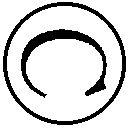

| ＣＵＴ 猟奇犯罪捜査班・藤堂比奈子<猟奇犯罪捜査班・藤堂比奈子> (角川ホラー文庫) | |
| 内藤 了 | |
| (2015) | |
ＣＵＴ 猟奇犯罪捜査班・藤堂比奈子
内藤 了

角川ホラー文庫
本作品の全部または一部を無断で複製、転載、配信、送信したり、ホームページ上に転載することを禁止します。また、本作品の内容を無断で改変、改ざん等を行うことも禁止します。
本作品購入時にご承諾いただいた規約により、有償・無償にかかわらず本作品を第三者に譲渡することはできません。
本作品を示すサムネイルなどのイメージ画像は、再ダウンロード時に予告なく変更される場合があります。
本作品は縦書きでレイアウトされています。
また、ご覧になるリーディングシステムにより、表示の差が認められることがあります。
【主な登場人物】
藤堂比奈子
八王子西署刑事組織犯罪対策課の新人刑事。長野出身。
厚田巌夫
比奈子の上司の警部補。通称〝ガンさん〟。
東海林恭久
比奈子の先輩。体育会系刑事。
三木 健
八王子西署のオタク鑑識官。
石上妙子
東大法医学部教授。検死官。通称〝死神女史〟。
中島 保
天才的なプロファイラー。通称〝野比先生〟。ある事件で囚われの身となる。
プロローグ
夢を見ていた。
サウナルームに入って行く夢だ。ゆらめき立つ熱波のむこうで、茹だりながら座っていた女の一人がこちらを見上げ、「きれいな胸」とつぶやいた。
満足だった。
聞こえない素振りでベンチに腰かけ、自分がどう見えているのか意識しながら足を組む。
──きれいだ......。
つぶやきが、また聞こえた。今度はすぐ耳元で。
サウナの波がじりじりと肌を蒸し、背中が痺れて痛かった。火傷しそうで身じろいだとき、何か変だと彼女は感じた。夢は急速に後退して、瞬いた目に薄闇が映り、突然、乱暴に足首をつかまれた。
「なに？」
鋭く叫んだはずだった。けれど舌の動きは緩慢で、寝ぼけた声しか出なかった。肌を灼く熱波が実は冷たさだったと気がついたとき、彼女は自分が裸で床に転がされているのを知った。意識を失う直前に感じた酷いショックで、両目が涙にかすんでいる。何が起きたか思い出そうとしてみたが、足を括られる気配にそれどころではなくなった。起き上がろうと藻搔いたが、両腕は後ろ手に縛りあげられていた。
「え？ なに。ここはどこ......なんの、臭い？」
得体の知れない悪臭が鼻を突き、言いようのない不安に震え上がる。見上げれば、高みから差し込む光が薄闇をまっすぐ裂いており、舞い散る埃がちらちら光るその奥に、雑多な木材やガラクタが霞んで見えた。肌の下には切り裂かれたらしい下着や服やコートがあって、布越しに石の硬さが伝わってきた。荒く切り出された石敷きの床はとてつもない冷たさだ。いったい何がどうしたというのか。彼女は思考をフル回転させ、そして、（あいつだ）と、瞬時に思った。
人通りのない路地だった。荒天の予感に急いでいたから、近道を行こうと思ったのだ。路地には古いシルバーの軽自動車が停まっていた。あいつの高級車ではなかったから、気にも留めずに通り過ぎると、車は跡を付いてきた。クラクションを鳴らすわけでなく、声をかけてくるそぶりもない。道をゆずろうと脇によけたら、数メートル後ろで車も止まった。
鈍色の空から、雪が激しく降っていた。車内は暗く、運転手の顔は見えなかったが、もしもあいつだったらと思うと、ぞっとした。相手を刺激しないように前を向き、コートの襟を立てて歩き出す。と、車はまた付いて来る。じゃりじゃりとタイヤがアスファルトを踏む音が背後に迫って怖かった。走って逃げれば轢き殺す。立ち止まれば、いたぶるように停車する。おまえの命は俺の手にあるのだと、そう言われているような車の動き。どうしよう、どうしようと考えながら、逃げ切る手段を模索した。警察に連絡しようとスマートフォンを取りだした時、背後でドアの開く音がした。
......その後のことは、覚えていない。
意識が戻るあいだにも彼女の両足は手際よく縛り上げられ、目の前に黒いゴム長靴がやって来た。あいつは薄闇に溶け込むような、長くて黒いコートを着ている。フードを目深にかぶった顔の、鼻から下だけが薄闇に浮かぶ。あいつは革の手袋を剝ぎ取ると、ゴム手袋につけ替えた。力の限り藻搔いても、彼女は芋虫のようにくねるばかりだ。ぱちん、と、ゴムが小さく鳴った。
「なんでも、いうことを、きくから、話をしましょう？ ね？ 話し、ましょう」
できるかぎり愛想よく、語りかけようと努力した。けれど恐怖と寒さで口がこわばり、奇妙なイントネーションにしかならなかった。相手はなんの反応も示さずに、黙々と何かの準備を続けている。どうしよう、どうしよう......彼につきまとわれてからのことが頭をよぎる。金をもらった。贈り物もたくさんもらった。彼はよい交際相手で、金づるで、女王様の気分を味わわせてくれた。けれど一度関係を許したら、立場は全く逆転した。どういう男かわかるにつれて、恐怖でしかなくなった。自分と同じ立場の女が他にもいると知ったから、なおさらだった。
噂は本当だったのね。彼女たちにも同じことをしたんでしょう。同じことを......どんなことを？
次第に暗さに目が慣れて、床の汚れがはっきり見えた。冴え冴えと冷たい空気の中でも、異様な臭気は耐え難いほどだ。
「これ、なんの臭い？ ねえ、これはなんの臭いなの？ ねえ！」
どす黒い汚れが何なのか、想像して彼女はパニックになった。もうひとつ、気付いてしまったことがある。黒いコートは雨合羽だ。全身を覆い、くるぶしまで届く雨合羽。ガラスの瓶を目の前に置き、そいつの姿は足元へ消えた。
「どうしてそんな恰好をしているの？ 私をどうするつもりなの？ ここはどこなの？ ねえ。ねえ、ねえ......お願い。なにか喋ってよ、助けて。助けてえ、誰か！」
彼女はついに叫んでしまった。一度叫ぶと制御が利かず、身悶えながら叫び続けた。
「なんでもするから。いうことを聞くから。二度と警察に行ったりしない、ねえ......」
あとはただの嗚咽になった。咽と鼻腔が刺されるように痛んでも、彼女は悲鳴を上げ続けた。ここはいったいどこなのだろう。こんなに叫んでいるのに、どうして誰も助けに来てくれないのだろう。必死に体をくねらせて、なんとかして、どうにかして、ここから逃げようと体を揺する。
きり......きり......きり......とモーターの音がして、がくんと足が持ち上がり、ゆっくり体が引きずられると、そいつは戻って来てひざまずき、彼女を優しく抱き上げて、逆さに吊した。足首だけに体重がかかり、ロープは肉に喰い込んで、くるぶしの骨が鈍く軋んだ。全身の血が頭部に下がり、寒さも恐怖も限界を超えて、彼女は「ぎゃあ」と叫びながら、空中で魚のように痙攣した。首から掛けていたペンダントが目の前に降ってくる。今となっては忌々しい、こんなもの......捨ててしまえばよかったのに......。
「しししし、しぃーっ」
口元に押しつけた人差し指から、空気が漏れるような声を出す。その指で優しく彼女の頰を撫で、首筋から鎖骨に触れて、形のよい乳房を手のひらで覆った。
「おねがい......」
彼女の懇願を聞きもせず、両手で胸の丸みをはかってから、脇の下、肋骨へと、ボディラインを確かめる。まっ白な乳房は高窓から差し込む光に照っている。ガラス瓶を拾い上げ、怯える彼女に見せつけるように、手袋をした手で中身を受けた。緑色の液体が手のひらから漏れて床に滴る。
（それは何？ 何をするつもり？）
もはや声にはならなかった。彼女の両目は充血し、涙は目頭から額に流れて、髪の毛に吸い込まれていく。お願いだからここからおろして......。逆流する血液は、鼻の粘膜を容易に破って溢れた。自分の鼻血で窒息しそうだ。彼女はもうわかっていた。床の汚れがなんなのか。本当は、最初からずっとわかっていたのだ。ゴム手袋が彼女の首に優しく触れて、ぬるぬるとした液体が、上半身に塗り付けられる。乳房に、脇に、鎖骨の窪みから首筋にまで。仕事が終わると手袋は外され、新しいゴム手袋につけ替えられた。歪んだ口元でまっ白な歯が笑うのを、気力も体力も奪われて、蛹のように吊されたまま、彼女はぼんやり見守っていた。
「光栄に思え」
髪をつかまれ、首を横向きにねじられたとき、彼女は相手がそう言うのを聞いた。鋭い刃が眼前をよぎり、血飛沫を浴びる相手の姿がスローモーションのように目の奥を通る。
（ああ......だから雨合羽......）
それが、彼女が最期に思ったことだった。
第一章 ストーカー犯罪相談会
気がつけば、枝ばかりだった桜の木々に、もう蕾が膨らんでいた。八王子では二月になると寒風の地面で水仙が咲く。その別名は雪中花。こちらに来たばかりの頃、比奈子は春の早さに驚くとともに、雪布団を被って咲く小さな白い水仙を見て、その別名に納得したものだった。長野市生まれの比奈子には、白水仙はなじみが薄い。故郷の水仙は黄色が多く、花が咲くのも四月初旬だ。遅い春を待ち侘びて様々な植物が一斉に花開くため、野山も里もあれよというまに色を変え、パステルをまぶしたような風景になる。
（いつか仁美にも見せたかったよ）
心の中でつぶやいて、船森公園の片隅に、コントレックスのペットボトルをそっと置く。膝を折って地面にしゃがむと、比奈子は胸の前で両手を合わせた。春を迎えた殺人現場に花束や供え物の山はもうなくて、酷い血だまりがあった場所には、柔らかく草が生え出している。公園はゆっくりと日常を取り戻し、比奈子もまた八王子西署の刑事課で、新年度を迎えるところであった。
そうでなければ、と比奈子は思う。
そうでなければ、人は前に進めない。そうでなければ、あまりに切ない。
この場所で手を合わせるとき、脳裡を占めた友人の惨たらしい姿は次第に薄れ、今では彼女の笑った顔が、おぼろに浮かぶ時もある。ただ、そうなればなったで笑顔の主に会えないことがやりきれない。比奈子は立ち上がるとコントレックスの蓋を開け、自分が二口ほど飲んでから、残りを全部地面に注いだ。
「やっぱり、お金出して水買うのって、よくわかんない」
（だから比奈子はダメなのよ。女に水分は不可欠よ。甘い物ばっかり摂ってると、肌は荒れるし、体型ゆるむよ）
亡き友人の声を聞いた気がして、比奈子はぺろりと舌を出す。
「わーかった。今日も仁美の分までがんばるから」
敬礼し、空のペットボトルをバッグに入れると、機能ブーツで走り出し......。そして、またちょっと太ったかなと比奈子は感じた。薄着の季節がやって来ることだし、そろそろ砂糖増量ココアは卒業して、別のお気に入りを見つけよう。
「で、ミネラルウォーターはありえないから」
胸の仁美につぶやいて、比奈子は八王子西署に駆け込んだ。
藤堂比奈子は八王子西署刑事組織犯罪対策課の新米刑事である。昨年秋に初めて挑んだ連続殺人事件で親友の仁美を失って、恋人の腕に手錠を掛けた。どうしようもないやるせなさを胸に置き、いつかは女性被害者に寄り添える性犯罪捜査課の女性課長に就任したいと、日々の任務に打ち込んでいる。
公務員の三月は、年度替わりの業務に忙殺される日々である。八王子西署もその例に漏れず、辞令交付式やら委嘱式やらの準備時間を捻出するべく、書類業務がヒートアップする。刑事課のブースへ駆け込むと、比奈子はさっそく警察手帳を取り出した。
「よかった。東海林先輩、まだ来てないわ」
手帳から付箋を二枚取り、各々に唐辛子のイラストを描く。
刑事課もまた年度末業務に忙殺されており、それぞれのデスクに書類の山ができている。比奈子は東海林の書類にイラストを描いた付箋を貼ると、自分の書類の頂上にも一枚貼って部屋を出た。
休憩所になっている自販機コーナーを覗いてみれば、メーカーの配達員がせっせと飲み物の入れ替え中だ。
「全商品が入れ替えですか？」
比奈子の声に、配達員は笑顔を返した。
「三月ですからね。パッケージが新しくなったり、いろいろで」
配達員のワゴンには、桜をデザインした飲み物が山積みにされている。
「あ、甘酒」
「ええ。花見シーズン先取りで」
さっそく一本購入すると、比奈子はポケットから七味の缶を取り出した。手のひらにしっくり馴染む小さな丸みは、国宝善光寺の門前に店を構える八幡屋礒五郎の七味唐からし缶だ。警察官になったとき母にもらった形見の品で、蓋に『進め！ 比奈ちゃん』の文字がある。比奈子は甘酒のプルトップを外すと、缶に七味を振り入れた。冷えた甘酒と七味の相性は絶妙で、咽を通過する糀の感触が心地よく、後から仄かに山椒が薫る。
「ココアより数倍いいかも」
比奈子は甘酒の成分表を読みながら、さらに七味を追加した。
「これは藤堂刑事。朝っぱらから七味とは、オツですな」
声をかけてきたのは鑑識課の三木で、彼は制帽をちょいと持ち上げ、
「花に団子に甘酒に。我が世の春とはこのことですな」と、にっこり笑った。
「......笑った！」
比奈子は目を見張った。三木の口元には、芸能人のように白くてきれいな歯が並んでいる。彼女いない歴三十四年、鑑識課の笑わない男三木捜査官は、笑えない理由であった歯列矯正ギプスを、めでたく卒業したようだ。
「では。わたくしはこれで」
三木はおまけのようにもうひとつ笑い、丁寧すぎる会釈をしてから、鑑識課へ消えていった。
頃合いを見計らって刑事課へ戻ると、まるで夜通しそうしていたかのように、東海林がデスクに突っ伏して書類整理を始めている。比奈子はつかつかと自分のデスクに歩み寄り、付箋より上に積まれた書類を取ると、東海林の鼻先にドサリと置いた。
「あっ、何すんだ」
東海林はむっとして顔を上げた。
「私のデスクに来てました。これ、先輩の分でしょう」
「んなことあるかよ」
「あります。これが証拠です」
比奈子は書類の付箋を剝がし、東海林の前でヒラヒラさせた。付箋には唐辛子の絵が描いてある。
「きったねー！ いつの間に」
「どの口が言うんですか。どうも書類が増えてるような気がしていたら案の定。私だって忙しいんですからね」
「ちぇっ。ついこないだまでは、素直でかわいい新人だったのになあ」
東海林は書類を積み直しながらブツクサ言った。
「ちょっと多めに戻したろ」
「そんなことはありません。私も書類の一番上に、目印を貼っておきましたから」
「勝負あり。証拠が上がっちゃ、言い逃れはできねえ。なあ東海林」
それは上司である厚田巌夫警部補の声だった。彼はトレンチコートを脱ぎながら、比奈子の付箋をつまみ上げた。
「あ、ガンさん。おはようございます」
「絵、うまくなったじゃねえか。旨そうなナスだ」
ガンさんは比奈子を褒めて、付箋を電話に貼りつけた。
「ナスじゃなくって唐辛子なのに。あ、そうだ」
比奈子は朝のお茶を準備しながら、もしもまた捜査本部が立ち上がるようなことがあれば、補充する菓子や軽食に漬け物も加えようと閃いた。
「野沢菜漬けがおいしいけれど、こっちで買うと高いのよね」
そんなことを考えながらも、捜査本部が立ち上がるような事件の場合、自分の出番はほとんどないのも承知していた。新米刑事比奈子の日々は、お茶汲みで始まり書類業務で終わる。ガンさんは緑茶派で、朝と深夜は渋めを好み、他の刑事は茶碗だけ間違えなければうるさいことは言わないが、東海林だけが朝はコーヒーで昼はお茶、夜は砂糖とミルク入りのコーヒーを飲むのだ。
「あー、めんどくさ」
比奈子は東海林のカップにインスタントコーヒーをぶちこむと、お湯を注いでぐるぐる回し、事件に活躍の場を求めていた去年の自分を思い出して恥ずかしくなった。あの時はまだ、何もわかっていなかった。あの時は、心のどこかにテレビドラマを見るような、無知で無神経な自分がいたのだ。
比奈子が初めて関わった事件は凄惨極まりないもので、世界が永遠に変わってしまったように感じたけれど、気がつけばまた春が来て、比奈子は刑事のままでいる。禁煙中だったガンさんはめでたくニコチンに打ち勝って、三木も歯列矯正ギプスが外れ、東大法医学部の検死官、石上妙子博士こと死神女史とは、ここ数ヶ月会ってもいない。
（春が来ても変わらないのは、私と東海林先輩だけってことね）
比奈子はお茶をトレーに並べると、同僚たちの机へ運んで行った。
刑事は暇が一番さとガンさんは言う。それでも俺たちは、いつ起きるともしれない、起きてはならない有事のために、日々の鍛錬を怠ってはならないと。
その週末のことだった。八王子西署では『いいかげんにして！ ストーカー犯罪相談の日』が開催されて、比奈子の仕事はお茶汲みではなく、イベントポスターの設営から始まった。
「どこに置きますか。藤堂刑事」
「あ、そのスタンドにお願いします」
「了解しました」
比奈子が組み立てたスタンドに、三木がパネルポスターを運んで飾る。Ａ０版のポスターには、それぞれにストーカー行為の事例がイラスト入りで描かれている。つきまとい・待ち伏せ・押しかけ。監視していると告げる行為。面会・交際の強要。乱暴な言動。無言電話・連続電話・ＦＡＸや電子メール。
比奈子は立ったまま、三木が並べるポスターを眺めた。
汚物などの送付。
「えっ」
最後の一枚に、比奈子は思わず声をあげた。そこには小包で大便を送りつけられた女性のイラストが描かれていたからだった。
「そんなものを送ってくるの？ 実際に？」
「はい。実際に」
三木は平然と肯定した。
「送られてくるのはウンコに限らず、精液などいろいろですが、まあ、いずれにしても利口なやり方とはいえません。警察に自分のＤＮＡを提供しているようなものですからな」
「信じられない。いったいどういう神経でそんなことをするのかしら」
「これでも喰らえ、の精神か、俺のすべてを知りやがれ、と思うのか、真意のほどはわかりませんが、それを鑑定しなきゃならん我々にとっては、迷惑以外の何ものでもありませんなあ」
三木の言葉に、比奈子は汚物の臭いを嗅がされたような気分になった。ストーカーの心理ってやつは、いったいどうなっているのだろう。そう考えてふと、中島保を思い出す。
あれは比奈子が初めて関わった事件だった。彼と知り会い、彼の腕に手錠を掛けた。鑑別技官を目指していた心優しき心理学者、今は犯罪者となった野比先生こと中島保の消息を、比奈子は何ひとつ知らされていない。
「では」
ニッと白い歯を見せて三木が去ると、それを待ちかねたように生活安全課の職員が走ってきた。
「藤堂さん、藤堂さん。彼、最近笑うようになったじゃないですか。その理由って知ってます？ 三木さん、彼女ができたんですってよっ」
「うそ！」
と思わず声を上げてから、比奈子は慌てて口を覆った。女性職員は比奈子の反応に満足して、比奈子の肩をポンポン叩いた。
「で、で。そのお相手が、もんのすっごい、美女なんですってよ」
「え、もしかして警察官なの？」
「一般人だということです。アニキャラ喫茶でメイドさんをやっているんですって」
「三木捜査官が、そんなことまで話したの？」
「はい。もうメロメロって感じで、聞かないことまでぺらぺらと」
若い女性職員は肩をすくめた。
アニキャラ喫茶の萌え系美女。そういえば三木のマウスパッドには、痛い系のシールが貼ってある。
比奈子は水色に霞んだ空を見上げて、「世間は春か......」とつぶやいた。
イベントの終了時間が迫る午後四時過ぎ。比奈子は窓口ブースのひとつに座っていた。相談者もほとんど帰り、手の空いた署員は撤収作業を始めている。今日はこれで終わりかなと、首をねじって背伸びして、欠伸が出かけたときだった。
「あの......まだ、よろしいですかな？」
パーテーションの向こうから、ひょいと顔を出した者がいた。
「原島さん」
比奈子はあわてて欠伸を吞み込んだ。
原島は、八王子西署と目と鼻の先にある安土駐在所の巡査部長だ。交番のお巡りさんで居続けることに誇りを持ち、地域の人々に愛されている大先輩。彼は瞼の下がった目を細めると、警帽をちょいと持ち上げて、比奈子の前に冷えたリゲインをポンと置いた。
「はいこれ、差し入れですよ。なかなかの盛況だったみたいで、ご苦労様でした」
「わ、ありがとうございます。ちょうど咽が渇いてたんです」
比奈子は小気味よい音を立てて封を切ると、中身を一気に飲み干した。炭酸のゲップが鼻を刺し、肩をすくめた比奈子の様子を、原島は、孫を見るような目で見守っている。
「ちったぁ疲れがとれましたかな？」
「はい。おかげさまで元気百倍です」
「それはよかった」
原島はパーテーションの奥を振り向くと、
「こっち。遠慮しないで、おいでなさいよ」と、誰かを呼んだ。
比奈子は背中に空きビンを隠した。原島の後ろから、若い女性が現れたからだった。
「原島巡査部長。こちらは？」
「こちらは吉田佐和さん。子安町にある『背なカフェ』の店員さんなんですがね。常連客からストーカーまがいのつきまとい行為を受けていると、何度か相談されてましてね。ちょうど今日、八王子西署でこういうイベントがあるってことで、無理矢理誘って、連れてきました」
比奈子と女性は視線を合わせ、どちらからともなく会釈した。
「じゃ、藤堂刑事。後はよろしくお願いします。吉田さん。この人はねぇ、こう見えて、なかなか腕の立つ刑事さんなんですよ。女性に寄り添える警察官になるのが夢ってんだから、安心して、なんでも相談にのってもらいなさいよ」
「あ、でもお巡りさん。私、やっぱり......」
戸惑う女性を残して原島は、「私はあっちに戻ってますから」と、比奈子に告げて、帰って行った。置き去りにされて心細いのか、吉田佐和は立ったまま、パーテーションで仕切られた狭い空間を見回している。比奈子はひとつ息を吸い、佐和に、向かいの椅子に座るよう促した。名刺を渡して自分が先に席に着き、「原島さん、相変わらずだな」と笑って見せる。
「強引で、いっつもあの調子なんですよ？ まあ、乗せられる私も私だけれど。もらったリゲイン、即飲みだったし」
比奈子が空っぽのビンを振って見せると、佐和は「あ。それ」と小さく笑い、ようやく自分も椅子に座った。
「駐在所の横の自販機で一本だけ買ったんで、どうすんのかなと思ったんだけど、刑事さんへの差し入れだったの」
「別に買収されたわけじゃないですよ？ 純粋な差し入れで」
「うふ。だって、それに......もう終了時間なんでしょう？」
「ええまあ。でも、そういうわけなので、何でも聞きますから話してください」
佐和は比奈子の名刺を確認すると、座ったままでコートを脱いだ。
屈んで椅子を引いたとき、長い茶髪がさらりと流れて、服の背中部分が大きく開いているのが見えた。驚いたのは、その美しさだった。なめらかな肩胛骨と白い背中は溜息が出るほどで、完璧とも言える造形美に、比奈子は一瞬目眩すら覚えた。
「原島さんが言っていた『背なカフェ』って......？」
比奈子に聞かれると佐和は若干声を潜めた。
「お店の名前。背中の背にカフェをひっかけて『背なカフェ』。肩胛骨フェチ専用カフェなんだよね」
「はあー、なるほど。それでそんなに背中がきれいなんですね。っていうか、背中がきれいだから店員さんができるのか。っていうか......ちょっと聞いてもいいですか？」
比奈子はテーブルに前屈みになり、佐和の耳元に囁いた。
「そういう服を着るときは、ブラってどうしているんです？」
「あ。もう、ヌーブラ着けてます。普通に」
「ヌーブラ。なーるほどねーえ」
比奈子が感心して頷くと、佐和はぷっと吹き出した。
「お巡りさんの言うとおり。刑事さんらしくない刑事さんね、変なの」
こうして佐和のストーカー相談は始まった。
佐和が勤める背なカフェは、店員が背中の開いたユニフォームを着ること以外、普通の喫茶店と変わらない店だという。時給は一〇〇〇円で、店員は客から要望があれば写真撮影に応じ、後ろ姿はワンカット五〇〇円、正面は一〇〇〇円の撮影料を、飲食代と別に申し受ける。問題のストーカー男は常連客だということだった。
「背中フェチの店だからさ、顔写真のリクエストって、ほとんど無いのね。でも」
彼は三日にあげず店に来て、佐和を指名し、正面写真の撮影料を置いていく。
「指名撮影はさ、ワンショットにつき三〇〇円から六〇〇円がバイト代に加算されるのね」
男は店に来るたび撮影料とは別にチップもくれるので、佐和にはありがたいお客だそうだ。
「お金持ちで優しくて、その点はいいんだけど。だけど、それがさ......」
と、佐和は表情を曇らせた。
「こないだ、お店帰りにスーパー寄ったら彼がいて、あたしに声をかけてきて」
メモをとる比奈子の手元を見つめ、
「これって記録に残るんですかぁ？」と、佐和は聞いた。
「正式な調書じゃないのでメモする程度ですが。気に掛かります？」
比奈子は佐和の顔色を窺って、ペンを置いた。
「んー。もしかしたら、べつにストーカーってほどでもないかもなんだよね」
「お話を伺っているだけですから大丈夫ですよ。立件するには被害届を出していただくんですけれど、無理にというわけじゃありません。先ずはどんなことが気になるのか、どんな状況になっているのか、お役に立てることがあるのかどうか、そういうことを知りたいので」
「そうなんだぁ。私もさ、自意識過剰かなって思ったりもするんだけど、ただ......」
「ただ？」
「んん。勘違いしているだけかも。なんか、スーパーで会ったの、偶然じゃなかったような気がして......」
「待ち伏せされてた感じです？」
比奈子が問うと、佐和は曖昧に首を傾げた。
「最初は気のせいかもって思ったのね。ショッピングしている時や、制服のクリーニングに行った時や、その後も何回か、跡を付けられてるみたいな気がしたり。そのうち、彼とはいろんなところで（偶然だね）って会うようになるし。一回なんかね、付けてくる足音を聞いた気がして、近くの交番へ飛び込んだの」
「そこで原島巡査部長と会ったんですね」
「うん。もともと通勤で前を通っていたからさ、お巡りさんとは挨拶仲間だったのね。で、すごく心配してくれて、色々話も聞いてくれて、相談コーナーがあるからって、ここに」
「そうだったんだ。いずれにしても、今日来てくれてよかったです。で？ 付けられて、その後は？」
「......特にはなにも......ないような......」
佐和が思案げに目を伏せたので、比奈子は、
「でも、気になることはあったんですね？」
と推してみた。佐和は身を乗り出した。
「刑事さん、もし考え過ぎだったらごめんね。大したことないのかもだけど、あたしが心配しているのはね」
「はい」
比奈子がにっこりするのを見ると、佐和は意を決したようだった。彼女は椅子に座り直し、背筋を伸ばして比奈子を見た。
「あのね。昨日また彼がお店に来て、お土産をくれたのね。（佐和ちゃん、これ好きでしょう？）って。それが、『太鼓屋』っていうお店のきんつばなんだけど、そこはお婆ちゃんが独りでやってる、ほんの小さなお店なのね。玄関がお店になっていて、近所の人しか知らないような。そしたら、中身が」
「まさかウ、......」「あんこ二つと、野菜が三つ。だったのよ」
比奈子は、出かけた言葉を言ってしまわなくてよかったと思った。
「普通に食べ物だったんですね。よかった。それで？」
「あたしがいつも買うのがその組み合わせなの。どうしてそれを彼が知ってるのかなって思ったら......おかしいでしょう？ なんだか怖くなってきて」
佐和は脱いだコートで足をくるんだ。たしかに、偶然その店に入ってきんつばを買ったとしても、その組み合わせは不自然かもしれない。
「彼が太鼓屋さんを知っていたのもだけど、組み合わせを知っていたのが不気味だったの。なんか、住んでるところも何もかも、全部見てるぞって言われたようで。一番は、あたし、小学生の子供がいるんだけど」
「え」
と、比奈子は驚いた。吉田佐和は二十歳そこそこにしか見えなかったからだ。
「吉田さんって、いくつなの？」
「二十四」
「私と同い年なんですか」比奈子が言うと、
「マジ同い年？ 刑事さんショボすぎ」と、佐和は笑った。
「子供は七歳の男の子で、高校の時に産んだんだけど、父親がクズみたいな男でさ、あの子に暴力をふるうから別れたの。去年の冬に八王子へ逃げてきて、子供と二人で暮らしてるんだけど、太鼓屋さんのきんつばは今どき一個八〇円で、子供のおやつに毎日買うのね。だからその組み合わせを知ってるってことは、遥人のこともバレちゃったってことかしらって。男って、女の連れ子を虐待することあるでしょう？ これって考え過ぎかしら」
「うーん」
比奈子はテーブルに肘をつき、鼻の先で指を組んだ。佐和の心配はもっともだ。けれど懇意の店で土産を買ったからといって、それが犯罪になるわけではない。厳密には、ストーカー行為にすらなっていない。
「中身はちゃんとしたきんつばだったんですものねえ」と、比奈子は自分につぶやいた。
「他には何かないですか。強引に交際を迫られたとか、家に侵入された形跡があるとか、嫌がらせを受けたりしていませんか？」
「そういうのはなにも」
「無言電話とかメールとかは？」
「アドレスとか教えてないもん。前のダンナで懲りてるからね、そこはしっかりガードしてるの」
「じゃ、今のところは付けられている感じがするってだけなんですね？ それと、監視されていたかもしれないという......」
だからといって、このまま放っておいてもいいのだろうか。
比奈子が懸命に考えていると、佐和は立ち上がって、コートを羽織った。
「うん、もういいや刑事さん。あたしとしては遥人のことが心配で頭に血が上ったというかさ。刑事さんに話聞いてもらって、だいぶ冷静になれたから、ちょっと気にしすぎかなって思った」
「ちょっとちょっと、待って下さい」
比奈子は佐和を呼び止めた。
「お相手の方のお名前ってわかります？ 私、それとなく、お相手の方とお話ししてもいいですよ」
「なんて話すの？ あたしのことを尾行してますかって？ それがあたしの勘違いだったら？ きんつばのことだって、偶然かもしれないじゃない」
「そう......ですよねえ」
「やだ刑事さん、しっかりしてよ」
佐和はまた笑った。
「女刑事って聞いたから、もっとキレる感じかと思ったけれど。こう、キリッとしたさ？」
「ご期待に添えず申し訳ありません」
比奈子がぺこりと頭を下げると、佐和は「あはは」と声をあげた。
「ホントにもう大丈夫。話、聞いてくれてありがとね」
立ち去ろうとする佐和の、スレンダーな背中が痛々しかった。暴力夫から子供を守り、シングルマザーでがんばっている彼女のことを、放っておけない気持ちがした。
「吉田さん、最後にもうひとつだけ。太鼓屋さんってどこにあるんです？」
「なんで？」
佐和が怪訝そうに振り向くと、比奈子は「てへ」と相好を崩した。
「野菜入りのきんつばって珍しいから、食べてみたいなあって思って」
「あれ、すっごくおいしいよ。いつもあたしが野菜とあんこを食べて、遥人はあんこひとつに野菜をふたつ食べるのよ。教えてあげる。太鼓屋さんの場所はねえ」
佐和は比奈子のノートに地図を描いた。
「近所の子供とかが大勢来ているし、夏はかき氷も人気なの。一年中かき氷の紙が貼りっぱなし」
比奈子は、ずっと昔から太鼓屋を知っているような気分になった。母が若い頃通い詰めたという店に似ている。その店は国宝善光寺の近くにあって、信州味噌で炒りつけた野菜あんのどりこの焼きを、成金まんじゅうと称して売っていた。同じようにお婆ちゃんの営む店で、成金まんじゅうが一個三〇円。シロップたっぷりのかき氷は一杯八〇円で食べられたという。
「東京って野菜のきんつばがあるんですね。私、きんつばって、お芋か粒あんしか知らなかったけれど、どうやって四角く焼くのかしら」
「四角くないよ。楕円形」
ノートに『太鼓屋』と書き終えて、佐和は鉛筆をテーブルに置いた。
「え？ きんつばなのに四角くないの？」
「あ。刑事さん、和菓子のきんつばと間違えてるでしょ」
「違うんですか」
「きんつばってのは、うー。こっちではなんて呼ぶんだっけ？ まるい形のたい焼きみたいな？ あたし、生まれが新潟だから」
「それって、どりこの焼きのことじゃないですか」
「どりこの焼きって、なにそれ」
「え、どりこの焼きって言わない？」
「聞いたことない。刑事さん、どこの人？」
「長野ですけど......そうなんだ。どりこの焼きって言わないんだ」
「言わないよ。んー、あれ。なんてったっけ」
比奈子と佐和は頭をひねり、同時に、
「今川焼きだ！」と、互いを指した。
佐和が去ると、東海林がふらりとやって来た。
「なんでおまえのブースからは笑い声がしてんだよ。ストーカー被害の相談なのに」
「すいません。今川焼きの話で盛り上がっちゃって」
「はあ？」
東海林は頓狂な声を出し、比奈子が警察手帳に楕円形の不審物を描き込んでいるのを見守った。
「ＵＦＯか」
「何言ってんですか。今川焼きですよ」
その横に『吉田佐和』と書き入れてから、比奈子は書類を片付けてブースを出た。東海林も後をついてくる。
「なんか事件になりそうな相談、あったかよ？」
「いえ。今日のところは」
「そっか。緊急性のある事案はなしか」
東海林は頭の後ろで腕を組んだ。
「思うんだけどな、今まさに身の危険を感じている人ほど、逆ギレが怖くて警察に来られないのかもしれないなって。相手がさ、モト彼だったりモトカノだったり配偶者だったりするわけだろう。そういう場合......なんての？ 情？ そういうのが絡んで告発しにくいとかさ、ありえね？」
「ストーカー犯罪って緊急性の見極めが難しいですね。でもまあ、ストーカーになるほど相手に執着しちゃうってのは、もうそれだけで異常なことではあると思うんですよ」
「異常ってだけじゃ、俺たちは動けんもんなあ。事件ってヤツは未然に防げればそもそも事件じゃないわけで、それがだよ、起きてしまうと俺たちのせいってことになるんだこれが」
比奈子は足を止めて東海林を見上げた。
「なんだよ」
「いえ。先輩も、一応色々考えているんだなあって」
「はあっ？」
刑事課ではガンさんが、書類に目を通しながらイベントの終わりを待っていた。
「忙しかったみたいだな」
「いやあ、盛況すぎてクタクタっすよ。藤堂、お茶。いや、コーヒー！」
東海林は比奈子に命令すると、ネクタイをゆるめて自分のデスクにどっかり座った。
「なんだ。東海林は何を拗ねている」
ガンさんは比奈子を見た。
「なぜでしょう」
「ガンさん、聞いてくださいよ。こいつのブースだけっすよ？ （がはは、がはは）って笑い声がしてるのは。ストーカー被害の相談会っすよ？ 俺、信じられねえっすよ」
「がはは、なんて笑ってません」
比奈子は唇を尖らせて、「せいぜい（あはは）くらいです」と付け足した。
「ほう。笑い声はともかく、なあ、東海林。藤堂の情報収集能力はなかなかのものだぞ。四方山話で情報を引き出すのが上手いんだ。で？ どんな相談だったんだ」
比奈子がお茶を淹れてくると、ガンさんは湯飲みを取ってそう聞いた。
「引き出すなんてそんな。相談者は安土駐在所の原島巡査部長が連れて見えた方で、カフェのお客さんに動向を探られている気がするという程度の内容でした。で、たまたま今川焼きの話になって盛り上がっただけなんです。彼女は新潟出身だから、今川焼きをきんつばって呼ぶんですよね。私の故郷ではどりこの焼きって言っていたんで」
「そういや、藤堂は長野市の出身だったな。長野では今川焼きを、どりこの焼きと呼ぶのか」
比奈子がちっともコーヒーを持って来ないので、東海林は自分でコーヒーを淹れに立って行った。
「はい。昔、善光寺の近くに成金まんじゅうっていう、野菜のどりこの焼きを売るお店があったらしいんです。こう、焼き型をぎゅっと押しつけたとき、皮の間から味噌あんがはみ出す感じで、香ばしくって......。忌野清志郎がコンサートで長野へ来た時、その味に感動して（成金まんぢうー）って叫んだとか叫ばなかったとか。そういう伝説まであったお店なんですよ。私、ぜひそれを食べてみたくって」
「成金まんぢう」
東海林はコーヒーを吹き出した。
「すげーインパクトだな、ウケルわ」
「でしょ？ でもそのお店、今はもうないんです」
「ふるさとの味ってのは、思い出込みで覚えているもんだからなあ。そもそも今川焼きは地方によって呼び名が違う。都内だと『太鼓焼き』とか『大判焼き』、東北だと『あじまん』、青森じゃ『がめこもぢ』なんて呼んだりするぞ」
「がめこもぢ......名前だけで美味しそう」
比奈子はぐうーっとお腹を鳴らした。
「もういいぞ藤堂。帰ってがっつり晩飯を食え」
「そそ。刑事は休めるときに休んでおかないとな」
そそくさとコーヒーを飲み干して、ガンさんの脇をすり抜けようとした東海林の胸に、ガンさんは書類の束をバチンと当てた。
「東海林はこれだけ終わらせていけ。不備がある箇所に付箋を貼っておいたから」
「うへ、まじっすか」
「それではお先に失礼しまーす」
すがるような東海林の視線をスルーして、比奈子は刑事課を飛び出した。
佐和について報告するため安土駐在所へ来てみると、原島巡査部長はパトロールに出ていて留守だった。ようやく陽も長くなり、あたりはまだほんのり明るい。比奈子は早足になって歩きはじめた。
太鼓焼きの話を聞いてしまったら、胃袋が、どうしても幻の成金まんじゅうを食べたいと言う。小麦粉の焼ける香ばしい匂い。熱々で甘辛い野菜のあん。今や比奈子の頭は成金まんじゅうで一杯だ。佐和の地図を頼りにひよどり公園近くの住宅街へ入って行くと、酒店やクリーニング店や、もう店を閉めてしまった写真館などがひっそり並ぶ路地へ出た。先に明かりのもれる家があり、子供たちがさざめいている。その家の軒下に古い看板が下がっていて、『太鼓焼き』と文字がある。
よかった、間に合った。と、比奈子は思った。
店はガラリ戸の奥が六畳ほどの土間になっており、昭和の香り漂うパイプテーブルをふたつ囲んで子供たちが群れていた。隣に二畳ほどの台所があって、路地に面したガス台で、品のいいお婆ちゃんが焼き型をひっくり返しているのが見えた。
「あの。太鼓焼き、まだありますか？」
ガラス越しに声をかけると、お婆ちゃんは白い割烹着で手を拭いて、古い木枠の小窓を開けた。
「ありますよ。あんこがひとつ、野菜がふたつ。今日はこれでおしまいよ」
「よかった。じゃ、それください。あんこをひとつと野菜をふたつ」
「はいはい、ちょっと待ってくださいよ。こっちの子供らが先ですからねえ」
お婆ちゃんは小窓の中から比奈子を見上げ、土間の方へと小首を傾げた。
「よければ中に入ってお待ちなさいな。寒くなってきましたものね」
ガラリ戸の奥には六人の子供が待っている。中にまるまる太った男の子がいて、比奈子にポットを指差した。
「ここね、お茶はタダなんだ」
「ありがとう」
比奈子は茶碗を取ってお茶を汲み、子供たちと一緒のテーブルに座った。ベニヤ張りの壁にはかき氷の価格表や色褪せた昭和のポスターが貼られており、お茶の棚には煤けた招き猫が置かれていて、成金まんじゅうの店にタイムスリップしたような気持ちにさせる。
「ここで食べていきますか？」
焼き型から太鼓焼きを外しながら、お婆ちゃんが比奈子に訊いた。比奈子は「はい」と返事をした。
一人で三つ食べる比奈子を見ると、子供の一人がこう言った。
「太鼓おばちゃんみたい。おばちゃんはね、毎日一〇個食べるんだよ」
「そうそう。すごいの」
「だからすごーく太ってるんだよ。ケイタの五倍は太っているよ」
「十倍だい」
ケイタと呼ばれた丸い子は、太鼓焼きをほおばりながら比奈子の隣にちゃっかり座った。
「ほらほら。早く食べて帰らないと、もうじき暗くなっちゃいますよ。それに、太鼓おばちゃんなんて言うもんじゃないわ」
お婆ちゃんは子供たちを戒めて、比奈子にお茶のおかわりをくれた。
「賑やかですみませんねえ。うちのご贔屓さんで、毎日一〇個、太鼓焼きを買ってくださる方がいるものですから」
返事の代わりに微笑みつつも、太鼓焼きを口にして、比奈子はややがっかりした。成金まんじゅうは味噌味だが、太鼓焼きは砂糖醬油の味付けだったからだ。ガンさんの言うとおり、思い出の食べ物というものは、永遠に巡り合うことのない幻の味なのかもしれない。
「みんな、お家は近所なの？ もう暗くなってきたけど大丈夫？」
何気なく子供らに話題を振ると、女の子の一人が得意げにこう言った。
「大丈夫。だって私たち、少年探偵団なんだもの」
「少年探偵団」
比奈子は思わず微笑んだ。将来刑事になるとも知らず、比奈子自身も少年探偵団に憧れたものだった。学校の周囲をパトロールしたり、不審な大人の跡を付けたり......。
「少年探偵団って、何するの？」
今や比奈子が大人になって、彼らを心配する番だ。子供たちは無言で顔を見合わせた。
「お姉ちゃんは、秘密を守れる大人なの？」
隅っこで書き取りをしていた男の子が、すっくと立って比奈子に訊いた。体は細く、背も低く、黒いキャップをかぶっている。ツバの下から上目遣いに見上げてくる目にドギマギとして、比奈子は太鼓焼きを食べるのを止めた。
「守れる。と、思うけど」
助言を求めるように厨房を見やれば、お婆ちゃんは背中で会話を聞き流し、黙々と店じまいの準備をしている。
「お婆ちゃんはだいじょうぶ。ここ、探偵団のアジトだし」
少年は人差し指で小さく尖った鼻先をこすった。
「アジト......ですか」
「守れるの？ 守れないの？」
「守れます。守ります」
比奈子が真摯に答えると、少年は仲間に頷いて、
「ぼくたちは、これから幽霊屋敷を捜索に行く。だから暗くなるのを待っているんだ」と打ち明けた。
「幽霊屋敷？」
「ひよどり山の森に幽霊屋敷があるんだけどね、そこはセンゼンに建てられた病院で、夜になると人魂が飛んだり、呻き声がしたり、ポルターガイスト現象も起きていて、屋根裏部屋に人影が......」
少年が声を潜めると、女の子たちは奇声を上げた。
「そんな場所が近所にあるの？ お姉ちゃん、聞いたことがないけれど」
「有名な幽霊屋敷よ。ケイタのお爺ちゃんがそう言ってたわ。お婆ちゃんだって知ってるわよね？」
女の子の問いかけに、お婆ちゃんは微笑みながら頷いた。
「俺ら、噂が本当か調べに行くんだ。本物の幽霊だったらいいけどさ、泥棒が幽霊のふりをしてたら一大事でしょ？」
「どうやってそれを調べるの？」
子供たちは一斉に、やせっぽちの男の子を振り向いた。
「もしかしてお姉ちゃん。幽霊探知機とか、そういうものを想像している？ いい年して幼稚だね。幽霊かどうか調べるためには、入ってみるしかないじゃない。人がいたなら幽霊じゃないし、誰もいなけりゃ幽霊だ」
「ごもっともです」
「でもホントの幽霊だったらどうするんだよ。俺たち、捕まって、喰われちゃったりしないかな」
太ったケイタの言葉を聞くと、比奈子も不安が募ってきた。幽霊ならばまだいいけれど、怪しい大人が潜んでいたら、危険なことになりかねない。
「危ないじゃない。なにも夜になってから行かなくったって」
「大人って、わりとバカだね」
少年はふんと鼻を鳴らした。
「本物の幽霊が、まっ昼間に出るわけないじゃん」
小憎らしいと思いつつ、比奈子は少年に降参した。
「わかった、じゃ、お姉ちゃんも一緒についてくわ」
比奈子がついにそう言うと、子供らは「わっ」と歓声を上げた。やられたかなと比奈子は思った。
「そのかわり約束して。幽霊がいてもいなくても、あとはお巡りさんに任せるって」
「うん。いいよ」
意外にあっさり少年は答えた。
「幽霊の正体が不法侵入者だった場合、逮捕するのはお巡りさんの仕事だし、本物の幽霊だった場合には、ぼくたちにできることは何もないしね」
彼はテーブルをダスターで拭くと、
「じゃ、行こうかお姉ちゃん」と、キャップの下から比奈子に笑った。
子供らのいう幽霊屋敷は、そう呼ばれるのに相応しい建物だった。建物はひよどり山の北にあり、草深い敷地をぐるりと水路が囲んでいて、入口は錆びた鉄扉で閉ざされている。鉄扉に続く石積みの塀にはジャングルのように笹藪が茂り、その上に木の枝が絡まり合って、辻に立つ街灯の灯が、いっそう不気味にぼんやり見えた。
屋敷は奇妙な形をしていた。木々の上に歪な屋根が突き出して、その上に細長い塔があり、ガラスに白く夜空が浮いて、風を孕んだ蔓草が、おいでおいでをするように揺れている。群青の空に黒くそびえる洋館は、古いホラー映画のワンシーンのようだ。
「吸血鬼が住んでいそう」
女の子の言葉が的を射ていると比奈子は思った。風に鳴る木々や黴びた臭いに身を隠し、オバケがこちらを窺っているような気にさせる。
「幽霊が出るのはあの窓だって」
少年が細い指で館を指すと、「いやっ」と女の子が悲鳴をあげた。
「それと、悲鳴やうめき声が聞こえるのは、あっち側のほうだって」
「もういいよぅ。もう帰ろうよぅ」
最初に泣き出したのはケイタだった。彼は比奈子の背中に貼り付いて、ブレザーの裾を引っ張った。興味本位で来たのはいいが、廃墟となった館の迫力に、気力も好奇心も萎えたのだ。
そういうわけで、比奈子と少年探偵団は、不法侵入者も幽霊も見つけることができなかった。女の子たちが泣き出して、少年も腰が引け、夜の探検はおひらきとなった。比奈子は子供らを家まで送り、最後に小さな少年を太鼓屋さんまで連れてきた。少年の家は路地のどんづきにあるアパートで、彼が二階で手を振って扉の奥に消えるまで、比奈子は少年を見守った。
けれども、そうしながら、
「でもあそこは、確かに何かがありそうよ」と、比奈子は自分につぶやいていた。
子供の遊びに付き合わされただけのつもりだったが、館で風が吹いたとき、厭な臭いに気がついたのだ。あれは何の臭いだったか。どこで嗅いだ臭いだったか。どこで、どこかで......？ 思い悩みながら家路を急ぎ、焼鳥屋の角を曲がったときに、比奈子はハッと足を止めた。
「......検土杖だわ！」
土に埋もれた遺体の腹を、検土杖が突き破った時の臭いが近かった。
検土杖は土に差し込んで土柱を採取する棒状の器具だが、警察はこれを遺体の捜索にも使用する。比奈子自身は直接その場にいたことはないが、土中に埋められ腐敗して、ガスで膨らんだ遺体の腹を突き破った検土杖が鑑識課に戻って来たとき、その凄まじい臭いに驚いたことがあったのだ。風に含まれた微かな臭気は、あれを薄めた感じにそっくりだ。
一体あれは、どういう素性の建物なのか。
明日出勤したら調べてみよう。比奈子は心にそう決めて、とりあえず焼鳥屋の暖簾をくぐった。
翌朝八時過ぎ、八王子西署の刑事課に一本の入電があった。
富士見台霊園近くの廃墟に立ち入った解体業者が、変死体を発見したというのだった。
「うはあー」
受話器を置いた東海林が気の抜けた声を出す。
「たぶんホームレスかなんかっすよ。人知れず建物に住みついていて、病死したってぇやつ」
東海林は未だに片づかない書類の山を、恨めしげに見下ろした。
「まあそう言うな。仏さんがどこの誰でもな、きっちりと調べてやらにゃ成仏できまい」
ガンさんは課内をぐるりと見回して、「藤堂」と、比奈子を呼んだ。
「悪いが東海林と現場へ行ってくれ。鑑識へは俺が連絡しておく」
「はい。わかりました」
「ええー、なんで俺と藤堂なんっすか」
東海林はさらにブツクサ言ったが、同僚の倉島や他の刑事たちは、ホームレスの病死と聞いたとたんに部屋を出ていって、他には誰も残っていない。
「下っ端はな、とにかく現場で場数を踏んで、経験積んでくもんなんだ。ほれ、早く行ってこい」
ガンさんに睨まれて、東海林はすごすごと比奈子を連れて部屋を出た。駐車場で車のエンジンをかける間も、やる気がなさそうに欠伸をしている。
「昨夜もさ、あれから十二時近くまで、書類をやっていたんだよなあ」
「それはご苦労様でした。運転、私が代わりましょうか？」
「や、いい。俺さ、女の運転って苦手なんだよ。なんつーか、ハンドルさばきに余裕がなくてさ、右足痙りそうになんだよね」
「そうですか。それじゃ、お言葉に甘えて」
比奈子がシートベルトを締めるのを待って、東海林は「ふわぁ」と車を出した。
「現場はどこです？ 富士見台霊園のそばでしたっけ」
「あー。なんか戦前に建てられた病院らしいぞ。あんなところに病院なんてあったっけかな」
「え？ それってもしや、小宮公園の近くでしょうか。ひよどり山の」
「んー。どうだかなあ......」
東海林の隣で行く先を睨み、比奈子は、昨夜の臭いのことを考えていた。
第二章 くつろぐ遺体たち
東海林が車を止めたのは、まさしく幽霊屋敷の前だった。単管や足場を積んだトラックが小径を塞いでいる横に、数人の業者が群れている。
「あ、来た来た！」
比奈子と東海林が車を下りると、一人が走り寄って来て、安堵したように溜息をついた。
「いやぁ。よかった、ご苦労様です」
「八王子西警察署、刑事組織犯罪対策課の東海林です。こちらは藤堂」
東海林は颯爽と警察手帳を取り出して、責任者らしい初老の男に提示した。
「さっそくですが、変死体を見つけたというのは」
「この建物の中なんで......」
男はポケットから名刺を出して東海林に渡し、ここの現場責任者だと名乗った。建物の取り壊し準備のために仮がこいを設置に来たのだが、状況を確認しておこうと建物内部へ入ったところ、変死体を見つけて警察に連絡したという。
比奈子は改めて幽霊屋敷を見渡した。昨夜は暗くてほとんど何も見えなかったが、荒れ果てた外観が鮮明になった今日のほうが、むしろ不気味に思われた。錆びた鉄扉は開かれて、雑草の茂る前庭や、巨大なケヤキや、絡み合った笹藪が間近に見える。昨夜ジャングルのようだと思ったのは、笹藪からケヤキの枝へ這い上っていくアレチウリの蔓だった。館は凝った洋風の建物だったが、レトロというより古臭い和洋折衷の歪な造りで、二階の一部に六角形の三階が載り、その上に教会の鐘突塔のような細長い塔がそびえている。少年が、幽霊が出ると言っていた場所だ。
建物から受けるこの奇妙な感覚はなんだろう。
比奈子はウインチェスター・ミステリー・ハウスを思い浮かべた。それはウインチェスター銃で巨万の富を築いた富豪が、銃の犠牲となった人々の霊に悩まされて建築したという複雑怪奇な建物だが、人外の意思設計に感じる歪さが、この洋館にも備わっているように思われたのだ。
見上げれば、細長く青い三角の塔が、黄砂で濁った空へ延びていく。
「もしや、遺体があったというのは、あの塔ですか？」
「いやぁ。まさか」
比奈子の問いかけに現場責任者は頭を振った。
「一階の、入ってすぐの部屋ですよ。あんまりビックリしたもんで、そっから先へは行ってません」
「そうなんですか」
「玄関を開けたとたんにね、とんでもない臭いがしたんですよ。こっちもまさか、あんなもんがあると思いもしなかったんで......」
「なるほどね。まあ、じゃ、先ずは様子を見に行きますか」
東海林は手袋と靴カバーを取り出すと、現場責任者を振り向いた。
「そこへ案内してください」
「いやいや、厭ですよ、めっそうもない」
現場責任者は顔の前で両手を振った。他の作業員らも俯いて、比奈子や東海林と目を合わせようとしない。現場責任者は首のタオルで顔をぬぐった。
「勘弁してくださいよ。ちゃんと警察に電話したじゃぁないですか。なんたってあんなものは、二度と目にしたかねえ。今だって、とっとと家に帰って風呂へ入って、お祓いにでも行きたいところを我慢してここにいるんです。おかげで今日はもう仕事になんねえし、職人だって、引き留めておくには日当の算段だってあるんだし......」
「お気持ちはよくわかります。ご協力にも感謝します」
初めて遺体発見現場に赴いた日の衝撃を思い出し、比奈子は心からそう言った。
「それでは私たちで現場を見てきますから、戻ってお話を伺うまでは誰も帰さないでくださいね」
「そりゃまあ仕方ないけども。早いとこ戻ってくださいよ。お化け屋敷で死体を発見したなんざ、話にしても出来過ぎで、薄気味悪くていけねえや」
職人たちが頷き合うのを見て、比奈子は興味をそそられた。
「幽霊屋敷の噂をご存じなんですか？ ここって有名なのかしら」
「有名かどうか知らんけど、昔っからお化け屋敷って呼ばれてましたよ」
「出るって噂は前からあったな」
職人の一人も口をひらいた。
「そもそもこれは、どういう建物なんすかね」
東海林は玄関ホールの大きな扉の前に立つと、はめ殺しの窓から中の様子を窺った。古い色ガラスは表面にさざ波が寄って透明度も低い。玄関扉は閉まっているが、どこから漏れ出すのか、風が吹くたび屍臭が臭った。
「戦前に建てられた病院だと聞いてますけど？」
比奈子が問うと、
「病院つーか、一度も使われたことがないって話だよ、なあ」
と一人が答え、若い職人たちは口々に、「俺は知らねえ」と頭を振った。最年長の現場責任者はタオルで口を隠すようにして、青い塔を仰ぎ見た。
「いえね、いろんな噂はありましたよ。ご覧のとおりずいぶん奇妙な建物ですしね。聞いた話じゃ、ここは大正時代の脳病院で、東北から出てきて大枚稼いだ医者が、奥さんのために設計したものだって話です。あの六角形の三階部分が板敷きの大ホール、その上はまあ、展望台ってところでしょうか。名うての棟梁と組んで設計して、全体を豪華に飾って仕上げる予定が、戦争が始まって洋風資材は入らなくなるわ、八王子空襲はあるわで、結局未完成のまんま放り出されて今に至るんで。ま、一時期はでっかい企業の所有だったこともあったみたいですが、中途半端に仕上げられた建物ってのは、一から造るよりずっと金がかかるってんで、結局荒れるに任せた状態で」
「ますます幽霊屋敷っぽくなっていったんですね」
「まあ、でも、いよいよ危険だからってんで、ついには税金使って取り壊しですよ。こっちもさ、こんな曰く付きの建物を処分するのは厭だったんだけど、この節あれでしょ？ 背に腹はかえられねえってんで、渋々仕事を受けたところが、骸骨見つけてこのざまですよ」
「......ホントに出るんでしょうか？」
「なんですか医者の奥さんの亡霊がねえ、三階のホールと展望台の窓に出るって話です」
「やだな、それ......」
東海林が情けない声を出した。
「俺、そっちのほうは苦手なんだよ」
「こっちだっておんなじですよ。出るって噂の建物で、ドレス姿の白骨死体を見つけたなんざ、目覚めが悪くていけませんや」
東海林と比奈子は顔を見合わせた。
「ご遺体はホームレスとかじゃないんすか？」
「ちがいますよ。まっ赤なドレスを着た腕のない骸骨がね、ソファにふんぞり返っているんですって」
きききききぃー、と悲鳴のような音を立て、重くて大きな玄関扉がゆっくり開いた。同時に、タンパク質が分解されていくときの濃厚な腐臭があふれ出す。扉の隙間から何かが落ちたと思ったら、それは巨大な蛆虫だった。比奈子はさっと飛び退くと、髪を払って七味の缶をぎゅっと握った。異常な臭気に警戒しつつ内部へ入ると、タイル貼りの玄関ホールが広い廊下へ続いており、柱時計や等身大の鏡など、いくつかの調度品が置かれたままになっていた。天井からは凝った造りのシャンデリアが下がり、壁の腰板、階段の手すり、天井の桟に至るまで、精緻な彫刻が施されている。流れ込んだ外気に埃が舞って、階段室から漏れ落ちる太陽の光に煌めいていた。
「もっと蜘蛛の巣だらけかと思っていたら、わりとそうでもないんですね」
「ホラー映画のセットじゃあるまいし、廃墟ってのはそういうものさ。蜘蛛の巣っつーのは、端っこにしか張らないの。それにしても、ひどい」
その端っこの蜘蛛の巣は、蠅で真っ黒になっている。東海林は背広のポケットからハンカチを出して、鼻を塞いだ。
「白骨遺体がこんな臭いを発するものでしょうか」
比奈子も鼻を覆いながら、東海林に続いて廊下に上がった。一階は受付と薬局、奥が待合と診療室になっているようだ。
「いや......どうなんだろう」
東海林は床の足跡を追って薄暗いホールを通り、半開きになった扉の前へ進んでいく。扉の奥から漏れる日差しが、鱗状にめくれあがった壁の塗料や蜘蛛の巣に気味の悪い陰影を与えている。途中、二階へ続く階段の下で、東海林は比奈子に顎をしゃくった。
「見てみ」
唐草を模した手すりには所々こすったような跡があり、踏み板部分は埃の筋が疎らになって、明らかに、つい最近まで誰かが上り下りしていた形跡があった。埃の積もり具合から見て、今日ではない。
「解体屋は、他の部屋には入ってないと言ってたよな？」
「はい」
比奈子は階段を見上げた。踊り場部分に古い肖像画が掛けられていて、洋装の麗人が扇子を抱えて微笑んでいる。
「もしかしたら、あれが幽霊の正体かもしれませんね」
「この屋敷はくせえぞ、いや、洒落じゃなく」
東海林はそう言うと、床のあちこちを這い廻る太った蛆虫を爪先で除けた。半開きになった扉の前には床に乱れた足跡があり、そこから蛆虫の大群が這い出して来ているのだった。業者が骸骨を見て逃げ出した部屋に違いない。東海林は息を吸い込むと、扉を押し開け、中へ入った。続いた比奈子は目にした光景に釘付けとなった。
壁際に並ぶフランス窓に、蔦の触手が透けている。埃で灰色になった洋室は、暖炉の前に色褪せた絨毯が敷かれており、上に置かれたロココ調のソファに、赤いドレスを着た骸骨が、くつろいだふうで腰掛けていた。アンバーに染めた髪をアップに結い上げ、肉のこそげた顔からは、歯並びのいい白い歯が今にもケタケタと笑い出しそうに剝き出している。骸骨は足を組み、ドレスの裾からミュールの先端を覗かせていたが、ソファの背もたれに伸ばしていそうな両腕は、どちらもふつりと根元からない。
「なん、すか、これは」
東海林は声を絞り出した。
「......どうして、こんな......」
腐敗汁を吸い込んで変色したソファは、虫の抜け殻でささくれたようになっている。抜け殻は絨毯にも床にも降り積もり、踏むとサクサク音を立てた。比奈子はおそるおそる遺体に近づいてみたが、腐乱して腕が落ちた形跡はない。サテンのドレスはスリップタイプのイブニングで、干からびて鎖骨に貼り付いた皮膚の下に、むき出しの肩胛骨が見えるばかりだ。
「腕は、切り落とされていたんでしょうか」
「こりゃどう見ても殺人だろう。ガンさんに連絡を......おい藤堂、何してる」
東海林の声が背中で聞こえた。その時比奈子は微かで奇妙な音に引かれて、奥のドアに近づいていた。ぴち、ぴち、ぴち......。泡粒が水をはじくような音に加えて、何かがコツコツと扉に当たる音がする。なにか、ごく微細なものが、つぶやき続ける音とでもいおうか。
真鍮のドアノブに手をかけたとき、比奈子はドアの隙間という隙間に、太った蛆虫が挟まっているのに気がついた。逃げようとしたか、やめようとしたか、それとも驚いてしまったからか、自分でもわけがわからないまま右手が動き、ドアノブを回して、引き開けた。凄まじい悪臭が一陣の黒い風と共に唸り出て、比奈子は咄嗟に息を止め、両目を瞑って歯を食いしばった。
「ごわっ！」と、東海林の悲鳴が聞こえる。
顔にも髪にも体にも、何かが当たって去って行く。鼻の穴に飛び込んだそれを振り払い、ようやく目を開けたとき、比奈子は隣室の光景に愕然となった。飛び出した風は夥しい蠅の群れで、比奈子の髪に突き刺さり、まだぶんぶんと唸っている。
その部屋は、診療室の水場だったと思われる。部屋自体は細長く、窓に添ってタイル張りのシンクが設えられて、真鍮の蛇口が並ぶその中に、裸体にエプロンを着けた女が後ろ向きに立っていた。
「し......東海林、先輩」
比奈子に呼ばれて部屋を覗いた東海林もまた、声を失って立ちすくんだ。
ぴち、ぴち、ぴち......音は、より鮮明になった。女は片手を蛇口にかけて、片手を海外ブランドのホーロー鍋に添えていたが、正確には立っていたのではなく、ただ置かれていたのだった。彼女の体はシンクにあって、臀部から下は切り取られたようにどこにもない。蠢く髪のあたりで泡の弾ける音がして、その度に何かがタイルに跳ね飛び、シンクでくねった。それは米を押し開けたほどの蛆虫で、スライム状の腐敗汁の中で、のたうち回っているのだった。
「おわあああああっ」
比奈子が悲鳴をあげるより早く、東海林は部屋を飛び出していた。
わずか一時間半後には、幽霊屋敷一帯が警察車輛で封鎖された。
幽霊屋敷は一階に受付と薬局、待合室をかねた洋室、隣に二つの診療室と水場、奥に院長室らしい小部屋とバスルームを備えていた。
鑑識課の三木が二つの遺体を調べている間に、比奈子と東海林はさらに二体の遺体を発見した。一体はミイラ化した女性の遺体で、全裸で空のバスタブに浸かっていた。髪がきれいなブロンドだったことから外国人かと思われる。比奈子らはさらに、階段を上って二階へ入った。
二階はラウンジに続いてふたつの和室になっていたが、そのうちの一室に布団が延べられて、やはり遺体が寝かされていた。仰向いた顔からはすでにほとんどの肉が剝落しており、診療室の水場にいた女性と同じように、赤茶色の蛆虫が頭蓋骨に残った養分をなめ取ろうとしている。遺体の腐敗汁は布団から漏れ出て畳を濡らし、壁を伝って天井にまで伸びていた。検死のために三木が布団を剝いでみると、甲虫やハネカクシが大量に這い出してひと騒ぎとなった。
ネグリジェ姿で横たえられた女の遺体は、腹部から恥骨の先までがきれいに持ち去られていた。
「いったいこりゃぁ、なんのつもりだ。ふざけた真似をしやがって」
ガンさんは、現場を見るとまっ赤になって歯ぎしりをした。
「さっそく石上博士を要請した。講義の最中だが飛んで来るとさ。腐乱遺体は写真だけ撮って、絶対に触るなってお達しだ。液体窒素と専用の収容器具を持ってくるから、蛆虫も甲虫も丁寧に回収しておけってよ。今回もまた、死神女史が燃えまくりそうな山じゃねえか」
鑑識課長がガンさんに言う。人の出入りで若干空気は入れ替わったものの、激しい腐敗臭とアンモニア臭で、署員の目には涙が滲む。
「それと、バスタブで見つかった仏さんのほうだがな、裏返して確認したら臀部がなかった」
「なんだとぉ？」
ガンさんは鑑識課長に目を剝いて、ガシガシと薄い髪の毛をかき回した。
「長年刑事をやってるが、近頃の犯罪には悲哀もなければ節操もねえ。そう思わんか、ああ？」
「まあそう怒るな。落ち着け」
鑑識課長がガンさんをなだめる。比奈子はおずおずと指示を仰いだ。
「ガンさん、私、東海林先輩と上の階を見てきたいんですが。解体業者の話では、三階部分は大ホールになっていて、その上に展望台があるそうです。階段にあった不審な足跡も、見たところ三階へ上っているようなので」
「うむ、わかった。これ以上仏さんが増えるのはごめんだがな。無理はするなよ、なんたってこの建物は」
ガンさんが言うそばから、「うわ」と誰かの声がした。
「どうした」
「すみません、大丈夫です」
どうやら、体格のいい鑑識課員が床の一部を踏み抜いたらしい。経年劣化した床板は目地の間に隙間ができて、階下が透けて見える場所もある。
「踏んでみてベコベコするところは危険ですね。階段もそうですが、雨漏りで腐っている部分があるようです。足下を確かめながら上がらないと危ないですよ」
「そうだな。建物の劣化具合を考えると、一階はともかく二階以上では、立ち入りの人数を制限した方が良さそうだな」
鑑識課長が指示を与えに一階へ下りると、ガンさんは東海林を眺めて、
「やっぱり東海林は下を見て来い。三階へは俺が行く」と言った。
「え、なんで。俺なら大丈夫っすよ。こんだけ賑やかなら幽霊も出そうにないし」
「ばーか。そうじゃねえよ。おまえ体重何キロだ？ 下手に上がってこれ以上、屋敷を壊しちゃいけねえからだよ」
「なるほど」
頷く東海林を後に残して、ガンさんは比奈子と一緒に三階へ上った。
比奈子は階段を数えながら、警察手帳にメモを取る。
「熱心じゃねえか」
「はい。図面代わりに細部を記録しておこうと思って」
「おまえの脳内コンピューターには、スキャナー機能も備わっているのか？」
「いえ。会話がないと記憶は無理です。だから図にしておかないと」
そう言う比奈子の警察手帳は、わけのわからない落書きだらけだ。ガンさんは比奈子の手元を見下ろして、「先ずはお絵かきの勉強だな」と笑った。
三階は階段室と広間、ツーフロアのようだった。広い階段室にアーチ形の入口があり、ドアがないので広間の内部が見て取れる。広間の壁は漆喰塗りで、壁と交互に窓があり、灰色に煤けたガラス窓から、芽吹きを待つ木々の黒々とした枝が透けている。比奈子は首を傾げて鼻をこすった。
「なんか、お線香か、匂い袋みたいな香りがしますね」
「そうか？ 俺にはわからねえな。それにしても、ここはなんだ。ダンスホールか？ これを建てた医者ってのは、どんだけ蓄財してたんだ」
ガンさんは床板を確かめながらホールに入り、「お？」と、奇妙な声を上げた。
ホールの中央、白く埃の積もった床に、一塊の何かを見つけたからだ。
「まさか死体ですか？」
階段室から比奈子が聞くと、ガンさんはそろそろと塊に近寄って、屈み込んだ。
「違う。ドレスだ。外側だけだ」
床の硬さを確認しながら、比奈子もホールへ入っていった。ガンさんがつまみ上げた物を見ると、それはパーティードレスのようだった。光沢のあるグリーンのタフタに豪華なレースがあしらわれている。
「きれい......。それに、たった今置かれたみたいに新しいですね」
「うむう」
ガンさんは親指と人差し指を顎に当て、自分の顎を揉みしだいた。
「......なんでこんなものが、ここにあるんだ」
「どこのブランドかと思ったけれど、これ、タグがありません」
「とにかく、鑑識を呼んで写真を撮らせるか」
ガンさんは立ち上がると、ホールの窓に目を留めた。
「......八王子市内がほとんど見渡せるじゃねえか」
「この部屋って、ダンスホールだったんでしょうか。なにもかもが豪華ですよね。壁に付いてる燭台もすごいわ。売ればけっこうなお金になりそう」
「解体業者の目的も、大方そんなところだったんだろうよ。宝探しに入ったところが、代わりに死体がざくざくって、舌切り雀じゃあるめえし」
「そうですね。でも、ここにはご遺体がなくてホッとしました」
比奈子は胸をなで下ろし、ガランとしたホールをつぶさに眺めた。
「だけどガンさん、ちょっとおかしくないですか？」
「なんだ、何がおかしいんだ」
比奈子は警察手帳にドレスのイラストを描き入れてから、それをガンさんに差し出した。拙い線の図面には、すでに展望台の文字だけがある。
「解体業者の話では、この上に展望台があると。ほら、外から見えた、青い三角の塔のことです。ここが幽霊屋敷と呼ばれる所以は、叫び声やうめき声が聞こえるほかに、展望台に人魂や人影が見えるからです。でも、そこへはどうやって行くんでしょう」
「ふむ」
と、ガンさんは天井を見上げた。天井は梁で六つの三角形に分かれており、中央部分に丸く豪華な彫刻がある。そこからシャンデリアが下がっていてもよさそうなものだが、照明は柱に突き出た燭台だけだ。
「人魂はともかく叫び声のほうは、被害者のものだったとすれば説明が付くがな」
ガンさんの言葉に比奈子はすくみ上がった。被害者の悲鳴を聞いた誰かがいたとして、それを怪奇現象と思い込み、助けを呼ばなかったとするならば、それはあまりにもおぞましいことだ。
「人影についてはどうですか。どう見てもこの建物はこの階で終わりで、展望台はただの飾りですよね。それじゃ、塔に映るという人影や人魂は、何だということになるんでしょうか？」
窓の外を春一番が吹き抜けて、蔓草やケヤキの枝が大きく揺れた。無人のままに放り出された建物がきしみ、流れていく雲の影が埃の上をゆっくりなぞる。ふと、比奈子はうなじの後ろを人が通った錯覚に捉われた。瀟洒な香りに振り向けば、燭台の下にぼんやり佇むものがあり、陽炎のようなそれは細い腕を伸ばして、燭台の、優雅に絡まり合った鉄の飾りをゆっくり引いた。
「ガ......ガン、さん」「うぎゃあああああっ」
文字通り、劈くような東海林の悲鳴で比奈子の声はかき消され、ガンさんは、弾かれたように階下へ向かった。比奈子も慌てて後を追う。
「警部補！ 厚田警部補、来てください」
誰かがガンさんを呼んでいる。床を踏み抜く勢いで駆け下りてみれば、一階の奥、院長室に署員たちが集まって、ガンさんが来るのを待っていた。東海林は院長室のバルコニーから身を乗り出して、胃の内容物をぶちまけている。
「東海林がえらいものを見つけました。地下室です」
「なんだ、そこに何がある」
「比較的新しい遺体です。頸動脈を切られた上に、両方の乳房が持ち去られています」
署員らは備え付けの本棚に隠されていた、人一人がやっと通れるくらいの扉をガンさんに示した。扉の奥は煉瓦造りで、石の階段が下りている。あまりに被害者が多いので、鑑識もライトなどの設営に手間取っているほか、現場検証の人手すら足りないという有様だ。ガンさんは鑑識課員のフラッシュライトを借りて扉の奥へ入って行った。比奈子も後に続いたが、遺体発見現場においては比較的クールな東海林の醜態が不安であった。狭い階段に明かりはないが、地下室には光源があるらしく、下方に明かりが差している。冷たい風に混じってやはり屍臭と、濃厚で甘ったるい、胸の悪くなるような血の臭いが吹き上げてきた。人が極限の恐怖を感じて発する臭いは、嗅覚の鋭い犬を怯えさせる。それを嗅いだ犬は悲鳴をあげて尾を丸め、脱糞することが知られているのだ。
鳥肌の立つような恐怖の気配に、比奈子は胃袋が裏返ってしまいそうだった。
地下室では、マスク姿の三木がすでに作業を始めていた。鑑識課長は新しい遺体の情報収集に、腕のいい三木を振り当てたのだ。現場写真を撮るフラッシュが眩しすぎ、比奈子は目を瞬いた。広い地下室には明かり取りの窓が二つあったが、敷地に繁茂する枯れ草がすりガラスの下半分を塞いでいるため薄暗い。内部には乱雑に倒れた建築資材があって、ここが作業場か資材置き場だったことを連想させた。様々な工具は当時のままに放置され、天井の梁には滑車が掛けられて、太いロープの先で大きな鉤針が揺れている。滑車のロープは天井をつたって壁に下り、無骨な木のハンドルにつながっていた。その前で撮影中だった鑑識課員がよけたとき、比奈子は初めて、東海林が吐いた理由を知った。
斜めに白く空間を分けた外光が、若い女の遺体を照らしている。彼女は全裸で椅子に掛け、行儀良く斜めに流した足の上に、これも行儀良く両手を重ねた形で縛られていた。傾げた首に三日月形の傷が開き、首の際から鎖骨の周囲、両方の乳房までがすっぽりとない。死後どれくらい経っているのかわからないが、網目状に血管が浮き出る腐敗網は見られず、そのため、膨らんだ内臓と浮腫んだ顔面が、蠟細工の肉体に嵌め込まれているようだった。ほとんど確信に近い直感で、比奈子は三階ホールにあったグリーンのドレスを思い出していた。あれを着る予定だったのは、この遺体に違いない。パーティードレスに身を包み、燭台の下でダンスの誘いを待つ壁の花。椅子に括ることで強引に作られた女性の姿勢は、まさしくそのように思われた。
カメラがまた、フラッシュを焚いた。
彼女が座らされた椅子の下にタールのような液体があって、中で何かが蠢いている。近くに置かれたテーブルには、研ぎ澄まされた数種類のナイフ、革の手袋、ビンや鋲や杭、その他胸の悪くなるようなものが整然と並べられており、ここで行われたおぞましい儀式を想像させた。
「あああ。こりゃまた酷い現場だねえ。さながら死体製造工場じゃないか」
込み上げるものに耐えきれず石段を駆け上がろうとした比奈子の前に、白衣を着た初老の女性が立ちふさがった。彼女は人差し指で銀縁メガネを押し上げると、比奈子を見下ろして鼻を鳴らした。
「久しぶりだね、お嬢ちゃん。お？ ちょっと太ったかい？」
「......先生」
反吐を抑えて声を出す。が、死神女史はさっさと遺体に突進していて、もういない。振り向けば、女史は早くも遺体の前に直立し、頭を垂れて合掌しているところであった。比奈子は石の階段にくずおれた。
「明かり！」
と、女史の檄が飛び、三木が比奈子をまたぐようにして、ライトを取りに駆け上がる。震える足に活を入れ、比奈子はゆっくり立ち上がった。
「先生、上も見てきてくれたんですかい？」
畳んだハンカチで口を覆って、ガンさんは死神女史にそう聞いた。女史はポケットからメントールの膏薬を出して鼻の下に塗りつけると、残りをガンさんに手渡した。ガンさんもそれを鼻に塗り、よろよろとそばに来た比奈子にくれた。比奈子は膏薬に指をつっこむと、たっぷりと中身を取って鼻の穴にも塗り込んだ。やけくそ気味のメントール臭が両目に染みて涙が滲む。比奈子は「しゅん！」とくしゃみをした。
「ざっと一周してきたよ。遺体が数体あるって聞いたから、今日は助手を連れてきた。骸骨とミイラは後にしても、とりあえず、一番新しいのを見ておかないとね。シンクで料理している仏さんのほうは、液体窒素で凍らせてからラボへ運ぶように手配しといた。内臓はともかく、外皮がまだ残ってたからね、相応のデータがとれると思う」
女史は椅子に括られた遺体の前にひざまずき、なめるように患部をのぞき込んだ。ビニールの靴カバーを虫が這い上がるのも気にならないようだ。
「こちとら老眼なんだから、これじゃ何にも見えないよ。明かりはまだかい？」
「まあそう急かさないでくださいよ。ここは電気が来てないんでね、発電機の準備とか大変なんですよ」
ガンさんの声など聞こえないかのように、死神女史はカメラを持った鑑識課員を手招いた。
「ちょっと、ここ、写真に撮ってくれないか。ここだよ、ここ」
女史は遺体の脇腹部分を鑑識課員に指差した。
「白い付着物がありますね」
膨れあがった臓器には、すでに肉蠅が寄生している。鑑識課員が写真を撮り終えるのを待って、女史は付着物を回収させた。
「人の体をこんなふうに弄びやがって。犯人はいったい何を考えていやがるんだ」
「知らない。それはあたしじゃなくてあんたたちが調べることだ。あとここね、ここも撮って」
膝に重ねた遺体の手首に、擦過傷と痣がある。まっ白になった足首にも、ロープの喰い込んだ跡が残されている。だが、椅子と体を括った部分は痣も皮膚の盛り上がりもないことから、遺体は死後、椅子に縛られたようだった。
「生きてるうちに逆さに吊して頸動脈を切り、椅子に縛って患部を切り取り、放置していたみたいだね」
「マグロじゃあるまいし、なんてえことをしやがるんだ」
天井にかかった滑車を見上げ、ガンさんは忌々しげに舌を鳴らした。
「ふん、マグロね。案外、同じ目的でしたことかもしれないよ」
女史は手袋をはめた指先で、遺体の首にばっくりと開いた傷をなぞった。
「同じ目的ってなんですよ」
「血抜きだよ。調べてみないとあれだけど、上の仏さんたちにもね、首に同じキズがある。見たところキズがないのは赤いドレスの骸骨だけだよ。頸椎にも刃の跡がないからね」
「血抜きって......それをすると、どうなるんです？」
比奈子は死神女史に聞いてみた。足の下で虫がつぶれる不快感も、女史の気魄にどこかへ飛んだ。激しいメントールの香りが、せめて意識の上だけでも、腐敗臭に勝ったような気持ちにさせる。
「うーん......たぶんだけどさ」
「ライトが用意できました」
階段で三木の声がした。後ろから、吐いちゃ復活戦を果たした東海林が電気ドラムを持って下りて来る。ライトを設営して明かりを点すと、光に驚いた無数のおぞましいものどもが、闇を求めて部屋の四隅へ散っていった。
「ぞわわわわわわああっ」
両足を交互に振り上げながら、東海林は奇声を上げて石段に逃げた。
「ばか東海林、突然変な声を出すな」
叱り飛ばしたガンさんでさえ、さすがに腰が引けている。鋭い光に目がくらんだのは、その場に居る全員も同じことだった。今までは薄明かりでぼんやりしていた室内が照らし出されると、比奈子もまた、立っていた場所から飛び退いた。遺体の置かれた椅子の回り、天井から吊された滑車の下に、タールのようにわだかまっていたのが血だまりだったと気が付いたからだ。そればかりではない。比奈子の靴カバーが潰した物は、散らばった肉片や内臓片に産卵されて蛹や幼虫となった肉蠅や死出虫やカツオブシ虫であったのだ。鑑識課員もガンさんも、三木も東海林も死神女史でさえ、その場の光景にしばし言葉を失った。
「......ここが殺害現場で決まりだな」
ガンさんが絞り出すようにつぶやいた。
「そのようだねえ。ここで処理してから、仏さんたちを上の階へ運んだんだ。血抜きしたのは......いや、今はまだやめておこう。とにかく」
死神女史は手の甲で銀縁メガネを押し上げると、
「鑑識さん。この部屋に置かれた備品のリストを、こっちへも全部報告してよ。特にその」
と、テーブルに置かれた小ビンを指した。
「ビンの中身や隅っこの袋や、一斗缶の内容物もすべてだよ。遺体の切り口が妙だしね、何の目的で何をされたか、解剖所見と照らし合わせてみたいから。あと、さっきカメラに収めた微物の成分鑑定も報告すること」
「こんな酷えこと、人間がやったとは思えないけど、犯人がジェイソンとかはナシっすよね？ 大昔にここで同じようなことがあって、ホラーハウス化してたなんつーのは......」
石階段の途中で東海林がつぶやく。死神女史は鋭い一瞥を東海林にくれて、溜息だけをついてから、またテキパキと検死に戻った。ガンさんは背広の胸ポケットをまさぐった。
「東海林、おまえな。せっかく禁煙してんのに、タバコが吸いたくなるようなことを言うんじゃねえよ。現場をしっかり目に焼き付けてだな、こんなことしやがったクソ野郎を、何が何でもとっつかまえるぞ」
「うす。了解っす」
東海林は石段から下りようともせずに請け合った。
三木は腐敗した床に這いつくばって、犯人の痕跡を探している。同じように遺体を調べる死神女史の瘦せて骨張った背中に目をやると、比奈子は自分に活を入れて、警察手帳を取り出した。こんな事件を解決するには、犯人の心理を読み解かなくてはならないだろう。それならば、正確で詳細な情報を彼に伝える必要がある。
彼に......誰に？
比奈子の頭には、迷うことなく中島保の存在があった。犯罪を憎むあまりに、自らが犯罪者となってしまった心理学者。おっちょこちょいで泣き虫で、『ドラえもん』ののび太にそっくりな、そして、あの事件以降ぷっつりと消息を絶ってしまった保のことを想いながら、図面を描き、風呂桶を描き、枕や鍋やオバケを描いて、二つの胸を手帳に描いた。
『小宮公園近隣廃屋における女性五人猟奇的殺人事件特別捜査本部』
これが、幽霊屋敷事件に捜査本部がつけた戒名だった。警視庁捜査一課から三個班が投入され、機動捜査隊と併せて八王子西署の講堂に特別捜査本部が立ち上げられたのだ。
本件の合同捜査会議に、比奈子は初めて捜査員として出席を許された。屋敷で発見された遺体は五体。死神女史の検死の結果、被害者らはすべて推定年齢二十代前半から三十代前半の若い女性と判明した。掲示板には遺体発見現場の異常な状況が写真と敷地図面付きで貼り出されたが、図面の元になったのは比奈子が描き起こした屋敷内部のメモだった。被害者が殺害された順番は、推定の範囲でほぼ次の通り。
・一人目の犠牲者
白骨化、一階待合室。推定年齢二十代後半～三十代前半。女性。下着なし。
両腕を切り取られ、足を組んだドレス（赤サテン）姿でソファに座らされていた。
・二人目の犠牲者
ミイラ化、一階浴室。推定年齢二十代後半～三十代前半。白人女性。全裸。
臀部を切り取られ、バスタブの中に横臥していた。
・三人目の犠牲者
腐乱、一部ミイラ化、二階和室。推定年齢二十代前半～後半。女性。下着なし。
頭部、両腕、両足、胸部を残し、下腹部から鼠径部が持ち去られた状態で布団に横たわっていた（ネグリジェ姿）。
・四人目の犠牲者
腐乱、一階診療室の流し台。推定年齢十代後半～二十代前半。女性。全裸。
両足を切り取られた上半身がシンクの中にエプロン姿で放置されていた。
・五人目の犠牲者
地下室（犯行現場）。二十代前半～後半。女性。全裸。
両方の乳房が切り取られた状態で椅子に括られていた。
※その他特筆事項：三階ホールに新品のパーティードレスあり
「殺害方法についてだが、検死官の報告によると、最初に殺害されたと思しき赤いドレスの女性は絞殺の可能性が高いそうだ。それ以外は全員、鋭利な刃物で頸動脈を切断されたことによる失血死。遺体の状態から見る限り、マル害は逆さまに吊されて全身の血を抜かれ、死亡後に損壊されている。頸動脈を切った凶器は刃渡り一五センチのシースナイフで、これは地下室で見つかっているが、遺体損壊に用いたとされる凶器が不明。切り口の形状が特殊で、今のところ該当する刃物がないそうだ。さらに、地下室ではオリーブオイルの瓶とラードの一斗缶、及び石膏等が見つかっており、石膏については、複数の遺体に付着しているのが確認されている」
管理官は言葉を切って、ひな壇に並んだ遺体の写真に目をやった。捜査員らも自然にそちらへ視線を移す。遺体写真はどれも目を覆いたくなるようなもので、被害者たちの無念さが胸に迫った。
「遺体は衣服を身に着けていないうえ、損傷が激しく身元が判明していない。地下室で発見された比較的新しい遺体においても鬱血による浮腫その他で生前の容貌とは著しく変化してしまっている。現在東大の法医学部が復顔作業を進めているので、マル害については生前の顔写真ができ次第配布する」
のどかで多忙な年度末に突然降って湧いた猟奇事件は、捜査員らを昂揚させた。遺体の身元がわからない。殺害理由もわからない。彼女たちはなぜあんな惨い殺され方をして、屋敷の随所に置かれなければならなかったのか。遺体がそれぞれ体の一部を欠損しているのはなぜなのか。そもそも犯人の目的は？ 謎ばかりを抱えて特別捜査本部は始動した。全員で無残な遺影に黙禱し、デスクごとに分かれて地取り捜査の地割りや役割分担を決める。初の会議に緊張しまくっていた比奈子にすら、何が何でもこの残虐な犯人を挙げてみせるという捜査員たちの気魄は伝わってきた。比奈子はそっとポケットを覗き、七味の缶に印刷された、『進め！ 比奈ちゃん』の文字を見た。
「お母さん。私、がんばるよ」
ガッツポーズを作ったとき、比奈子は「おい」と、ガンさんに呼ばれた。
「はいっ」
勢いよく立ち上がり、ガンさんの前に駆けていく。地取りに出る準備は万端だ。履き慣れた機能ブーツを履いてきたし、服装だって、動きやすいパンツスーツだ。スマホ、警察手帳、小銭の他には、汗を吸収しやすいタオルのハンカチ、靴擦れ用の絆創膏だって持って来た。
「藤堂。おまえ、茶菓子と軽食の手配をしといてくれないか。地取り捜査は夜まで続く。そこそこ腹に溜まるものも必要だ」
「は......い」
「東海林。おまえは本部の織田刑事と組んで赤いドレスを追ってくれ。ドレスの被害者だけが絞殺で、血抜きもされていない。最初の被害者の身元が割れれば、殺人の、最初の動機がわかるはずだ。ドレスは高級海外ブランドの、なんだったかな。ヴェルサーチとかいうやつだそうだ。販売ルートと顧客情報から、ドレスを購入した者の身元が洗えるかもしれん。清水、片岡、おまえたちは......」
ガンさん率いる厚田班は被害者の身元を割り出す使命を負った。すべての指示が終わらないうちに、同僚たちは次々と講堂を飛び出していく。
たった独り残された比奈子は死神女史の真似をして、「すん」と小さく鼻を鳴らすと、講堂の奥に置かれたテーブルに歩み寄った。細長いテーブルの上には捜査資料のほか、湯飲みやポットが並べられ、捜査員たちが必要に応じて休憩できるよう準備がされている。比奈子は溜息をついてから、手のひらに七味唐辛子を振り出して、舐めた。
「う。辛っ！」
それから警察手帳を取り出すと、茶菓子と軽食の必要数を記載した。
「これも仕事よ、立派な仕事」
次に捜査本部が立ち上がるようなことがあったら、漬け物と梅干しを用意しようと閃いたのは、つい先日のことだったではないか。みんなが地取りに走るなら、私はせめて、彼らの力になるものを用意しよう。消化がよくて、お腹も膨れて、頭が動いて、疲れもとれて、さらに気持ちがほっこりできるもの。
「よしっ！」
グーを握って活を入れ、比奈子は颯爽と捜査本部を後にした。
刑事課の固定電話から太鼓屋のお婆ちゃんに電話をかけた。野菜とあんこの太鼓焼きをそれぞれ二〇個。夕方に取りに行きたいと頼んでみたが、お婆ちゃんの返事はＮＯだった。
「たくさん注文がもらえて嬉しいんですけど、ここは、あたし一人で細々やってる店でしょう？ 今日はせいぜい、両方合わせて二〇個くらいしか焼けないと思うわ。私事で申し訳ないのだけれど、腰のお医者さんへ行く日なのよ。ごめんなさいねえ」
「いえ、いいんです。お体の方が大切ですもの。それじゃ、ご無理のないところで二〇個くらい、夕方五時頃伺いますから、領収証を書いておいてもらえますか？ 宛名は八王子西署でお願いします」
電話を切って手帳を確認。次は近くのスーパーで野沢菜漬けと梅干しを買って来ようかと思った時に、比奈子は刑事課の入口で、三木がおいでおいでをしていることに気がついた。
「なんでしょうか、三木捜査官」
「ええと、ですな。遺留品の、緑のほうのパーティードレスのことなんですが」
三木は比奈子が近づいてくるのを待ってから、白い歯を見せて笑った。
「ああ、いや。今はお忙しいですかな？」
「そんなことない、大丈夫です。その遺留品のドレスがどうかしたんですか？」
「藤堂刑事もご存じの通り、実年齢イコール彼女いない歴であった私には、ああいう女性ものの高級ドレスがどういう作りのどういうものか、まったく要点を得ないのですが......」
「え。つまりなんなの。ドレスに何か不審なところが？」
「はあ。つまりですな、若干奇妙に思えることがあるのですが、今は厚田警部補をはじめ、捜査課のみなさんがすっかり出払っているもので」
「あー、もう、いいからっ」
比奈子はぐるりと三木の体を出口に向けると、背中を押して鑑識課へ急いだ。
狭い鑑識課では、物品棚の隙間に置かれたテーブルに、グリーンのドレスが広げてあった。幽霊屋敷の三階ホールで見た時と同じ、目のさめるようなパーティードレスだ。オフショルダーで肘下にレースをあしらった袖があり、ウエストは細く絞られて、裾はボリュームのあるマーメイドラインになっている。
「溜息がでるほどきれいなドレスね」
比奈子はドレスに顔を近づけて、繊維の一本一本をつぶさに眺めた。
「やっぱりタグが付いてない。だけどこれ、本シルクのタフタじゃないかしら？ きっと高いわよこれ」
「さすがですなあ。私は生地にまで関心が行きませんでしたが......では、とりあえずこれを」
三木は白い手袋をはめ、比奈子にも同じ手袋をよこした。比奈子の準備が整うのを待って、彼はドレスを裏返し、背中部分を表に出した。
「実はこのドレス、未完成じゃないかと思うのですよ」
三木はドレスの背中を指差した。そこには通常ついているはずのファスナーがなく、両方の袖についても、脇の下から先が開いたままだ。比奈子は腰をかがめてドレスを持つと、
「いいえ。そうじゃないわ、たぶん......」
と、幾分か青ざめた顔で三木を見た。
「ここを見てください。ここ、縫い代はきちんと始末されているんです。背中も、袖も。ファスナーを縫い付ける前だったとしたら、切りっぱなしのはずだもの」
「ということは、つまり？」
三木は屈んで比奈子の目線にやって来ると、
「藤堂刑事の認識も、私のそれと同じですかな？」と訊いた。
「これは遺体に着せるために作られたドレスじゃないかしら。あの地下室の、胸のない遺体に」
「やはりそういうことでしたかな」
三木は立ち上がってパイプ椅子を運んでくると、比奈子をそこに座らせた。比奈子は記憶通りに足をそろえて横に流し、両手を重ねて膝に置き、それから首を傾げてポーズをとった。三木はドレスを床に下ろして輪に広げ、椅子ごと比奈子を傾けて裾に足を通させてから、残りの部分を布団のように着せかけた。
「袖は私の腕に巻けないかしら。そう、そうしてドレスの裾を、両足の後ろに巻き込んでみて」
三木は比奈子の指示に従った。
「上着部分は椅子と背中の間に押し込むの。どうですか？ これなら、椅子に括り付けたままの遺体にも、ドレスを着せることができる。ダンスホールに遺体を飾っておくために」
「胸の部分がぶかぶかなのと、ウエストがきつすぎる他は、概ね意見の一致を見たようですな」
比奈子の背中でドレスの両端を引っ張りながら、三木は大まじめにそう言った。
「失礼ね......あっ」
比奈子が突然立ち上がったので、三木の指からドレスがはずれ、衣擦れの音を立てて床に落ちた。
「わわ、気をつけて下さいよ、大事な証拠品なんですから」
「ごめんなさい。でも、閃いたことがあるわ」
比奈子はタフタの渦から抜け出すと、三木に向かって両手を合わせた。
「三木捜査官、お願い。腕のない白骨遺体の、赤いドレスも見たいんだけど」
そのドレスは汚れと臭いが酷いために別の保管庫に置かれていた。比奈子はグリーンのドレスを保管庫に運び、シートに三木が広げた赤いドレスの脇に並べた。
「何を閃いたのか知りませんけど、早いとこ済ませて下さいよ。本来ならば正式に書類を提出してですな......」
「わかっています。すぐに済むからメジャーを貸して」
比奈子が差し出した手のひらに、三木は憮然としてスケールを置いた。
「この赤いドレスはヴェルサーチだって話ですよね？ ああ、ホントだ。こっちにはちゃんとタグがある」
比奈子は三木のスケールを使って、二つのドレスを交互に測った。
「うわ細っ......こんなの絶対、モデル体型でないと入らない」
「而してモデル体型というものは、服を売るにはいいですが、男性の好みに則しているかという点では、女性側に大いなる誤解があるような気も、しますなあ」
比奈子はバスト部分を比べて測り、「やっぱり」とつぶやいた。
「やはりあれです。女性はそこそこふくよかで......聞いてますかな藤堂刑事」
「見てください三木捜査官。この二つのドレスはおかしいわ」
比奈子は三木の鼻先に、サイズをメモした警察手帳を突きつけた。
「赤のヴェルサーチが最高級仕立てのオートクチュールだとするならば、グリーンのドレスは完全オーダーメイドのプレタポルテよ。だって、ウエストの細さに比べて胸のサイズが大きすぎるもの。これって変じゃないですか？ 犯人は被害女性の体のサイズを、つぶさに知っていたってことなのかしら」
三木は細い目を瞬き、二つのドレスを見下ろして、「ふうむ」とうなった。
「藤堂刑事の推察通りとするならば、この上なくおぞましいことですなあ。犯人はあらかじめドレスを用意して、死体となった女性たちがそれを着る機会を狙っていたということになりますか」
「なんのためにそんなことをしたのかしら」
「それはわかりませんが」
三木は赤いドレスに歩み寄ると、床に屈んで比奈子を見上げた。
「犯人が被害女性のサイズを知っていたという点ですが、現段階ではその考えに全面的に賛成するわけにはいきません。先ず、ドレスが本当に被害女性のボディに合っていたかがわかりません。一人はほぼ骸骨になっていましたし、地下室の女性は肝心の胸がありませんでしたから。それと、ここを見てください」
三木は赤いドレスをつまみ上げ、脇の部分を比奈子に見せた。そこには補修された痕跡があった。
「ほんのちょっとだけ色が違う。たぶん、破れた部分を掛け接ぎしたのね。すごいわ」
「鑑識官は犯人が残したかもしれない痕跡を、繊維片に至るまで、虫眼鏡とピンセットで根気よく探し続けますからな」
三木は鼻の穴を膨らませた。
「で、ドレスが破れたということは、サイズが合わなかった可能性があるということではないでしょうか。そもそも、このヴェルサーチが本人のドレスだったかどうかもわかりませんが」
「そうか......うん。確かにそうね。それで？ その他にも、何か変わったところはありましたか」
「いや、残念ながら目立ったものは」
「そう......か」
比奈子は肩を落とすと、すぐまたパッと顔を上げた。
「遺骨から生前のボディサイズを推定できる方法ってないのかしら。それとも地下室のご遺体なら、サイズがわかるのじゃないかしら。バストはともかく」
「そうですな。それと」
「三木捜査官。私、死神女史のところへ行ってきます」
比奈子は立ち上がって保管室の出口へ向かい、ふと足を止めて戻って来ると、ポケットのメモを三木に握らせた。
「そうだった。これをお願いします。リカーキングにあると思うから」
「はい。って、えええっ？ 漬け物（できれば野沢菜）、梅干し、名糖アルファベットチョコレート......」
三木がメモの内容を確認する間に、比奈子は部屋を飛び出していた。
第三章 日本精神・神経医療研究センター
東大の法医学部では、五体の猟奇遺体の検死が続いていた。比奈子がラボに着いた時、死神女史は大量の蛆虫をピンセットでステンレス台に並べ続ける学生のそばで、何匹かの虫を専用トレーに移している最中だった。よく見る蠅の幼虫の他にも、赤茶色の蛆虫や、ハネカクシに毛の生えたものや、なんだかわからない奇っ怪な虫が並んでいる。そばには皮膚片に貼り付いた蛹の塊や乳白色の卵塊があって、それらを見たとたん、比奈子はトイレに駆け込みたくなった。
「おや。遅かったじゃないか」
比奈子を見ると、死神女史はマスクの奥でうっすら笑った。
「さっきまで厚田警部補が来ていたんだよ。てっきり一緒に来るかと思ったのにさ、今日は別行動だったのかい？」
「はい。私は夜食の調達に回されていて......」
「へえ、そうかい。新米刑事は雑務が多くて大変だねえ」
死神女史は意味ありげにほくそ笑んでから、「出かけてくるよ」と学生に告げた。
「お嬢ちゃんはちょっとの間、あたしの研究室で待ってておくれ。シャワーを浴びて、服も全部替えないと、さすがに臭いが酷くてね。先輩諸氏が食べる夜食に、臭いが移っちゃ困るだろ？」
「わかりました」
比奈子は頭を下げるなり、悪臭漂うラボを逃げ出した。廊下を歩こうとして初めて、膝が笑っているのに気がついた。胸のあたりがむかついて、比奈子は気分が悪かった。あまりに想像を絶した現場であったからなのか、幽霊屋敷ではすべてがまるで作り物めいて見えたのに、ラボで死神女史の仕事を目にしたとたん、否応のない現実感に襲われて全身が震え始めていたのだった。
死神女史の研究室はモルグの二階にある。せいぜい四畳半といった薄暗い部屋は、パソコンデスクと本棚の隙間にチョコレートが載った小さいテーブルが置いてあるだけで、たったひとつの窓はブラインドが閉じていた。比奈子はブラインドを引いて窓を開け、吸い殻が山になった灰皿と、デスクに散乱している板チョコの包み紙を片付けた。初めてここへ来た時は、閉じたブラインドにペタペタと夥しい解剖写真が貼り付けられていたものだ。今回もまた五人の被害者の解剖写真が、ブラインドはおろか、壁という壁を埋め尽くすのに違いない。
テーブルの脇に立てかけられたキャンプ用の椅子を開いて座り、箱買いされた明治のミルクチョコレートの脇に、食べかけのチョコが放り出されているのに気がついた。板チョコは激務をこなす死神女史のエネルギー源だ。比奈子は食べかけのチョコを割り、その上に大量の七味を振り出すと、サンドイッチのようにチョコで挟んでがぶりと嚙んだ。
甘い、辛い。甘い、辛い。からから、辛い......。
七味入りチョコレートを咀嚼しながら、比奈子は鼻水をすすり上げた。止めどなく涙が溢れ出るのは、辛さのせいでは決してない。無残に衣服を剝ぎ取られ、惨い殺され方をした上に、あんなふうに......まるで玩具か何かのように、館の随所に飾られた被害者たちの無念の思いが、切なくてやりきれないからだった。
（ばか。いちいち刑事が泣いてどうすんだ。本当に泣きたい人は他にいるんだぞ）
頭の中でガンさんに叱られた。
比奈子は手の甲で鼻水を拭うと、残りのチョコを強引に口へねじ込んだ。
本当に泣きたい人は他にいる。それは被害者本人と、被害者を大切に思う人々だ。なのに刑事である自分はいつも、その死を遺族に告げねばならない。いつも、いつも。
泣き止まなくちゃと思う間に、涙と鼻水はどんどん溢れて、ついに比奈子はポケットティッシュを取り出すと、大きな音を立てて洟をかんだ。心引き裂かれた遺族の許に、残酷なほど変わり果てた遺体を返すのはあんまりだ。人は誰しも尊厳ある姿で最期を迎える権利がある。なのに殺人者は命を奪い、人生を奪い、思い出さえも奪い去る。脳裡に仁美の最期がフラッシュバックした。それは笑顔の仁美ではなく、あの凄惨な、肉塊と化した姿であった。
比奈子は部屋を飛び出すと、トイレへ駆け込んで、チョコと七味を吐き出した。辛味が咽に貼り付いて、吐いても吐いてもまだ苦しい。便器を抱えて嗚咽しながら、水の渦を睨んで自分に誓う。
「......厚田班はおまえを挙げる。おまえなんか、絶対、絶対に、許さないんだから」
部屋に戻ると、死神女史は、比奈子の充血した目に気がついたようだった。
「おーやおや、だいじょうぶかい？」
かっこ悪いと思いながらも、比奈子は洟をすすり上げた。
「さっき厚田警部補と一緒にモルグを見に来た刑事はねえ、間に合わなくて背広の内側に吐いていたよ。あの背広は買い換えだ。嘔吐物の臭いって落ちないからね。さて。まずは一服させておくれね」
比奈子の様子を気にとめるでもなく、女史はデスクトップのタバコを取ると、さっそくライターで火をつけた。女史が吐き出す蒼い煙は開け放した窓から外へゆく。洗ったばかりの灰皿に容赦なく灰が落ち、女史が首筋を揉みながら二本目のタバコに火をつけたとき、比奈子は小さなテーブルで検案書を開いて、地下室の遺体のボディサイズを確認していた。
「先生、両腕のないご遺体なんですが、彼女の生前のスリーサイズを知りたいと思ったら、科学捜査でなんとかなります？」
「んー。なぜだい」
死神女史は鼻から二本の煙を吐き出した。
「私、気がついたことがあるんです。屋敷の三階ホールで真新しいパーティードレスが見つかったんですけど、そのドレス、地下室の遺体に着せるためにオーダーされたものなんじゃないかって」
「地下室の遺体ってのは、おっぱいのない仏さんだね」
「はい。ドレスのサイズを測ってきました。ウエストは六〇センチだったんですが、ヒップが八五センチでアンダーバストが七三センチ、トップバストは九五センチもあったんです。これって完全にオーダー品ですよね」
「ほう。羨ましいほどのダイナマイトボディじゃないか」
「ご遺体の検案書を見ると、ウエストとヒップのサイズが若干細いですけれど、バランス的にはドレスサイズと合致しているみたいなんです。持ち去られたバストの大きさは、予測できないものでしょうか」
死神女史はパソコンを立ち上げて、次のタバコに火をつけた。
「先生、吸い過ぎ」
「堅いこと言わないの。モルグじゃ一服もできないんだからさ」
女史は人差し指で比奈子を呼ぶと、警察手帳を覗き見た。
「そうだね。サイズはむしろぴったりだ。遺体は水分が抜けて縮むから、生前よりも細くなる。けど、持ち去られた部分のサイズはわからないよ。おっぱいってのは、ほとんど脂肪でできてるからさ。仏さんの身元がわかって、レントゲン写真とかブラジャーだとか、そういうものが見つからなきゃ無理だよね」
「頭蓋骨から顔を復元する技術があるじゃないですか。ああいうもので、ボディの予測はできないのでしょうか」
「スーパーインポーズ法のことを言ってるのかい？ あれは被害者の予測が付いた段階で、生前の写真と照らして個人を特定する方法なんだよ。頭蓋骨に肉付けして復顔するのも、予測値の範囲で皮膚を盛っていくに過ぎないからね。遺骨からスリーサイズを割り出すってのは難しいんじゃないのかい」
「そうなんですか......」
比奈子はガックリと肩を落とした。
「まあ、でも、犯人が遺体のためにドレスをオーダーしたっていう推理は、あたしとしては興味深いよ。実はねえ、あたしも気になってることがあるんだよ」
女史は吸いかけのタバコをもみ消すと、板チョコを一枚持ってパソコンに向かった。ソフトを起動し、画像を呼び出すと、モニターには骨のようなものが映し出された。
「これは腕を盗られた赤いドレスの遺体写真。ここが両腕の付け根部分だ。見えているのは鎖骨と肩胛骨がつながる部分。通常はここに上腕骨頭という関節があって、腕の骨とつながるんだけど、この被害者の両腕は、上腕骨頭部分できれいに外されているんだよね」
死神女史は爪でパッケージに切れ目を入れると、銀紙ごと剝ぎ取ってチョコを咥えた。カーソルを操って当該部分を拡大し、切断面を辿っていく。比奈子はモニターを凝視したが、干からびて骨に貼り付いた皮膚は既に原形を留めておらず、そこから何を読み取ればいいのか、さっぱりわからなかった。
「つまりこうだ。犯人は遺体の皮膚を丁寧に裂いて、上腕骨をむき出しにしてから、細心の注意を払って腕を外して持ち去った。右も、左も、同じ作業をしているんだよ」
「犯人は外科的な知識を持った者だということでしょうか」
「うーん。でもさ、それだとちょっと妙なんだよね」
死神女史は別の画像を呼び出した。モニターに生々しい傷口が大写しになって、比奈子は思わず身を竦めた。
「これは地下室の女性の頸動脈部分ね。凶器は動物の皮を剝いだりするのに使うシースナイフ。あと、こっちは」
次に浮かび上がったのは内臓だった。
「見えているのは被害者の肺ね。おっぱいは切り取られちゃって無いからさ」
灰白色の大きな臓器を指して死神女史が説明すると、比奈子は空っぽの胃袋から、またも胃液が込み上げてくるのを感じた。
「で、見てもらいたいのは切り口なんだよ。もしも犯人が外科的心得のある者だとしたら、遺体の損壊には間違いなく、メスや解剖用ハサミやノコギリを使うはず。切れ味抜群、切り口もきれいだし、何より使い慣れてるはずだから。でも、犯人が使ったのは何かもっと、繰り返し性のある分厚い凶器だ」
「繰り返し性？」
「うん。約七五ミリの間隔で皮膚が引き攣れた跡があるだろ。内側に差し込んで上へ引く。例えばヘラとかノミとか、変わったところでは鎌とかさ、色々調べているけれど、今のところ該当する刃物がないんだよ。もしかしたら特注品なのかもしれないけどね」
「遺体のドレスをオーダーして、遺体を損壊する道具まで、特注品を用意したっていうんですか？ いったいどんな奴なんでしょう」
死神女史は鼻を鳴らした。
「ふむ。さて、そこでだけどね」
彼女は食べかけのチョコを放り出し、パソコンの電源を切ると、デスクに載せたケースを持って立ち上がった。
「今からあたしは、法医昆虫学者のところへ虫のサンプルを届けに行く。そのセンターには、最近新しい心理学者が入ったんだけど、彼は犯罪者の『心理潜入』を独自に研究してきた先生でね」
「え......？」
心臓がドクンと鳴った。
『潜入』。心理学者でこの言葉を使うのは、保と、保が働いていたメンタルクリニックの院長だけだ。そして院長のほうは昨年、殺人鬼大友翔に殺害されてしまっている。
「先生は、中島保の所在をご存じなんですか？」
死神女史は既に出口に立っている。比奈子はテーブルに散らかった検案書をかたづけると、慌てて自分のバッグを取った。
「その心理学者は立件不可能な猟奇事件の真犯人で、犯罪者の心理を炙り出すことに長けているって噂だよ。直接脳をいじるんだっけ？」
死神女史はずんずんと廊下を歩きながら誰にともなくつぶやいた。比奈子はもう、確信した。
「いえ、そうではありません。確かに、最初のうちは、被虐待児童の記憶中枢に『愛された』という擬似記憶を埋め込んで、心を救う研究もしていたようです。けれど倫理的観点から直接脳を操作する研究は凍結され、代わりに考え出されたのが『潜入』という方法です。データをもとに心理学者が被験者と同化して、その心理状態をトレースすることで問題の解決を図ったんです」
「ふん」と、女史は背中で笑った。
「本当なんです。被験者の記憶にアクセスして、その体験を補おうというのが当初の目的だったんです。でも前回の事件では、結果として殺人犯の深層心理を覗く羽目になった。いまのところ『潜入』のエキスパートは中島保だけで、彼なら今回の事件でも、現場の状況や被害者の状態や、そうしたデータを総合的に鑑みて、加害者がどんな気持ちで犯行を行ったのか推測することが出来るはずなんです」
「偉いねえ、えらいえらい」
死神女史は足を止め、くるりと比奈子を振り返った。
「ちゃんと理解しているじゃないか。で、とにかくその心理学者ってのは、ドラえもんののび太みたいな、丸メガネで純朴そうな青年だ」
「先生......」
「でさ、あたしはあんたたちの捜査のために、このサンプルを法医昆虫学者のところへ持って行かなきゃならないんだけど、残念なことに足がない。あんた、ここへは何で来たの？ 車があるなら助かるんだけど」
「車です車です。総務の軽自動車を借りてきています」
「そう？ 悪いねえ、じゃ、あたしを送っていってくれないかい」
比奈子が死神女史に連れられて来たのは、『日本精神・神経医療研究センター』と呼ばれる巨大施設だった。施設は武蔵野の郊外にあって、受診施設を備えており、正面からは駐車場と病棟が見えるだけになっている。比奈子が患者用の駐車場に車を駐めると、女史は虫の入ったケースを手に取って、
「身につけている服以外、何も持って入れないからね。あんたの得意な警察手帳も、七味もバッグも、ここへ置いて行くんだよ」
と、比奈子に命じた。
「持ち込むと、どうなるんです？」
「原則的にはそのままだ。持ち出すことはできないからね。もちろん、このサンプルも置いてくるのさ。結果はパソコンに届くから」
言うなり、女史はもう車を降りている。比奈子は後部座席の下にバッグを隠し、ダッシュボードに手帳を入れて施錠した。女史は病院の正面玄関を入ると、病棟内部を通り抜け、広大な庭へ出て行った。庭は一面に芝が貼られ、所々に広葉樹があるだけのガランとしたものだった。置かれたベンチの少なさや殺風景な景観からすると、入院患者の福利厚生のためにデザインされたわけではないようだ。その証拠に、寒々と木々が揺れるその奥に、高いコンクリート塀で囲まれた窓のないビルが建っている。だだっ広い芝生を前景に、窓のない建物が忽然とそびえ立つ様は一種異様な光景だった。死神女史は歩く速度をゆるめて比奈子に言った。
「あれは厚生労働省が管轄する研究センターでね。精神疾患、神経疾患、筋疾患及び知的障害その他の、発達障害に関わる医療及び精神保健に関し、調査研究及び技術開発並びにこれら業務と密接に関連する医療の提供と、技術者の研修等に起因する国の医療政策として精神・神経疾患等に関する専門的医療及び精神保健の向上を以て公衆衛生の向上及び増進に寄与する目的で設置された施設なんだよ」
「む、難しすぎて、全く、ちっとも、わかりません」
比奈子は自分の手のひらを手帳代わりに、頭でメモして溜息をついた。
「センターの主旨については、調べればどこにでも書かれてる。ま、人体に関わることであれば、何でも研究しているっていうのがその主旨さ。たとえばこれからあたしが虫を届ける先生は、屍体に群がる虫の世界的研究者でね、死出虫類は愛しちゃってるけど、人間にはこれっぽっちも興味がない変態だ。ほかにもパソコンを通してでなければコミュニケーションできないサヴァン症候群の天才学者や、猟奇犯罪者なんかがいる」
女史がさらりと告げた猟奇犯罪者という言葉に、比奈子は思わず顔をしかめた。生ぬるい風が死神女史のボブカットを乱すと、彼女は小指で髪をかき上げ、
「さて。そこで」と、銀縁メガネを押し上げた。
二人がいるのは芝生の中央で、背後には病棟が、正面には窓のないビルがそびえている。
「そこで。ここから先はあたしの独り言なんだけど。例の事件で不起訴になった中島保は、本人の自供以外、自殺幇助も殺人罪も、検証する術がなかったらしい。そもそもが、生きている人間の大脳扁桃体を操作して自死するよう仕向けたなんて、荒唐無稽な話だし、それを証明できる技術を持つのが中島保本人だけってのも間抜けな話だ。でも、だからといってあの青年が、他人の脳を操作して彼らを死に至らしめたのをあたしは知ってる。もちろん、あんたも知ってるね。彼のような人間を自由にさせておくのは危険だよ。そうだろう？」
彼のような人間。というきつい言葉が、比奈子の胸に突き刺さった。中島保は、優しすぎるあまりに他人の痛みを自分の痛み以上に感じてしまう人間だ。それでも彼が殺人者なのは本当だった。
「......はい」
比奈子は女史の独り言に返事を返した。
「そういうわけで、彼の処遇についてはずいぶん論議が交わされたんだよ。あの事件で大友翔の殺人以外の真相が秘匿されたのは、中島保の研究にテロリストなんかの危険分子が目をつける可能性があったからだ。反面、拘置するべき罪状がないにも拘わらず、あの青年を野放しにしておくこともできなくなった。彼の技術や能力が犯罪に利用される可能性があるからね。そこで、中島保は国の施設に入院させて矯正することになったのさ」
比奈子がぽかんと口を開けると、死神女史はにたりと笑った。
「矯正といっても、別に頭に電流流してどうこうしようって話じゃない。この措置に際しては、どういう因果かあたしが身元保証人のサインをする羽目になってねえ。まあ、彼の天才を証明したのがあたしだったからなんだけど。で、中島保は表向き、国の特別矯正施設に無期限の入院措置となった。ただし彼の病室は空っぽで、身柄の方はさる研究センターにあり、犯罪心理学やら脳科学やら、その他諸々で国の専門的医療及び精神保健の向上に協力するという条件で研究を続けている」
「野比先生が、ここに......」
「おかしいね。何か聞こえたかい？ 最近は年のせいか、口のしまりが悪くってねえ。それと、同じく年のせいで、これは重くて持てないから、あんたが運んでくれないか」
虫のサンプルケースを比奈子に押しつけ、死神女史はまた、すたすたと歩きはじめた。
近づいてみてわかったが、窓のないビルは、芝生の中央に全く独立して建てられているのだった。死神女史はコンクリート壁に設置された検問所に行くと、守衛にＩＤを示して比奈子を助手だと紹介した。守衛はケースを受け取ると、写真を撮って専用の機器で重さを量り、さらに内部をスキャンしてから特殊なテープを貼った。別の守衛が比奈子と女史のボディチェックを済ませると、検問所の奥にある鉄扉の電流が切られ、女史と比奈子を中に通して施錠がされた。
「ずいぶん警備が厳重なんですね」
この様子では、随所に監視カメラも集音設備もあるのだろう。比奈子は死神女史に追いつくと、小さな声でささやいた。
驚いたことに、コンクリート壁の内側は緑溢れる庭園だった。ただし防犯上の理由からなのか、樹木も芝生も小川も池も、すべてがコンパクトにまとめられて、ミニチュアを配置した箱庭を見るようだ。
「場合によっちゃ小菅（東京拘置所）の三倍くらいは厳しいね。あんたも気がついたと思うけど、ここは車が進入できないようになっている。荷物はすべてヘリで屋上に運ばれるし、内部から情報以外の何かを持ち出すことは、基本的には出来ないんだよ。ここには特殊研究員の他にも、能力を買われて配置された天才的犯罪者が収監されていて、頸動脈直下に埋め込まれたＩＣチップで監理されてる。今じゃ中島保もその一人でね、行動はすべて監視、記録され、チップが無力化されない限りは、センターから一歩も外へ出られない」
死神女史は振り向いて、比奈子の顔色を窺った。
「そういえばあの事件であんた、彼の担当だったね。まあ、そんなに悲愴な顔をすることはないよ。天才には変人が多いから、他人に邪魔されないで研究に没頭できるのが無上の幸福だったりするんだし、拘束されてるわけでなし、居室スペースも与えられて、あたしのラボより数倍快適な環境なんだから」
比奈子は仁美の事件が起きたあと、保と一緒に駅前のラーメン屋へ行ったことを思い出した。その後はイルミネーション瞬く街路樹の下を散策した。保は比奈子から形見の七味缶の話を聞いて、臆面もなく涙を流した。その彼が、今は首にチップを埋め込まれ、窓のない建物で猟奇犯罪者の心理と向き合う日々を送っているという。あの恐ろしい事件が解決してもまだ、保はたった独りで、暗闇の中に棲み続けているのだろうか。
窓がないと比奈子が思った建物は、特殊ガラスのビルだった。コンクリートに見えた壁面は偏光ガラスで、一面に箱庭と大空が透けて見え、ロビーには巨大な樹木が植えられて、木陰のテーブル席で白衣の研究者たちがくつろいでいる。まるでＳＦ映画のセットみたいだと比奈子は思った。
「びっくりするのはわかるけど、口を閉じなよ、みっともない」
女史は比奈子の手からアルミケースを取り上げて、
「さて。あたしは変態昆虫学者に会ってくるけど」
と、ロビーの壁面に点滅している時計パネルへ顎をしゃくった。
「残念ながら、彼とは話が弾まないから、せいぜい三〇分程度で戻ってくるよ」
「え......あ、はい？」
「ちょっと、しっかりしとくれよ」
死神女史は比奈子に向き合い、骨張った人差し指をその鼻先に振りかざした。
「あんたと、あたしは、今、人形みたいに女たちを飾った猟奇犯罪者のクソったれを、追っかけているんじゃないのかい」
「そのとおりです」
ぱん！ と比奈子の腕を叩いて、女史は続けた。
「そのクソ野郎の心理を理解できる男がここにいる。あんたのことだから、現場の状況、その他もろもろ、すっかり記憶しているんだろ？ ここへは捜査資料も何もかも、持ち込むことができないんだよ。この役は、おまえさんにしか、できないんだ」
比奈子はハッと息を吞んだ。たった今まで、中島保にまた会えるかもしれないという考えで、頭の中がいっぱいだったのだ。
「で、私は一体どうしたら......」
死神女史は、もう比奈子を見もせずに、ロビーをどんどん進んで行く。アルミケースを持たない方の手のひらが、クイクイと追いやるように動いているのに気がついて、比奈子は後ろを振り向いた。
茂る広葉樹の向こう側で、コーヒーテーブルから立ち上がった者がいる。彼は他の研究員らと同じ白衣を着ていたが、おでこにかかった黒髪の下に、今どき流行らないまんまるメガネを掛けていた。
「......野比先生」
中島保は比奈子に向かって頭を下げた。あれから半年ほども経っただろうか。保とのことは、つい昨日のことのようにも、遠い昔のことのようにも、夢の中の出来事だったようにも思われる。彼に惹かれ、彼を疑い、彼を恐れて、彼を信じ、比奈子は彼を逮捕した。そうして、あれは恋だった。紛うことなく比奈子の初めての恋だったのだ。機能ブーツが踏む床は、あまりに平坦で摩擦もなく、かといって滑りもせずに音も立たない。偏光ガラスから染みこむ明かりが保の白衣にちらちら揺れて、窓がないにもかかわらず、ロビーには確かに三月の風が吹いていた。
「お久しぶりです。藤堂さん」
にこりと白い歯を見せながら、保は切なそうに眉根を寄せた。
「頭のケガは、もう大丈夫ですか？」
比奈子は大友翔に負わされたケガのことを、久しぶりに思い出した。
「はい。おかげさまで二〇針ほど縫っただけで済みました。先生こそ手のケガは？」
保ははにかむように俯いて、自分の両手をゆっくり揉んだ。その手のひらにも手首にも、大友を救おうとした時の傷がケロイドになって残されている。中指からは、銀の指輪も消えていた。
「指輪......『ライナスの毛布』は、外したんですね」
「はい」
保は静かにそれだけ言うと、向かいの席を比奈子に指して、腰を下ろした。テーブルにはミネラルウォーターのグラスがひとつと、飲みかけのアイスティーが載っている。
「藤堂さんもなにか飲みます？ ここはセンターのカフェなんですけど。そうだ、クリームあんみつもありますよ？」
「いえ。何もいりません」
それどころではない。自分は胸がいっぱいなのだ。比奈子は無意識にブレザーのポケットをまさぐったが、そこに七味の缶はない。警察手帳と一緒に車のダッシュボードに置いてきたからだった。
与えられた時間は三〇分だ。話したいことは山ほどあるが、保から聞き出さなければならないことはもっとある。わずか半年の間に保は瘦せて、メガネが大きく見えるばかりか、頰骨に影が落ちている。白衣の下にハイネックのセーターを着ているために、頸動脈の下に埋められたというチップが見えない。いや、そうじゃない。事件に協力を求めなければ。だからといって、どう話を切り出したらいいのだろう。思い巡らす比奈子に保は、
「石上博士からメールをもらっているんです。とんでもない事件が起きたそうですね」
と訊いてきた。
「ざっくりとした状況は知っています。ぼくが潜入できるように、詳しい話を聞かせてください」
「ええ......でも」
当然のように比奈子は躊躇した。幽霊屋敷の惨状を目の当たりにしたときから、頭にはいつも保のことがあった。保なら、この奇怪な犯罪がなぜ起こったか、犯人の目的や意識を読み解けるという確信があったのだ。『潜入』とは、現場の状況その他様々な情報を得ることによって、保が精神的に犯人になり、その意識を共有することを差す。同時にそれは、保自身が殺人者の行為そのものを生々しく体感しなければならないということなのだ。
「藤堂さん、あまり時間がないんです」
保は壁の時計を見上げると、テーブルに身を乗り出して肘をつき、比奈子の前で指を組んだ。
「ぼくは六人もの命を奪った。今でも毎晩彼らの夢を見るんです。怖くて苦しくて、死んだほうが楽だと思うほどです。だけど、奪った以上の命を救うまでは、ぼくには死ぬ資格すらないんだと思う。だから捜査に協力したい。どうかぼくを、藤堂さん。どうか、助けてください。お願いします」
指を絡めた手の甲で、てろりと傷口が照っている。プラスティックのように盛りあがった皮膚は、保の内部が外側に剝き出したみたいだった。
比奈子はおもむろに保のアイスティーからストローを抜くと、彼の隣に移動した。
「警察手帳を置いてきたのであれなんですが......でも、イラストさえ見れば、すべて思い出せるはずなんです」
比奈子はグラスの下の水たまりにストローを浸し、テーブルに幽霊屋敷の図面を描いた。
「現場は戦前に建てられた個人病院で、事情を知る人は精神病院だと言っていましたが、詳細は不明です。一階が受付と薬局と待合室、ふたつの診療室と院長室、浴室で、二階にはラウンジと二間の和室、三階にダンスホールがあるだけ。入院設備がないんです。殺害現場の地下室は院長室からのみ出入り可能です。被害者は五人。それぞれが屋敷の随所に奇怪な姿勢で置かれていました。検死の結果、最初に殺されたのは一階待合室にいた赤いドレスの女性だということがわかっています。彼女は絞殺されて両腕を切り取られ、ソファに足を組んで座らされていました。次の被害者は......」
水でテーブルに描いたイラストを見ると、比奈子の口からはすらすらと屋敷の様子が溢れ出てきた。三階ホールにあったドレスが、遺体のためにオーダーされた物らしいというところまで話し終えると、保は水の図面を睨み付けたまま、「うーん」と唸って鼻をこすった。
「......両手、両足、腹部、臀部、そして胸......欠損部分はまちまちなんですね」
「はい」
「性器はどうです？」
そのものズバリを保は聞いた。こういうとき、比奈子は彼がのび太ではなく心理学者なのだと思い知る。
「和室に寝かされていたご遺体のみ、なくなっていました。乳房の下から女性器を含む鼠径部までが欠損していたと見られています」
「内臓は？」
「大部分は溶けてしまっていたのですが、布団の傷み具合や、骨が残されていたことなどからも、死神......石上博士は、内臓以外の部分を持ち去ったと考えているようです」
「なるほど。では、最初の被害者はともかく、他の被害者が血を抜かれていたのはなぜですか？」
保は静かにそう聞いた。生々しく遺体の様子を話しながらも、比奈子と保は真剣だった。
「それがまったくわからないんです。石上博士は検死の時に何か閃いたようだったんですが、そういえば、なにを閃いたのか、まだ教えてもらってなかったわ」
「もしかして、犯人は遺体を腐らせたくなかったのかな。博士はそんなことを言ってなかった？」
保は顔をあげて比奈子を見た。
「遺体の欠損部分は、他の場所で見つかっていないのですか？」
「屋敷内部からは見つかっていません。犯人が持ち去ったと見られています。全身ならともかく、部分にしてしまえば、人目につかずに運び出すのは容易ですから」
「なるほど......」
保が両腕を組んで目を閉じたので、まさかこの場で潜入が始まるのかと、比奈子は俄然不安になった。比奈子が知る限り、保が犯人に潜入する様子は、凄まじさという点で常軌を逸したものだったからだ。午後の日差しがテーブルに落ちて、グラスの下に溜まった水に白く太陽が照っている。
「ご遺体って、血抜きをすると腐敗しないんですか？ 屋敷のシンクに置かれたものは、明らかに腐敗が進んでいましたけれど」
保の潜入を阻止するように、比奈子は疑問を投げかけた。
「残されている部分ではなく、持ち去られた部分のことですよ。少なくとも血液込みの状態よりは、腐敗の進行が遅いはずです。血液がなければ死斑が出ないし、腐敗網も出ないはずです。それに」
保は目を開けて、首を傾げた。比奈子には見えない何かを、見つめているような視線だった。
「たぶん......最初の犠牲者が事件のカギを握っているように思えます。彼女だけが絞殺で、血抜きされていないんですものね。その人が、連続殺人のきっかけだったのかもしれません」
「ガンさん......いえ、私の上司も同じようなことを言っていました」
「遺留物はどうですか？」
「殺害に使った凶器が地下室で見つかっています。地下室には他にも、用途不明のオリーブオイル、ラード、石膏等があったんですが、指紋や毛髪や犯人の皮膚片、精液などは見つかっていないんです。血だまりにあった足跡からは犯人が量販品の長靴を履いていたことがわかっていて、足のサイズや歩幅から、背の高い男性であると推察されます。けれども石上博士によると、遺体損壊に使われた直接の刃物が、まだわかっていないと」
「オリーブオイルにラード......ですか......」
握り拳で鼻を塞いで考え込む保を見ると、比奈子は恐ろしい妄想に身震いした。
「まさか......料理して、食べたとか......？」
保は比奈子に向き直った。
「たしかにそういう事件もあるけれど、今回はご遺体そのものを丁寧に扱っているから違うと思う。食肉を目的とするならば、遺体の扱いはもっとぞんざいになるはずです。ネグリジェ姿のご遺体などは、布団に寝かされてから下腹部を切られているんですよね。だって、地下室で患部を切ったら、運ぶ間に内臓が出てしまうから」
比奈子はごくりと咽を鳴らした。隣同士で向き合っている比奈子と保に、周囲の研究者たちは誰も関心を示さない。どの研究者も、自分の周囲三〇センチ四方にしか世界がないかのようだった。
「じゃ、犯人はそれをどうしたのかしら。患部をどうしたんでしょう」
「まだわからない。けれど、ご遺体を生きている人間のように飾ることにこそ、理由があるような気がします。為された行為は必ず意味を持つはずだから。どんなに奇抜に思えても、犯人にとってはしごくまっとうな意味がある」
保は「ふうむ」とまた言って、広げた指でフレームを押さえ、鼻の定位置にメガネを戻した。
「藤堂さんの話では、犯人は被害者のボディサイズを知っていて、ドレスも凶器もオーダーしている可能性があるってことでしたよね。そのドレスって、どんな感じのものですか？」
「どんなって......赤いドレスはヴェルサーチのオートクチュール。肌の露出が高くて、スリップのように肩紐で吊るタイプのものです。グリーンのほうはパーティードレスで、胸元を強調したデザインでした。どちらも、ボン、キュッ、ボン！ っていうデザインで、スタイルが相当よくないと着れない感じでしたけど」
「なるほど。被害者の共通点はそこかもですね。抜群のスタイルだったという」
「私もそう考えてみたのですが、生前のスリーサイズを知ることは、ご遺体からは無理なようで、検証することができません。野比先生は、どうしてそう思われるんです？」
「藤堂さんが特注品のドレスだと言ったから、プロポーションに拘りがあるのかなと。だって、男は女性のボディサイズなんか、普通は知らないと思いますよ。たとえばそれが恋人同士でも」
保が突然言葉を切ったので、比奈子はふいに、初めての夜のことを思い出した。あの頃よりも保は瘦せて、自分はワガママボディになった。いや、でも、糖分増量ココアはやめたし、甘酒にはダイエット効果もあるっていうし......てか、なんで今、そんなことを思い出す。比奈子は自分が恥ずかしくなって、こっそりテーブルに向き直った。比奈子の気持ちを知る由もなく、保はじっと宙を見ている。
「特注品のドレスは、被害者のことを知り尽くしているぞというアピールだったのでしょうか」
保は「うーん」と、首を傾げた。
「今はまだどんな推測もできないけれど、一番わからないのは、この犯人は一人の被害者をバラバラにするのじゃなくて、複数の被害者から別々のパーツをカットしてるってところです。ボディサイズを記憶するほど被害者に執着しているとして、どうして犯人は、短期間の間に五人もの女性に興味を持つことができたんでしょう。そもそも、被害女性たちは何者なのか。それもわかってないんですよね？」
「ええ。行方不明者リストと照らしても、未だ該当者が見つかっていない状況です。遺体の損傷が激しくて難航している側面もあります。復顔作業が終了すれば手がかりがつかめるかと思うんですが」
「若い女性ということ以外、被害者のことがわからない。殺害の理由もわからない。殺し方も犯行の場所も手順もほぼ同じなのに、切り取る部分がバラバラで、遺体の置かれた状況もまちまちで、持ち去られた部分は見つからず、犯行を隠すそぶりもない。か......」
「隠すそぶりがないというより、むしろ、飾られているような印象でした」
「そうですね。その廃病院、犯人にとっては特別な場所だったのかもしれないな。何度もそこを訪れて、家族といるように遺体と過ごしていたのかもしれない。遺体には、それぞれ役割があるのかも」
「役割ってなんですか？」
保は黒縁眼鏡の奥から比奈子を見つめ、「ハーレムとか」と、静かに言った。
「もしくは理想の家とか形とか......妄想を現実にした場所なのかもしれません。そう考えると、遺体損壊にも二つの意味合いがありますね。被害者の欠損部分がいやだったのか、逆に、欠損部分に執着があって、その部分だけはいつも身近に置きたかったのか。血抜きをしてからパーツを持ち去っているということですから、ぼくは後者の可能性が大だと思うんだけど」
「犯人は持ち去った部分がすごく好きで......保存しているってことですか？」
保が静かに頷くと、何故だか比奈子はそれが真実であるような気持ちになった。遺体から切り取った部位を保存しているド変態。そんなクソ野郎は、間違いなくこれからもやるだろう。ならば証拠として患部を見つけ、絶対刑務所にぶち込んでやる。
「なら、大きな冷蔵庫を持ってる業者や、個人や、設備を洗う必要がありますね？」
比奈子はそういいながら、保のストローをグラスに戻した。
「それはいいアイデアですね。ぼくのほうも、潜入結果がわかり次第お伝えします。ただ、殺人犯のぼくが刑事のあなたと公にやりとりするわけにはいかないから、石上博士にメールを入れます」
殺人犯と刑事。それは私たちの、それぞれ一面にしかすぎないじゃないと、比奈子は保に言いたかった。けれど、それ以上の何かを育む前に二人の道は分かれてしまい、比奈子は今も戸惑いの中にいる。
ロビーの端の階段を、死神女史の瘦せた体が下りてくる。時計を見ると、すでに四〇分ほどが経過していた。
「石上博士が戻ってきました。藤堂さん、今日はこれで」
比奈子が立ち上がるより早く、保は席を立って椅子を戻した。
「博士にお会いにならないんですか？」
「今はまだ不味いでしょう。今はまだ、ぼくと博士の間の計画というだけだから......」
「計画ってなんですか？」
「それは博士に聞いてください。じゃあ」
保は踵を返して歩きはじめ、ふと立ち止まって、振り返った。
「また会えて嬉しかったです」
きゅん。と、胸が締め付けられて、（私もです）と、思わず唇が動きそうになった。近未来的でだだっ広く、わざとらしく光と梢と風が揺れる白いロビーを、白衣の保が去って行く。日差しがメガネに反射したから、澄んだ瞳を見そびれてしまった。
「どうだった？ 何か収穫はあったかい」
両手を白衣のポケットに入れたまま、死神女史はそう訊いた。その手にアルミのケースはなくて、彼女は手持ちぶさたそうに、ポケットの中をまさぐっている。
「タバコも置いてきたんだった。早く車に戻るとするかね」
「はい」
比奈子は空身でセンターを出て行く女史の後を追いかけた。
「持ち込んだものを置いてくるばかりだと、ビルの中がいっぱいになっちゃうんじゃないですか？」
ずんずんと前を行きながら、死神女史は「天然かい？」と笑った。
「まったくあんたはおかしな娘だね。ケースはセンターの備品だよ。ここに研究依頼をするときは、ここが貸し出す専用ケースで検体を運ぶ。内部はのんびりして見えるかもだけど、ここの研究内容はトップシークレット。勝手なケースで運ばれて、妙なものが持ち込まれたり、持ち出されたりしちゃマズイだろ？ 検査結果はデータで来るけど、それらもすべて検閲されているんだよ」
「え、じゃあ、また何かお願いするときは？」
「事前にセンターに連絡して、ケースを取りにくるんだよ」
「あ......なーるほど」
死神女史は立ち止まって振り返り、
「だいじょうぶかねえ」
と、人差し指でこめかみを搔いた。
「ところでさ、知らない誰かと話した結果、何か収穫はあったのかい？」
「ありました。状況の説明ができましたし、署に戻ったら、大型の冷蔵施設を検索してみるつもりです。それと、潜入結果は先生宛てにメールすると伝言を預かっています」
「ふん」
死神女史は大股で歩きながら、白髪交じりのボブカットを搔き上げた。
「ま、一応あたしは保護者だからね。彼からメールが来ても不自然じゃないんだよ」
駐車場に戻ると、比奈子はさっそく警察手帳を取りだした。ペンを握って頭を傾げ、七味缶の蓋を回すと、タブレットを飲むように七味を口へ振り込んだ。額に汗がにじみ出す。
「よくやるよ」
死神女史は助手席のドアを全開にして足を組み、中空にタバコの煙を吐き出した。携帯式の灰皿は、そろそろ中身がぱんぱんだ。
四角いビルと塀を描き、アイスティーにストローを描き込んだところで、比奈子は聞き忘れていたことを思い出した。
「そういえば検死の時、先生は、被害者が血を抜かれた理由について何か仰っていませんでしたか？」
「ああ。あれかい？」
女史はフィルターの際まで吸ったタバコをもみ消した。
「捜査はあたしの仕事じゃないけどさ、遺体がどれもきれいだったからね、死斑や腐敗網がでるのを嫌ったのかなと思っただけで」
「野比先生も同じことを仰ってました。犯人は持ち去った部分を保管している可能性があると」
死神女史は「行こうか」と言って、助手席のドアをバタンと閉じた。比奈子は七味をポケットにしまい、手帳を閉じてエンジンをかけた。胡麻と山椒が口中に香り、舌先と喉の奥がまだ辛い。比奈子にとっては故郷を思わせる味だった。
「もうひとつ気になるのが、遺留品にあったオリーブオイルとラードなんですけれど」
「ああ、あれね」
女史は椅子の隙間から手を入れて、比奈子が後部座席に隠したバッグを取った。
勝手に開けて、検死報告書のコピーを取り出す。
「厚田警部補には伝えたけどさ、オリーブオイルのほうは遺体に塗られたらしい形跡があったよ」
「なんのためにです？」
「まだ推測に過ぎないけれど、遺体に石膏が付着してたろ？ あんた、学生の頃に、美術で石膏の型取りなんかしたことあるかい」
「ありません。専攻は書道だったから」
「だろうね」
死神女史は鼻で笑った。
「美術を専攻していたら、もちょっとマシな絵が描けるはずだもんね。石膏で型取りをするときにはさ、石膏が型にくっつかないように、剝離剤を用いるんだよ。普通はカリ石鹼なんかを使うんだけど、カリ石鹼の主原料は椰子油でね、オリーブオイルはその代用品だったんじゃないかと思うんだ」
「つまり、犯人は、遺体の型を取ったってことですか？」
「正確には、殺して型をとってから、患部を切り取ったってことだと思う。石膏は患部の周囲に残されていて、オイルも患部の周囲に付着していた。全身ではなくね。警部補は屋敷の内部をもう一度捜索してみると言ってたよ」
ハンドルを握る指先が、凍えていくような気持ちがした。犯人は生きた女性を逆さに吊し、首を切って失血死させてからオイルを塗って型取りし、患部を切り取って持ち去ったということになる。
「......どうしてそんな惨いことを」
「そこなんだけど、あんたと初めて会った、あの事件ね」
死神女史はシートを倒し、狭い天井を見上げながら、ポケットをまさぐってタバコを出した。
「吸ってもいい？」
「車輛は全面的に禁煙です」
「あ、そ」
女史は火のないタバコを咥えると、ふーっと息を吸い込んだ。
「あの事件の時、予感が確信に変わってね」
「え？」
「これからは厭な事件が増えるぞって予感がさ、確信に変わった。その道のエキスパート同士が情報を共有して立ち向かわないと解決に導けないような、意味不明の猟奇事件がね、増えるだろうって。そしたらすぐまた、こんな事件が起きたろう？」
幽霊屋敷の惨状を目の当たりにした比奈子には、女史の言わんとすることがよくわかった。あんな事件は海外のホラー小説か、伝説の殺人鬼が記憶の底で起こすものとばかり考えていたのだ。よもや日本の、しかも八王子西署の管内で発生するとは思わなかった。
「あんた、今日の心理学者をどう思う？」
「どうって......」
「あの青年は東大で電子工学を学び、武蔵野大学で心理学を学んだ天才だ。許すことのできない人殺しだけど、日々死体と向き合っているあたしとしてはさ、彼の衝動は理解できなくもないんだよね。これが問題発言だって、わかってはいるけどさ」
「私も問題発言をしますけど、今回のような惨状を見ると、犯人を同じ目に遭わせてやりたいと考えます。正直なところ」
死神女史は鼻を鳴らして、比奈子の腕をぺちりと張った。
「人の心を自在に操る怪僧ラスプーチンみたいに思われているけど、彼は、これから増えるかもしれない猟奇犯罪の捜査には、役立つ男と思うんだ」
比奈子は（ぼくと博士の間の計画というだけだから）という、保の言葉を思い出した。
「もしかしてそれが博士の計画ですか？ 野比先生との間の計画」
答えがないので助手席を見ると、死神女史は唇の端に火のないタバコをぶら下げたまま、シートにうなだれて眠っていた。無理もない。五体もの猟奇遺体が運ばれて、女史の法医学部は大わらわだったのだ。女史のことだからきっと、寸暇を惜しんで遺体をひらき、チョコレートだけを食料に、遺体のそばで仮眠をとって、声なき声を聞き続けていたことだろう。
比奈子は女史を起こさぬように、そっとカーブのハンドルを切った。
東大に死神女史を送り届け、比奈子がようやく太鼓屋へ向かったのは、すでに夕方のことだった。陽の長くなった小路には、春の宵が萌している。店の前に車を駐め、財布を持って外に出ると、小麦粉の焼ける香ばしい匂いが漂ってきた。忙しくて昼食を摂るのも忘れていたから、比奈子は胃袋が瘦せ細ったような気持ちがした。
「ごめんください」
声をかけてガラリ戸を開けると、太ったおばちゃんがひとり、三和土でお茶を飲んでいた。
「あの。今朝ほど電話で太鼓焼きを注文した者ですが」
「はいはい。ここにね、承っておりますよ」
お婆ちゃんは台所から顔を出し、包みに入った太鼓焼きを持って現れた。領収証と引き替えに代金を払うと、比奈子のお腹がぎゅるると鳴った。
「あーららら」
テーブルの奥でおばちゃんが笑う。人なつこい笑顔だった。
「あんまりいい匂いがするものだから、つい......」
比奈子はまっ赤になってお腹を押さえた。
「それならちょうどよかったですよ。これはおまけの太鼓焼き。あんこと野菜と一つずつ、あなたにあげようと思って焼いておいたの」
お婆ちゃんの申し出に、比奈子は目を輝かせた。
「きゃ、いいんですかっ？ うわ。うわ。あのそれじゃ、ここで食べさせてもらってもいいですか」
かくして比奈子はちゃっかりパイプ椅子に座り込み、その場で太鼓焼きにかぶりついた。型からはみ出た生地の部分がまだぱりっと香ばしく、嚙みしめるほどに味わい深い。頰袋から胃袋へ、安心が染みこんでいくような味だった。
「ああ、おいしいー。どりこの焼きって、なんでこんなにおいしいのかしら」
「どりこの焼き？」
壁際に腰掛けたまま、おばちゃんは目を細めた。
「私、出身が長野なんで。むこうでは、今川焼きをそう呼ぶんです」
お婆ちゃんは比奈子にお茶を淹れてくれ、おばちゃんの湯飲みにも新しいのを注いだ。
「面白い呼びかたをするのねえ。でも、トヨさんだって太鼓焼きのことを、ああ、なんだったかしらね？ 最初は面白い名前で呼んでましたよ」
「あじまんね」
「そうそう、そうでしたよ。太鼓焼きの呼び方は地方によって色々なのね。この年になっても、知らないことはまだまだあるわ。私、八王子は田舎だとばかり思っていたけど、最近は色々なところから人が来て、都会並みに怖い事件も起きるようになって......」
二つ目の太鼓焼きに手を伸ばしながら、比奈子はこの話題にどう絡もうかと思案した。幽霊屋敷で変死体が見つかったことは、すでにセンセーショナルな報道がされており、領収証を書いてもらったお婆ちゃんには比奈子の素性が知れているはずだ。目下のところ、街の人々の最大の関心事はそこだろう。それでもお婆ちゃんがダイレクトに話題を振ってこないのは、警察への配慮に違いなかった。
「ホント。世の中物騒になったわ」
おばちゃんが相槌を打つと、お婆ちゃんは溜息をついた。
「そういえば私ね、気に掛かっていることがあるんですよ。毎週来てくれていた中国人のお姉さん、最近見かけないけれど、どうしたのかしらって」
「誰のこと？」
「ほら、金曜日にクリーニング屋さんへ来てたでしょ。早口で喋る、背の高い」
「ああ」
おばちゃんは首の後ろを搔きながら、パイプ椅子に沈み込んだ。
「ヘルスサロンの彼女のことね。不法就労が見つかって、国へ帰されたとかでしょう？」
「そうなのかしら......」
──不法就労。
比奈子はその言葉に、ハッと閃くものがあった。被害者たちも、それぞれ事情を抱えていたのではないか。捜索願のリストにないのは、捜索願が出されていないからなのでは？ 警察手帳を取り出したいのを我慢して、比奈子は会話に加わった。
「ご近所にヘルスサロンなんてあるんです？」
「あるのよ。でもね、私も耳ツボダイエットで通ってみたけど、ぜんぜん効果なかったわよ」
「トヨさんは食べすぎなんですよ。それに、食べるのだって早すぎですよ」
お婆ちゃんに言われると、おばちゃんは大きな声で「がはは」と笑った。
「私だって昔はナイスバディだったのよ」
「太りすぎはよくないわ」
比奈子はそっと自分のお腹を触り、引っ込め気味にして、立ち上がった。油を売っている時間はないのに、ついつい長居をしてしまった。八時になれば地取りの刑事が戻ってくる。それまでにやらなければならないことは山ほどあるのだ。
「......あのお姉ちゃんはほれぼれするようなバストだったけど、お尻は扁平だったよね。ああいう人たちは、ふらっと越してきたかと思えば、ふらっといなくなるものだわよ」
二人の会話を背中に聞いて店を出る。
捜索願が出されていない可能性があることを、捜査会議で発表しようと思いながら。
翌朝早く、捜査会議は始まった。ヴェルサーチのドレスを調べていた東海林らは、それが国内に五着しか入荷しておらず、同サイズの一着が軽井沢のアウトレットモールで売られたことをつきとめてきた。ドレスは昨シーズンの型落ちで、販売されたのは去年の夏。支払いカードの履歴から、八王子市内の建築会社社長の名前が浮かんだという。
「購入時はアベックで来店していたようで、一緒にいた女はホステスのようです。愛人かもしれません」
東海林と組んでいる織田刑事がそういった。
「まったく事情のわからんヤマだからな、奥さんを刺激しないよう、うまく聞き込みしてこいよ」
ひな壇からガンさんが、迂闊な東海林に釘を刺す。
次々と捜査状況が発表されるなか、比奈子は昨日閃いたことを発表したくてうずうずしていた。現状では赤いドレスの線以外、被害者に関する有力な情報が上がってこない。会議が終わりに近づいた頃、「他に何かあるか」という管理官の声で、比奈子はついに手をあげた。
「なんだ」
比奈子はすっくと立ち上がった。
が、こういうときは、何から言えばいいのだろう。頭の中がまっ白になり、指先が冷えて心臓が躍る。
「あの......。被害女性の身元についてなんですが、不法就労者および、風俗営業等に抵触する犯罪者であるために、周囲から捜索願が出されていない可能性があるのじゃないかと思うんです」
「それで？」
「え、あ、それで......ですね」
マズイ。それでどうするべきかについては、全く考えていなかった。しどろもどろの比奈子を見ると、管理官らは互いに顔を見合わせて、小馬鹿にしたように鼻で笑った。
「では、捜査会議を終了する。各自鋭意奔走するように。解散！」
特捜本部は一斉に席を立ち、それぞれの持ち場へ散っていく。比奈子はその場に立ったまま、大きく肩で呼吸した。ゆっくりとひな壇を下りてきたガンさんが、比奈子の腕をポンと突く。
「厚田班は夜の女に焦点を絞って聞き込みをしてみよう。それとだな......」
話しかけのまま捜査本部を出ていくガンさんを、比奈子は無言で追いかけた。廊下には東海林がいて、すごすごと出て来た比奈子を見ると、「ドンマイ」と笑った。ガンさんはテキパキと指示を出し、またも厚田班は比奈子を置いて出ていった。
「昨日は三木に食料調達を押しつけて、死神女史と出掛けていたそうじゃぁねえか」
みんなが持ち場へ出て行くと、ガンさんは、凄みの利いた目で比奈子を睨んだ。
「いったいどこへ行っていやがったんだ。ああ？」
「......日本精神・神経医療研究センターです。石上博士が、遺体に付いていた虫の鑑定依頼に行きたいと仰って、車で送っていったんです」
「ふーん、なるほどねえ」
ガンさんはくるりと比奈子に背を向けた。
比奈子は自分が犯罪者になったような気持ちがした。
「勝手に持ち場を離れて申し訳ありませんでした」
深々と頭を下げた目の前で足が止まり、ガンさんのげんこつが、コツンと比奈子の頭を叩く。
「肝心なところの話が抜けてねえか？ センターへ女史を送っていく前に、おまえさんは、どうして、東大の法医学部を訪ねたんだ」
「それは......」
「ゆっくり話を聞こうじゃねえか」
ガンさんはそういうと、比奈子を鑑識課へ連れて行った。
鑑識課には被害者らの復顔データが届いていた。すでに東海林がそれらを持って、建築会社社長の許へ走ったという。最初にモニターに映し出された被害者は、狐のような目をした女性だった。三木がパソコンを操作して画像に化粧を施すと、石膏のような顔が一気に現実味を帯びて、生身の人間に近づいた。つけまつげとアイラインで一重の目が倍くらいに見える。
「いやはや、女は化けるねえ」
ガンさんは感心したように溜息をついた。
「これがドレスで着飾って、薄暗い店で接客するんだ。男は化かされちまうよなあ」
鑑識課長はかすかに笑い、「セクハラで訴えられるかな」と比奈子を見た。
「はあ。でも、麗華さんにはかないませんなあ」
小さな声でブツブツ言うと、三木は次の画像を呼び出した。
「現段階で復顔作業が終わっているのは三人ですな。今のが赤いドレスの最初の被害者。これはバスタブに入れられていた白人女性で、こちらがシンクの女性です」
モニターに並んだ女性たちは、三人とも若くて美しい。あんな姿にならなければ、今もそれぞれの人生を謳歌していたことだろう。ただ顔の作りはまちまちで、目の大きな者もいればそうでない者もおり、鼻の形も口の大きさも、顔のバランスは全く違う。
「みんな美人さんだけど、タイプが違いますね」
「麗華さんを知った今となっては、私はどの顔にもトキメキませんが......この三人を見る限り、一定の好みで被害者を選んだようにも思えませんな」
「おめえの好みはともかく」
ガンさんは三木の肩に手を置いて、
「たしかに顔つきからは、共通点が見えねえなあ......」と、つぶやいた。
「あの、ガンさん。それなんですが」
比奈子は、昨日三木と一緒にグリーンのドレスを確認し、それが遺体のために特注されたものではないかと気がついたこと、遺体のサイズを知りたくて死神女史のラボを訪ねたことを説明した。ガンさんは鼻をこすった。
「ふむ。死神女史の話ではな、遺体はオリーブオイルを塗ったくられて、石膏で型を取られた形跡があるそうだ」
「はい。私は、犯人が被害者のボディサイズを知っていたから、事前にドレスをオーダーできたと思ったんです。それで、ドレスと被害者のボディサイズが合致するかを調べたかったんですが」
「合致したのか？」
「無理でした。肝心な部分が持ち去られていて、サイズを推定するのが難しいということでした」
「まあ、そりゃそうだ。それにしても、犯人が被害者のサイズをねえ」
ガンさんがそう言うと、
「そりゃ、あれだよ。肉体関係にある男女なら、サイズを知っていたっておかしかなかろうよ」
と、鑑識課長が発言した。比奈子は三人の男たちを見回した。
「それじゃ鑑識課長。奥さんのスリーサイズをご存じですか？」
「バスト、ウエスト、ヒップってやつかい？ いや......」
唯一の妻帯者である鑑識課長は、三木とガンさんを交互に見ながら頭を搔いた。
「縦よりも横のほうがでかいという他は、わからんな」
「ですよね？ けれど、それって普通だと思うんです。たとえ恋人同士でも、普通は感覚的なサイズしか知らないと思う。だけどあのデザインのドレスをオーダーするなら、スリーサイズだけではダメなんです。トップバストとアンダーバスト、ウエストのほかにもヒップの何カ所か、っていうように、もっと細かなサイズが必要なデザインです」
「つまり藤堂刑事は、犯人が執拗に被害者のことを知り尽くしていたといいたいのですかな？」
三木は静かにそう聞いた。
「被害者を拉致し、サイズを測ってドレスをオーダーし、仕上がりを待って殺害したと。変態ですな」
「いや、それはないだろう。屋敷には生活の痕跡がなかったからな。ドレスが仕上がってくるまで被害者を監禁していたとするならば、パンの袋とかペットボトルとか、少なくとも排泄の跡があるはずだ」
「なら犯人はどうやってサイズを知りやがったんだ」
「少なくとも、オートクチュールのお店を廻って、ドレスの縫製を頼まれたかどうか調べる必要があると思うんです。それと、これはまだ思いつきなんですけれど、大型の冷蔵庫がある場所も調べたらいいと思うんです」
「大型冷蔵庫？ なんでだ」
「犯人は、持ち帰った部分を保存しているんじゃないかと思って」
比奈子はおぞましい推測をひと息に語った。男たちは顔を見合わせた。
「藤堂おまえ、なんでさっき、捜査会議でそういう話をしなかったんだ」
ガンさんは背広のポケットに手を突っ込んで、ペパーミントガムを取りだした。
「あ、ガム」
「喰うか？ こんな事件が起きるとな、やっぱタバコが吸いたくなるんだよ」
ガンさんはその場の者にガムを配ると、三木に指示してビニール袋に入った証拠品を受け取った。それは小さな紙切れだった。
「なんですか？」比奈子が訊くと
「クリーニングタックだ」とガンさんは答えた。
「赤いドレスについていたものですな。調べましたら油性ペンで字を書くタイプの、マーキングタックというものだそうで、全国のクリーニング店で使われている汎用品です」
「昨日はおまえにこれを渡して、クリーニング店を廻らせる予定だったんだがな、せっかく三木に伝言しておいたのに、途中でどっかへ行きやがって」
「申し訳ありませんでした！」
自分は捜査を外されていたわけではなかったのだ。比奈子は耳までまっ赤になって、体を二つに折り曲げた。あれ？ だけど
「三木捜査官からは、伝言を受けていませんけど？」
三木はパソコンチェアをぐるりと回すと、怨みがましく比奈子を見上げた。
「私がそれを伝える前に、藤堂刑事は飛び出して行きました。買い物のメモを、わたしに、押しつけて」
比奈子は思わずポケットの七味缶を握りしめた。自分の早とちりと傲慢さが恥ずかしくて、消えてしまいたいほどだったのだ。
「ああ俺だ。ん？」
三木にどう謝ろうかと思う間もなく鑑識課長の携帯が鳴り、その緊迫した声に、比奈子らは動きを止めた。
「わかった。すぐいく」
課長が電話を切ったとき、三木はすでに出動準備にかかっていた。課長はガンさんに視線を向けた。
「あの廃病院に井戸があったの、知ってたか？」
「いや」
「うむ。敷地の裏に井戸があってな、念のため中を確認させていたんだが、被害者の物と思われる着衣ほか、人骨らしきものが出たそうだ」
ガンさんと比奈子は顔を見合わせた。
第四章 猟奇犯罪捜査班
幽霊屋敷周辺には、今日もマスコミ関係者が張り付いていた。
封鎖テープの前でオカルト研究家が奇声を上げているのを見ると、比奈子はムッとして、車の中から彼らを睨んだ。早く事件を解決しないと、被害者らの死が興味本位で語られる。比奈子はそれが許せないのだった。
無礼なロケハンの脇を通り過ぎ、警察車輛で路地の奥まで乗り付けると、三木はさっそく手袋をはめて敷地内部へ走って行った。比奈子は一足遅れで車を降りて、髪を撫でる風に空を仰いだ。風は温く柔らかく、遺体が運び出されたからなのか、ひよどり山の森の匂いを含んでいる。こんなに気持ちのいい季節なのに、関係なく事件は起きて、慌ただしく敷地を出入りする鑑識課員は空を仰ぐ余裕すらない。警備に立つ警察官の中に安土駐在所の原島巡査部長の姿を見つけて、比奈子は「ご苦労様です」と頭を下げた。八王子管内からは、多くの警察官が応援に借り出されているのだった。
「とんだ幽霊屋敷騒動になっちまいましたなあ......」
脇を通り過ぎるとき、原島巡査部長は直立不動のままで比奈子に言った。
屋敷の周囲は草ぼうぼうで、前庭の空き地に業者の単管や足場が、まだ積み上げられたままになっている。遺体騒動が起きたために工事は中断されて現場保全され、設備を回収する間がなかったのだ。経営が苦しいと漏らしていた解体業者の顔が浮かんで、比奈子は申し訳ない気持ちになった。
ガンさんたちを追って屋敷の裏へ回り込むと、北側の日陰、ちょうど浴室の脇に当たる場所に、小さな井戸が隠れているのを見つけた。笹藪を刈り込んでブルーシートを敷いたその上に、様々な衣類が広がっている。撮影のために鑑識課員が焚くフラッシュが、笹藪を白く光らせていた。
「井戸は崩落の危険があって、補強作業をしないと下りられません。しかし、これらを引き上げてみましたら、どうも遺骨のようなものもあるようでして」
現場にいた鑑識課員が状況を説明する。鑑識課長は井戸へ歩み寄り、課員が照らすライトの先を覗き込んだ。比奈子とガンさんも井戸に近づいた。
「崩れるかもしれませんので、寄り掛からないようにしてください」
ライトを井戸底に当てながら、鑑識課員が警告する。井戸は石積みの何カ所かがすでに崩落しかけて、草藪に隠れた落とし穴のようになっている。首を伸ばして下を覗くと、変色した布の上に蟲だらけの肉塊があり、丸くじめついた泥の中から白骨化した五指が突き出していた。光に驚いた蛆虫が、隙間から這い出たり、肉に体を喰い込ませたりしている。
「まとめて放り込んだというよりは、その都度ここに遺棄したように見えますね。被害者の欠損部分はすべて捨てられていたってことなんでしょうか」
ガンさんに訊ねながらも、比奈子は釈然としなかった。それだと保のプロファイルと一致しない。遺体から血液を抜いた理由も、またわからなくなってくる。
「調べてみないとなんとも言えんが......その可能性は大だろうな。だが、なぜなんだ」
ガンさんは唸りながら、比奈子にペパーミントガムを差し出した。比奈子は黙ってそれを取り、七味を振りかけたいのを我慢して、口に咥えた。現場に七味を振りまくわけにはいかないからだ。
「問題は、どうやって井戸の底におりるかだが」
鑑識課長は溜息をついた。
「......井戸掘り業者を当たって、専門家の意見を聞くしかないか」
課長の言葉で、井戸底を照らしていたライトが消された。
犯人は持ち去った部分を井戸に遺棄した。ガンさんの言うとおり、それならばなぜ、遺体を損壊したのだろう。殺すだけでは飽きたらず、血を抜いて、損壊して、捨てたかっただけなのか。
保が言ったもうひとつの可能性。犯人は被害者らのその部分を、激しく憎んでいたのだろうか。
比奈子は、『遺体のパーツを収集する変態野郎』という、犯人の明確なイメージを失った。地面にぽっかり空いた石積みの穴を見ていると、意識が深淵へ運ばれて行くようで、比奈子はパチン！ と頰を張った。
ブルーシートにしゃがみこみ、ガンさんが衣類を確認している。靴、コート、ブラウス、スカート、パンツ。ボタンを切られ、あるいは服そのものを切り裂かれた衣類の中には、ブラジャーや、ガードルや、ショーツまである。鑑識課員がそれらを容赦なくフィルムに収めていくのを見ると、比奈子は恥ずかしさと怒りで全身が震えた。
許せないのだ。殺人はもちろん許せないが、こうした現場を踏む度に、犯罪が被害者の総てを陵辱していく事実に直面することになる。恐怖、羞恥、驚きや、絶望や......そうしたあれこれをまざまざと見せつけられて、髪の先から怒りが噴き出すほどに腹が立つ。そしておそらくそうしたすべてを吞み込んで、ガンさんたちは粛々と仕事を続けていく。
「血で汚れてねえなあ......」
ガンさんと鑑識課長はしゃがんだまま、並んで衣類を眺めている。
「そうだな。手際がいい、っつうか、やり慣れてやがる。全部脱がしてから首を切ったんだ」
「冷血漢のクソ野郎め......放っておいたら、まだ続くところだったな」
「うむ」
二人がぼそぼそと言葉を交わすその脇で、三木はせっせと衣類を振り分けていたが、突然、
「藤堂刑事」と、比奈子を呼んだ。
「なんです？ 三木捜査官」
「先般のボディサイズの件ですが、ここから知ることができるのではないですか？」
三木は無造作にブラジャーを裏返した。下着にはサイズを記載したタグが付いている。脇の部分を切り裂かれ、ホックが留まったままのブラジャーは、７５Ｅとタグにある。
「Ｅカップ......」
比奈子はスマホからネットに飛んで情報を得た。
「７５Ｅ表記のサイズはアンダーバストが七二・五センチから七七・五センチ。ホックは一番奥に留まっているから、被害者のサイズは七三センチってところよね。トップバストが九五センチ。ドレスのサイズは七五の九五で、ウエストが六〇センチ。あのグリーンのドレスとぴったりだわ」
「親密な関係にある男女なら、下着からサイズを確認できたのではないでしょうか」
「三木捜査官って、やっぱりすごい。トップとアンダーとスカートのサイズがわかればドレスは作れる。ああ、それ」
比奈子は思わずブルーシートに駆け寄った。
「コートはたぶん、地下室のご遺体が着ていたものです。彼女は胸が大きかったから、その下に着ていたのはニットかスウェットだと思うのね。そっちのブラウスは夏物だから、組み合わせが違うと思う」
比奈子は遺留品を指差して、洋服をそれぞれに振り分けた。
井戸の底から引き上げられた履き物は四足。ブーツの他にハイヒールもあれば厚底靴もある。一足分足りないのは、赤いドレスの女性がミュールを履いていたからだろう。靴を見れば、女性たちがここへ連れてこられた時、何を着ていたかが予測できる。比奈子は知らず高揚してきた。これで彼女たちに一歩近づく。身元を割り出し、遺族の許へ帰してあげることができるかもしれない。
「さすがですなあ」
衣類を並べ終えると、三木は静かに嘆息した。
「男ではこうはいきません。今回の事件では、やたらとファッションセンスが問われますな」
コーディネートされた服からは、女性たちの生前の姿が偲ばれた。白人女性が身につけていたと思われるショーツは臀部を包み込むガードルタイプだ。サイズは大きめで、立派な臀部の持ち主だったことがわかる。着ていたのはたぶん、同じくらいお尻の大きなパンツスーツだ。自分のヒップの形良さを十分に理解している人が穿くデザインだ。
ブーツを履き、スキニーパンツの上にスウェットとニットを重ね着し、コートを羽織っていたのはおそらく地下室の彼女だ。ブーツは実用的で服装もカジュアルだから、デートの予定はなかったようだ。そういえばこの二月、八王子は記録的な大雪に見舞われたのだった。
「もしかして、彼女がまだ地下室にいたのは、あの大雪のせいだったんじゃないかしら」
「ん？ どういうことだ」
ガンさんは比奈子のそばに寄ってきた。
「大雪が降ったのはバレンタインの日でしたよね。その後一週間くらい、市内は交通が麻痺して大変なことになりました。犯人はそのせいで、ご遺体をダンスホールへ運ぶことができなかったんじゃないでしょうか。もしかしたら雪に驚いて犯行途中で逃げ出したのかもしれません。その後市内がパニックになって、ご遺体を移動させる機会を逸していたのかも。建物の取り壊しが発注されたのはいつなんでしょう」
ガンさんは警察手帳を取りだした。
「取り壊し期限は年度内になってるな。大雪でバタバタしたから、業者が雪のあと慌てて調査を始めた可能性はあるな」
「犯行当初は大雪で動きがとれなくなり、その後は業者の出入りがあって屋敷に近づけなかったってことか。あり得るな」
脇で鑑識課長が頷いた。
「む。服が一人分足りなくねえか？」
「そうですね......ミュールに合う服がないかも......」
それには比奈子も気がついていた。下着はきちんと五人分あるのに、洋服は四人分しかない。鑑識課長は部下に指示して井戸の底を探らせた。
おそらく、足りていないのは赤いドレスの女性の服だ。ドレスは死後に着せられたものだから、ここへ来た時着ていた服があるはずなのだ。比奈子は激しく七味が欲しかった。アンバーに染めた髪を高く結い上げ、優雅に足を組む腕のない骸骨に、復顔された狐目の顔を重ねて見ると、艶やかな夜の女のイメージが浮かぶ。東海林が建築会社社長とのつながりを聞き込んできた女がそれだ。骸骨が履いていたミュールもヴェルサーチのもので、定価はたしか十数万円。そんなミュールに釣り合う服はここにない。保はその女がカギだと言った。彼女の殺人──最初の殺人──が、一連の事件のはじまりだったと。
「課長、何かありました！」
長い棒で井戸の底をかき回していた捜査員が叫んだ。竿の先に鉤を括った捜査具が、ゆっくりと引き上げられる。その先端には腐敗した布きれがぶら下がっており、同時に遺体の腐臭があたりを包んだ。長い棒を器用に回して、捜査員がそれをブルーシートの端に載せると、ぽろぽろと蛆虫が落ちて、肥えた体をくねらせながら布の隙間にもぐり込んでいく。
「ボロボロの切れっ端じゃねえか」
ガンさんは眉間に縦皺を寄せた。
「まだあります」
捜査員はまたも端布を引き上げた。白い手袋にビニール手袋を重ねて、三木は腐汁にまみれた布をひらく。布には極彩色のプリントがされており、一部はまだかろうじて光沢を放っている。模様がエルメス特有のものであるのを見てとって、これこそが、彼女の服だと比奈子は思った。
それにしてもなぜ彼女の服だけが、こうも見事にズタズタにされているのだろう。
「まだありますか？ 全部拾えますか」
比奈子の問いに捜査員は眉をひそめた。
「これ以上は......遺体が載っているので、そちらを回収しないと無理ですね。現状維持ができませんから」
「わかりました」
比奈子は自分も手袋をはめると、ブルーシートに屈み込んでバラバラの衣服をつなぎ始めた。泥にまみれ、一塊になった布は、べとべとしている上に蟲だらけだ。五センチほどに細長く切り裂かれて、ほぼ短冊状になっている。もともとが薄い布なので大した量がないように思えたが、広げてみるとシルクサテンのブラウスであることがわかった。
「ノースリーブだわ。やっぱり......」
袖ぐりの部分を身頃に載せて、比奈子はぞっとしたように呟いた。
ガンさんは比奈子の脇にしゃがみこんだ。
「やっぱりって、どういうことだ」
「見てください。被害者の服装はみな、体の魅力的な部分をアピールできるデザインです。両腕を取られた女性の服はノースリーブ。お尻がなかった女性がパンツスーツ、あとはミニスカートに、ウエストを強調したワンピース、胸の大きな女性の場合は季節が冬なのであれですが、バストラインがきれいに見える薄手のニットスウェットを選んでいます。女性は魅力をアピールし、犯人はそれを見て、それぞれの女性から、もっとも魅力的な部分を盗んだのではないでしょうか」
「うむう......」
ガンさんは自分の顎を指で摑むと、唸りながら薄い髪の毛をかき回した。
「魅力的だったから盗んだのに、井戸に捨てちまったってえのか？ なぜ？」
「それは......今のところ私にも理解ができませんけれど」でも......と、心の中で比奈子は続けた。
私には理解できないけれど、野比先生ならわかるはず。井戸から衣類と遺体のパーツが出たことを話して、捜査に協力してもらうのだ。
喉元まで出かかった言葉を、比奈子はぐっと飲み込んだ。例のセンターへ行ったとき、死神女史は保のことを暗に伏せた。そのことが、ずっと引っかかっているのだった。死神女史の手引きで保と会ったことをガンさんに話せば、女史に迷惑がかかってしまう気がする。そもそも殺人者と刑事が協力して事件に当たるなんてことが、日本の警察で許されるものなのか。比奈子にはそれがわからない。
わかっていることと言えば、保が、本当は、殺人を犯すような人間ではないということと、彼が実際に何人もの人間の命を奪ったということだけだ。
結局、井戸の底から見つかったのは、腐敗した両足と、肩から指先までの両腕の骨、ブラウスと同じようにズタズタにされたエルメスのスカートと肉片だけだった。ハンドバッグや携帯電話など、個人が特定できる品は見つからず、ＤＮＡ鑑定の結果、両腕の白骨は赤いドレスの女性のもので、両足はシンクの女性のものと判明したが、その他肉片は溶け合っていて判別がつかず、五人分のパーツがそろっているかどうかはわからなかった。
比奈子の警察手帳は落書きでいっぱいになった。井戸、蹄鉄（女性らの服装は、エルメスを意味する蹄鉄のイラストを見るだけで、まざまざと比奈子の脳裡に浮かび上がった）、犯人の異常さを示す短冊。こうした情報のすべてを、比奈子は保に伝えたかった。しかし直接保に会うことはできず、メールする術もない。死神女史から連絡はなく、比奈子はガンさんと手分けして、市内のクリーニング店をしらみつぶしに当たるしかなかった。
都内に桜の開花宣言が発表された日。捜査本部は東大法医学部が作成した復顔画像のマスコミ公開に踏み切った。広く情報を募って被害者の身元を割り出すためである。
時を同じくして厚田班の倉島刑事が地下室の女性の身元をつきとめた。彼は三木とネット検索でウェアの販売元を割り出して、ニットスウェットを定期的に購入していた八王子在住のユーザーをかたっぱしから潰していったのだ。ただひとり購入者本人と会えなかったのが八王子駅近くのヘルスサロンに勤めていた若い女性で、衣服の購入履歴などから、被害者本人であることが判明した。
「被害女性は、日向さくら二十二歳。大学生アルバイトとして同店に勤務していましたが、その実は短期観光ビザで入国後、行方をくらましていた中国籍の儷鈴玉二十五歳と判明しました。勤め先のほうでも不法入国者であることは感づいていたようで、無断欠勤をして行方知れずになったことに対しても、さほど気にとめていなかったようです」
捜査会議で倉島刑事の報告を聞きながら、比奈子は太鼓屋でおばちゃんとお婆ちゃんが交わしていた会話を思い出していた。そもそも被害女性らが共通して何らかの事情を抱えていたのではないかと思い立ったのはあの時だ。おばちゃんはなんて言っていただろう。比奈子は警察手帳を広げて、太鼓焼きのイラストを見た。とたん、頭の中でおばちゃんの声が再生される。
──ほれぼれするようなバストだったけど、お尻は扁平だったよね。ああいう人たちは、ふらっと越してきたかと思えば、ふらっといなくなるものだわよ──
もしかして......７５Ｅのバストを持つ儷鈴玉がその人だったなんて偶然は......。
比奈子は今日の地取り捜査を、太鼓屋周辺で行うと決めた。
「さらに儷鈴玉の周辺を聞き込みしたところ、気になるネタが拾えました」
倉島と組んでいる本庁の刑事が、代わって報告を始めた。
「儷鈴玉はストーカー被害に遭っていたようで、八王子西署に被害届が出されていた形跡があります」
捜査本部はざわめいた。会議に呼ばれた生活安全課の課長が、汗を拭きながら立ち上がる。
「えー。履歴を調べましたところ、記載日が平成二六年一月二〇日。氏名日向さくらから、ストーカー行為に対する被害届を受理しております。ところがですな、被害内容が、えー」
課長はひな壇の署長をチラリと見てから、また汗を拭いた。
「これがどうにも曖昧でして、店の客からのつきまといと待ち伏せです。客という以外に加害者の氏名はわからず、住居侵入、暴力、脅し等、緊急性のある事案もありませんでした。被害届を受理した署員に話を聞きましたところ、日向さくらを名乗る人物は友人に連れられて当署を訪れ、友人が強く勧めて被害届を提出していったようです」
「ちなみにその友人は、ヘルスサロンの同僚であったことがわかっております。儷鈴玉が、つけられているとか待ち伏せされている気がするという理由で、寒い季節の夜間シフトに就かなかったために、嫌がらせのような意味合いもあって本署に相談させたという経緯のようです」
倉島の補足説明に捜査本部はざわめいた。そんな理由か。たまらんなあ。と、つぶやきが交錯する。生活安全課長の声は、心なしか大きくなった。
「生活安全課としましては、署員にパトロールをさせておりましたところが、わずか数日後に日向さくら本人が被害届を取り下げています」
「せっかく出した被害届を、どうして取り下げてしまったのかしら」
思わず声に出してから、比奈子はそっと肩をすくめた。ストーカー被害相談イベントで知り合った、『背なカフェ』の吉田佐和のことを思い出す。佐和も同じことを相談に来たのではなかったか？ 待ち伏せされ、つけられている気配がすると。
課長は立ったまま比奈子を一瞥し、
「不法就労で身分も偽っておったことから、警官に周囲を探られるのが厭だったのではと思われます」
と、ひな壇に向かって説明した。管理官はコホンとひとつ咳払いをした。
「とにかく、犠牲者一人の身元が判明したことは収穫だった。他に報告は？ 赤いドレスの線はどうか。建設会社社長の愛人ではないかとの情報の裏はとれたのか」
管理官の声に東海林が立ち上がった。
「それが......わりと難航してるっつーか」
「復顔された写真を社長に見てもらったんじゃないのか」
署長が厳しい声を出す。
「その社長なんっすが、実は、まだ会えてないんすよ。出張と偽って、愛人と韓国へ旅行中なんす。で、この社長っつーのがなかなかのくせ者でして、飲み屋の姉ちゃんからキャバクラのホステスまで、引っかかってくる女は手当たり次第っつう手癖の悪さで、奥さんなんかはもう亭主に何の未練もないみたいで、話を聞いても（さあ）と（よろしいんじゃないですか）と（宅には関係ございませんから）の三点張り......糠に釘っつか、暖簾に腕押しっつか、埒があかない感じなんっすよ。だいたいが、愛人を韓国へ連れて行くのは入れ墨させるためなんす。女の腕に自分の名前彫らせるのが趣味で、死ぬまでに百人の女に入れ墨させると息巻いている絶倫ジジイ。俺、信じられねえっすよ」
「入れ墨の件と本件と、何か関係があるのかね？」
管理官の眉毛がぴくぴく動くのを見ると、東海林と組んでいる本庁の織田刑事が袖を引いて東海林を座らせ、自分が代わりに立ち上がった。
「すでに社長の立ち回り先は調べ上げておりまして、現在はキャバクラから居酒屋まで、社長と女が出会ったと思われる場所をしらみつぶしに当たっているところです」
管理官と署長の脇で、ガンさんは俯いたまま捜査資料を睨んでいる。東海林は相手によって態度を変える性格ではないのだが、その性格のため出世には縁遠いだろうと比奈子は思った。東海林の斜め前には鑑識課の島があり、今日は三木が出席している。東海林らの報告が終わったタイミングで、三木がそっと手を上げた。
「なんだ」と署長の声がする。
三木は椅子をガタピシいわせて立ち上がった。
「その赤いドレス以外、被害者が着せられていた衣服についてなんですが......。三階のダンスホールに置かれていたドレスがメーカータグのないプレタポルテであることは前回報告しましたけれど」
「それは聞いている」管理官はしかめっ面で返事をした。
「シンクにあった足のない遺体、二階に寝かされていた腹部のない遺体、この二つの遺体が身につけていたエプロンとネグリジェにも、メーカーのタグがなかったことがわかっております」
管理官は署長と顔を見合わせた。ガンさんだけが捜査資料から顔をあげて、三木を見た。
「だからなんだ？」
若い署長はテーブルに身を乗り出した。管理官の前でくだらない報告をするなとでも言いたげな口ぶりだ。
「いえ。何と申しますか、この点には留意されておらないように思われましたので......」
署長はバン！ と音を立てて捜査資料の束を閉じた。
「どこに留意するかは鑑識課ではなく我々が決める。以上、解散！」
三木はまだ言いたいことがあるようだったが、署長の声で捜査員らは一斉に席を立ってしまった。会議が終わり、比奈子が書類を持って近づくと、三木はその場に立ったまま、ニッと白い歯を見せた。
「やはり前回同様のパターンでしたな。ま、いいんです。今回は自分で発言して、ざまあ見ろといった気分ですから」
前回の連続殺人事件の時も、三木は犯行現場に些細な共通点を見出していたのだが、鑑識課員が語る推察に誰も耳を傾けなかったのだ。
「エプロンとネグリジェに、タグがなかったってのは本当か？」
後ろでガンさんの声がした。三木が、してやったりという顔をする。
「本当です」
三木はそそくさと資料を開くと、ガンさんに手渡した。三木の独自資料には衣服写真が貼ってあり、その横にびっしりとメモが書き込まれている。
「う、老眼の俺には、読めねえなあ......」
ガンさんはノートを頭上にかざして矯めつ眇めつ中身を眺め、
「無理だ。何が書いてあるんだ」
と、三木に返した。比奈子は思わず吹き出した。
「これは私の推測なんですが、エプロンとネグリジェとドレスを作ったのは、同じ縫製店ではないかと思うのです」
三木はノートのページを繰ると、比奈子とガンさんに繊維の写真を見せた。糸は極細で艶があり、桜の花びらのような色をしている。
「なんだ？」
「タグのない三着の縫製に使われていた糸です。調べたところ、伸縮性のあるウーリーナイロンでした。この糸ですが、四〇〇色も色数があって、主にスポーツウェアの縫製などに使われているようです」
「エプロンにもその糸が？」
「そのとおりです」
三木がドヤ顔を見せる理由が、ガンさんにはわからない。ガンさんがガムを咥えるのを見ると、比奈子は三木をフォローした。
「伸び縮みする衣服の場合は、糸にも伸縮性がないと動いた時に切れてしまうんですが、エプロンは伸び縮みしないので、伸縮性のある糸で縫う必要はないんです。むしろ縫うのが難しいんじゃないかしら」
「そこなんですが」
と、三木は比奈子に資料を向けた。二人の隙間からガンさんが覗き込む。
「この糸はエプロンにも、びらびらしたネグリジェにも、グリーンのドレスにも使われていたのです」
「つまり、どういうことなんだ？」
ガンさんは意見を求めるように比奈子を見た。比奈子は腕組みしつつも頰を押さえ、それがどういう効果をもたらすのかを想像してみた。
「体の線を最大限きれいに引き出す縫製技術とかかしら。ボディラインに密着するように計算されて縫われたのかな......でも、グリーンのドレスのシルクタフタは伸びない生地だし、それに、エプロンにまでそんな加工が必要かしら......いったいどんな目的で、どんな縫製屋さんが縫ったのかしら」
「なんだ。結局わからねえのか」
ガンさんは、死神女史そっくりな音で鼻を鳴らした。
「いずれにしても、縫製店も当たる必要が出てきたってことだな」
「そういうことですな。あイヤ、失礼を致しました。鑑識課のブンザイで出過ぎたことを」
三木はいやみったらしくガンさんに詫びたが、ガンさんは気にも留めていないようだった。
結局、その日比奈子は一人でクリーニング店の聞き込みを続行することになった。ガンさんは縫製店を廻る組を指揮してから、比奈子と合流する手はずである。久しぶりにガンさんと地取り捜査をすることは、比奈子には嬉しいことだった。保のことをそれとなくガンさんに打ち明けて、一緒に死神女史の許へ行き、彼に捜査協力を依頼するのだ。ドレスのこと、糸のこと、最初の犠牲者の洋服だけがズタズタに切り裂かれていたことも、保なら説明できるだろう。
比奈子は安土駐在所の前を通って太鼓屋へ向かった。
現場捜査が一通り済んだので、幽霊屋敷の警備に動員された警察官の数は減り、原島巡査部長は交番勤務に戻っていた。「ご苦労様です」と声をかけ、交番の前を通るとき、比奈子はふと、吉田佐和のことを思い出した。佐和のことが心配で太鼓屋を訪れたはずなのに、あれからすぐに事件があって、佐和とはそのままになっている。
春休みだというのに、街には子供らの姿が見られない。紅色に蕾を膨らませた桜を見上げる者もなく、独り歩きする女性の姿もほとんどない。平和で穏やかな暮らしのそばに、災難はいつだって潜んでいる。探偵団ごっこに熱くなれた子供の頃を思い出し、比奈子は、一日も早く街に日常を取り戻そうと心に誓った。
ところが、太鼓屋の小路には今日も子供たちの姿があった。ここならお婆ちゃんの目が行き届いて安心だと、親たちは思うのだろう。比奈子は店の手前で歩調を弱め、地下室の被害者が儷鈴玉かどうかを確認するのに、好奇心旺盛な子供たちが寄って来たらどうしようかと考えた。持って来た写真は遺体となった儷鈴玉のもので、首から上が血で浮腫み、二目と見られぬ顔になっている。生前の写真は入手できておらず、遺体が新しかったために復顔処理も施されていないからだった。凄惨な遺体写真を見たら、お婆ちゃんは心臓が止まってしまうかもしれないし、何より子供にそんな写真は見せられない。
ブレザーのポケットに手を入れて、比奈子は形見の七味缶をぎゅっと握った。いつも明るさとユーモアを忘れず、何事にも前向きだった母の顔が、脳裡にふわりと浮かんで、消える。比奈子は自分に「よし！」と言って、路地に面して窓のある、太鼓屋の焼き台へ歩いて行った。
「こんにちは」
声をかけると、お婆ちゃんは微笑んで、古い木枠の窓を開けた。
「あら、いらっしゃい。またきてくれたのねえ」
路地の子供たちが比奈子を見ている。比奈子は子供らが目に入らないかのように、まっすぐ焼き台のお婆ちゃんを見つめた。
「今日はなんにしましょうか。お持ち帰り？ それとも......。ご覧の通り、今日はお店が小さなお客さんでいっぱいなのよ」
比奈子は、「野菜をふたつ。お持ち帰りでお願いします」と答えながら、写真を取り出すタイミングを計った。背が低いので精一杯伸び上がって、焼き型をひっくり返すお婆ちゃんのほうへ身を乗り出す。
「はいはい。少し待っててねえ」
「あの、お婆ちゃん？ この前こちらへ伺ったとき、中国籍のお客さんの姿を、最近見ないとお話しされていましたよね？ グラマーでお尻が扁平な」
「そんな話をしましたかねえ」
「その人、私の知り合いかなって思うんです。彼女はこの冬、カシミア風のロングコートを着ていませんでしたか？ クリーム色で、暖かそうな」
「ええ。あら......」
お婆ちゃんは顔をあげた。
「着ていましたよ。褒めたことがあるの。とっても暖かそうで、品物がよかったから」
「ああ、じゃ、やっぱりさくらだわ。日向さくら。違います？」
問いかける声に興奮が交じる。お婆ちゃんは小首を傾げた。
「......別人かしら？ その方はリーさんというお名前でしたけど」
比奈子はバッグの中で写真にかけた指を離した。
「彼女の名前は儷鈴玉。その人が勤めていたヘルスサロンを知っていますか？」
お婆ちゃんは一瞬手を止め、野菜入りを二つ、手早く新聞紙の袋に入れた。
「ごめんなさい、お店の名前は知らないの、本当よ。でも、トヨさんならわかるはずだから、トヨさんに聞いてみるといいわ。この先のクリーニング店にいるから」
「トヨさんというのは、この前ここにいらしたお客さんのことですね。クリーニング店って、どこのです？」
お婆ちゃんは伸び上がって、小路の奥を指差した。
「この道を真っ直ぐ行った角ですよ。はい、一六〇円」
比奈子が支払いをして太鼓焼きを受け取ると、
「それで、リーさんはお元気なのよね？」
と、お婆ちゃんは探るような目で訊いてきた。
比奈子は何も答えることができなかった。焼きたての太鼓焼きが、冷えきった手に温かい。儷鈴玉は二度とこれを味わえないのだ。
お婆ちゃんは痛ましそうに肩を落として、また太鼓焼きをひっくり返した。
「虫の知らせってあるものね。あの時リーさんは、二日続けて太鼓焼きを買いに来たんですよ。いつもは金曜日に来ていてね、そんなことは初めてだったの」
「どうして二日続けて来たんでしょう？」
「金曜日はクリーニング屋さんへ制服を取りに来る日なの。それがあの日は制服にシミがあったとかで、出し直しに来たんですよ。普通じゃないことが起きるって、厭なことの前触れだったりするものよ」
お婆ちゃんはそう言って、悲しそうに言葉を切った。比奈子は心臓がドキドキした。思わぬところで儷鈴玉と、さらにクリーニング店がつながった。幽霊屋敷の事件自体が、ごく狭い範囲で起きているとは言えないだろうか。そうなると、ストーカー被害を訴えていた吉田佐和のことがよけい心配になってくる。比奈子はすぐにクリーニング店を訪ねようと思ったが、踵を返した時にはもう、子供たちに回りを囲まれてしまっていた。
「ねえねえお姉ちゃん、知ってる？」
顔を得意げに上気させて、少年探偵団のケイタが比奈子の前に立ちふさがった。やはり比奈子のことを覚えていたのだ。
「幽霊屋敷から本物の死体が出たんだぜ。あそこやっぱり、本物のお化け屋敷だったんだ」
「あれを見つけたの、私たち少年探偵団よね？」
比奈子は興奮する子供らの前に屈み込んだ。
「うん。そういうことになるかもね」
子供らはわっと歓声を上げた。引き戸の奥から瘦せた少年も顔を出し、黙ってこちらを窺っている。黒いキャップの下でキラキラしている少年の目に気がつくと、比奈子は子供らの目線の高さで、順繰りにひとり一人を見回した。
「あの時、君たちはお姉ちゃんと約束をしました。それを覚えている人！」
子供たちは顔を見合わせて、誰からともなく黒いキャップの少年を見た。少年は「覚えているよ」と言いながら、比奈子の前へ歩いてきた。
「幽霊がいてもいなくても、あとのことはお巡りさんに任せるって約束でしょう。お姉ちゃんだってぼくらと約束したよね。そっちこそ、それを覚えているの？」
比奈子は立ち上がって、少年たちに敬礼した。
「覚えております。少年探偵団が幽霊屋敷の調査に乗り出し、不審者の捜索を始めたこと及び、物音や屋敷の不気味さに恐れをなして現場を逃げ出したことは内緒であります」
「あ、ひでえや」
とケイタが赤くなり、子供たちがわっと笑う。比奈子はもう一度、心を込めて彼らを見た。
「あの晩......あそこに犯人が隠れていなくて、本当によかったなって思うのよ。だから、少年探偵団が活動するときは、ちゃんと」
「大人に言えっていうの？」
キャップの少年は吐き捨てた。
「大人はいつも忙しいんだよ。子供の話なんか、まともに聞いてくれるわけないじゃん」
少年はポケットに手を突っ込んで、拗ねたみたいに比奈子を睨んだ。確かに彼の言うとおり。子供の遊びに耳を傾ける大人がいるだろうか。比奈子は小さな溜息をついた。
「じゃ、さ。お姉ちゃんを通信係にするってのはどうかしら。お姉ちゃんが少年探偵団の連絡を受けて、お巡りさんに伝えるの」
「ホント？ どうするハルト」
ケイタがキャップの少年を振り向いた。他の子供たちは瞳を輝かせて、ケイタとハルトを見つめている。キャップの下から利発そうな目をあげて、ハルトはようやく、
「ナイスアイデア」と呟いた。
「お姉ちゃんを、少年探偵団の特別顧問に任命します」
「ありがとうございます」
比奈子が差し出した右手を、ハルトは恥ずかしそうにきゅっと握った。
「ぼくの名前は吉田遥人」
「俺、大崎啓太」
吉田ハルト？ 子供らと次々に握手を交わしながら、比奈子は思った。
──いつもあたしが野菜とあんこを食べて、遥人はあんこひとつに野菜をふたつ食べるのよ──
「吉田遥人って、あんこひとつに野菜をふたつ、毎日食べる遥人君？ ママが吉田佐和さんの？」
「ママを知ってるの？」
遥人は怪訝そうに比奈子を見上げた。
「私の名前は藤堂比奈子。このお店の太鼓焼きがおいしいって教えてくれたのは、遥人君のママなのよ。ママは元気でお仕事に行っている？」
遥人はこくんと頷いた。この少年が、父親から暴力を受けた子か。比奈子はいたたまれない気持ちになった。佐和と自分は同い年だ。こんなに大きな息子がいて、しかもＤＶのせいで故郷を捨てて、たった一人で頑張り続けているなんて。佐和もこの子もとっても偉い。
「ママは元気で仕事に行ってる。ぼくも元気だ。それでいい？」
少年はクールに答えた。比奈子は少年探偵団に渡そうと名刺入れをまさぐったが、思い直して、警察手帳に挟み込んだ付箋の束を取りだした。そこに名前と携帯番号を書き込むと、誰にともなく子供らの真ん中に差し出した。
「これが特別顧問の連絡先であります。くれぐれも、緊急の場合にのみ、ご連絡をお願いします」
子供らはわっと付箋を取り囲んだが、遥人は黙ってプリペイド携帯を取り出すと、比奈子がメモした番号をプッシュした。
──トンでもねえうまさだぜ！ 信州ポーク──
比奈子のバッグでスマホが鳴るのを確かめて、遥人はさっさと通信を切った。
「オッケー。ちゃんとつながるみたいだね」
「やるわね。少年探偵団」
表情の乏しい遥人に向かい、笑顔で「それじゃね」と言い置くと、比奈子はトヨさんの店へ急いだ。
太鼓屋から歩いて数分の場所に、赤いテントの庇が見える。住宅街の狭い路地は、そこから先が大通りだ。年季の入った建物は長方形のビル仕様で、一階部分がクリーニング店、二階が居住スペースのようだった。テントに『サンサンクリーニング』と書かれた文字は色褪せており、壁には剝き出しの電気メーターが取り付けられて、くの字になった入口サッシには所狭しとポスターや料金表が貼ってある。比奈子はクリーニングタックの入ったビニール袋を手に持つと、引き戸サッシをガラリと開けた。
「いらっしゃいませ」と言ったのは、カウンターで作業していた五十がらみの女の人で、ペンを置いて立ち上がると比奈子の手元を確認した。太鼓屋で見かけたおばちゃんはいない。
「引き取りですか？」
「いえ......」
比奈子は軽く会釈してから、警察手帳を取り出した。
「八王子西署刑事組織犯罪対策課の藤堂と言います。少しお話を伺いたくてお邪魔しました」
女性は会釈を返しながらも、怪訝そうに比奈子を見ている。奥からご主人らしき男性がやって来て、エプロンで手を拭きながら女性と代わった。比奈子はにっこり微笑んでから、ビニール袋入りのクリーニングタックをカウンターに載せた。
「これを使っているクリーニング店を探しています。なにかご存じないでしょうか」
「こんなタックは、クリーニング店ならどこでも使いますよ」
そう言う奥さんの脇から手を伸ばし、ご主人はビニール袋をつまみ上げた。
「あぁ？ こりゃたぶん、うちのですけど」
「ホントですか？」
武者震いにも似た興奮で、比奈子は思わず大声を出した。ご主人は奥さんにタックを渡して、ペンで書かれた番号部分を指差した。
「これはアッセンブリー用のマーキングタックですよ。クリーニング店じゃ一番よく使われるタイプだけれど、この番号の文字はたぶん、うちのです。うちはけっこう細かなケアをするんで、印刷しないでペンで書くようにしとるんですわ。ほら、数字の横にｗと小さく書いてある。これはうるさい顧客って意味で、特別慎重に扱うようにって印なんですわ。それとここ。２という数字に特徴があるでしょ？ こりゃトヨちゃんの字だよ。トヨちゃーん」
ご主人は店の奥に向かって声をかけたが、反応がないので姿を消した。その隙に、比奈子は奥さんに訊いてみた。
「アッセンブリーってなんですか？」
「仕上がった衣類をお客様ごとにまとめておくことを言うんですよ。うちみたいな小さい店はお客様のご要望に応えてなんぼでしょ。だから素早くお渡しができるように、タックを切って管理するんです。ええっと、こんなふうに」
そう言って奥さんは真新しいタックを見せてくれた。うす桃色のタックには、全体の三分の一ほどの場所に切り取り線がついている。
「こちらは折って衣類に取り付け、こちらを切って、タックが裏返っても番号が読み取れるようにするんです。分類が早くできるから」
「へえー、そうなんだ。それって衣類につけたままで洗うんですか？」
「もちろんです。どのお客さんからお預かりしたものか、わからなくなってしまうので」
「へええ」
比奈子は目を輝かせた。言われてみればその通りなのだが、タックをつけたまま衣類を洗うなんて、考えてみたこともなかったのだ。思わずクリーニング談義をしそうになったとき、ご主人があのおばちゃんを連れて戻って来た。狭い店内で改めて見るおばちゃんは、太っているだけでなく身長も高い。
「あなた、警察の人だったの？」
おばちゃんは驚いたようにそう言った。
「はい。八王子西署の藤堂と申します。実は、このクリーニングタックを調べていまして」
「この字、トヨさんのじゃないかって。ここにｗマークがあるのよ。覚えてる？」
奥さんは袋に入ったタックをおばちゃんに渡した。
「ああこれね」
タックを手にして、おばちゃんは頷いた。
「これはあたしの文字だわね。ｗがついてる。まちがいないわ。小さいｗは、うるさいお客さんの印なの。クレーマーっていうの？ そういう人ね」
「ああ」
社長は大袈裟に首を振り、ポンと右手で手のひらを打った。
「あれか。あのモデルの姉ちゃんな？ ブランド服ばっか出しに来る」
「ごめんください」
話の途中でお客さんが入って来、比奈子は脇へ退いた。奥さんと社長が接客する間、おばちゃんは巨大なマトリョーシカ人形のように立ったまま、じっと比奈子を見下ろしていた。
「この前も思ったけど、あなた肌がきれいよね。どんなお手入れしているの？ 教えてよ」
突然おばちゃんにそう言われ、比奈子はしどろもどろになった。
「特別何もしてないんです。この仕事を始めてから、お手入れの時間はほとんどなくて、お風呂でごしごし洗った後は、化粧水だけつけてます。なんか、顔から垢が出るんで」
「生まれつき肌が丈夫なのね。それで、使っているのは特別な化粧水？ それとも手作り？」
比奈子は宙を仰ぎ見た。
「んー、コンビニで売ってる普通の奴です。でも、おばちゃんだって、肌がすごくきれいじゃないですか」
「あら」
おばちゃんは自分のほっぺたを指先で押さえ、嬉しそうに「うふふ」と笑った。
お客が用を済ませて出ていくと、比奈子はようやくバッグから写真を取りだし、赤いドレスが写ったものをカウンターに載せてみた。
「そのタックはこのドレスについていたものなんですが、見覚えはないでしょうか」
社長と奥さんとおばちゃんは身を乗り出して写真を眺め、
「もちろん覚えていますとも」「ええ、覚えています」
ご主人と奥さんが、ほぼ同時にそう言った。
「今話したクレーマーさんのドレスです」
おばちゃんもドレスの写真を手に取って、
「そうそう。あのお客さんのドレスだわ」と請け合った。
「その人、必ず文句を言うの。このドレスの時だって......」
「そうなんですよ」
脇から奥さんも参戦してきた。
「あの時は、まったくわけがわかりませんでしたよ。きちんと確認して預かって、納得して持ち帰った品なんですよ。それが、破けているって持って来て、どうしてくれるって凄まれて、トヨさんに修繕してもらった上に、見舞金を包まされたんです」
「真面目に商売している小さい店は弱いですよ。次に来たらスッパリ断ってやろうと思ってましたが、それっきり、来やしません」
三人が次々にまくし立てる様子に、比奈子は切り裂かれたエルメスのブラウスを思い出した。どうやら被害者はトラブルメーカーだったらしい。
「その方のことをもう少し伺ってもいいですか？ 服装とか、特徴とか、なんでもいいんですけれど。その人はモデルさんなんですか？ このお店には、いつ頃まで来ていたんでしょうか」
三人は顔を見合わせた。
「夏頃までかなあ。あれが最後だったから」
「そうね。自分ではモデルをやってるなんて言ってましたけど、本当かどうかはわかりませんよ。どちらかといえばホステスさんみたいな、ね。他には、ええと......」
社長と奥さんが思案しているその横で、おばちゃんは、
「どこの誰か知りたいのなら、わかりますけど」と、あっさり言った。
「え？ わかるんですか」
「顧客名簿がありますからね。出したままで取りに来ないお客さんには、連絡しなきゃならないもので」
おばちゃんはカウンターの下から帳面を取り出すと、比奈子の前に広げて見せた。
『二階堂』というのが、その女性の素性であった。顧客名簿にはおざなりに書かれた苗字とマンションの名前、そして携帯電話の番号だけが載っていた。比奈子はガンさんに連絡を取って合流し、一緒に同名のマンションを訪ねて行った。管理人の話では、そこには確かに二階堂澄香という女性が住んでいたが、彼女は昨年の夏頃に忽然と姿を消しており、大家が荷物を整理して、部屋にはすでに別の人物が入居しているとのことだった。管理人は何を聞いても俯いたまま、「詳しいことは知りませんよ」としか答えなかった。
「本人がいなくなったのに、警察に連絡をしなかったんですか？」
比奈子が訊くと、老いた管理人は一瞬メガネの奥から困ったような視線を向けて、再び管理人ノートに視線を落とした。
「そりゃあなた。なにか事件かと疑うようなことでもあれば別ですがね。ここは出入りも激しいし、家賃が払えなくなって、そのままいなくなる人はけっこういますし。二階堂さんは夜のご商売だったみたいだし、男とどこかへ行ってしまったからといって、警察に届けたりはしませんよ。お金の管理は不動産屋に任せて、敷金も礼金も最初にそれなりもらっているし、家賃を三ヶ月以上滞納すれば、勝手に室内を処分していいという誓約書も取っているはずですからね。入居者がいなくなったからって、いちいち騒いだりしないのが普通です。あの人の持ち物は、そこそこ高く売れたんじゃないでしょうかねえ。いっつもブランド物の、派手な服を着ていたから」
「だって......」
食い下がろうとする比奈子の肩を、ガンさんは押さえて下がらせた。目つきの鋭い年配刑事が前に出ると、管理人は緊張したように姿勢を正した。
「まあ、仰るとおりですなあ。こっちは親切のつもりでも、煩がられたり逆恨みされたりすることはありますよ。特に都会のマンションだとね。わかりますわかります。管理人さんも大変だ」
管理人がホッとしたように表情を和らげると、ガンさんは畳み掛けるようにこう言った。
「あれでしょ？ ゴミの出し方とか騒音とか、管理人さんのお仕事ってえのは、何かと大変らしいじゃないですか」
「そうなんですよ。特にその二階堂さんね。規約はなにひとつ守ってくれないわ、注意すれば逆ギレするわで、そりゃもう大変だったですよ」
ガンさんは心底同情したという体で、管理人室の覗き窓に取り付いた。
「あー。そら大変だ。それでもあれでしょ？ 二階堂さんは接客商売だったんでしょう？ だけど、女は化けますからなあ。飲み屋なんかで知り合って、見た目で選ぶと火傷しますわ」
「そうですよう。こわいこわい。日中すっぴんで出て来ると、どこの誰かと思うほど顔が違っていましたよ。あれじゃあ男も、起きたら隣に誰が寝ているかと驚くでしょう」
「ほーう。やっぱり男がいましたかねえ」
管理人がぐっと呼吸を吞み込むと、ガンさんは背広の内ポケットから警察手帳を出して開き、これ見よがしに鉛筆の芯をぺろりと舐めた。
「いえね、さっき管理人さんは、男とどこかへ行ってしまったからといって、警察に届けたりはしませんよ。と、こう言ったんですよ。聞かせてもらえませんかねえ。それはどんな男だったんです？」
ガンさんの鋭い目に睨まれて、ついに管理人は、ガンさんと比奈子を管理人室へ通してくれた。
彼の話では、二階堂澄香のところへは複数の男性が出入りしており、もっともよく見かけたのは恰幅のいい七十過ぎの老人で、毎週日曜日の昼に来て、その夜に帰っていったことから、どこかの重役か社長だろうと思ったそうだ。彼が来るたび管理人は、腹上死で救急車を呼ぶことにならなければいいがとハラハラしたという。他には三十がらみの瘦せた男が朝に帰っていくことがあり、この男と逃げたのだろうと話してくれた。なぜなら日曜の昼に社長らしき男が澄香を訪ね、行く先を知らないかと訊ねられたことがあるからだと。
「それはいつ頃のことですか？」
管理人は天井を見上げた。
「お盆のちょっと前だったと思いますよ。私、大掃除で天井のすす払いをしてましたから」
「それで、相手はどうしました」
「どうってあなた。ぶりぶり怒って帰っていきました。その頃からですよ、二階堂さんを見かけなくなったのは」
「二階堂さんのお部屋ですが、内部はどんな様子でしたかねえ。荷物をまとめて出ていった？」
「いえいえ。まったくそのまんまでしたよ。家具も食器もそのまんま。ゴミも洗濯物も、下着まで、脱ぎっぱなしで置いてありましたがな」
比奈子とガンさんは顔を見合わせた。返す返すも、その時すぐに事件が発覚しなかったことが悔やまれる。
「その後、その、瘦せた男と社長風の男は二階堂さんを訪ねてきましたか？」
「社長さんの方は何度か来ましたがね。それも秋頃までですか」
管理人は言葉を切って声を潜め、ガンさんと比奈子の方へ身を乗り出した。
「これって、もしかしてあれですか？ ひよどり山の幽霊屋敷の、連続殺人の捜査ですか？ 被害者の一人が二階堂さんだったとかいう話でしょうか」
どう答えたものか比奈子が逡巡していると、ガンさんはポケットからガムを取りだして、管理人に一枚取らせた。
「あ、こりゃどうも」
管理人がガムを剝くと、ガンさんは自分も一枚口に咥えて、管理人がテーブルに置いた包み紙を回収した。
「ま、ここだけの話ですがね、まったく厭な事件が起きますよ。いえね、あんまり遺体の損傷が酷いから、こうやって、被害者が誰なのか探さなくっちゃならないんですわ」
「はあ......」
管理人はくちゃくちゃと音を立ててガムを嚙みながら、ふと、思い出したようにこう言った。
「そういえば、二階堂さんのところでストーカー事件があったっけかな。聞いてます？」
胸に何かが刺さったように、比奈子の心臓はぎゅっと縮んだ。
「ほう。そりゃ、どんなです？」
ガンさんはさして興味もなさそうにガムを嚙みながら、冷め切ったお茶をゴクリと飲んだ。
「あれは、いつだったかな？ あれもたしか夏頃だったと思うんですが、夕方、二階堂さんが血相変えて管理人室へ飛び込んできて、部屋のカギをつけ替えてくれって言われたことがあったんですわ。ちょっと待って下さいよ」
管理人は席を立ち、机の中からノートを出して持って来た。
「ああ。去年の八月七日頃ですね。カギを替えたのがその日になってます。誰かにあとをつけられたからって言うんですよ。ストーカーに違いないって」
「ストーカーですか」
「いえね。ああいう人だから口から出任せの言いがかりかもしれなかったんですが、うるさいので付け替えました。でもね、そのあとで、マンションの生け垣の向こうに立っている、不審な男を見かけたんですわ。あれがストーカーじゃないかと思ってね」
「それはどんな男です？ 会社の社長か、恋人では？」
「いえいえ、ちがいますよ」
管理人はガムをくちゃくちゃ言わせながら頭を振った。
「よくは見えなかったけど、がっちりしたタイプでしたよ。夏だというのに黒い雨合羽なんか着込んでね」
「雨合羽？」
「妙でしょう？ 目深にフードを被ってね、警察に連絡しようかとも思ったですが、じきにどっかへ行ってしまったんで、そのままになりました」
「その後、男を見かけたことは？」
比奈子は身を乗り出した。
「いや。ありませんねえ」
「それはいつのことですか？」
「いつだったかなあ......」
管理人は思案げに瞳を伏せてから、
「夏だったのは間違いないですよねえ。で、カギを付け替えた後だから八月の......うーん。それくらいしかわかりませんが」
「お盆の前でしょうか。後でしょうか」
「前だったと思いますねえ。カギを替えてからお盆までの間かなあ」
「失踪時期と重なるな。なるほどなるほど」
ガンさんは大仰に頷きながらメモを取り、ふと顔をあげて管理人を仰ぎ見た。
「いや、助かりました助かりました。他にも何か思いついたことがありましたら、御連絡いただけるとありがたいです」と名刺を差し出し、
「ついでにちょっと、こちらの写真も見てもらえますかね？」
と、復顔された女性たちの写真を取り出した。赤いドレスの、エプロンの、ネグリジェの、そしてバスタブにいた外国人女性らの顔写真がテーブルに並べられると、管理人は迷うことなく、赤いドレスの女性の写真を手に取った。
「あ、これ。これが二階堂さんですよっ。化粧をしてないときの二階堂さんに間違いありません」
「これで被害者の身元が、ふたり判明しましたね」
マンションを出ると、比奈子は興奮してガンさんの背中にそう言った。ガンさんは背広のポケットに手を突っ込んだまま、ずんずん先へ歩いて行く。
「なんだ、さっきの聞き込みは。藤堂らしくもねえ」
ガンさんが振り返りもせずに吐き捨てたので、比奈子は慌てて隣に並んだ。
「え。私、なにか変でしたか？」
「今回はよ、いつになく熱くなりすぎてねえか？ おまえの持ち味の、なんつーか、ボケボケっとしてポヤーンとしたところが消えちまってらぁ。初対面の相手に嚙み付きやがって」
「嚙み付くなんて、そんな......」
ガンさんは足を止め、ガムを銀紙に吐き出した。
「おおかた、被害者を救う手立てがあったんじゃねえかとやりきれないんだろうが、管理人にしてみれば、被害者は入居者の一人に過ぎねえや。それも、やっかいで面倒な入居者だ。頭ごなしに敵意を剝き出しにされるとな、人はいろんなことを喋りたくなくなるもんなんだよ。つうか、俺はおまえからそのことを教わったんだ。覚えとけ」
「はい。すみませんでした」
比奈子は首を傾げなからも、素直にガンさんに頭を下げた。褒められたような気もするし、叱られたような気もする。確かにガンさんの言うとおり、何かが比奈子を焦らせて、言いようのない不安に駆り立てている。ガンさんはガムを包んだ銀紙を左ポケットに落とし込み、右ポケットからハンカチを出して比奈子に渡した。
「え？ 私、顔に何かついてます？」
比奈子が渡されたハンカチで鼻をこすろうとすると、ガンさんは「ばーか」と言った。畳まれたハンカチには違和感があり、開くとガムの包み紙が入っていた。さっき管理人室で、ガンさんが手に入れたものだった。
「一応な、三木に指紋を調べてもらっといてくれや。今回の事件は、どいつもこいつも犯人に思える。気味が悪くていけねえや」
比奈子は警察手帳にハンカチごと挟み込みながら、
「わかりました。それで、次はどうします？」と、ガンさんに聞いた。
「二階堂澄香の部屋を整理して、ブランド品を金に換えたっていう不動産屋を当たってみようや」
ガンさんはもう、すたすたと歩き出していた。
二階堂澄香に部屋を手配した不動産屋は、めじろ台駅の裏通りに『保証人無しの賃貸物件』と看板のある小さな事務所を構えていた。比奈子とガンさんが足を止めた時、ちょうど中年の男が入口前にゴム長靴とシャベルを並べて、ホースで泥を洗い流しているところだった。
「ああ、ちょっとすいません」
ガンさんは警察手帳を提示した。図体の大きな不動産屋は、
「町内のドブ掃除があったもので」と、へらへら笑い、二人を事務所へ招き入れた。
室内は、デスクがひとつと、二人が向き合いに座れるだけのチープな応接セットがあるだけだ。不動産屋はガンさんと比奈子にソファを示し、自分はデスクの向こうに腰掛けた。
「うわぁ。かわいい」
応接セットに座ろうとして、比奈子は思わず歓声を上げた。小さなソファにぴったりの、小さな丸いクッションがふたつ、色違いのパッチワークのカバーを掛けて椅子に置かれていたからだった。
「いいでしょそれ。あたしがチクチク縫ったのよ」
巨漢の不動産屋はそう言って、パソコンのモニターを自分に向けた。
「ええっと。コーポめじろ台２０３号室の二階堂澄香さんですねぇ？ あれは......どうだったかしら」
先に座ったガンさんは、ほんのかすかに顔色を変え、比奈子は精緻に縫い取りされたクッションを、自分の膝に抱きしめた。不動産屋は小指を立ててパソコンのキーを叩いている。
「思い出したわ。昨年の八月から家賃の入金が滞りまして、携帯電話も連絡が取れなくてですね、十月末日に振り込みが確認できないのをもちまして、強制退去になっていますね」
「あのマンション、家賃は如何ほどなんですか？」
純粋な興味から、比奈子は訊いた。
「管理費込みで、月七万二千五百円ですよ。保証人無しの入居者の場合は、敷金礼金が五ヶ月分ね。入居契約時に、三ヶ月未納で強制退去という書面にサインをもらっているんです。最近は多いんですよね、保証人無しで賃貸物件を探しておられるお客様が。まあ、保証会社の契約があれば敷金礼金は二ヶ月分で済むんですけれど、二階堂様の場合は五ヶ月払いを選ばれてますね」
不動産屋はそう言うと、レースのハンカチで額の汗を拭った。狭い室内は換気が悪く、パソコンの熱や書類の匂いがこもっている。ガンさんの整髪料の香りが、それらと混じり合って比奈子に届いた。
「そういう入居者は多いもんですか？ 越してきて、家賃を滞納して退去していくという」
ガンさんは応接テーブルの上で両手を組んだ。狭いので、体をかがめるスペースもろくにないのだ。不動産屋が事務所のデスクにはさまる様は、マシュマロマンを連想させた。
「そうね、まあ、けっこうありますよ。二階堂さんのように、お金を持っていそうなくせに、いなくなってしまう人もね、実はあります。男について行っちゃうとかね、理由はわかりませんけれど」
「その二階堂さんのことなんですが。契約時には身分証明書みたいな物を確認するんじゃないですか？ どうですか」
「しますよぅ。二階堂さんの場合はねえ、免許証の写しでしたけど」
「そりゃありがたい。それをコピーしていただけませんか」
「もちろんいいですとも」
不動産屋はガンさんに目をパチパチすると、パソコンを操作して書類の写しをプリントアウトした。機械の動く音がして、席から一歩も動かずにＡ４の紙を取り出すと、立ち上がったガンさんに手渡した。小指がまた立っている。書類には生前の二階堂澄香の顔写真と共に、彼女の本籍地が書かれていた。
「山形県の天童市出身なんですね」
比奈子は書類を覗いてつぶやいた。派手な服装と彼女に対する聞き込みから、二階堂澄香は都会生まれの都会育ちとばかり思っていたのだ。
「うふふ。まあ、あれよ。地方出身で都会に住む人は多いです。もっとも八王子あたりは都内に比べれば田舎ですから。ほどほどに田舎で、ほどほどに都会で、住むにはとてもいいところです」
「社長さん。ついでにお聞きするんですが、こちらで部屋を借りた人で、特に若い女性でですね、二階堂さんの他にも強制退去になった人がいたりしませんかね」
不動産屋はパソコンの奥から上目遣いにガンさんを見た。
「それって、もしかしてあれですかぁ？ 幽霊屋敷の殺人事件の捜査かなんか？」
「はあ、まあ」
ガンさんが頭を搔く正面で、
「ご協力お願いします」と、比奈子は深く頭を下げた。
不動産屋はパソコンを駆使して顧客データを検索してくれた。そして一人だけ、ガールズバーに勤務している二十四歳の女性をピックアップした。
「家賃の滞納は一月からで、今月末に振り込みがなければ、強制退去を執行することになってます」
そういって渡された書類には、二階堂澄香と同じく免許証の写真が貼られてあった。女性の名前は深町鈴乃。アイプチとバサバサのつけまつげのせいで素顔がわからず、復顔写真と照会ができなかったが、比奈子とガンさんはとりあえず、不動産屋から聞いた彼女の住所を訪ねてみることにした。
深町鈴乃が借りていたのは散田町にあるワンルームマンションで、家賃は月五万五千円。管理費を入れて六万円弱の物件だった。建物には管理人がおらず、ガンさんと比奈子は大家の許可を得て室内に入った。配達された郵便物の日付から、深町鈴乃は少なくとも一月一〇日以降部屋に戻った形跡がなく、室内は足の踏み場もないほどに散らかっていたが、犯罪で荒らされた形跡ではなかった。
「今どきの若い女の部屋っつうのは、みんなこんな有様なのか？」
雑誌やＣＤや衣装でとっちらかった部屋を見回して、ガンさんは溜息をついた。ピンクのカーテンが開け放たれたままの窓辺には、キラキラとサンキャッチャーが揺れており、棚に上積みされたメイク道具やアクセサリーが床にまでこぼれ落ち、原色の服やぬいぐるみが雪崩れ落ちた足下に、脱ぎ落としたままのショートパンツが残されている。両足を穴に突っ込めば、そのまままた穿けそうだ。
「片付けが苦手なタイプだったのかもしれませんし、捨てられない性格なのかもしれないですね」
もしも、警察学校で身の回りを整えることや規律正しい生活をする訓練をしてこなかったら、自分も案外こんな部屋に住んでいたかもしれないと思いながら、比奈子はリビングに分け入った。ボックス型のゴミ箱はティッシュやお菓子の殻が山になり、サイドラックから落ちたらしい小さな箱がゴミの中に刺さっている。比奈子はそれを拾い上げ、刻印されたロゴに目を留めた。箱の中には、グロスとマットに加工された銀のオープンハートがふたつ、腕組みするようにつながって入っていた。
「わ、いいなあ。これ、ティファニーのラビングハートペンダントですよ。パロマ・ピカソデザインの」
「なんだって」
足下に散らかったあれこれをよけながら、ガンさんが訊いてきた。ガンさんは、あれこれを踏みつけてしまうのが我慢ならない性格なのだ。
「知らないんですか？ 女子の憧れ、ティファニーのオープンハートです。四万円くらいするんですよ。彼のプレゼントかな、いいなあ」
「ティファニーくらい知ってるさ。俺はヘプバーンの大ファンだからな。そうじゃなくて、それが何でゴミ箱に入ってるんだよ」
「棚から落ちたんだと思います」
比奈子はペンダントの箱をサイドラックに置き直し、替わりにフォトスタンドを取り上げた。
「ガンさん。これ、見てください」
ガンさんは比奈子から写真を受け取ると、復顔画像と照合した。おそらく高校時代の深町鈴乃だろう。黒髪にメガネを掛けた素朴な少女は、エプロンの被害者の復顔写真そのものだった。
「両足のない遺体は、深町鈴乃だったんですね」
ガンさんは部屋を探してみたが、深町鈴乃の写真はこの一枚きりだった。
「今はスマホで撮ってデータで残すから、アルバムってないんですよ」
比奈子が残念そうに呟いた。それにしても、散らかった衣類はほとんどがミニスカートやレギンスやショートパンツばかりだ。比奈子は玄関に戻ってくると、シューズボックスにヒールの高い靴ばかりが並んでいるのを確認した。
「やっぱりそうだわ。レッグラインに自信があったのね」
「なんだその、何とかラインてのは」
散らかった靴を片付けながら、ガンさんは比奈子に訊いた。
「レッグライン。足の形のことです。深町鈴乃はきっと、ものすごくきれいな足をしていたんだと思います。洋服の選び方や靴を見ればわかります」
「ふうむ。なるほどな」
ガンさんは一二センチヒールの靴を丁寧に揃えながら、
「こんなもん履いて、よく歩けるな。まるで花魁道中じゃねえか」とブツクサ言った。
二人は次に、深町鈴乃の勤め先である町田市のガールズバーを訪ねて行った。この店の女の子はミニスカートの制服姿で接客業務をこなすという。
「深町さんが来なくなったのは正月明けの、成人式の週からですね」
店長は出勤表を確認しながらそういった。
「この業界では無断欠勤は御法度ですから、二度までは減給処分で済ませますが、三度目は否応なしにクビを切ります。彼女の場合、採用してすぐと、アイドルのコンサートがあった日に無断欠勤があったものですから、この時は携帯に連絡して、採用を取り消す旨だけ伝えました。他に働きたい女の子はたくさんいますから。ふてくされたのか、働いた分の給料も取りに来てないですね」
「それは、電話で本人自身に伝えたってえことですか？」
店長は小首を傾げた。
「や、どうだったかな？ 留守電だったんじゃなかったかな」
「ほう。じゃ、その時は直接話をしてない？」
細長いカウンター席の前でガンさんが店長に聴取をしていると、「おはようございます」と声がしてドアが開き、女の子が出勤してきた。彼女たちは店長やガンさんに頭を下げて、次々に更衣室へ消えていく。比奈子はガンさんから離れて彼女らを追った。
「おはようございます」
更衣室を開けて比奈子が言うと、女の子たちは屈託なく「おはようございます」と返してきた。
「新しい子？」
年長の一人に尋ねられたとき、比奈子は警察手帳を取り出して彼女らに見せた。
「年明けまでここで働いていた、深町鈴乃さんについてお聞きしたいんですけれど」
女の子たちは顔を見合わせた。
「スズちゃんのこと知っているのは、私しかいないと思います。他の子たちは春休みのバイトだから」
年長の一人が比奈子の前にやって来た。彼女は店のチーフだと名乗り、深町鈴乃がバイトをしていた頃のスタッフでもあると比奈子に告げた。
「それほど親しいわけでもなかったけれど、ここって、学生が友だち同士誘い合ってバイトに来るのが多くって、一人が辞めるとみんな辞めてしまうんですよね。その点、スズちゃんはシングルだったから、私とはけっこう話もしたけど、彼女、本当は足のパーツモデルをやりたかったらしいんですよ」
「パーツモデルを？」
「ええ。だから、いっつも生足勝負してました。写真、見ます？」
チーフはスマホを取り出して、店内で撮った写真を見せてくれた。ミニ丈の制服を着た女の子たちは、全員がヒールの高い靴を履き、足がきれいに見えるように努力をしている。どの子の足もきれいだが、たこ焼きの皿を手に持ってピースサインを送る鈴乃は、すべすべとした質感といい、透き通るような色といい、群を抜いて美しい足の持ち主だった。
「まるでバービー人形の足みたいですね」
比奈子は思ったままを口にした。
「そう。顔つきは地味だったけど、ミニスカ穿くと目立ってたわね。あの子、むだ毛がほとんど無いの」
チーフはそう言ってアプリを閉じた。
「うわ、羨ましい。ところで、深町さんが着ていた服に、こんなのがあったか覚えてませんか？」
比奈子は井戸に捨てられていたミニスカートの写真をチーフに見せた。ブルーシートに置かれた衣類をまじまじ眺め、チーフは右に左に首を傾げた。
「どうかなあ。通勤の時はともかく、店だと制服に着替えちゃうんで。あ、でも、この厚底靴はスズちゃんのかも。クリスマスプレゼントにもらったっていって、お店で履いていたのと同じだもの。彼女、どうかしたんですか？」
「実は、一月頃から行方がわからなくなっているようなんです」
「あれ。お店辞めたのもたぶん、その頃じゃなかったかな」
チーフはロッカーを開けてブラウスを脱ぎながらそう言った。他の子たちは次々に着替えを終えて、「お先です」と更衣室を出て行く。やっぱり、どの子も足がきれいだ。
「あのさ、サキちゃん。カウンターの、ボトルの下がべとべとしてるから拭いといて」
「はーい。わかりました」
「それと、スペシャルドリンク補充するのも忘れないでね」
チーフはバイトに指示を与えながら、制服のシャツに袖を通した。
「ええと、うん。やっぱりそうだわ。成人式の日、お店が混むのにスズちゃんが来なくって、店長が怒ってクビにしたのよ。だから、お店を辞めたのが成人式の日」
ボタンを留めながら比奈子を振り向く。
「......行方不明って本当ですか？」
比奈子は警察手帳に目を落とし、不動産屋のつもりで描いたマシュマロマンのイラストを見た。
「行方不明というか、一月からお家賃の振り込みがないらしいんです。それで、何か心当たりはないかと、こうやって聞き込みに歩いているんですけれど」
「いやだ、まさかのストーカー？」
「今、なんて？」
問い返す声がうわずった。シンクの遺体にむらがっていた蛆虫が、胃袋の裏側から湧き出してくるような気分だった。
「深町鈴乃はストーカー被害に遭っていたんですか？」
チーフは着替えを終えてロッカーを閉めると、背中で扉をぐっと押さえた。
「んん、冗談よ。ストーカー被害ってほどでもないんだけど、スズちゃんの追っかけがいたってだけで。ほら、あの子、足きれいなのが自慢だったから、制服のスカートも、ウエストを折って、超ミニにして穿いていたのね。洋服も、買ったままだと長いからって、わざわざお直しに出して短くしたり。でもそのせいで、しょっちゅう足を触られたり、お客に追っかけられて困っていた......かな？」
「追っかけ」
「そ。店が終わるのを外で待ってて、デートに誘うお客さんですよ」
「それはどんな人です？ 今もお店に来てますか？」
「どんな人っていわれてもねえ......」
チーフは首を傾げて髪をいじった。
「スズちゃんが目当てだったんだから、もう来ていませんよ。三十くらいの、瘦せ型の、青白いけど濃い顔つきの男の人です。けっこうお金を落としてくれる、バイトにはありがたいお客さんだったけど」
比奈子は警察手帳を開いて、サンサンクリーニングで描いたお日様のイラストをじっと見た。その横には二階堂澄香のマンションで描いた鉛筆とお茶のイラストがある。
──三十がらみの瘦せた男が朝に帰っていくことがあり、この男と逃げたと......──
管理人から聴取した内容が、比奈子の脳裡でスパークした。
「そのお客さんを撮った写メなんかないですか？ 特徴とか、なんでもいいので教えてください」
チーフはスマホの写真データを検索してくれたが、比奈子が望むような写真は残されていなかった。
「ごめーん。ないですね。ああでも、その人とスズちゃんは住んでるところが近いっぽかったみたいですよ。京王線の話で盛りあがっていましたもん。追っかけをされる前ですけどね」
「ほんとうですか？」
「うん本当。それで年越しパーティーの頃からかなあ、なんか、誰かに跡をつけられているような気がするって、私、スズちゃんのアパートに泊まりに行ってあげたことがあるんですよ。ほら、盗聴器みたいなの付けられていたら嫌だなっていって、でも、そういうの調べてくれる人に相談したら？ って話しているうちに、スズちゃんクビになっちゃって」
比奈子は鉛筆とお茶の隣に描いた、マシュマロマンのイラストを見た。不動産屋の太った体と、オネエ言葉と、狭い事務所が脳裡に浮かぶ。二階堂澄香が住んでいたコーポめじろ台も、深町鈴乃のアパートも散田町にある。二階堂澄香もストーカーの話をしていたはずだ。いや。三十代で瘦せ型だったのは澄香の彼氏だった。それではストーカーは......管理人はなんて言っていただろう。
──ああ。去年の八月七日頃ですね。カギを替えたのがその日になってます。誰かにあとをつけられたからって言うんですよ。ストーカーに違いないって──
比奈子はパチパチと目を瞬いた。
──よくは見えなかったけど、がっちりしたタイプでしたよ。夏だというのに黒い雨合羽なんか着込んでね──
「あのう。念のためにお聞きするんですが、その瘦せ型の人の他にも、がっちりタイプで深町さんに心酔していたお客さんはいませんでしたか？ 黒い雨合羽を着るような」
「雨合羽ぁ？」
チーフは頓狂な声を出した。
「ガールズバーに来るのに雨合羽はないでしょう。お客さんはいろんなタイプがいますけど、その瘦せた人の他には、特別おかしな人は思い当たりません。お役に立てなくて申し訳ないけれど」
長身のチーフはミニスカートを穿きこなし、
「もういいですかあ？」と、ぼんやり聞いた。
町田市のガールズバーを出たころ、街は夜になっていた。駅に向かう道すがら、比奈子のお腹は止めどなく鳴った。
「そういやぁ、昼飯食う暇もなかったな」
「あ、そうだ」
ガンさんの言葉に、比奈子は立ち止まって、バッグの中をかき回した。手帳や手袋やハンカチや、絆創膏やビニール袋やマスクやティッシュや、その他雑多なあれこれに交じって、ひんやり湿った触感がある。比奈子は新聞紙に包まれたまま、すっかり冷たくなった太鼓焼きを取り出した。
「今朝、お婆ちゃんのところで買ったのを、すっかり忘れてました」
「なんだ」
「八王子名物、お婆ちゃんの太鼓焼きです。......名物かどうかは知らないけれど」
街灯の点る道を歩きながら、ガンさんと比奈子は野菜入りの太鼓焼きを分け合った。冷たくなった皮は、それでもとても香ばしく、野菜のあんが胃袋に落ちて、泣きたいくらいにほっこりとする。
「なんか懐かしい味なんだよなあ」
指についた醬油ダレを舐めながら、ガンさんは言った。街灯の明かりが頭に照って、ぽやぽやとした薄毛の下で地肌が黄色く光っている。心なしか髪の密度が濃くなったように見えるのは、夕暮れの風が乱れた髪を立ち上がらせるからだろうか。
「ガンさん。なんか、最近髪の毛増えてません？」
「お？ わかるか」
ガンさんは相好を崩して頭を撫でた。
「リアップ始めてみたんだよな。そうか。わかるか」
頷きながらさっさと前を向いてしまったガンさんのことを、比奈子はちょっとかわいいと思った。もしかしてそれは死神女史のためだろうか。ガンさんはヘプバーンのファンだという。死神女史も瘦せ型で......うん。瘦せ型で......他に似ているところは、思いつけない。
「聞いてもいいですか？ ガンさんはどうして女史と結婚したんです」
「なんだ唐突に」
一蹴されるかと思ったのに、ガンさんは街灯を見上げ、それから歩道ブロックを数えるみたいに俯いた。
「そりゃぁあれだよ。今でこそあんなオバサンだがな、昔はすっげえ美人だったんだぞ。白衣を颯爽と着こなしてさ。あの先生に憧れる学生は山ほどいたんだ」
「先生って。ガンさんたちって学生結婚だったんですか？ もしかして、死神女史のほうが年上とか？」
「企業秘密だ。言えねえな」
ガンさんは歩く速度を上げながら、頭の後ろで手を振った。
比奈子は若い死神女史の姿を想像してみた。ヘプバーンそっくりの、色白で、小顔で、目が大きくて、光り輝くような美貌の女史を想像するのは、難しかった。そもそも女史は色白じゃない。比奈子はふと立ち止まり、被害女性の写真を取り出してみた。ガンさんも数歩向こうで立ち止まり、比奈子の方へ戻ってくる。比奈子は街灯の下へ行き、今日の捜査で手に入れた被害女性の生写真を光に照らした。
「どうかしたのか」
ガンさんも写真を覗き込む。
「ヘプバーンのことを考えていたら、あれ？ って閃いたことがあるんです。二階堂澄香も深町鈴乃も、それから儷鈴玉も、みんなものすごく肌が白くてきれいじゃないですか？」
「あ？ 若い女性の肌がきれいなのは、当たり前だろうがよ」
「わかってませんね」
比奈子は深町鈴乃の学生写真をガンさんに手渡した。彼女のアパートから黙って拝借してきたものだ。友人たちに囲まれてピースサインを送る鈴乃は透き通るようなピンクの頰をしているが、友人たちにはニキビのある子も日焼けして汗ばんだ肌の子も、産毛が濃い子だっている。
「むしろ逆だと思います。若い女性の肌って、すぐトラブルになるんです。ホルモンバランスが安定していないから、体調次第でニキビになったり、カサカサしたりしちゃうんです。むだ毛の処理だって大変で......ガンさんにこんなこと言ってもあれだけど、とにかくすごくあれなんですよ。でも、二階堂澄香も儷鈴玉も深町鈴乃も生まれつき肌理が細かいというか、色白で、肌がすごくきれいです」
「女には女の苦労があるってことか。あれの事情はわからんが、藤堂の言わんとすることはなんとなくわかる」
ガンさんは深町鈴乃の写真から目をあげて、比奈子の顔をチラリと見た。
「藤堂も、肌はきれいだけどな」
「わ、私のことはどうでもよくて。っていうか、肌に限定しないでくださいよ」
ガンさんは笑いもせずに言葉を続けた。
「だがまてよ、おまえは好きなときに好きなもん喰って、顔も洗わず徹夜したりしているじゃねえか。普段から美容に気を遣ってるようにも見えねえが。つまりなにか？ 犯人は、生まれつき色白で肌がきれいな女ばかりを選んでいるって言いたいのか」
「はい。町田のガールズバーにもミニスカートの似合う女子はたくさんいました。でも、深町鈴乃はそれだけじゃなかった。犯人にとって被害者は、色白で肌がきれいで、とびきり形の良いパーツを持っている必要があったのではないでしょうか」
「ふむ」
ガンさんは、親指と人差し指に顎を挟んで揉み始めた。
「肌に固執したから血抜きしたってのか。そらまあ道理に合ってるな。だが、そうやってわざわざ集めた体の部分は、井戸に捨てちまっているんだよ......なあ」
「そうなんですよねえ」
比奈子は口元を押さえて首を傾げた。そこに考えが至ったとたん、動機は再び闇の中だ。肩を落として写真をバッグに回収したとき、『トンでもねえうまさだぜ』と、スマホが鳴った。画面には、吸い殻の山を写したプロフィール画像が浮かんでいた。
「今どこだい？」
受信するなり、死神女史は訊いてきた。
「町田駅の近くでガンさんと聞き込み中です」
ふふんと鼻を鳴らす音がして、
「じゃ、ちょうどよかった。小田急でこっちへ来てくれないかい？ 井戸の底にあった肉片からさ、面白いことがわかったんだけどね」と、女史は続けた。
比奈子は手でスマホを覆って、「死神女史からです」と、ガンさんに告げた。
「東大へ来てほしいと言ってます。井戸から出た肉片から、わかったことがあるそうで」
「なんで藤堂なんだよ。俺には電話してこねえで......」
ガンさんがブツクサ言うのも聞こえない素振りで、比奈子は、
「今から向かいます」と、女史に伝えた。すると女史は比奈子に早口で伝言を残した。
「例の心理学者からメールが入った。あんた、明日またセンターへ、虫を運んでおくれよね？」
「わかりました」
比奈子は答え、駅へ急ぐガンさんを追いかけた。
その晩女史が待っていたのは解剖室の一角だった。
ステンレス台には井戸から引き上げられた肉片が載っており、ライトに照らされた肉の随所で、てらてらと何かが蠢いていた。マスクを掛けた学生が数人、ピンセットを駆使して得体の知れない虫をつまみ上げ、シャーレに回収する作業をしている。
「面白いことがわかったよ」
ガンさんと比奈子が解剖室に入ると、女史は二人を手招いた。
「井戸に捨ててくれたのがよかった。通気性が悪くて湿気があったおかげでさ、遺体の一部が死ろう化してくれたんだよね」
「死ろう化？」比奈子が訊くと、
「細菌の酵素が脂肪を変化させて、蠟のようにすることさ」と、女史は端的に説明した。
「こことここ。あと、この部分を見てごらん。遺体の組織が、ほぼそのままで残っているから」
女史がペン先で指したのは、深町鈴乃の大腿部だった。変色した肉に目を凝らし、ガンさんが小さくうなる。こんな状態の遺体を見慣れていない比奈子には、何をどう見ればいいかがわからなかった。組織が溶けて骨が剝き出し、所々に虫が湧いている二本の足の、爪先と踵の造作だけが、痛々しく目に焼き付いてくる。
「この足はなんか、おかしかねえか？」
ガンさんはさらに身を乗り出して、大腿部から爪先までを舐めるように観察した。
「足首から先は普通の遺体だ。だが、死ろう部分に皮膚がねえ」
死神女史はニヤリと笑った。
「そうなんだよ。この娘は足首から上の皮がきれいに剝ぎ取られているんだよ」
比奈子は背中を突かれたような衝撃を受けた。ボディから石膏で型を取り、その部分を切り取って損壊し、井戸に捨てたというのが、これまでに予測できた犯人の行動だった。
「待って下さい。それじゃ、もしかして、他のパーツからも？」
犯人が執着していたのが皮膚だったとしたらどうだろう。それならば、血抜きという異常行動とも合致するのではないだろうか。犯人は大型冷蔵庫に遺体のパーツを隠し持ってはいなかったが、遺体の一部を持ち去ったという推測が間違いではなかったことになる。
けれども女史は、きわめて冷静にこう答えた。
「わからない。何とも言えない」
死神女史は数歩歩いてステンレス台の先へ行き、そこに載っている他の患部を比奈子に見せた。
「残念ながら両腕はほぼ白骨化していたし、他は状態が悪すぎてＤＮＡを取るのが精一杯って状態だ。ただね、あ、そうそう。肉片にこびりついてさ、遺品らしき物が見つかったんだよ」
女史はまた場所を移動して、様々な物が載せられたトレーのそばへ比奈子らを招いた。枯れ葉や土や布切れなどが雑多に並んだトレーの中に、黒く錆び付いた金属がある。近寄ってそれを見たとたん、比奈子は思わず大声を出した。
「ガンさん、これ見て下さい！ ティファニーのラビングハートじゃないですか」
「あ？ ラビング、何だって」
ガンさんもトレーを覗き込んだ。
「深町鈴乃のアパートで、ゴミ箱に捨てられていた奴か。ホントだ。スケベったらしくくっついた、ハートの形が一緒じゃねえか」
「おーやおや。警部補にかかっちゃ、有名デザイナーの芸術品も形無しだ」
死神女史は笑ったが、比奈子はもはやそれどころではなくなっていた。
「偶然にしても、どうして同じペンダントなんでしょう。もしかして深町鈴乃のペンダントは棚から落ちていたんじゃなくて、本当に捨ててあったのかしら」
「どういうことだい？」
比奈子は両足のない犠牲者の身元が判明したことや、彼女のアパートでペンダントが箱ごとゴミ箱に入れられていたことなどを死神女史に説明した。
「わざと捨てたっていうのかい？ だけど、普通は好きでもない相手からプレゼントなんか貰うかい？」
「そりゃ先生なら貰わんでしょうよ。だが深町鈴乃は接客業だ。気に入らない客がくれたものでも、愛想よく貰っておくかもしれませんや」
「現在身元が判明している三人の犠牲者はみな、同様にストーカー被害に遭っていたという情報があります。断るのが怖くて、受け取るしかなかったとしたらどうでしょう」
「なるほどねえ。そういう事情ならこれは確かに、スケベったらしくくっついたハートだよ」
死神女史は真っ黒になってしまった高級ペンダントを見下ろすと、
「そういえばさ。ねえ、お腹が空かないかい？」と、唐突に話題を変えてきた。
モルグを出ると、夜のキャンパスには花冷えの風が吹いており、時折、甘い香りが鼻先をかすめた。比奈子は冷たい風に体を晒し、貪るように空気を嗅いで、体にまとわりつく腐敗臭をやりすごそうとしてみたが、清浄な空気を嗅げば嗅ぐほど、鼻の内部を蛆虫が這い回っているような気持ちになった。近くに新しい店がオープンしたのだと女史は言い、比奈子とガンさんは誘われるままについて行った。
「で、なんでまた焼き肉なんですよ」
焼き網が運ばれて来たのを見ると、ガンさんは猛然と抗議した。速攻で大ジョッキの生ビール三杯を注文し、女史はガンさんの声など聞こえないかのように、嬉々としてメニューを眺めている。
「そっちのお嬢ちゃんはたしか長野市出身だったろう？ ここは信州アルプス牛を食べさせてくれる店だっていうから、懐かしいかと思ってさ。脂と赤身が旨そうだねえ。カルビどう？ カルビいくかい？」
ガンさんはうんざりしたようにおしぼりを取ると、頭の天辺から顔全面をがっつり拭いた。
「検死のあとで、なんで焼き肉喰うかなあ」
「そりゃ好きだからに決まってる。あ、さすが信州。蜂の子の佃煮があるよ。蜂の子、どうだい？」
女史は写真入りのメニューをガンさんの前に広げて見せた。砂糖醬油で味付けされた蜂の子は、さっきモルグで見てきたものにそっくりだ。ガンさんはおしぼりで口を覆ってゲップした。
「嫌がらせとしか思えねえ......とりあえず俺はウーロン茶で」
「私も遠慮しておきます。ていうか、そういうの食べるの、信州でも南信の方ですから」
「ふーん。そうなんだ。あんたが食べるの、見てみたかったんだけどねえ」
「先生が喰えばいいじゃねえですか」
「あたしはさ、イモ虫、蛆虫、毛虫の類は苦手なんだよ」
死神女史は意地悪く笑うと、ハラミ三人前に大盛りカルビ五人前、さらに骨付きカルビを二人前注文した。盛大に脂を躍らせながら、網の上で焼け頃になっていく肉を、比奈子はじっと見守って、「食べ物だ！」と思えた瞬間につまみ上げ、目を白黒させながらビールで強引に流し込み、胃薬を飲むように七味をなめた。女史は次々に肉を焼き、大きなハサミで骨付き肉を切り分けると、てらてらと赤身が光る肉にかぶりつき、骨から肉を引き千切った。
「白いごはんも食べるかい？」
「いえ、今日はビールだけで」
比奈子はごはんを遠慮した。実は幽霊屋敷の現場を見てから、一度もごはんを食べていない。遺体から飛び散っていた蛆虫の姿が頭にこびりつき、大好きな白いごはんが二度と食べられなくなる恐怖と、比奈子は必死に戦っているところだったのだ。比奈子の七味が少なくなって、五杯のジョッキが空になる頃、ようやく女史は食べるのをやめて、本題を切り出した。
「ね、厚田警部補。お願いがあるんだよ。明日あたしに、このお嬢さんを貸してくれないかい？」
チジミを肴にウーロン茶を飲んでいたガンさんは、ようやく顔をあげて女史を見た。
「藤堂をですか？ そりゃまたなんで」
「もちろん捜査のためさね。さっき集めた蛆虫をさ、法医昆虫学者のところへ届けたいんだけど、あたしは仕事が忙しくって、明日は出るわけにいかないのさ」
「なんで藤堂なんですよ？ 先生には助手がたくさんいるんでしょうがよ」
「そういう......」
と死神女史は言葉を切ると、両手でこめかみを押さえ込んだ。飲み過ぎ食べ過ぎで具合が悪くなったのかと、ガンさんも比奈子も思った時、女史は突然ビールジョッキを摑んで立ち上がり、ガンさんの隣の席へ移動した。
「......冷たいことをお言いでないよ。前に死出虫類を法医学者に届けた時さ、このお嬢ちゃんに車で送ってもらったろう？ で、センターに入る時、検問所で彼女を研究助手に登録しておいたんだよね。でさ、あたしのラボから他の助手が検体持ち込む場合はさ、まーた、あたしが一緒について行かなくっちゃならないんだよ」
女史はぐいぐい寄っていき、ガンさんをボックス席の隅に追い詰めた。
「藤堂を研究助手に登録って......なんでそんなことをしたんですよ」
死神女史は逃げ場を失ったガンさんに頭をくっつけ、囁くようにこう言った。
「だって都合が良いだろう？ 日本精神・神経医療研究センターはセキュリティがガッチガチで、専用ボックスに入れた検体以外は持ち込めないし、情報以外は持ち出せない。ところがあのセンター内には、特殊犯罪の捜査に役立つ変態天才学者がたくさんいるんだ。死体現象の専門家、変態法医昆虫学者、心理学者兼犯罪者、ハッカーに毒物学者に......まだいるよ。で、このお嬢ちゃんの頭には、へたくそなイラストを見るだけで自在に記憶を出し入れできるメモリ機能が内蔵されてる」
ガンさんは女史を睨んだ。
「先生、何を企んでいやがるんです？」
「昨年のあの事件でね、あたしは確信したんだよ。これからは厭な事件が増えてくる。専門家同士が情報を持ち寄って、立ち向かわなくっちゃならないような、猟奇事件が増えるとね。で、厚田巌夫警部補をチーフとした、非公式の猟奇犯罪捜査班を立ち上げたいなって」
「は？ 何いってんだ。どうして俺がチーフなんですよ」
死神女史はしれっとして何も答えず、ガンさんが手をつけなかったお通しを、ガンさんの箸で勝手に食べた。
（猟奇犯罪捜査班......）
比奈子は黙って頭の中で、女史の言葉を反芻していた。
空きっ腹に飲んだビールのせいで、思考回路がぐるぐる廻る。
──今はまだ不味いでしょう。今はまだ、ぼくと博士の間の計画というだけだから......──
保が言っていたのは、この事だったに違いない。
「......非公式の......猟奇犯罪対策チームってことですか？」
「その通りだよ。猟奇犯罪に特化した、対策チームを作るのさ」
比奈子の言葉に女史はきっぱりそう言うと、大ジョッキに残ったビールを飲み干した。
「ああおいしかった。じゃ、そういうことで、ごちそうさん」
「えっ、またも俺ですか！ てか、そういうことって、いったいどういうことなんですよ？」
隅に追いやられていたガンさんが背広を摑んで席を立つ間に、女史はそそくさと店を出て行った。元夫婦同士の微妙な関係が、比奈子にはどうにも理解ができない。比奈子が店を出てみると、女史は路上で携帯灰皿を片手に持って、ぷかぷかとタバコをふかしていた。
「......犯人は、芸術家じゃぁないかとさ」
夜風に蒼く煙を吐いて、死神女史は比奈子に言った。
「前回あんたから仕入れた情報で犯人に『潜入』してみた結果、どうしても、被害者への愛情が感じられなかったと彼は言ってる。不思議な事に、愛情どころか憎しみすらも感じられなかったと言うんだよ」
「あの時はまだ井戸の遺留品が見つかってなくて、最初の犠牲者二階堂澄香の服がズタズタにされていたことを野比先生は知らないんです。あのブラウスの切り刻まれ方は、憎しみ以外の何ものでもないと思うんですけど」
「そうだね。遺体の皮膚が剝がされていたことも、患部が井戸に投げ捨てられていたこともまだ知らない」
「なるほどね。藤堂をセンターに行かせて、内部にいる者に捜査情報をリークさせようって腹ですかい」
店を出てきたガンさんは女史のタバコを一本ねだり、先端を合わせて火を着けた。刑事課に配属されてこの方、比奈子が初めて見るガンさんの喫煙シーンだった。
「くーっ。しみるなあ」
思いっきり紫煙を吐き出しながら、ガンさんは空に向かってつぶやいた。その先には高く夜景が灯っている。その明かりの一つ一つに、誰かと誰かが暮らしているのだ。重なり合って遠くまで続く光の奥に、比奈子は守るべき命を感じた。
「猟奇犯罪捜査班ねえ。それじゃ、あれですかい？ 藤堂が情報を持って行く先には、くそったれの殺人鬼がどんな野郎か、捜査に役立つ情報を与えてくれる人物がいるってわけですかい」
「そういうこと。ただし、そこにいるのは奇人変人危険人物、他にも色々問題ありの天才ばかりだ。頭の硬い連中は、切って、捨てて、封印して、相手にもしないことだろうさ。でも、警部補率いる厚田班なら、どんな情報も客観的に活用してくれるだろう？ 大切なのは、何が正しいかってことじゃない。クソったれの殺人鬼野郎に、もう誰も殺させないってことなんだよ。その点、厚田班は最適だ。なんてったって立身出世に縁遠い、バカばっかりが集まっているみたいだからさ」
「バカって......なあ......」
ガンさんはコークスのように先を光らせてタバコを吸うと、鼻と口からまっ白に煙を吐き出して、残りを足でもみ消した。
「そんなに褒めるもんじゃ、ありませんや」
踏み消した吸い殻を拾い上げ、女史の携帯灰皿に押し込むと、踵を返して歩き出す。戸惑う比奈子に死神女史は顎をしゃくって、
「それじゃ、明日ね。検体ボックスは用意しとくから」と、手を振った。
比奈子はぺこりとお辞儀をすると、ガンさんの後を追いかけた。
第五章 コレクター
二度目に入ったセンターで、比奈子は死神女史が変態と呼ぶ法医昆虫学者の許へ検体ボックスを届けなければならなかった。
──部屋の様子に驚くかもしれないけれど、大声を上げたり、何かを訊ねたり、興味を持ったりしないこと。入ってすぐにカウンターがあるから、そこにボックスを置いてきておくれ。彼は知らない人を見ると興奮するから、そっとだよ。会話する必要はないからね──
比奈子は頭の中で女史の言葉を反芻した。初めて足を踏み入れたセンターの二階は、細長い廊下の片側にずらりとラボが並んでいる。指示された部屋番号の前で深呼吸すると、比奈子は自分を奮い立たせた。件の法医昆虫学者は、自分の母親が死んだ時、その遺体で死出虫類の研究を続けたためにここに隔離されたのだという。
──死出虫オタクは寡黙でねえ、下準備としてあたしが用意できた時間は四〇分しかないんだよ。あそこでは面会時間を集計しているからね。誰それと合う場合の平均時間ってやつがデータ化されている。法医昆虫学者と会う場合、あたしが稼げた時間は平均三八分。プラスマイナス三分が誤差で、それ以上だと監査が入って面倒なことになるからね、滞在時間四〇分以内を守っておくれ──
比奈子は時間を確認しようとポケットに手をやって、時計もスマホも持っていないことに気がついた。ロビーにある電子時計の表示がすべてだ。一刻も早くロビーに降りて、野比先生に会わなければならない。比奈子は頭の中で七味の缶をぎゅっと握った。
ノックの必要はない。と、女史は言った。押すと簡単にドアは開き、中から、土と枯れ葉に汚物を混ぜたような異臭が漏れ出して来た。まっ昼間だというのに室内は暗く、入ってすぐのカウンター奥に、要塞のような什器がそそり立っている。電子機器の唸る音と、青白いパソコンの光がその向こうから漏れており、天井からは細かな網が垂れ下がって、そこに無数の肉蠅がたかっていた。カウンターにこぼれ落ちている微細なものは、蠅の卵か糞だろう。不潔極まりないその場所に比奈子は検体ボックスをそっと置き、好奇心に駆られて室内を覗いた。暗がりの中に白衣を着て立つ者があり、それは髪を振り乱した男性らしく、彼は顕微鏡とパソコン画面を見比べながら、手にした乳鉢でせっせと何かをすりつぶしている。ごくりと空唾を飲みこんで、比奈子はそっと後ずさり、音のしないようにドアを閉めた。この空間で、三八分も粘ったなんて......。
「死神女史恐るべし」
ドアを背にして胸を押さえ、比奈子はようやく声に出して、自分自身に呟いた。
ようやくロビーのカフェに下り立つと、保はまた、ベンジャミンの木の下でアイスティーを飲んでいた。カウンター式のカフェでは、アルコールを除いておおよそあらゆるドリンクメニューが提供されているらしい。比奈子は袋入りのおしぼりを二つ取り、冷えた甘酒を注文して、保とはす向かいの席に座った。二つのおしぼりを順繰りに破いて指先に張り付いた虫の気配をぬぐい取ると、甘酒の結露で濡らした指で、テーブルに井戸や卵や鉛筆を書く。見たこと聞いたことが次々頭に思い出されて、比奈子はお経を唱えるように、捜査の経緯を保に語った。挨拶すら、交わさなかった。
「意外だったな。持ち去られた部分が井戸に捨てられていたなんて」
「はい。けれど、死ろう化した一部に皮を剝がれた形跡があったんです。だから、ただ捨てただけではないのかも。これって前回野比先生が仰っていた、コレクションしているという推測と一致しますよね。被害者全員がそうであったらですけれど......」
人間の皮をどうするのか、比奈子にはさっぱりわからない。どう考えても、犯人は遺体を弄んだとしか思えなかった。保は静かに飲み物をすすった。
「そうですね。何であれ遺体の一部を保存しているなら、ぼくの潜入結果と一致します。何度殺害手順をなぞっても、そこには何の感情もないんです。ただ『処理する』という感覚のほかは何もない」
「死神女史、いえ、石上博士からは、潜入の結果、犯人は芸術家ではないかと野比先生が仰っていると聞きました。それと、身元が判明した三人の被害者が、同じようにストーカー被害に遭っていたこともわかったんです。井戸の底と一人の被害者のアパートで、同じペンダントが見つかったことも気になっています。犯人は、気に入った女性に同じ物を贈る癖があるのかもしれません」
「あり得ますね、一連の犯罪が儀式のようにパターン化されている場合は特に。他の女性にも同じペンダントを贈っているかもしれません。ちょっと整理してみましょうか。犯人はタイプの違う五人の女性を手にかけましたが、彼女たちには共通点があって、色白で、若くて、素晴らしい体を持っていた」
「その通りです。さらに誰もが、行方不明になっても発覚しにくい生活環境に置かれていました」
「......犯人はどうやって彼女たちのことを知ったんだろう。今は個人情報保護法のせいで、容易に情報は入手できないはずなんだけど」
確かに保の言うとおりだった。本人がそれを教えるか、つきまといをして所在を割り出すか。でなければ、やはり彼女たちは、犯人と付き合っていたのではないだろうか。
「そのうちの少なくとも三人には、執拗に接触していた男がいるということでしたね。金回りのよさそうな、三十代の瘦せた男が」
「はい。でも、別の男の目撃情報もあるんです。最初の犠牲者だった二階堂澄香の身辺で、雨合羽姿の太った男が目撃されています。真夏に頭から雨合羽を被っていたなんて、どう考えても怪しいです」
「雨合羽......そうですか」
「もちろん三十代の瘦せた男も見られています。当時、二階堂澄香は建設会社の社長と、この男、両方と付き合っていたようですが、瘦せた男に関しては、深町鈴乃が働いていたガールズバーでも、似たような男性が目撃されているんです。身元は現在捜査中です」
保はストローを動かした。氷がグラスに当たるとき、カラコロと優しい音がした。
「で、その雨合羽の男のほうは？ 他の聞き込みでは出てこない？」
「いまのところは」
保は「ふむう」と溜息をついて、深く椅子に沈み込んだ。わずか数ミリ、保との距離が遠くなる。
「藤堂さん......ストーカーではないと、思う」
わずかな沈黙のあと、保は静かに、だが、きっぱりとそう言った。
「え」
「ストーカーではないと思います。ストーカー心理は怒りに起因するものだから。彼らは交際相手を自分の持ち物同様に考えています。だから、相手が自分を捨てるなんてことは想像も出来ないし、自分を排除して幸福になることも許せないんです。そこに根ざすのは被害者意識です。おまえのせいで俺は不幸になった。なのに俺を捨てたおまえが幸せになるのは許せないという、身勝手極まりない怒りの心理です。けれど今回の場合、犯人は被害者に怒りを爆発させてはいない。むしろきわめて冷静に、犯人は被害者を『処理』しています」
保はそこで言葉を切って沈黙すると、俯いて、洟をすすった。まさかと比奈子は思ったが、保はまるいメガネを外し、手の甲で涙を拭いている。ポケットからくしゃくしゃになったハンカチを取り出して、保は大きな音を立てて洟をかんだ。
「ああ、ごめんなさい。だけど酷いことをするよなぁ......本当に非道い。こんな言い方はぞっとするけど、どうやっても、何度潜入しても、そういう感覚だったんです。つまり、犯人は、被害者たちを同等な人間として見てすらいない。ぼくにはそう思えたんです」
「......いったい、どういうことですか」
「目的は、コレクションじゃないかと思うんです。素晴らしい体の部分を集めることだと」
「集める......？ 集めて、どうしようというんです」
衝撃的な保の言葉に、比奈子は思わず語気を荒らげた。保はアイスティーのグラスを引き寄せた。
「犯人の精神構造は、ストーカーというより偏執者のそれではないかと思います。最初の犠牲者以外、全員に同じ手順で犯行を行っているところからも、まったく被害者の人格を見ていないことがわかります。おそらくですが、犯人は自分の外観に凄まじいコンプレックスを持っているのではないでしょうか。もしかすると、若く色白で美しい女性から、見た目を貶された経験があるのかもしれません。それとも偏執的な美意識のせいで、被害者たちの美しい部分が欲しかったのかも。犯人は遺体からパーツを奪い取った後、残った部分を室内に飾っていますよね？ それぞれにオーダーした衣装まで用意して。これは優越感と自己顕示欲、何より征服欲の表れだと思う。彼女たちから一番美しい部分を奪ったあとで、なくした部分を誇示するように置いている。ものすごく、歪んだ悪意を感じるんです。犯人は用意周到に計画を練って、その後のことも、その先のことも、しっかりとした計画に基づいて行動している。女性たちの命を奪ったことには何ら罪悪感を抱かずに」
「しっかりとした計画？ 計画ってなんですか」
「完璧なボディパーツをコレクションすることではないかと思います」
丸メガネの奥で、澄んだ瞳が怯えたように潤んでいた。目の下にはくっきりと隈があり、前回会ったときよりも憔悴しきっているのがわかった。彼は不明の犯人に潜入して、五人の被害者を殺害したのだ。犯人の意識を知るために、あのおぞましい犯罪を、頭の中で反芻したのだ。細部まできっちりと。
痛ましさに耐えきれず、比奈子は保から目を逸らした。にわかに心臓がバクバクしてくる。センター内部に燦然と降り注ぐ木漏れ日のなか、保の恐ろしい言葉はまだ続いていた。
「コンプレックスは自己顕示欲の裏返しです。この犯人は、完璧、完全という強迫観念に支配され、犯行を止めることができないのだと思う。そろっていない体のパーツがまだありますよね？ 顔と、背中ですか。もしくはもっと細かく、手や足、髪の毛、さらに目や鼻、唇といった細部まで、集めようとする可能性が、ある、かもしれません」
頭から冷水を浴びたかのように、比奈子は全身が粟立った。確かに犯人は石膏取りした被害者のパーツを含め、奪った部分を保管している可能性がある。それらを、並べて、眺めて、（吐き気がする）愛玩して、そうしたときにまだ欠けている部分があったらどうだろう。犯人は満足できないに違いない。顔と背中。さらに細かなパーツを欲しがるとしたならば、犯行は続く、どこまでも続く。
「そろそろ時間ですね」
保の声に、比奈子はハッと顔をあげた。立ち上がって、ここを出ていく時間が来たのだ。
「犯人の目的は顕示欲の具現化です。理想のボディパーツを持った被害者たちを見ることのできた人物。その美を羨望し、見続けることで欲望を増幅できた人物。物事を総体で見ることが苦手で、細部に固執する偏執者タイプ。女になりたい男なのかも。犯人は完璧主義者、そしておそらく、完璧な自分になることに失敗している人物です」
センターを出るとき、比奈子は自分が、見えない膜に覆われてしまったような感じがした。周囲の景観がぼんやりぼやけ、検問所を通った時も、看守の声も、扉の音も、ダイレクトに耳に響いてこなかった。「犯行はまだ続く」と保が語った言葉に恐れおののき、どこか安全で深い場所へ、意識が避難してしまったかのようだった。駐車場までふらふら歩き、ロックを解除しようとしてキーを落とした。そしてその時指に触れたアスファルトの感覚で、比奈子はようやく、現実感を取り戻した。
──犯行は続く、どこまでも続く──
比奈子はぶるんと身震いをした。ドアを開け、警察手帳を取り出すと、先ず蛆虫の絵を描いた。それから茶碗に一本箸が刺さった甘酒の絵も描き付けた。
──理想のボディパーツを持った被害者たちを見ることのできた人物。その美を羨望し、見続けることで欲望を増幅できた人物──
保の声がイラストの中に埋め込まれていく。それはつまり犯人が、被害者らのごく身近に存在したということではないだろうか。五人の女性を見ることができ、彼女たちの家族構成を知ることができ、彼女たちと頻繁に接触できた人物。その人物は近くにいる。今もまだあの街に。八王子西署の管内に。
比奈子は大急ぎで署に戻ることにした。先ずはガンさんに報告し、ガンさんから女史へ、保の分析結果を伝えてもらう。女史が猟奇犯罪捜査班のチーフにガンさんを指名したことからも、そうするのが筋だと比奈子は思った。犯人は完璧主義者。完璧な自分になろうとして失敗した人物。
でも。と、比奈子は考えた。
完璧な自分になれる人なんて、どこにもいないんじゃないかしら。
車で都内を移動することのデメリットは、精神的にも時間的にも負担が大きいことだ。武蔵野から八王子まで、電車なら四〇分弱の道のりを、車ではひたすら信号を越えていく。平日のオフィス街は賑やかで、春休みの学生の姿も多い。街を闊歩する人々に、被害者の姿が重なった。
──大切なのは、何が正しいかってことじゃない。クソったれの殺人鬼野郎に、もう誰も殺させないってことなんだよ──
死神女史が頭の中で息巻いて、アクセルを踏む足に力が入り、比奈子は危うく、赤信号を突っ切りそうになってしまった。
「危ない危ない。落ち着け、比奈子」
自分を叱りながら交差点を見渡すと、新宿三丁目のデートスポットに、猫背で小太りの見慣れたシルエットが立っていた。
「三木捜査官」
三木は鑑識の制服を着ておらず、クロムハーツのキャップをかぶり、マネキン買いしたかのようなニットとシャツで決めている。
「そうか、今日は非番なんだわ。てか、でもそのキャップ、コーディネート的にＮＧですから」
比奈子はハンドルに寄り掛かって独りごちた。見られているのを知るよしもなく、三木は信号の向こうの誰かに手を振っている。比奈子は三木の視線を追って、小走りで横断歩道を渡る女性を見つけた。
でかい。ごつい。四角い。
失礼ながら、それが比奈子の印象だった。そうした女性が頭に花とリボンをつけて、派手なピンクのスカートを穿き、レース遣いのヒールを鳴らして駆けていく。走る姿と姿勢から、彼女いなかった歴三十四年の三木と近しい年齢に思われた。
「なのになんで超姫系？」
まさかあれが三木捜査官の彼女だろうか。歩道を渡り終えるのを待ちきれず、三木が彼女を迎えにいったところを見ると、どうやら二人はラブラブのようだ。たしか、名前は、麗華さん。
後続車にクラクションを鳴らされて発進するとき、彼女の顔を確かめた。麗華さんはごつくて四角い原始的な面立ちをしていた。
三木のデートを盗み見てしまった後ろめたさと入れ替わりに、比奈子はなんだか可笑しくなった。恋人を賞賛する三木の言葉が思い出されてきたからだった。麗華さんは自分の欲求に真っ正直なタイプらしい。着たいものを着て、したい髪型をして、そんな自分に自信を持って、おおらかに明るく生きていそうだ。そんな彼女を三木が愛した。そのことが、比奈子は嬉しくてならなかった。
美意識は人によって様々だ。まして惹かれ合う同士なら、外見なんか、どれほどの意味を持つだろうか。人は彫刻された肉体を持たない。それでもなお見かけに固執する人間がいたとして、ただ完璧なパーツには、どれほどの価値があるというのか。
翌朝、三木は派手な毛糸のマフラーをして、八王子西署に出勤してきた。
「おはようございます。あれ？ 三木捜査官、風邪ですか？」
休憩コーナーで七味入り甘酒をすすっていた比奈子が訊くと、三木は嬉しそうに立ち止まり、
「気がつきましたかな？ 実はこれ、麗華さんの手編みでして」と、鼻の穴を膨らませた。
ピンクの極太毛糸をざくざく編んだマフラーは、編み始めと編み終わりの幅が違って三角形になっていた。もう桜も咲くというのに、三木はうっすら汗をかきながら、そのマフラーを巻いている。
「かわいいマフラーですね。でも、無駄にあったかそう」
「はあ、いささか暑すぎるくらいでして」
紺の制服に秋葉ピンクのマフラーを巻き、三木は颯爽と鑑識課へ消えていく。
「いいなあ、三木捜査官。なんだかいいわ」
飲み干した甘酒の缶を捨てようとして、比奈子はふと動きを止めた。
「手編みのマフラーにタグがないのは普通よね。でも、特注の衣類に縫製店のタグがないのはどうしてかしら。高級なプレタポルテなら、なおさらタグは必要なんじゃないかしら」
すると比奈子は、衣類に同じ糸が使われていたことが気になってきた。ウーリーナイロンには四〇〇種類も色がある。なのになぜ、布地の色が違うネグリジェやドレスやエプロンに、同じ色の糸が使われていたのだろう。
「クリーニング屋さんなら、タグや糸にも詳しいかしら」
比奈子が踵を返したとき、東海林が廊下を走ってきた。
「出たぞ藤堂。深町鈴乃と儷鈴玉、そして二階堂澄香に接触していた男が浮かんだ！」
東海林を追って捜査本部へ駆け込むと、そこにはもう厚田班が集まっていて、情報を集めたホワイトボードに見知らぬ男の写真が貼り足されていた。
「男は横山宗一郎。三十二歳。市内に相当数の不動産を持つ資産家の次男坊で、父親は、深町鈴乃と二階堂澄香が住んでいたマンションの所有者です。儷鈴玉が勤めていたヘルスサロンも、父親の所有するビルにあります」
ホワイトボードの前に立った倉島刑事が捜査内容を読み上げる。横山宗一郎は細面で眉が濃く、目は大きく、アラブ人のような顔立ちをしている。その眼光は異様に鋭く、接客慣れした女性なら、一目で異常性を見抜くだろうと思われた。
「大家の息子だったってわけか」
ガンさんが補足した。深町鈴乃のアパートを捜索したとき、許可を得た大家がそれだ。東海林に背中をつつかれて、比奈子は慌ててペンを取り、捜査状況を記したホワイトボードに『大家の息子』と書きつけた。
「横山はＤＶで検挙歴があり、また、ストーカー規制法の対象になったこともあります。某有名大学の受験に失敗して私立に入り、大学を中退して結婚。妻子と共に親の所有するマンションに住んでいましたが、家庭内暴力が原因で離婚。その後も妻をつけ回すなどして、二〇〇八年、傷害事件を起こしています。親が慰謝料を積んで妻側が訴えを取り下げたため、実刑にはなっておりません。現在も無職で昼は自宅に引き籠もり、夜は親の金で店子の店を飲み歩くような生活をしておるようです」
「結構なご身分だな」
誰かが忌々しそうに舌打ちをした。
「大家の息子なら、管理とか言って、入居者と接触するのも容易だったんじゃないっすかね？」
「そうだな。被害女性が独り暮らしであることも、住所も容易に入手できるな」
「三人につきまとっていたのがこの男だってのは、確証が取れてるんすよね？」
「写真で確認済みだ。キャバクラとガールズバーとヘルスサロン。他にも数件、毎晩のように梯子している店があるそうだ。そこでですが、身元が判明していない被害者二人についても、横山の行動先に的を絞って聞き込みするのはどうでしょうか」
倉島刑事の問いかけに、ガンさんは「そうだな」と返事をした。
「一番は特注品の衣類だな。横山が発注主だったというなら話は早いが......ま。先入観は禁物か」
「あの、ちょっといいですか？」
比奈子はサインペンで挙手をした。
「もう一人、二階堂澄香のマンションの管理人が見たという、不審な男も気になります。真夏に黒い雨合羽を着て、植え込みから澄香の様子を窺っていたという男です。付き合っていたのが横山だったとして、雨合羽の男とは体型が違いすぎますよね。管理人は、体格のいい巨漢の男だったと言ってますから」
「あ？ 藤堂は、なんで盛り上がってるところに水差すんだよ。ようやく事件の全容が見え始めたかもしれないってのにさ」
東海林はブツクサ言いながら、比奈子がボードに書いたメモを睨んだ。
「つか、家庭内暴力の『ぼう力』くらい漢字で書けや」
比奈子は漢字が苦手である。だから警察手帳にも文字を書かずにイラストを描く。倉島刑事の言葉に合わせてメモを取ろうと勇んだ結果、咄嗟に『暴』の字を思い出すことができなかったのだ。
「まあいい。とにかく先入観を持たずに捜査してくれ。聞き込みの時は雨合羽の男についても調べてくれや。ちょっと報告しておくが、今回の猟奇事件について心理学者から動機についての考察がなされているから参考にしてくれ。おい、藤堂」
ガンさんはそう言うと、突然比奈子の方へ顎をしゃくった。先輩の視線が一斉に自分に向くと、比奈子はカッと顔面が熱くなった。なにをどう喋ればいいのかまったく準備が出来ていない。彼女はポケットの七味缶に手をやって、（蛆虫、甘酒、ミルクティー）と、頭の中でつぶやいた。
「ええ、と。報告します。心理学的にいうと犯人は、ストーカーというより偏執者に近い精神構造であると分析されています。殺害目的は完璧なボディパーツのコレクションではないかと」
先輩刑事らはざわめいた。
「今のところ犯人は、腕、胸、下腹部、足と臀部を入手しています。井戸に捨てられた両足から、被害者の患部は皮が剝がされていたことがわかっており、犯人はそれを保管していると推察できます。まだ欠けている部分が、手首から先、足首から先、背中と、そして頭部です。目的がコレクションだとするならば、犯行はさらに続くかもしれません」
一瞬時間が止まったかのように、先輩刑事らは無言のままに比奈子を見つめ、それから誰彼ともなく視線を交わした。現場の惨状を思い出してか、東海林だけが見る見るうちに蒼白になった。
「心理学者の分析では、犯人は自分の外観に過剰なコンプレックスを抱く人物ではないかということでした。被害者たちを見ることのできた人物。見続けることで欲望を増幅できた人物。この点では、横山も条件を満たしています。また犯人は細部に固執する偏執者タイプで、完璧主義でありながら、完璧な自分になることに失敗している人物ではないかと言われています」
最後に、比奈子は自分の意見を付け加えた。
「以上のことを踏まえると、働かずに豪遊できる身分の横山よりは、真夏に雨合羽を着込んで自分を隠していた男のほうが、犯人像に近いのじゃないかと思うんです」
「ふむう......」
と先輩らは唸ったが、東海林は口元を押さえたまま、踵を返して飛び出して行った。
「藤堂の話には、なるほどと思える一面もある。遺体が血抜きをされていたのも、石膏で型取りされていたことも、戦利品を持ち去ったから残りの部分を井戸に遺棄したというのも辻褄が合う。今回の現場からは指紋の類が出ていない。これも完璧主義を裏付けるかもしれん。だが、今のところは、まず横山を押さえよう。次の犠牲者が出ることだけは、何としても避けなきゃならん」
「わかりました」
ガンさんの指示で厚田班は次々に部屋を出ていったが、東海林がトイレに駆け込んでしまったので、東海林と組んでいる織田刑事だけが残された。
「心理学者ってのは誰なんです？」
「東大法医学部の教授のね、知り合いの心理分析官ですよ。なあ、藤堂」
訊かれたガンさんは比奈子の背中をポンと叩いた。比奈子は二人の会話に加わらず、ボードの漢字を書きかえてから、
「ガンさん、私、もう一度サンサンクリーニングへ行きたいんですけれど」
と、話題を変えた。
「よし、行こう」
阿吽の呼吸でガンさんが上着を取った時、
「さーせんでした」と、口元を拭いながら東海林が部屋へ戻ってきた。
「俺、トイレで考えたことがあるんすよ。巨漢のデブって、けっこうそこいら中にいなくないすか？ たとえば鑑識課の三木だって、合羽を着せたら巨漢のデブです」
「そういえば......」
比奈子はガンさんの顔を見た。
「二階堂澄香と深町鈴乃、二人に物件を仲介した不動産業者も、体がすごく大きかったですよね」
ガンさんはすぐさま東海林と織田に不動産屋を当たれと指示した。
こうしている間にも犯人は、次のターゲットを狙っているかもしれないのだ。じりじりと、見えない悪意が街を侵食していくような、耐え難い焦燥感が八王子西署を包んでいた。
東海林らと別れてすぐに、比奈子とガンさんはサンサンクリーニングにやって来た。この店ではクリーニングを社長と奥さんが手がけ、おばちゃんは裾上げやボタン付けや掛け接ぎなど、縫製に関わる仕事をしているとのことだった。
「特殊なボタンの場合はね、外してクリーニングして、あとでまた付け直すのよ」
小さなハサミで糸処理をしながら、おばちゃんは比奈子に教えてくれた。おばちゃんの仕事場は狭い工場の片隅にあり、手作りの棚に様々なものが、しごく機能的に収納されている。
「そうなんですか。ちっとも知らなかった」
作業台に載ったトレーの中では、番号の付いたボタンや飾りが、衣類に取り付けてもらうのを待っている。
「知らなくて当然かもね。観客って、舞台裏は見ないものだから」
「こないだも言ったけど、うちはトヨちゃんでもってるようなもんなんですよ。ボタンは外してくださいってお願いしている店もありますがね、たいていのお客さんは、そこまで自分でやりたがりませんよ」
アイロン台の向こうで社長が笑う。工場内をうろついていたガンさんは、おばちゃんの後ろで足を止め、比奈子の方へ顎をしゃくった。早く核心を聞けというのだ。比奈子はバッグから、ドレスと生地の写真を出した。
「あのう。そこで教えて欲しいんですけど、ちょっとこの生地を見てください」
光沢のあるタフタには西洋唐草の地模様がある。おばちゃんは手を止めて写真を眺めた。
「それ、織り目にコブがあるから天然の絹よ」
「そんなことがわかるんですか？」
「当たり前」
おばちゃんは椅子を回して比奈子に向き合い、写真の一部を指差した。
「絹糸っていうのは蚕が吐いた糸だから、天然物は太さが均一じゃなくてコブがあるの」
「なら、こういう生地を扱っているところは知りませんか？ 特注でドレスを縫ってくれるような」
「さあ。それはちょっと......」
おばちゃんは作業台に向き直った。
「テキスタイルメーカーさんっていうのは取引先が決まっていてね、一見さんは入って行きにくい業界なのよ。それに、今どきは天然の絹なんか使わずに、ナイロン製のタフタやシャンタンを使うメーカーさんが一般的なの。日本人は織り目のコブを好まないから」
「そうですか......」
比奈子はしおたれた声を出した。
「ちょっと調べてみただけでも、フルオーダーの婦人服のお店って、都内に五〇〇軒近くあるんですよね」
「ネットでベトナムとかに発注した方が安いけどね」
おばちゃんはそう言って、次の洋服にボタンを付けはじめた。
「ベトナムですか。じゃ、生地がベトナムシルクっていう可能性もあるかしら」
「さあねえ」
おばちゃんは、もう生地の話に関心を失ったようだった。コートの布地とボタンの色を確かめて、棚から選んだ糸を針穴に通す。
「洋服のお直しをするときは、布地に合った色の糸を使いますよね？」
「普通はそうね」
「普通じゃない場合がありますか？」
「デザイン的に別色の糸を使う場合があるじゃない。最近は多いわよ、そういうの」
なるほど確かに。と比奈子は思った。でも幽霊屋敷のドレスとエプロンとネグリジェは違う。
「たとえばですが、色味や布地が全く違う服があって、それらに同じ色の糸が使われていたとするならどうでしょう。どういう目的がありますか？」
おばちゃんは椅子をひき、両膝の上にコートを広げた。ガンさんは畏怖を感じたように、椅子からはみ出たおばちゃんのお尻を眺めている。
「そりゃ手抜きでしょ」そう言っておばちゃんは「がはは」と笑った。
「まあ、あれよ。生地に合う糸を全色揃えておくなんてできないからね、汎用性の糸っていうのが、あるにはあるのよ」
おばちゃんはそう言うと、引き出しを開けて透明な糸を取り出した。
「布地の色を選ばない透明の糸よ。でも、使い勝手が悪くてダメなのよ」
「ナイロンですか？」
「ナイロンよ。腰が強すぎて糸の始末が大変なの」
「ウーリーナイロンという糸はご存じですか？ 伸縮性のある特殊な糸らしいんですけれど」
おばちゃんは首を傾げた。
「ナイロン糸はそれで懲りたわ。汎用性のあるものって、結局使いものにならないのよね」
おばちゃんは糸をゴミ箱に放り込んだ。店にはお客さんが来たらしく、奥さんが応対に出ていたが、比奈子が最後の質問をしかけたときに、「トヨちゃん、ちょっと」と、奥さんの呼ぶ声がした。
「最後に一点だけ教えてください。フルオーダーの服には、お店のタグって入ります？」
「そうね。入れるわね。宣伝になるから」
「タグがないとしたら、どういう場合でしょう」
「手作りってことじゃない？」
「トヨちゃーん。鈴木さんがね、大至急、裾上げをして欲しいって」
奥さんが工場を覗き込んでまた呼んで、おばちゃんは「もういいかしら」と席を立った。
「はい。ありがとうございました」
礼を言う比奈子の鼻先をかすめるようにして、おばちゃんは受付に出て行った。アイロン台や作業台で複雑に入り組んだ工場の中を、流れるように移動していく。
「すげえな、あのおばちゃん。いろんなことをよく知ってるし、体に似合わず俊敏だねえ」
感心しきりのガンさんのそばへ、ワイシャツを袋に詰め終えたご主人が、得意げな顔でやってきた。
「でしょ？ トヨちゃんは、ああ見えて才媛なんですよ。もともとモデルをやっててね、頭はいいし、縫製の腕は確かだし、こんな小さな店にはもったいないくらいの才媛なんだよ。うちは跡取りもいないんで、トヨちゃんさえよかったら、両養子でここを残してもいいって思ってるくらいで」
「え」
比奈子は変な声を出した。社長よりもおばちゃんの方が、ずっと年上だと思っていたからだった。
「あの方、独身なんですか？」
「うん、そう。彼女、ああ見えてまだ若いんですよ。四十......三だったかな、五だったっけかな」
比奈子はあんぐりと口を開けた。太鼓屋さんで会った時から、六十代くらいと思っていたのだ。比奈子の心を見透かしたように、社長は古い雑誌を取り出すと、ニヤニヤしながら広げて見せた。それは海外の女性誌で、ファッションショーの記事が載せられていた。
「これこれ、これがトヨちゃん」
ガンさんと比奈子は互いの頭をくっつけるようにして雑誌に魅入った。そこには豪華な衣装を颯爽と着こなす長身のモデルが写されていて、まっすぐに切りそろえられた黒髪と、エキゾチックな眼差しが、和風モダンに美しかった。
「......まるっきりの別人じゃねえか」
ガンさんは無遠慮に言い放つと、トヨさんが腰掛けていた幅広の椅子に目をやった。確かに今は見る影もなく太っているが、一七〇センチを超える身長はモデル向きにはちがいない。
「ね。きれいでしょ」
得意げに瞳を輝かせながら、社長はそそくさと雑誌を閉じて、どこかへしまった。
「トヨちゃんに叱られちゃうからね、こういうの見せると」
「どうしてモデルを辞めちゃったんですか？」
「食べることが何よりも好きだからだって。おかげで今はあのとおり。幸せそうでいいけどさ、あんまり太ると体のことも心配でねぇ。ここだけの話、それでも最近は、ようやく結婚相談所にも行き始めてさ。ちょっと安心しているんだよね。おっとっと......」
トヨさんが受付から戻って来ると、社長は話を切り上げて、さっさと比奈子に背中を向けた。
「まだなにか用があるの？」
「いえいえ。大変参考になりました。ありがとうございます」
ガンさんは頭を下げると、比奈子をつついて店を出た。
サンサンクリーニングは正面を大通りに向けているが、脇を入ると太鼓屋さんの路地になる。ガンさんと比奈子は人通りを避けて路地に立ち、五〇〇軒近くあるオーダー服の店舗リストを広げて眺めた。
「さてどうするか。ネット通販まであったとなると、犯人が使った店を特定するのは容易じゃねえな」
「糸から探るのはどうでしょうか。三木捜査官の話だとウーリーナイロンは特殊な糸のようですし、メーカーに販売記録が残っているかもしれません」
「販売先をしらみつぶしか。それもまた気の遠くなるような話だが、刑事の仕事はそういうもんだ、やるしかないか。とにかく、一刻も早く犯人に辿り着かなきゃならんのだからな」
ガンさんは店舗リストを畳んでしまい、かわりにガムを取りだした。
「一枚喰うか？」
「あれ。禁煙やめたんじゃないんですか」
「なんでだよ」
「だってこの前、死神女史とタバコを吸っていたから」
「ばーか。ありゃぁ特別だよ」
ガンさんはガムを二枚引き抜くと、「いらんのか」とまた聞いた。
「いただきます」
二人はガムを嚙みながら、しばらくその場を動けずにいた。往来を行き交う人も車も、黄色く霞んだ都会の空も、春めく気配に温んで見える。歩道に白く雪柳が咲き始めたのを眺めながら、比奈子もガンさんも、遅々として進まない捜査状況に苛ついていた。桜の季節が来るというのに、お花見どころの騒ぎではない。天空高く何かを放って、それが犯人の上にだけ、降り注ぐようにはできないものか。そうすれば女の体を弄ぶド変態のクソ野郎を、電光石火で逮捕できるのに、こんちくしょう。
「なんか言ったか」
ガンさんは耳をほじって首を傾げた。
「いえ。なんでもありません。実は、先日ストーカー被害相談会に来ていた女性のことが気になって、様子を見に行きたいんですけど、いいですか？ 自宅がこの近所なんです」
太鼓屋のほうへ向かいながら、比奈子はガンさんに訊いてみた。
「安土駐在所の原島巡査部長が連れて来た人で、名前は吉田佐和さん。二十四歳。背中フェチが通う店、背なカフェの店員さんです。そのお店も町田にあって、彼女は店の常連客からつきまとい行為を受けている気がすると言っていたんです」
「なんだその、セナカフェてえのは。そんな店が町田にあるのか」
「気になっているのはそこなんです。彼女、ものすごくきれいな背中をしていたものですから」
ガンさんは大股で比奈子に追いついてきた。
「盗まれていないパーツに背中もあったな。だから気になるっていうんだな？」
「はい。佐和さんだけでなく、そこの店員さんはみな背中が大きく開いた服で接客サービスをするそうです。心理学者の先生が言うには、犯人はそれらのパーツを目にするだけでなく、見続けることで欲望を増幅していた可能性があると。その場合、カフェに通う常連さんには機会があったと思うんです」
「たしかに、被害者はほとんど接客業をしていたな」
「そう思ったら胸騒ぎがして。彼女、小学生の息子さんがいるんです」
「ふむ。一応、横山の写真を見てもらっておくか」
春風にのぼりが揺れる太鼓屋には、今日も子供たちがたむろしていた。道端に置かれた縁台に座って、太鼓屋のお婆ちゃんが昔懐かしいゴム跳びを教えている。比奈子を見ると、ケイタは前歯の抜けた口で「お姉ちゃーん！」と呼びながら駆けてきた。すぐさま子供らに取り囲まれてしまった比奈子に苦笑しながら、ガンさんはお婆ちゃんに頭を下げた。
「太鼓焼きを食べに来たの？ 今日は焼けてないんだよ」
子供らにそう言われ、比奈子は心配そうにお婆ちゃんを見た。
「腰の調子が悪いんですか？」
「そうなのよ。春先は寒い日と暖かい日があるからよけいにね。そろそろお店のことも考えなくっちゃならないみたい。年をとるって悲しいことね」
お婆ちゃんは「よっこらしょ」と立ち上がり、お尻に付いた埃を払った。
「なんだかね、疲れてしまった感じなの。今日はお休みしようと思ったけれど、子供たちの分だけ、焼きますかねえ」
子供らは「うわーい」と歓声を上げて、口々にお婆ちゃんを手伝うと言った。
「あと、太鼓おばちゃんの分もだよ。太鼓おばちゃん、一人で一〇個食べるから」
そう言ってケイタが店の引き戸を開けたとき、中に遥人がいるのが見えた。
お婆ちゃんは悲しそうに振り向くと、
「それがね。トヨさんはこのところ、お店に来なくなってしまったの」と、比奈子に告げた。
ああそうか。トヨさんが太鼓おばちゃんだったのか。比奈子は妙に納得した。今会ってきたばかりのトヨさんには、変わった様子もなかったが。
「どうしてかしら......」
ゆらりと比奈子の後ろから、ガンさんも店に入ってきた。
「ダイエットでも始めたんじゃないですかねえ？ あんなに太ってちゃ、花嫁衣装も入りませんや」
ガンさんがぼそりと言った言葉で、お婆ちゃんは目をあげた。
「あらまあ、そんなお話が？」
「クリーニング屋の社長さんが、そんな話をしてましたがね」
「あらぁ、そうだったのねぇ。あらあら......そうだったの」
お婆ちゃんは台所に入っていくと、白い割烹着に袖を通した。
「はいはいそれじゃ、手の空いている子はお手伝いしてね。宿題する子はお店の机を使っていいわ」
お婆ちゃんは慣れた様子で、子供たちそれぞれに仕事を与えた。周囲が慌ただしいのも気にならないように、遥人は黒いキャップをかぶったままで、漢字の書き取りをやっている。
（彼が佐和さんの息子です）
比奈子がガンさんに目配せをすると、ガンさんは遥人の前に腰を掛け、
「家の中では帽子を脱げって教わらなかったか？」と、遥人に訊いた。
遥人は鉛筆を止めて帽子を脱ぐと、膝に抱えて書き取りを続けた。ガンさんの顔を見ようとはしない。ガンさんは黙って席を立ち、またふらりと店を出て行った。
「あとどれくらいで終わりそう？」
比奈子は遥人に訊いてみた。
「十一文字。一日二ページ書く決まりなんだ」
遥人の文字は、書き取り帳の四角い枡に小さく縮こまって書かれている。比奈子はこんなにも小さな字を書く小学生に初めて会った。そしてお婆ちゃんが、ここを遥人に使わせているわけがわかった気がした。
お婆ちゃんには見えるのだ。小さな遥人が心に負った、大きな傷が見えるのだ。焦がれ続けてきた成金まんじゅうの味は、いつのまにか太鼓焼きのそれに変わりつつある。遥人が鉛筆を置いたとき、比奈子はようやく、
「今日、ママはお家にいるかな？」と、切り出した。
「いないよ」
遥人は宿題帳を手提げ袋にしまうと、立ち上がってダスターを取り、テーブルに散らかっていた消しゴムのカスを集め始めた。
「お姉ちゃんね、遥人君のママに教えて欲しいことがあるの。ママの知り合いのおじさんが、お姉ちゃんの探している人と一緒かどうか知りたいの。どうしたらママに会えるかしら」
「お姉ちゃん。やっぱり警察の人なんだね？ そのおじさんは何をした人？」
遥人はまっすぐに見返してきた。この眼差しに、何を、どう、答えたらいいのか。
「何をしたかはわからないの。わからないことが多すぎて、だからこうして調べているの」
「ふーん」
と少年は静かに言って、テーブルを拭く手を止めた。
「ママは日焼けサロンに行ってるよ。春になったら、もう白い背中はダメなんだって」
「そうなんだ。どこの日焼けサロンか知らないよねえ？」
遥人は手提げの中から携帯電話を取り出した。
「電話でママに聞いてあげるよ。無駄にかけたらいけないんだけど、ソウサに協力するのは市民のギムだから。ちょっと待ってて」
大人びた仕草で携帯電話を操作する遥人を、比奈子はちょっぴりかわいいと思った。前見た時は買ったばかりのようだったのに、今ではジャラジャラと、携帯電話にいろんなものがぶら下がっている。
「町田駅の北側の『お日様ラウンジ』ってお店だって。今日は激安の日で混んでいて、まだ帰ってこられないって」
「遥人君、それ！ ちょっと見せてくれる？」
少年が電話を切ったとき、比奈子は突然、彼の携帯を取り上げた。ガシャポンに入っているような、雑多で賑やかなアクセサリーに紛れて、高級そうな銀の何かが輝くのを見たからだった。それはハートとハートがつながった、ティファニーのペンダントトップだった。
「これ......これ、どうしたの？」
少年は背伸びして、比奈子の手から携帯電話をもぎ取った。
「ママが捨てたのをもらったんだよ。悪い？」
比奈子は無意識に、少年の頭に手を置いた。柔らかな髪の感触と、小さな頭が手の中にある。
「悪くない。悪くなんかないの。ごめんね、大きな声出しちゃって」
台所からお婆ちゃんが、心配そうにこちらを見ている。
比奈子は「あとでまた来ます」とだけ言って、店を出た。
開きっぱなしのガラリ戸の外で、ガンさんは比奈子を待っていた。おそらく一部始終を聞いたのだろう。もう足早に歩き出している。行き先は町田駅北口の日焼けサロン。吉田佐和につきまとっている人物が誰であれ、そいつは目を付けた女性らに、同じ品物を送る癖があるのだ。
「あのガキは、大人の男が怖いようだな」
走るような速度で歩きながら、ガンさんは言った。
「大人の男に虐待されていたんじゃねえのかな」
「そんなことがわかるんですか？」
「俺を見たとき緊張してたろ？ 帽子に隠れて目を合わそうともしなかった。それと、ちっこい字を書いてたからな」
比奈子はガンさんが黙って店を出て行った理由を知った。
「父親があの子に暴力を振るうのが原因で、離婚したって聞きました。生まれも育ちも新潟だけど、ＤＶを逃れて八王子へ来たのだと」
「そうか。まあ、母親が真っ当そうでよかったな」
その母親に危険が迫っていたらどうしよう。
怯えて油断のない遥人の眼差しに急き立てられて、比奈子とガンさんは、いつしか走り出していた。
日焼けサロンで横山宗一郎の写真を見た吉田佐和は、迷うことなく「この人よ」と答えた。
「え、何でこんなところまで、彼のことを聞きに来てるの？ もしかしてヤバい感じなの？」
比奈子は佐和の隣に腰掛けた。そこはシャワー室の隣のラウンジで、バスローブ姿の女性客らがくつろいでいる。入室できないガンさんは、比奈子に聞き込みを任せたのだった。
「ストーカー相談の時に話していたのもこの人ですか？」
バスローブの襟で口元を覆い、佐和は無言で頷いた。
「もうひとつお聞きしますが、彼から何か、プレゼントをもらいませんでしたか？」
佐和は怯えた目で比奈子を見た。
「もらった。ティファニーのペンダントを」
「ラビングハートですね。ハートが二つつながったデザインの」
「そう。胸くそ悪くて捨てちゃったわ。リサイクルショップに売れば良かったって、後から気がついたけどその時は......この人、なにをしたの？ 何かしたの？」
「その時は......って、どういうことです？ 彼と何かあったんですか？」
佐和は比奈子から目を逸らし、自分の膝を見つめている。心なしか、両方の目が充血しているようだった。比奈子は佐和の背中に腕を回した。贅肉のないその背中に、佐和は二人分の人生を背負っている。
「......べつに、なにもない」
噓だ。と比奈子は瞬時に悟った。
深町鈴乃の散らかった部屋と、ゴミ箱に捨てられていたティファニーの箱が思い出された。暴力による強姦で、女を自由に出来たと思う馬鹿がいる。そうした輩は罪が曝かれる可能性を軽んじている。女がそれを証明しようとすれば、体内から証拠を採取したり、暴行の跡を記録したり、忌まわしい事実を公然と明らかにしなければならないからだ。体の傷は時間で癒えるが、係争すればさらに心を抉られて、被害者は二重三重の傷を負う。
横山宗一郎は被疑者である。けれども佐和を、どう説得すればいいのだろう。それをして傷付くのは佐和と遥人であって、比奈子ではない。比奈子が逡巡しているうちに、佐和は指先で目を拭い、何事もなかったように立ち上がった。
「家へ戻って、遥人にごはん食べさせて、それから仕事に行かなくちゃ。春休みだと、ごはんが一回多いのよね。いやになっちゃう」
比奈子は説得のタイミングを失った。
着替えてメイクするからという佐和を残して店を出ると、ガンさんはガードレールに腰掛けて、誰かと電話で話していた。あの場で佐和に畳み掛ければ、暴行か傷害で横山を引っ張れたかもしれない。甘さを責められる覚悟でガンさんの後ろに立つと、
「なるほど。わかった」と言ってから、ガンさんは電話を切った。
「どうだった？」
「確認が取れました。吉田佐和につきまとい行為をしていた男は、横山宗一郎で間違いありません。ペンダントを贈ったのも彼です」
「そうか。こっちもな、残る二人の被害者の、身元が判明しそうだってよ」
「本当ですか？」
ガンさんは頷いた。
「復顔写真をマスコミに公開したろう？ 似た女性を知っていると通報があったそうでな、今、確認のために東海林を行かせた」
「被害女性は誰なんですか」
「詳しくはわからんのだが、通報してきたのはヘルスサロンだ。儷鈴玉が勤めていた店の従業員だよ」
「まさか。二人もそこの従業員だったんですか？」
「そうじゃなくて、顧客に似ているということだった。二人とも、サウナルームを使う特別会員にな、似ているそうだ」
「儷鈴玉につきまとっているうちに、他の二人にも目を付けたってことなのでしょうか」
「その可能性は否定できない。それで、吉田佐和は、雨合羽の男についてはなんて言ってた？」
「あ」
「あ、じゃねえよ。しっかり聞いてこいっつったのはおまえじゃねえか」
比奈子は「申し訳ありませんでした」と頭を下げた。
「佐和さんに、横山から暴行を受けたらしい気配を感じて、頭がまっ白になってしまったんです」
「なんだと？」
「被害届を出してもらえれば横山を逮捕できるかとか、でも、そうしたら遥人君が傷付くんじゃないかとか、佐和さん本人がそれを望んでいないようにも感じて迷っているうちに、すっかりタイミングを逸してしまいました」
ガンさんは大きな溜息をひとつつき、比奈子の頭をコツンと叩いた。
「それで？ 本人は？」
「シャワーを浴びたところだったので、メイクして着替えを済ませて出るようです」
比奈子の言葉を聞くとガンさんは、通りの向かいに場所を移した。そこにあったコンビニでガムを買い、佐和が出て来るのを待つという。
「護衛するぞ。これ以上犠牲者を出すわけにいかんからな」
「はい。ありがとうございます」
「何でおまえが礼を言うんだよ」
ガンさんは笑いながら、比奈子にガムを一枚くれた。比奈子はガムの上に七味唐辛子を振りかけて、くるくると巻いてから口に入れた。
「ひー、辛っ」
辛さで自己嫌悪を吹き飛ばそうとしている比奈子に、
「はいはい」とガンさんは相槌を打った。
二人の張り込みが功を奏したのは、それからすぐのことだった。ビルから出てきた吉田佐和は、バッグからスマホを取り出すと、思い直したようにまた戻した。きょろきょろと周囲を見回すそぶりは怯える者のそれである。比奈子とガンさんは道路を渡って、佐和の許へ駆けつけた。
「刑事さん。なんで、まだいたの？」
佐和は微かに安堵の表情を浮かべた。
「佐和さんが心配で待っていたんです。さっきはお伝えしなかったけど、あの写真の男、横山宗一郎は、複数の女性にストーカー行為をしていた可能性があるんです」
怪訝そうな目をする佐和に向かって、ガンさんは警察手帳を提示した。
「富士見台で起きた連続殺人事件の捜査なんですが、協力してもらえませんかね」
「えっ」
佐和は明らかに顔色を変えた。
「それ......幽霊屋敷事件のことを言ってるの？」
ストーカー被害相談会の時には、個人情報の流出に気を遣っていると言った佐和だったが、実際には横山の払うチップに目がくらみ、この程度ならとメールアドレスを教えてしまっていたのだった。横山はこまめで気の利いたメールをよこし、赤い高級外車で佐和を待ち受け、適度な場所まで佐和を送るという、紳士的で制御の利いた交際をスタートさせた。そうして佐和が横山とのことを真剣に考えようかと思った頃、ドライブとランチに誘われたのだ。
「ペンダントは、その時にもらったものなんですね？」
比奈子は遠回しに質問をした。まっ昼間のデートでは、佐和は警戒しなかったに違いない。
佐和は黙ったまま、だが、力を込めて頷いた。その両目には怒りの炎が燃えている。比奈子には、網に掛かった獲物を横山がなぶり殺しにしていく様が目に見えるようだった。
「お店、辞めちゃおうかとも考えたけど、やっと学校に慣れてきた遥人のことを思うと、また引っ越しするのも可哀想だし、かといって普通の時給で暮らしていくのは難しいの。それに、あそこは近所に太鼓屋さんがあって、遥人のこと、お婆ちゃんが可愛がってくれてるでしょう？ そんなこと色々考えていたら、どうしていいか、さっぱり解らなくなっちゃって......とりあえず、日焼けサロン」
「どうして日焼けサロンなの」
佐和は泣きそうな顔で笑った。
「あいつは色白の女が好きなのよ。だから真っ黒になって嫌われてやろうと思ったの。あたし、遥人とちがくてバカだから、それくらいしか思いつけなくて」
比奈子とガンさんは顔を見合わせた。
「せめてストーカーの被害届を出してください。そうすれば」
「でも、逃げたら遥人とあたしを殺すって」
佐和はそういってスマホを取り出し、比奈子の前で電源を入れた。とたんに、画面に夥しい数のメールが浮かんだ。
──今何してる？──何ですぐに返信しない──どこにいるか知っている──会いに行く。それともそっちが来てくれますか──好きで好きでたまらない──許し合った仲だろう......──
比奈子は気分が悪くなった。単文のメールの奥に、言いようのない薄気味悪さが潜んでいる。こんなメールを朝から晩まで送り続けられたら、怒りと恐怖で胃潰瘍になってしまう。比奈子の手からスマホを取り上げ、ガンさんはスクロールする指を止めた。
──何で返信しないんだ。ぼくの心はズタズタだ。もう自分を抑えられないかもしれません。お店の○○ちゃんから情報もらいました。それこそ住所からなにまで。殺しにいくかもしれない。きみがそうさせるんだってことはわかってください──
「ふん。これは立派な脅迫ですよ。殺人予告を送ってきている。メールを証拠品として提出してもらってかまいませんね？」
比奈子が優しく佐和の背中に手を添えると、佐和はこくんと頷いた。
八王子西署はその日のうちに横山宗一郎に接触し、吉田佐和に対するストーカー及び脅迫の重要参考人として任意同行を求めた。窓一面をカーテンで覆ったマンションから下着姿で出てきた横山は、用件を聞くとあからさまに憤り、口汚く佐和を呪ったが、ベテランの倉島刑事が任意同行に応じない場合はその場で逮捕となり得ると話すや、髭をあたって高級スーツに着替えてから同行してきた。
横山の取り調べが始まると、捜査本部には薄く安堵の色が浮かんだが、管理官はじめ署長らは、社会的関心の高い猟奇事件が全面解決に至るまで、マスコミにリークされることを好まなかった。
捜査員らは引き続き、全力を挙げて事件の背後関係を調べるように指示された。
「ちょっといいですかな？」
自販機コーナーで七味入り甘酒の昼食を摂っているとき、比奈子は三木に手招きされた。
三木は自分のデスクに比奈子を呼ぶと、パソコン画面を立ち上げた。アニキャラだらけだったマウスパッドが、いつのまにかエレコムの無地に替わっている。背もたれに大切そうに掛けられたピンクのマフラーに目をやってから、比奈子は三木のモニターを覗き込んだ。
「件の事件が起きた廃墟ですが、幽霊屋敷と呼ばれた理由が、ようやく判明致しました」
「そんなことまで調べたんですか？」
「まあ半分は興味本位といったところですが。何分古い話なので、ネットから検索するのは大変でした」
三木はカーソルを動かして、画像データを呼び出した。そこには古い白黒写真で、確かにあの幽霊屋敷が写されていた。
「あの建物を建てたのは、山形出身の佐藤穐一郎という人物です。職業は医師で心霊研究家。華族の令嬢であった山王志馬子の婿養子となって、大正六年、八王子の森に当時最先端の西洋病院を建てようとしたのです」
「戦争で資材が手に入らなくなって、未完成のまま放置されたと解体業者さんが言っていたけど」
「はい」
次に三木は図書館のホームページからＰＤＦファイルを呼び出すと、椅子を回転させて比奈子を見上げた。心なしか鼻の穴が膨らんでいる。三木が得意になったときの表情だった。
「建物が未完成であった理由のひとつは、西洋資材の入手経路が断たれたことでありますが、あそこが幽霊屋敷と呼ばれる本当の理由は、穐一郎の妻、志馬子の失踪事件に端を発しているようです」
「失踪事件？」
三木は文字ばかりのＰＤＦファイルをスクロールして、古い新聞記事の切り抜き部分を呼び出した。見出しには扇情的な文字で、『怪奇！ 西洋館の女主人失踪す』とある。
「東北出身の医師が八王子の森に建てた西洋病院は、故郷では垂涎の的だったようですなあ。都心よりもむしろ地元誌に、資料が多く残されていました。この記事によりますと、山王病院は精神を患っていた志馬子の療養のために建てられたようですが、院長の穐一郎は、しばしばあの場所に霊媒師を招き、降霊術などの心霊研究もしておったようです。志馬子が失踪したことが公になった大正七年三月下旬、穐一郎は館の地下室で自殺しています」
比奈子は幽霊屋敷の階段室に貴婦人の肖像画が飾られていたことを思い出した。あの美しい婦人が穐一郎の妻志馬子だったのだろうか。
「それで、奥さんの消息は？」
「志馬子の消息は杳として知れず。後に屋敷は何人かの手に渡りましたが、その都度幽霊が出るという噂がたって、放置されてしまったようです」
「......そういえば私、最初にあの屋敷に入ったとき、三階のダンスホールで変なものを見たのよね。思い出しちゃった」
「それはもしや、ゆうれいか～？」
突然耳の後ろで声がして、比奈子は「きゃ」と、飛び上がった。声の主は東海林だった。
「東海林先輩！ いつからそこにいたんですか。驚かさないでくださいよ」
「いつからって、んー。降霊術のへんからかな」
東海林は耳をほじった小指の先を、比奈子に向けて吹き飛ばした。
「二人でこそこそ何やってんのかなと来てみたが、オカルト話で盛りあがってたとは思わなかったぞ。ちゃんと捜査をしてくれや」
「してますよ」
比奈子は唇を尖らせて、三木の調査を援護した。
「たしかに三木捜査官は、かなりオタッキーで偏った視点の持ち主ですが、これがなかなか、捜査の役に立つんです」
「褒められた気がしませんなあ」
三木はぼそりとつぶやいた。
「つーか、そんな場所で平成の猟奇事件があったっつーのも、なんか気味悪くね？ な？」
東海林は一転口調を和らげ、
「三木さんさ、俺、お祓いしてもらったほうがいいのかな？」と、三木に尋ねた。
「いや、実は、俺も昨夜あそこでさ、なんか変なもん見ちゃったんすよね」
比奈子と三木はどう答えていいのかわからずに、互いの顔を窺った。
東海林の話はこうだった。証拠品の押収も終わった幽霊屋敷は、すでに敷地一帯を封鎖して、警備官も撤収した。だが昨夜、深夜に一本の入電があったという。
電話の主は幽霊屋敷から一区画ほど離れた家に住む主婦で、徘徊している舅を連れ戻しに当該地域を通りかかって、奇妙な物音を聞いたというのだ。主婦は殺人犯が屋敷に潜んでいるのではないかと怖くなり、警察に電話をしてきたのだった。
「俺、たまたま二階堂澄香が勤めていたキャバクラで聞き込みしていたんだよ。澄香は山形出身で、郷里の医者が建てた幽霊屋敷の噂を知っていたから、客連れて肝試しに行ったりしてたんだと。店ではその祟りで澄香があんな目に遭ったんじゃないかと言っててさ。そんなこんなで、通報があったとき俺はキャバクラから署に戻る途中で、まさに、ひよどりトンネルあたりを通過中だったってわけよ」
東海林は情けない声を出した。現場を最初に見たのは東海林自身だ。たとえ幽霊の噂がなくても、真夜中にあの洋館へ入りたくはないだろう。
「それでどうしたんですか？ 幽霊屋敷へ行ったんですか？」
東海林は瞬きもせずに比奈子を見つめて、こくんと大きく頷いた。
「マスコミとかさ、不埒なオカルトマニアが荒らしに来てるかもだろう？ だから行ったさ。そうすると......」
「ムードたっぷりに語らなくていいですから」
「入口ドアも、裏口も、しっかり施錠されててさ、人が進入した形跡は皆無なの。ところがだ」
比奈子と三木は息を吞んだ。
「異状なしで帰ろうかと思った時に、館が、カタカタカタカタって揺れたのよ」
「え？」
「こう、カタカタカタカタってさ、揺れたんだってばよ、小刻みに」
「ほほう。いわゆるポルターガイスト現象ってやつですな。なかなかに興味深いですなあ」
「三木捜査官、普通に受け答えしないでよ」
「そんで俺は見ちゃったんだよ。あの気持ちの悪い三角の塔にさ、ぼやーんと人魂が浮かんでいるのを」
「うそでしょ」
「噓じゃねえって。ビビってっからそう見えたのかと思って、目をこすって、もう一度見たから間違いはない。塔の窓にさ、こう」と、東海林は両手でバレーボール大の球体を作り、
「これっくらいの人魂が浮かんでんのよ」
「んむむ......」と三木は小さく唸り、
「どうして光と音の正体を確かめてこなかったんですか？」と比奈子は東海林を責め立てた。
「バカ言うな。屋敷を捜索したとき、三階から上に部屋がないのはわかってんだろうがよ。あの塔はただの飾りで、上る方法はないんだよ」
「そうでした」
「んじゃ、光の正体は何かってことだよ。なんかさオレ、最初にあそこに入った日から、ずーっと胃のあたりがぐるぐる気持ち悪いんだよね。食欲も減退していてさ、ドレス着たミイラや骸骨が、毎晩夢に出てくるんだよ」
大真面目に溜息をつく東海林を見ると、比奈子は自分も幽霊話をして、これ以上彼を怖がらせるのが可哀想になってきた。比奈子だって、あれ以来白いごはんが食べられないのだ。こういうメンタルに効くお祓いは......。
「それなら死神女史のラボへ行って、帰りに焼き肉食べるといいですよ。東大の近くにアルプス牛を出してくれるお店ができて、伊那のザザ虫や蜂の子の佃煮も食べられるって話です」
「蜂の子ってあんた」
「いっそ荒療治が効くと思うわ。あれを見た後であれが食べられたら、怖いものなんてないはずだもの」
「だが断る。いらねえよ」
東海林はきっぱり拒否をした。
「けど、あのオバサンに比べれば、幽霊なんか、どってこともないってな気もすんな」
「そういえば。厚田警部補と石上博士はかつて婚姻関係にあったと小耳に挟んでおりますが、それは本当のことですかな？」
二人の会話に紛れこむように、三木はさらりと訊いてきた。比奈子も東海林も黙っていたが、三木は鋭く事態を察して、
「ほう、そうですか。私にしてみれば、そちらのほうがよほど壮大なミステリーですなあ」とつぶやいた。
「そんなことないわ。死神女史って若い頃はオードリー・ヘプバーンばりの美女だったんですってよ」
「うえ、まじか」「それはまた面妖な」
東海林と三木が同時に奇声を上げたので、比奈子は慌てて口を押さえた。
「それって、だれ情報だよ？」
「企業秘密よ。言えないわ」
取り調べが続く中、二階堂澄香、儷鈴玉、深町鈴乃と関係していたのが横山宗一郎だったという証拠が次々に挙がりはじめていた。横山は銀座のティファニー本店で得意客リストに登録されており、同じデザインのペンダントを複数回購入した履歴が残されていた。一方、後から身元が判明した二人の被害者、ネグリジェ姿で下腹部を切り取られていた二十五歳の女性と、バスタブにいた白人女性に関しては、儷鈴玉が勤めていたヘルスサロンの常連客であったということの他は、横山との接点が見つからなかった。さらに彼女らに関しては、携帯電話の番号以外、住所も名前も架空のものであったため、その身元すら知れなかった。便宜上横山の取り調べには生活安全部のストーカー対策室と刑事部が合同で当たっていたが、横山は女性らと付き合っていたことは認めても、つきまとい、暴行、脅迫、強姦容疑に関しては『合意の上』の一点張りで、少しもぶれる様子がない。
「厭な予感がしてきたぞ......」
マジックミラーのこちら側で、取り調べの様子を見守りながらガンさんが唸った。部屋には比奈子や東海林をはじめ、数人の刑事らがひしめき合っていた。
「野郎、この手の取り調べに慣れていやがる。メールの脅迫文だけでは長期勾留できねえからな。それを知ってて余裕かましてるにちげぇねえ」
罪状がつきまといとメールの脅迫だけなら、示談か警告で済むレベルだ。どう転んでも一〇日以上の勾留状を裁判所に交付させることは出来ない。ガンさんはそれを言っているのだった。
「それじゃどうするんっすか。あの野郎を、再び野に放っちゃうんすか」
「なんとかガサ入れできませんかね。奴の部屋から被害者の携帯電話や遺体の一部が出れば」
マジックミラーの向こうでは、横山が取り調べ台に斜に掛け、爪の甘皮を剝いている。指を揃えて口に当て、甘皮を息で飛ばしてニヤリと笑った。
「見ましたか？ あんの野郎、こっちを意識してやがりますよ」
東海林がガンさんに言いつけた。ガンさんは微動だにせず、ガラス越しに横山を睨んだままいる。
「奴は交際を認めている。脅迫文を送ったことも認めている。容疑を殺人に切り替えねえと、令状は取れねえぞ」
「吉田佐和さんに暴行障害の被害届を出すよう頼んでみるのはどうでしょう。強姦を盾に交際を強要されていたようですから、横山に何か、写真のようなものを撮られているかもしれません。脅迫罪の証拠として、それらを家宅捜索するというのは......」
刑事らは一斉に比奈子を振り向いた。
「できるか？」ガンさんがそう訊いた。
「やってみます」と、比奈子は答えた。
ガンさんの言いつけで、吉田佐和のところへは東海林がついて来ることになった。八王子西署から佐和の自宅までは徒歩で移動が可能な範囲だ。二人が安土駐在所の前を通ると、原島巡査部長が声をかけてきた。
「ご苦労様です。吉田さんの案件、上手く処理してくださったようでありがとうございました」
「ご苦労様です。それが、まだ本番はこれからと言ったところなんです」
「おや。そうだったんですか」
といいながら、原島は、比奈子の後ろに立っている東海林に気付いて敬礼した。
「一昨日でしたか。吉田さんが晴れ晴れした顔でこちらに来まして、あの女刑事さんに宜しく伝えて欲しいといっとりましたが。変な刑事さんと言ったこと、謝っておいて欲しいそうです」
比奈子は曖昧に微笑んで、原島巡査部長をやり過ごした。その吉田佐和に向かって自分はこれから、この上もなく残酷な取引に挑まなければならないのだ。もしも、自分が佐和の立場だったら......。それを思えば仕事はできない。
お母さん。こういうときはどうしたらいいの？ 比奈子はポケットの七味缶をぎゅうっと握った。癌に蝕まれながらも病室でコスプレを楽しんで、画像をメールしてきた母の笑顔が脳裡に浮かぶ。一度でいいからこんな体になってみたかったのよ。どう？ 結構似合うでしょ？ そう言って母が最後に送ってきたのは、銀河鉄道９９９のメーテルだった。ビニールウィッグの金の髪、黒い帽子にロングコート。一緒に写った看護師や担当医もみな、こぼれるほどの笑顔だった。骨に貼り付くほど肉の落ちた顔につけまつげをして、全霊でカメラに微笑みかけていた母は、潔いほど美しかった。──大切なのは、何が正しいかってことじゃない。くそったれの殺人鬼野郎に、もう誰も殺させないってことなんだよ──突然、思い出の裏側から死神女史が現れて、比奈子の背中をバシン！ と叩いた。
比奈子は大股で歩きはじめた。
太鼓屋の小路には、香ばしい匂いが漂っていた。お婆ちゃんは、今日はお店を開けているのだ。
「いい匂いだな。藤堂の言ってた野菜あんの成金まんじゅうって、この店のことだろう？」
「そうですよ。帰りに味見していきますか？ おいしいから」
比奈子は素直にそう答えた。太鼓屋さんはいつのまにか、比奈子の成金まんじゅうになっていた。小路では今日も子供たちが遊んでおり、花冷えの風にほっぺたを赤くしてゴム跳びをやっている。歪みガラスの窓が曇って、お婆ちゃんの姿がうっすら見えた。
「遥人、遥人、警察のお姉ちゃんが彼氏連れて来たぞ！」
比奈子を目敏く見つけたケイタが、ガラリ戸の中へ入っていく。しばらくすると黒いキャップがちょっとだけ覗いて、あっという間に引っ込んだ。
「なーんか藤堂。ガキとすっかりマブダチって感じ？」
呆れたように東海林は言ったが、東海林に怯える遥人の様子に比奈子の胸は痛んでいた。
「今の帽子の子が、吉田佐和さんの息子です。お母さんの居場所を確かめてきますから、先輩、ここで待っててくれますか？」
「なんでだよ。俺もいく」
比奈子は東海林の胸を両手で押さえた。
「彼、父親に虐待されていたせいで、成人男性が怖いんです。先輩みたいな図体のでっかい男が行ったら、何も話さなくなっちゃいますから」
東海林が何か言う前に、比奈子はさっさと踵を返して、太鼓屋の店内に入って行った。お婆ちゃんに挨拶をして、店の隅に縮こまっている遥人の正面に腰掛ける。
「ねえねえ、あれってお姉ちゃんの彼氏なの？ 超でっけー」
比奈子にまつわりつくケイタには、お婆ちゃんが台所の用事を言いつけた。
「またママに用なの？」
被っていた帽子を脱ぐと、遥人は上目遣いにそう訊いた。
「そうなの。今日はお家にいるかしら」
遥人の前には、今日は単行本が置かれている。江戸川乱歩の少年探偵団復刻版だ。
「ママが付き合ってるの、悪いことをした男なの？」
比奈子は心臓がきゅっと痛んだ。
「遥人君、ママの彼氏を知っているのね？ 少年探偵団だから当然かな」
遥人は唇を嚙みしめた。
「パパ欲しい？ って、こないだママが訊いたんだ。ぼく、絶対いらないって答えたの。でもさ、ママが独りでぼくを育てるのって大変なんでしょ？ だから、ぼくは、ホントのホントはよくわからない」
この子はママが大好きなんだ。比奈子は遥人が愛しくなった。やせっぽちで小さな少年は、母親を守れるくらいに大きく強くなろうとがんばっている。比奈子の気持ちを察してか、少年はプリペイド携帯を取り出すと、ティファニーを外して比奈子に渡した。
「お姉ちゃんにあげる。これをゴミ箱に捨てたとき、ママ、泣いてたんだ。何でもないって笑っていたけど、ぼくにはわかる。ママ、また悲しいことがあったんだよ」
比奈子は手のひらに載せられた二つのハートをぎゅっと握った。
「ママは強い？ 遥人君」
遥人はしばらく考えてから、こくんと大きく頷いた。
「そっか。そうだよね。遥人君のママだもんね」
「ぼく、もっと強くなりたい。そうしてママを守ってあげたい」
遥人の吸い込まれるような瞳に惹かれ、比奈子は彼の頭を優しく撫でた。
「なれるよ。少年探偵団だもの」
「うん。あのね、ママは、今日はどっかへ行った。日焼けサロンじゃなくてお仕事だって。さっき背広のおじさんが来て、一緒に出ていったんだ。ぼく、今日はここでお昼を食べるの」
「そうなんだ」
比奈子は一瞬肩を落としたが、手をこまねいて佐和の帰りを待っている場合ではないと思い直した。横山の身柄が確保されている限り、佐和は安全であるはずだ。それでもこの胸騒ぎはなんだろう。比奈子は儷鈴玉がストーカーの被害届を突然取り下げたことを思い出した。あの時、生活安全課の課長は、儷鈴玉に入国管理法違反があったためだとそう言った。
いや、そうじゃない。どこかでこれと同じ話を耳にした気がする。比奈子は警察手帳のページをめくり、そして、（あっ）と、自分に叫んだ。
横山は別れた妻子へのストーカーと暴行容疑で検挙歴があるが、横山の父親が莫大な慰謝料を支払って、妻側は被害届を取り下げている。
「遥人君さ、ママの携帯の番号を、お姉ちゃんに教えてくれないかしら」
まくし立てるように比奈子が聞くと、遥人は大きく息を吸い込んでから、開きかけた口の中でしきりに何かを呟いた。母親の連絡先を刑事に教えた場合のメリットとデメリットを模索しているのだと比奈子は思った。この子は本当にしっかりしている。佐和が虐待から彼を守ったことが、自分のことのようにありがたかった。
外に出ると、東海林は子供らに囲まれて、白くて長いパンツのゴムに絡まっていた。
「なにをやっているんですか」
「なにって、見ればわかるだろ、ゴム跳びだよゴム跳び、大人はハンデをつけろってえから、上を飛び越えるわけにいかないんだよ。まったく今どきのガキどもは」
東海林は四つん這いから立ち上がると、背広に付いた砂を払った。
「はい。終わり終わり。子供は子供同士で遊びな。それから中にいる子もな、外で遊ぼって誘ってやんな。子供っつうのは風の子なんだぞ」
「子供は風の子って、いつの時代の言葉ですか」
スマホで佐和にかけながら、比奈子は東海林につぶやいた。電話に出た佐和の背後では、クラッシック音楽が流れている。佐和は通話の相手が比奈子だと知ると、あからさまな小声になった。
「とにかく、今はちょっと話せない」
「待って佐和さん、まっ」
佐和は通信を切ってしまった。
「あ？ なんだ藤堂。なんつぅ顔してるんだ」
自分にまとわりついてくる子供らの頭を押さえ込みながら、東海林が聞いた。
「まずいことになってる気がするんです......遥人君の話だと、佐和さんはアパートを訪ねてきた背広の男と出かけたそうです。まさかと思って電話しましたが、速攻で切られてしまいました」
「何だっておい、まさかって、そのまさかか？」
「はい。かなり厭な予感がします」
東海林は腰にしがみついていた子供二人を抱え上げ、くるりと回して地面に置いた。
「わりい。お兄ちゃんたちは仕事ができた。あとはおまえらで好きに遊べや。またな」
走り出す比奈子と東海林の後ろで、
「うまくやれよーっ！」
と、子供らは歓声をあげた。
「ったく最近のガキどもは。つか、俺はもともと面食いなんだよ」
「今のセクハラ発言は聞かなかったことにしますけど、先輩、すぐガンさんに連絡しないと」
「いま電話してるさ、こんちくしょう！」
東海林から報告を受けたガンさんは、すぐさま次の手を打った。しかし裁判所から勾留状が出る前に、委任状を持った弁護士が八王子西署を訪れて、佐和が被害届を取り下げた旨を通達してきたのだった。
第六章 ＣＵＴ
八王子西署を出て行く時、横山は刑事たちの前で立ち止まり、これ見よがしにアルマーニのスーツから、あるかなしかの埃を払った。横山を迎えに来た弁護士がしかめっ面をしていたことからも、彼は親のスネを唯一の栄養に、ろくでもない人生を送っていることがわかった。
「奴から目を離すなよ」
ガンさんの一言で、東海林に次ぐ若手の刑事二人が尾行についた。東海林は体が大きすぎて目立つのと、血の気が多いので外されたのだ。ガンさんは東海林らに最初の被害者二階堂澄香の周辺を洗い直せと命令した。
「ホシがヘマをしているとすれば、必ず最初の殺人だ。二階堂澄香だけが計画殺人じゃないからな。今のところ、彼女だけは横山と恋愛関係にあったことがわかっているから、探れば必ず何かが出て来るはずだ。徹底的に洗い上げろ！」
その晩。比奈子はガンさんの許可を得て、吉田佐和の自宅を訪ねて行った。しかし呼び鈴を鳴らして名乗っても、佐和はインターホン越しにしか、比奈子に会おうとしなかった。
「とにかくもう、放っておいて欲しいんだってば」
佐和はつっけんどんにそう言った。
比奈子は拒否される理由がわかっていたが、ここへ来たのはそれを責めるためではなくて、佐和を守りたいからだった。佐和と遥人を応援したいからだった。いやちがう。怒ってないよと伝えるためだ。それも違う。そうではなくて......。比奈子は自分の心を探った。二人の事が心配で、いてもたってもいられなかったからなのだ。どうしたら、佐和は顔を見せてくれるだろうか。
「被害届の件は、もういいんです。そうじゃなくって、遥人君から預かったものをお返ししたくて来たんです。遥人君に会えますか？」
佐和はいくらか沈黙し、
「無理よ。ずっと、部屋から出てこないんだもん」
と、悲しそうに告白した。すすり泣くような溜息が、インターホンから漏れてくる。
「......なによ？ 遥人に返したいものって」
しばらくするとキーチェーンの外れる音がして、佐和はようやくドアを開いた。玄関ホールのカウンターにはクリーニングしたてのメイド服が置かれ、三和土には引っ越し用の段ボール箱が立てかけてある。
「佐和さん、引っ越しちゃうんですか？」
「だって仕方がないじゃない」
佐和は泣きそうに顔を歪めた。
「背なカフェは辞めてきたんだもの。横山の目の届かないところに行くっていうのが、弁護士さんの条件だもの。千葉か、埼玉か、仕事のありそうなところへ越すわ。遥人には可哀想だけど」
「横山の弁護士と取引したんですね？」
佐和は頷いた。
「だって、あたし不安なの。蓄えがなくっちゃ、病気にだってなれないじゃない」
「そうですよね。わかります」
比奈子は心からそう言った。子供を抱えるシングルマザーは、みな同じ不安を抱えているに違いない。佐和が上がり框まで後ずさったので、比奈子は中に入って玄関を閉めた。
「お店の制服、クリーニングして返すことになってるの。あそこのおばちゃんにも、遥人が世話になったでしょ？ だから挨拶してきたの」
「引っ越しは、いつなんですか？」
「春休みのうちに。いいところがあればいいなって思ってる。そうすれば、ちょうど新学期から新しい学校へ行けるから」
「遥人君はそれが悲しくて、部屋から出てこないんですね？」
佐和は長い茶髪をかき上げた。袖口から覗いた手首には、摑まれたような痣がある。やはり、横山に暴行されていたのに違いない。
「ここ、すごくいい街だったからなぁ。太鼓屋さんのきんつば、おいしかったし」
「ほんと。佐和さんにお店を教えてもらってよかったわ。私、お腹が空いていれば五個はいけますよ」
「いけるよね。ホントは私も五個いける」
そう言って佐和はようやく笑った。
比奈子は、遥人から預かったペンダントトップを取り出した。
「佐和さんが捨てたのを、遥人君が拾って持っていたんです。それをまた私が預かったんですけど、高価な物だし、お返ししておいたほうがいいと思って。彼を叱らないであげてくださいね。私、遥人君がこれを持っていたわけがわかるような気がするんです」
佐和は手のひらでハートを受けた。
「わけって......何？」
「このふたつのハート、遥人君には、自分と佐和さんに思えたんじゃないのかなって。遥人君、自分がママを守りたいって、だから強くなりたいって、私に教えてくれました。春休みなのに、他の子たちが遊んでいるときも、遥人君だけはお店の隅でいっつも勉強してるんです。不思議だなって思っていたけど、彼は彼なりに一生懸命考えて、がんばっていたんですね。あと、遥人君は大人の男性が苦手ですよね？」
佐和はハートを握りしめ、玄関に脱ぎ捨てられた小さなスニーカーを揃え直した。
「頭がよくてハンサムで、でも、どうしようもないクズだったのよ、あの子の父親はね。そのせいで遥人は対人恐怖症になっちゃって、特に大人の男が苦手なの。小学校も、女性担任のクラスに入れてもらうようお願いしているくらいなの。なのに遥人はあの帽子を脱がないの。あの帽子、あいつが遥人に買った唯一のもので、それを遥人はずっと大切にしているの。私、時々わからなくって、遥人は本当は、あいつを好きだったんじゃないのかなとか、あたしがあの子から父親を奪ってしまったのかなとか、だから、もっといい父親を探してあげなきゃいけないのかな、とか」
子供の世界はとっても狭い。その狭い世界の価値観で、彼らはまっすぐ生きている。黒い帽子が父親のプレゼントだったとは、比奈子は思いもしなかった。虐待されても、捨てられてさえ、遥人の澄んだ黒い瞳は、父親の光の部分を見続けてきたのだろうか。
「たぶん......ですけど。好きで、嫌いで、その両方だったんじゃないでしょうか。でも、嫌いなだけじゃなかったのは、私、よかったと思うんです」
「いいわけないじゃん。あんな男が父親なんて。それなのにまたあたし、あんなキレてる男に引っかかってさ。こんなあたしが母親で......遥人......すごく、かわいそう」
比奈子は自分も玄関にしゃがみ込み、佐和の顔を覗き込んだ。
「やっぱりよかったんですよ。だって、違う人がお父さんだったら、生まれてきたのは遥人君じゃなかったんだもの。私、遥人君が大好きです。彼、成長したら、すっごいイケメンになると思う」
「だめ。あたしと同い年のお嫁さんはお断りよ」
佐和は言下に比奈子の告白を切り捨てた。うっすらと涙が光る目の、その迫力は本物だ。比奈子と佐和は吹き出して、大きな声で「あはは」と笑った。
「引っ越し先が決まったら、私の携帯に電話をください。手が空いているようだったら手伝いに来ます」
「なによそれ。刑事のくせに、できない約束しちゃダメじゃない。先ずは幽霊屋敷の犯人をつかまえなくっちゃ」
そう言って佐和は立ち上がった。さっきとは打って変わって、サバサバと、吹っ切れたような表情だった。
「ね。弁護士からもらったお金は、返さなくてもいいんでしょ？」
「ええ。それはもう。佐和さんと先方とのお話ですから」
佐和はホッとしたように表情を和らげた。
「だから言うわけじゃないけれど、あたし、横山は、幽霊屋敷の犯人じゃないと思うわ。あいつは見栄っ張りでええかっこしいで、堪えしょうがなくて、困るとすぐに逆ギレするの。ニュースで聞いたけど、幽霊屋敷の犯人は、遺体を飾っていたんでしょう？ もしもあいつが犯人だったら、逆上してその場で刺し殺してしまうと思う。それからお父さんに泣きついて、お金で何とかしてもらう。絶対に、遺体をきれいに飾ったりなんかしない。自分を王様と思ってるだけのチキンだもの」
佐和の言葉に、比奈子はガツンと頭を殴られたような気がした。証拠品や状況などから、今のところ横山が第一容疑者であることに変わりはない。けれども佐和の言うように、横山は保のプロファイルとは微妙に違う。どこかが、なにかが違うのだ。それは比奈子が最初から気になっていたことだった。横山のように短絡的でキレやすい男が、現場に指紋を残すことなく、死神女史が死体製造工場と呼ぶような、冷酷で残忍な犯行を行えるものだろうか。
「佐和さん。ちょっとお聞きしたいんですけれど、このあたりで、真夏に黒い雨合羽を着ているような不審者を見かけたことってないですか？」
「真夏に黒い雨合羽？」
「ええ。けっこう体格のいい」
「知らないわ。そんな不審者情報があるの？」
「いえ。ないんですけど、あったかなぁって思ったもので」
「なにそれ。やっぱり変な刑事さん」
佐和の笑い声で廊下の奥の襖が開き、チラリと遥人の顔が見えた。出て来るかなと思っていたのに、彼はすぐに引っ込んでしまった。佐和も息子に気がついたらしく、二人は小声で視線を交わした。
（機嫌が直って出てきたみたい。遥人にごはん食べさせないと）
（わかりました。何かあったら連絡くださいね）
比奈子が玄関を出る時に、佐和はドアの隙間から、「ありがとうね」と言ってくれた。
佐和のアパートを出てすぐに、比奈子は死神女史に連絡が欲しいとメールした。講義や検死の邪魔にならないように、直接電話をかけることはしないのだ。お腹が空いたなあと考えていると、比奈子のバッグで着メロが鳴った。
「あたしだけど。何か用かい？」
女史は端的に訊いてきた。どうやらラボでパソコンの操作をしていたらしい。ならばと比奈子も、単刀直入に切り出した。
「第一容疑者として連行した男が釈放されてしまったんですが」
「知ってる。厚田警部補から被疑者データが来ていたからね、こっちも先生に転送しといた」
「先生って、野比先生のところへですか？」
「そ。他に送る宛てなんてないだろう」
「それで、野比先生はなんて仰ってました？」
電話の向こうで銀紙の音がして、次いでライターの音がした。女史は板チョコレートを咥えたままでタバコに火をつける名人なのだ。ふーっと煙を吐き出す音と、チョコレートを嚙む音がする。
「ええーっとね......あ、そうか、このままそっちへ転送したほうが話が早いね」
言うが早いか、比奈子のスマホがメールの着信を告げてきた。
「ありがとうございます。さっそく拝見してみます。それじゃ」
「ちょっと、ちょっとお待ちよ、せっかちだねえ。ちょうど今、警部補に電話をしたとこなんだけどさ。我らが変態法医昆虫学者が、地下室のラードの使い道を見つけたんだよ」
「え」
「井戸にいた蛆虫の中にねえ、パルミチン酸、ステアリン酸、パルミトレイン酸、ほかの酸、要するに豚脂、つまりラードの成分を多量に含んだものがいたってさ。で、そういう蛆虫は屋敷内からは出ていない」
比奈子は肉蠅が飛び交う研究室で、黙々と何かをすり潰していた学者の姿を思い出した。
「もしもーし。聞いてるかい？」
「はい聞いてます。でも、それって、どういうことなんでしょう」
また銀紙を剝く音がして、パキンとチョコが耳元で割れた。
「あのさ、猟師が皮をなめすとき、仕留めた獣の脳漿を使うって知ってたかい？ 手っ取り早く材料がそろうからなんだけど、そうでない場合には、菜種油やひまし油なんかを使うんだってさ」
「つまり、どういう......」
何となくだが想像が付いて、吐き気がしてきた。
「おそらくラードは脳漿の代わりに使われたんだ。あ、来た来た。あんたんとこの、もっさりした鑑識さんからメールが来たよ。ビンゴ！ オリーブオイルとラードの他にも、あの地下室には、小麦粉、明礬、食塩、それと重曹が置かれていたみたいだよ。これらはね、皮をなめす時に使う材料なのさ。やり方も説明するかい？」
「いえ......今はまだけっこうです」
比奈子はゲップを飲みこんで、もう夕飯はいらないと思った。犯人はやはり被害者から、悪魔のようなやり方で戦利品を持ち帰っていたのだった。野比先生のプロファイルは正しかった。
「今の話を聞いたら、ますます第一容疑者は犯人じゃないような気がしてきました。野比先生のメールを読んでみて、必要があればまた電話します」
「オッケーわかった。こっちもこっちでがんばるからさ、そっちはそっちでがんばっておくれ」
「はい。ではまた」
通信を切り上げると、比奈子はぶるんとひとつ身震いをして、保のメールを呼び出した。薄ぼんやりとした街灯の下、スマホ画面に白々と、無機質な文字が浮かび上がる。すぐに読み終えられると思ったのに、メールはかなりの長文だった。死神女史はガンさんから捜査資料を入手して、それを保に送ったらしい。保は二階堂澄香のパトロンだった会社社長が、愛人にタトゥーを入れさせる趣味があったことに注目していた。
──第一被害者が行方不明になったあと、パトロンが彼女を捜していたのは、入れ墨をするため韓国へ旅行する約束があったからだと思うのです。これが動機の一つではないかと。
犯人からすると被害者の腕は自分のものですから、そこに他人の名前が彫られるのは我慢できない。もしくは、すでに完璧である腕に手を加えるという行為そのものが、犯人のプライドを傷つけた可能性もあります。この第一被害者に対してのみ、犯人は憎悪を剝き出しにしている。このことから、犯人が彼女と知り合いだった可能性が考えられます。
（芸能人などにストーカーするパラノイド系イノセントタイプを包括します）──
比奈子は警察手帳を取り出した。自分で描いておきながら、甘酒の横に蛆虫の絵があるのに衝撃を受けつつ、センターで保と交わした会話を思い出していく。保はあの時、犯人の心理はストーカーのそれというよりも、偏執者のそれに近いと言った。そして保は犯人を、芸術家気質のコレクターと呼んだのだった。横山宗一郎は芸術家だろうか。保のメールは続いていた。
──いずれにしても犯人は最初の殺人を犯し、被害者の腕を手に入れた。ぼくは、このことで犯人の潜在的渇望が表出し、犯行を抑えられなくなったと考えます。これ以降の殺人が狩りの様相を呈しており、感情の起伏が感じられないのはそのためではないかと。
このタイプの犯人は仮面をかぶるのが上手なので、異常性が認識されにくい特徴があります。噓発見器にもかからないなど、自分自身すら容易に欺くことができるのです。そして犯行に慣れれば慣れるほど、大胆かつ巧妙になっていくのです。犯行が行われた間隔は博士のほうでおわかりになっているかと思いますが、徐々に短くなっているのではないでしょうか。
犯人はコレクターです。すべてがそろうまで犯行をやめることはないはずですし、一度収集を完了しても、次のコレクションを始める可能性がきわめて高いです──
比奈子は花冷えの風に身を震わせながら、大きく息を吸い込んだ。欲望と悪意が積もった坂を、ごろごろと転がり落ちていく犯人の姿が脳裡に浮かぶ。落ちるほどそれらは体に纏い付き、雪玉のように肥大する。早く犯行を止めさせなければ、この先まだ何人もの犠牲者が出る。比奈子は目眩を感じながらも、保のメールにヒントを探す。彼のメールは以下のように結ばれていた。
──犯行現場について、主観を含め、思うことを記しておきます。
旧山王病院は建設当時、絢爛豪華なる西洋館として建てられる予定が、未完のままに終わったと聞いています。この点に、犯人は自分との共通点を見出したのではないでしょうか。
犯人は強迫的コンプレックスの持ち主ですから、被害者たちから完璧な部分を奪い去った後に、不完全な部分を着飾らせ、不完全な館に置いた可能性があります。奇妙な配置は犯人自身の欲望を表している。イブニングドレスでソファに掛け、エプロン姿でキッチンに立ち、バスタブに浸かってネグリジェで休み、ダンスホールでダンスをする。以下はぼくの推測ですが、犯人は犯行現場そのものにも強い憧れを持っており、『不完全』という点で『自分自身』を意味する遺体をそこに住まわせたのではないかと。
今回はここまでです。また何か気がついたらメールします。
中島保──
「つまり犯人は、自分が幽霊屋敷に住みたかった人ってことなの？」
比奈子は思わずスマホに訊いた。もちろんメールは答えない。せめて通話かラインなら、リアルタイムで保の意見が聞けるのに。もどかしい思いに唇を嚙みしめ、比奈子はスマホの電源を切った。
「野比先生は最初、犯人が遺体を飾った理由を、ハーレムじゃないかと言っていた。でも今は、『自分自身を』屋敷に置いたと推測している......」
比奈子は薄暗い街灯を見上げ、犯人が遺体を各所に置いていく様子を想像してみた。二階堂澄香の場合はどこかで首を絞めて殺した後に、遺体を洋館に運んだのだ。比奈子はそっと、目を閉じた。
足下に二階堂澄香が横たわっている。縊死のため顔面は鬱血しているが、首から下はきれいなままだ。この時、比奈子はまだ澄香への怒りで燃えたぎっている。激昂して彼女が着ていたエルメスを剝ぎ取り、それを切り裂き、ズタズタにして、怒りが静まってから澄香を見下ろす。
澄香は抵抗していたはずだ。窒息から逃れようと自分の首をかきむしり、空を摑み、喉元の肉を穿っただろう。指先にその痕跡が残されている。比奈子は力の抜けた澄香の腕を見下ろして、忌まわしく固まった指をゆっくり開き、そしておそらく、この時初めて、完璧に美しい両腕を眺める。憎たらしい澄香から、奪ってやろうと考える。おまえにこの腕は相応しくない。おまえなんかに......この腕は。
耐えきれずに目を開けた。なぜ犯人は澄香本人にでなく、澄香の衣服に怒りをぶつけたのだろうか。それとも白骨になる前の体には、無数の傷があったというのか。
「いえいえ、それはないはずよ。死神女史が検死したとき、骨に傷はなかったんだもの。ああ。野比先生と話ができれば......」
比奈子は再び目を閉じた。腕のない澄香に赤いサテンのドレスを着せて、ソファに運んで座らせる。足を組ませ、ミュールを履かせ、おそらく、離れた場所からその出来映えを確認する。目を閉じたまま、比奈子は深く呼吸した。その時、犯人はどう思っただろう。腕のない澄香を見て......。
ざまあみろ。心に浮かんだ恐ろしい言葉に、比奈子は身を震わせた。
見るがいい。腕がなければあんたなんか......あんたなんか......無理、だめ。
もっと深く探ればよかったのかもしれない。けれども比奈子は目を開けて、心の目のほうは塞いでしまった。自分には野比先生の真似はできない。ここから先へ踏み入って、心の暗部に『潜入』することはできそうにない。
刺すような風に耐えきれず、比奈子はその場にしゃがみこんだ。保の脳には、彼が自ら仕込んだ時限装置が埋まっている。その彼が犯人に潜入して、五つの殺人をシミュレーションしたのかと思うと、比奈子は内臓がよじられるようだった。目の前には、街灯の光を映すアスファルトがある。乳色に照る表面に、風で埃が舞い上がる。次の犠牲者はバスタブにいた。そしてここからは怒りを伴わない犯行になる。三木から聞いたところでは、バスタブには高級入浴剤や石鹼までが用意されていたという。遺体を抱きかかえてバスタブに寝かせ。そしておそらく、ここでも出来映えを眺めただろう。どんな気持ちで？ どんなつもりで？
一瞬だけ、自虐的な優越感が頭の隅をよぎり、そこから犯人の意思も行動も、全く想像ができなくなった。犯人は女性らを、どういうつもりで幽霊屋敷に置いたのだろうか。野比先生の分析からは、自身の形代として女性らを利用したという筋書きが浮かぶ。そしてその方がしっくり来る。でもそうだとすると何かがおかしい......。
無意識にポケットに手を入れて、小さな缶に指が触れると、
──今回の事件では、やたらとファッションセンスが問われますな──
頭の中に三木の言葉が思い出されて、比奈子はハッと目を開けた。
「そうよ。だって犯人が男なら、どうして女性が形代になるの？ どうしてファッションに詳しいの？ まさか共犯者に、女性がいる」
自分の言葉に鳥肌が立った。単独犯による犯行だと、思った理由はなんだったろうか。事件のあまりの異常さと緻密さに、共犯者が居るとは思えなかったためだろうか。けれども保の分析は、濃厚に女性心理を示している。古い洋館に憧れて、美しい女性に憧れて、自分にないものを持つ彼女らを妬み、それを奪って、残った部分を館に置いた。主犯が女性、実行犯が横山だという説はどうだろう。そうであるなら美しいドレスも、オーダーされたエプロンも、すべて辻褄が合うような気がする。
「タグがないのは手作りだから。あのドレスやエプロンは、犯人が手作りした物なんじゃ......」
頭に電気が走る感覚があった。比奈子は立ち上がり、全速力で駆け出した。
「横山に、女の共犯者がいるってえのか」
捜査本部の厚田班の島で、ガンさんは比奈子に目を剝いた。ちょうど東海林が聞き込みから戻ったところで、ガンさんは東海林の報告を聞いていたのだ。比奈子が推理を伝えると、ガンさんと東海林は微妙な顔で視線を交わした。
「え。そっちもなにかあったんですか？」
「実は、あの幽霊屋敷のことだけど、八王子市から委託されて建物の管理をしていたのが、二階堂澄香と深町鈴乃に住まいを世話した不動産屋だったとわかったのさ」
その不動産屋とは、小指を立ててパソコンを叩き、オネエ言葉で話をしていたマシュマロマンみたいな男のことだ。ガンさんと比奈子に深町鈴乃のことを教えてくれたのも彼だった。そして彼には、パッチワークの趣味がある。
「さらに、二階堂澄香の周辺を聞き込んだ結果、澄香が巨漢の男と言い争っていたのを見たという証言が出てきたんだよ」
本庁の織田が補足した。
「証言の主は澄香が住んでいたマンションの、同じ階の住人だ。昨年の夏頃、自分の部屋に戻ろうとして、澄香が玄関で口汚く誰かを罵っているのを見たそうだ。口論の内容はわからなかったが、澄香の剣幕は凄まじいものだったそうだ」
「その相手が不動産屋だったんですか？」
「残念ながら、そこがよくわからんのよ」
心から残念そうに東海林は言った。
「証言者と澄香らの間にはドアがあって、相手の顔は見えなかったと」
「じゃ、どうして怒鳴られていたのが巨漢の男とわかるんですか？」
「通り過ぎるとき、客の後ろ姿を見たそうだ。背中を丸めて俯いていたから顔は全くわからんが、男物のゴム長靴を履いていたんだと」
「犯行現場の地下室からも、男物のゴム長のゲソ痕が出てるだろ？」
警察手帳を確認しながら東海林が続けた。
「んで、写真を見てもらったところ、背恰好や体格は不動産屋と似ているという。澄香は相手を指差して、無様だと言って笑ってたとさ。ブスが怒るのは愛嬌あるけど、美人が怒ると醜さがハンパねえって、証言者はびびっていたよ」
「......女になりたかった男......」
比奈子は保の言葉を反芻した。不動産屋と横山は物件を通してつながっている。彼の事務所を訪ねた時、ドブ掃除の後だといって、ゴム長とシャベルを洗っていたのを比奈子は見ている。オネエ系の男性ならば、女性以上にファッションセンスがあるかもしれない。女になりたい男と、女を所有したい男。二人の利害がつながって、あの忌まわしい事件が起きたのだろうか。
「ガンさん、どうします？」
東海林がガンさんにそう聞いて、ガンさんは決断した。
「とにかく、もう一度不動産屋に会ってみようや」
「もう九時過ぎですが」
「何時だろうが、今すぐにだ」
東海林は「よっしゃ！」と叫んで捜査本部を飛び出した。織田が、そしてガンさんと比奈子が続く。署の駐車場で東海林の後部座席に乗り込んだとき、比奈子のスマホが着信を告げた。プロフィール画像は名探偵コナンだ。
「もしもし？ 遥人君でしょ、どうしたの？」
ドアを閉めながら、比奈子は聞いた。
「お姉ちゃん助けて！ ママが赤い車に乗せられて、どっかへ連れて行かれちゃったあ！」
少年の悲鳴は拳のように、比奈子の胸にめりこんた。
不動産屋へ向かうはずだった東海林は、行き先を急遽変更した。車内ではガンさんが横山を見張っていた刑事に電話をかけて、横山の所在を確認した。
「申し訳ありません！」
受話器から緊迫した声が漏れてくる。
「やられました！ 部屋にいたのは奴の母親で、地下駐車場から赤いフェラーリが消えています」
「クソったれめが！」
ガンさんの声に比奈子はぎゅっと唇を咬んだ。横山は、澄香が腕にタトゥーを入れるのを知って彼女を拉致した。今度は佐和がサロンで背中を灼く前に、背中を奪おうと決めたに違いない。幽霊屋敷の地下室で、被害者らが何をされたか思い出し、比奈子は魂だけ抜け出して、佐和を追いかけて行きたいと願った。ついさっき彼女と言葉を交わしたばかりだったのに。なぜ自分は、なぜ、彼女を守れなかったのだろう。
「先輩、急いで。急いでください」
「わかってらあ」
東海林の横で織田刑事は無線を飛ばした。赤いフェラーリは望外に目立つ。緊急配備に引っかかれば、佐和を無傷で取り戻せるはずだ。比奈子は祈るような気持ちで両手を揉みしだいた。
アパートの前の暗がりで、遥人は比奈子が来るのを待っていた。足下にはゴミの袋が落ちていて、中身があたりに散らばっている。比奈子が車を飛び出すと、遥人は携帯電話を握ったままで一目散に駆けてきた。かぶったキャップが風に煽られ、地面に落ちても、それを踏みつけて比奈子の胸に飛び込んできた。
「大丈夫。もう大丈夫よ。遥人君、ケガはない？」
少年の髪を搔き上げて見ると、ほっぺたと顎がすりむけて、両方から血が滲んでいた。
「大変、ケガをしてるじゃないの」
比奈子はハンカチを取り出して、遥人の頰を優しく押さえた。
「ママがゴミを出すって言って、ぼくも一緒に手伝ったんだ。そうしたら、角のところに赤い車が停まってて、ピカッとライトが光ったの。遥人逃げてってママが言って、でも、ぼく、ママを助けようとして」
「うん、うん。わかってる、わかっているわ」
遥人の両目は興奮で見開かれ、声は激しく震えていた。
「犯人の身長はあの電柱の、五番目のベルトと同じくらい。オレンジ色のジャンパーに黒ズボン。靴はちょっとわからなかった」
ガンさんは感心して少年を見た。
「東海林、おまえちょっと電柱の横に立ってみろ」
身長一八三センチの東海林が立つと、番地をプレスした板のベルトが、ちょうど頭のあたりに並んだ。
「坊主、どうだ。あんな感じか」
「うん。犯人のほうがもっとずっと瘦せていたけど、背の高さは同じくらいだ。目が大きくて、眉毛が太くてつながっていて、日本人っぽい外国人みたいな顔だった。それから車のナンバーは......」
遥人がくれた情報は、どれも横山宗一郎を差していた。
「車はそこの角を曲がって、右側のほうへ出ていった。ぼく、ぼく、追いかけたけど間に合わなくて、部屋に携帯を取りに行ったから、何分間か、電話するのが遅れちゃったんだ」
「大丈夫よ、もう大丈夫。日本の警察は優秀なのよ。ママはちゃんと帰って来るから」
比奈子がそう言って抱き寄せたとたん、遥人は肩を震わせ始めた。緊張が一気に解けて、恐怖が襲って来たのだ。春とはいえ、日が沈めば一気に気温は下がる。小さな体はトレーナーだけで、素足にスニーカーを突っ掛けている。比奈子がブレザーを脱ごうとしたとき、大きな背広が遥人を包んだ。東海林が自分の上着を脱いで、遥人と比奈子に着せかけたのだった。
「坊主。よくやったぞ。がんばったな」
脇からガンさんが手を伸ばし、遥人の頭をごりごり撫でた。遥人は東海林の背広に埋まり、その内側でそっと涙と鼻水を拭いた。
横山のフェラーリは緊急配備された。八王子西署から捜査員が駆けつけて、アパート周囲の捜索が始まる。一人きりになってしまった遥人を乗せて、東海林らの車も追跡に向かう。赤色灯がルーフに灯ると、遥人は急に元気になった。
「かっけー。これってパトカーなの？」
「覆面パトカーって言うんだぞ。かっけーだろう」
ハンドルを切りながら東海林が自慢する。
「ママを連れてった男だけどな、坊主は前に、見たことあるか？」ガンさんの質問に、
「一度だけあるよ。太鼓屋さんで見たことがある」と、遥人ははっきり返事をした。
「それ以外には？」
「ないよ」
遥人は後部座席で東海林の背広に包まれたまま、ガンさんと比奈子の間に座っていた。黒いキャップは手に持って、車内に装備された計器類を興味深げに眺めている。ガンさんと体が接触していることも、今は気にならない様子だった。本部では三木がＮシステムを追尾して、赤いフェラーリを追っていた。横山の車は国道二十号線を高尾方面へ向かっている。その先には幽霊屋敷があるが、屋敷にはすでに署員らが配備されているはずだ。
『当該車輛は高尾駅交差点を通過、通過。高尾山インターチェンジから高速に乗るつもりかもしれません』
「くそっ、フェラーリめ」東海林はちっと舌打ちした。
「相手になってやろうってんだ、ごるぁ！」
比奈子は片手でアームレストを摑み、遥人の体をぎゅっと押さえた。
横山の車を追跡し始めて数分後、赤いフェラーリは突然捜査線上から姿を消した。車はインターを通過せず、東海林の車は八王子西署に引き返した。
「どうなってんだよ、おい！」
Ｎシステムのパソコン画面に張り付いている三木の背中に、東海林は怒鳴った。一緒についてきた遥人の体がビクンと揺れる。比奈子は遥人の前にしゃがみこみ、
「あっちへ行ってジュースでも飲もうか」と、聞いてみた。
遥人は頑なに頭を振った。
「いらない。ぼくも一緒に、ママを見つける」
東海林の荒い鼻息も、子供の気配も気にすることなく、三木は画面に張り付いたまま、必死にフェラーリの行方を追っている。
「高尾山インター入口近くの信号機には、赤い車が映っております。その先は」
並んだモニターの一台にグーグルマップを映し出し、三木は顔を近づけた。
「二十号線は南浅川地区へ続いておるのですが、峰の薬師堂に設置されているカメラには、該当車輛が映っておりません。高尾厚生病院手前の二十号線にも影がない。と、すると......」
拡大画面に、濃い緑色に盛りあがった山の間を走る一本の道が映し出された。わずかな戸数の集落を抜けて、道は山の中へ続いており、やがて行き止まりになっている。
「そこか！」
東海林が叫ぶと、ガンさんが緊急配備中の各車に無線を打った。そしてわずか一時間後、山間の細い道の先で、赤いフェラーリが見つかった。
比奈子は刑事課の応接セットに座り、居たたまれない気持ちで現場の報告を待っていた。母親が見つかるまでは寝ないとがんばっていた遥人だったが、比奈子と一緒に温かい甘酒を飲み終えると、その膝で眠ってしまったのだった。頰と顎には大きな絆創膏が貼られ、髪の毛は砂でじゃりじゃりだ。佐和のために戦った小さな体を、比奈子は痛ましい思いで見下ろした。
横山の車が見つかったと連絡があったあと、署内はにわかに慌ただしくなり、刑事課には誰もいなくなった。捜査本部は講堂にあり、刑事課は事実上空き家状態だ。比奈子は遥人を起こさないように、首を伸ばして廊下の向こうを窺ってみたが、講堂の声がここまで聞こえるはずもない。壁の時計の秒針だけが、カッチコッチと大きな音を立てている。
わずか後、ガンさんのがに股歩きの足音が廊下を駆けてやって来た。少年が比奈子の膝で眠っているのを確認すると、入口に立って手招きをする。比奈子は遥人の頭をそっと持ち上げ、ソファに下ろして席を立った。
「どうでしたか？」
暗い廊下で訊ねると、ガンさんは黙って、先ず、頭を振った。
「車の中はもぬけの殻だ。が、吉田佐和の物と思われるスマホとサンダルが発見された。それだけじゃねえ、あたりは凄まじい血の海になってるそうだ」
「えっ」
ぐわんと景色が歪んで、戻った。比奈子は一瞬、親友だった仁美の殺害現場を思い出した。
「それじゃ、佐和さんは......？」
「今から現場へ確認に行く。おまえはどうする」
もちろん行きますと言いかけて、比奈子はソファの少年を振り返った。少年は、手の甲で目をこすりながら起き上がっていた。
遥人ひとりを署内に残すわけにもいかず、ガンさんは二台の車を用意した。一台で東海林らを先に現場へ行かせ、自分は比奈子と遥人と共に、東大まで死神女史を迎えに行くことにしたのだ。後部座席で比奈子の隣に座り、爛々と目を輝かせている遥人の様子を、ガンさんは時々、心配そうにバックミラーで確認している。結局遥人は東海林の背広を、毛布にしたり、上着にしたりしているのだった。
「今度はどこへ出掛けるの？ ママはもう見つかった？」
遥人の問いに、比奈子はどう答えていいのかわからない。思いあぐねているうちに、遥人はトントンと自分の膝を叩いて見せた。
「お姉ちゃん、今度はぼくのここで眠ってもいいよ」
比奈子は遥人をぎゅっと抱き、東海林の背広にくるまれた遥人の膝に頭を載せた。
やがて車が東大に着くと、瘦身に大きなカバンを抱えた死神女史が、風のように助手席へ乗り込んできた。入れ替わり現れる大人たちに、遥人は目を丸くして、さっきの質問も忘れてしまったようだった。比奈子に膝を貸すと言ったことすら即座に忘れ、後部座席に立ち上がると、ヘッドレストの後ろから死神女史に声をかけた。
「ねえねえ。おばちゃん。そのカバンって、中に何が入っているの？」
「ああびっくりした」
死神女史は振り向いて、銀縁メガネを持ち上げた。
「この子はなんだい。厚田班はいつから託児所になったんだい？」
「先生、まあそういいなさんな。非常事態なんですから」
ガンさんはコホンとひとつ咳払いをして、かまわず車を発進させた。女史は真っ直ぐ前を向いたが、バックミラーを透かして比奈子を見ている。事態の説明を求めているのだ。
「タクジショじゃないよ、名前は吉田遥人だよ。ママが悪者にさらわれて、みんなで追跡中なんだ」
運転席と助手席で、二人の頭が互いに向いた。女史は自分の膝に鞄を抱え、
「知りたいかい？」と、遥人に訊いた。
「鞄の中身を知りたいかい？」
その声の迫力に、ガンさんは運転しながら額を拭った。
「ちょっとちょっと先生、考えてものを言ってくださいよ？ この坊主、めっぽう頭が切れるんですから。子供だと思って猫だましな真似はいけませんや」
死神女史は「ほほう」と言って、ミラーの中でニヤリと笑った。
「あたしがいつ、猫だましをしたよ？ そもそも子供の頭ってのはねぇ、柔軟性も適応力も、大人の比じゃぁないんだよ」
ぐるりと後ろを振り向いて、遥人の目線に視線を合わせる。
「あたしは法医学者だよ。だからこの鞄には、死体の声を聞く道具が入ってる」
「あぁ......先生......」
比奈子はガンさんの溜息に同調したが、遥人は大まじめに驚いて、
「死体って、死んだ人のこと？」と、女史に尋ねた。
「そうだよ」
「すげー。かっけー」
小さくぴょんと飛び上がり、遥人はそれきり質問をやめた。女史の答えに満足したのか、後部座席に深々と座って、両足をゆっくり揺らしている。比奈子はバックミラー越しに遥人の表情を観察したが、少年は羨望の眼差しで、死人と話せるおばちゃんの後ろ頭を見つめていた。
午前二時過ぎ、ガンさんの車はようやく現場に臨場した。遥人は再び眠っていたが、比奈子は以前の轍を踏まないように、少年の頭を自分のバッグに載せていた。ドアを開けても、遥人はもう目を覚まさなかった。
「気丈な子だね。しかもかわいい。気に入ったよ」
大股で現場に向かいながら、死神女史は比奈子に言った。車一台が通れるだけの道路の先に、警察車輛のライトが光る。道の両側に樹木が迫り、道端に廃屋や資材置き場がぽつりぽつりとあるだけの淋しい場所だ。森が始まるどん詰まりに車をＵターンさせるスペースがあり、そこに頭を突っ込む形で赤いフェラーリが止まっていた。ドアには無残な傷があり、サーチライトが照らす車内は、バケツをひっくり返したような血の海だ。
「あーあ、こりゃぁ......」
死神女史は絶句して立ち止まり、比奈子とガンさんを振り向いた。
「残念だけど、出血量からすると、生きていないね」
ママを守りたいんだと言った遥人の顔が頭をよぎる。ケガにも恐怖にも泣くことなく、気丈に情報を伝えた遥人のことが。
比奈子は横山を釈放しなければならなかったことを、心の底から悔やんでいた。
「あの坊主はどうしているよ？」
頭の上で声がして、振り向かなくとも東海林だとわかった。
「今は車で眠っています」
「そっか......そうだよな。真夜中だもんな」
夜更かしの方が問題みたいに、東海林はゆっくり言葉を切った。死神女史は仕度を調え、すでに検死を始めている。遺体はないが、『検死』なのだ。間違いなく。
「状況を伝えてくれ」
ガンさんに言われて、東海林は手帳をサーチライトの明かりに照らした。
「署員が到着したとき車はすでにこの状態で、周囲に人影はありませんでした。吉田佐和のものと見られるスマートフォンは助手席から、サンダルは車外で見つかっています。遺体、および横山の行方は不明」
ガンさんと東海林の後ろから、鑑識課長もやって来た。
「血液痕が途中で途絶えていてな、どうやらここで、別の車に乗り換えたようだ」
「あらかじめ代車を用意してたってことか？」
「そうかもしれんが、そうじゃないのかもしれん。今、タイヤ痕を調べている」
「フェラーリの車体に傷があるのはどうしてだ」
「逃走中に接触事故を起こしたらしい。事故の通報を調べているが、いまのところ、わかっていない」
「代車があるのに、なんでこの場で殺害しやがった」
捜査の手が伸びてきて、コレクションを完成させることに躍起になったのかもしれないわ。比奈子は心の中で意見を言った。ガンさんたちの声が頭の上を通り過ぎ、すべての現実感が薄れていって、抜け殻になってしまったようだった。助手席から溢れ出た血は凝固して、糸を引きながら草の上に垂れている。その前に屈み込んだり、覆い被さったりしながら、死神女史はテキパキと、無感情に仕事をしている。
──どうしてそんなに強いんですか？──
声にならない非難の声が浮かんだとき、比奈子はどん！ と背中を突かれた。
「しっかりしろって。藤堂がそんな顔してっとさ、坊主が不安になるじゃんよ」
思わず見上げた目の先で、東海林は軽く微笑むと、「へべしっ！」と豪快にくしゃみをした。遥人に上着を貸したので、ずっとワイシャツ一枚なのだ。ポケットから取りだしたハンカチで鼻水を拭き、
「んじゃ、やりますか」と、比奈子に言った。
「はい」
比奈子は足に靴カバーを履いた。
白みかけた空のどこかでウグイスの声がした。芽吹きの木々が浅黄色に浮かぶ頃、比奈子は遥人を連れて、一足先に署へ戻ることになった。
フェラーリの接触痕からはシルバーの塗料が採取され、傷の位置から、接触事故を起こしたのは軽自動車ではないかと三木は言う。署内に事故の通報は入っておらず、詳細は不明のままだったが、とりあえず証拠品を持ち帰り、車種を限定した上で追跡を仕切り直すことになったのだ。比奈子と三木がガンさんの車へ戻って行くと、遥人は目を覚まして、
「ガイコツみたいなおばちゃんは？」と、比奈子に訊いた。
「まだお仕事が終わらないから、私たちは先に帰りましょう」
「あれ。おじちゃんも別の人になった」
「お初にお目にかかります。鑑識課の三木と申します」
三木は運転席から振り向くと、ニッと遥人に笑いかけた。
「おはつです。ぼくは吉田遥人です」
「ね。遥人君、お腹空いてない？ 朝ごはんは何が食べたい？」
母親の所在を訊ねられたらどうしよう。ドキドキしながら比奈子が訊くと、遥人は突然比奈子に、「おしっこ」と訴えた。もちろんあたりにトイレはない。八王子の山林と、近くを流れるせせらぎと、絶対に遥人の目に触れさせたくない当該車輛があるばかりだ。比奈子が逡巡していると三木はさっさと運転席を降りて、後部座席のドアを開けた。
「奇遇ですなあ。ちょうど私も、おしっこをしたいと思っていたところでした。では、男同士、自然の呼び声に応えますかな」
三木は比奈子に片目をつぶり、遥人と一緒に道端に立った。遥人が律儀に羽織っていった東海林の背広が、朝露に濡れた草をこすっていく。
再び車に乗り込むとき、遥人は背伸びをして警察車輛の群れを眺め、フェラーリを覆ったブルーシートの前に立つ死神女史を、大声で呼んだ。
「おばちゃーん！」
朝まだきの山林に、少年の甲高い声が響く。
「おばちゃんってさあ、ぼくの大好きな、ジャック・スケリントンみたいだね！」
死神女史が少年に手を振るすぐ脇で、東海林は「ぷっ」と吹き出した。
「ジャック・スケリントンって、そりゃなんだい？ 知ってるんだろ、木偶の坊」
死神女史に睨まれて、東海林は空に目を向けた。
「はあ。ナイトメアー・ビフォア・クリスマスっていう、アニメ映画の主人公のことっすよ」
「それで、そいつはいい女なのかい？」
「女じゃなくて男じゃねえのか？ あおっちろい顔して目の下に隈があって、指がハサミになっている」
「指がハサミぃ、それ人間かい？」
「ちゃうってガンさん、それはシザーハンズのエドワードっすよ。ジャック・スケリントンっていうのはですね」
東海林はそっと、ガンさんの耳に囁いた。死神女史はすでに二人の会話を聞いておらず、しゃがんで鞄からアイパッドを取り出すと、儷鈴玉の解剖写真を確認していた。
「そうか......あの子のおかげでわかったよ。繰り返し性のある不明の凶器は、たぶん、ラシャ切り鋏かもしれないよ」
死神女史がラボに戻って凶器の確定検査をしている間に、裁判所から逮捕状が下りて、横山宗一郎は緊急手配された。一方、ガンさんは東海林らを不動産屋に向かわせて、マシュマロマンみたいな不動産屋、藤沢孝明に参考人として任意同行を求めようとしたが、彼の事務所は休業日で、身柄を確保することはできなかった。
事件が急展開していく中で、比奈子は遥人の身柄をどうするか決めなければならなかった。遥人には実の父親がいるが、虐待の恐れがあるため引き渡すわけにはいかない。さらに遥人の祖父母に当たる佐和の両親については、所在を調べることができなかった。佐和は児童養護施設で育っており、おそらくそのために、若くして自分の家庭を持ちたかったのだ。
結局八王子西署の生活安全課は、遥人の身柄を児童相談所へ託すことにした。
まさに署員が電話をかけようとしたその時に、比奈子に一本の電話があった。ニュースで佐和が拉致されたことを知った太鼓屋のお婆ちゃんが、母親が戻るまでの間、遥人の面倒を見たいと申し出てくれたのだった。
「本当ですか？」
「本当も何も、遥人君はあたしの孫みたいなもんですからね。それに遥人君だって、ここにいたら、お母さんが帰ってくるのがすぐわかるでしょう？ あたしも年をとっているから、一人じゃないのは安心なんです」
母親が帰る可能性はきわめて低い。その時、遥人はどうなってしまうのか。刑事の自分を乗り越えて、個人の比奈子が遥人にしてあげられることは限られている。その現実を嚙みしめながら、比奈子は遥人を太鼓屋まで送って行くことにした。
わずかの間に八王子市内の桜は満開になっていた。遥人は比奈子に一度も母親のその後を訊かず、比奈子も敢えて話さなかった。太鼓屋へ行く前に、比奈子は遥人をアパートへ連れて行き、着替えなど、必要な荷物をまとめさせた。遥人はランドセルの蓋を開け、勉強机の引き出しから、くしゃくしゃになった紙の袋を取り出して、宿題帳の間に押し込んだ。
「それはなあに？」
「パパから奪取した秘密兵器」
「え。なんか怖いもの？」
遥人は得意げにニヤリと笑い、ひしゃげてしまった黒いキャップを頭にかぶった。
「行こう、お姉ちゃん。お婆ちゃんが待っているから」
ガスの元栓を締めて戸締まりを確認し、比奈子と遥人は部屋を出た。比奈子の先に立って、コンクリートの階段を下りていく遥人の背中には、小さな矜持が宿って見える。フェラーリから採取された血液のＤＮＡ鑑定は、間もなく終わることだろう。その時遥人に結果を告げるのは、たぶん自分の役目なのだと比奈子は思った。それがどんなに残酷な事実でも、自分がそれをするのだと。
──トンでもねえうまさだぜ！──
突然、比奈子のスマホが脳天気な声で歌い出し、
「あたしだよ！」と、開口一番、女史が叫んだ。
「すぐに教えてやろうと思ってさ。赤い高級外車に残されていた血痕は、吉田佐和のものじゃない。あれは男の血液だったよ。ストーカー野郎のものかどうかは、ＤＮＡのサンプル提出を拒まれているから調べることができないんだけどさ、でも、とにかく、あの子のママのじゃなかったからね！」
「本当ですか！」比奈子も思わず叫び返した。スマホを握る手のひらが、ぎゅっと、ぎゅぎゅっと拳になった。階段の下で足を止め、遥人がきょとんと見上げている。
「よかった......よかった......」
比奈子は突然腰が抜け、そのまま階段に座り込んだ。心配した遥人が戻ってくる。
「お姉ちゃん、どうしたの？」
その小さな体を抱き寄せたとき、ふいに両目から涙が溢れた。仰ごうとする遥人のキャップを引き下げて、比奈子はこっそり涙を拭いた。
遥人を太鼓屋に届けて署に戻ると、緊急捜査会議が招集されたところだった。フェラーリに残された血痕が吉田佐和のものではなかったとして、それではいったい殺されたのは誰なのか。吉田佐和はどこにいるのか。横山は？ 不動産屋の藤沢は？
「フェラーリと接触事故を起こしたのはシルバーの軽自動車です。Ｎシステムで当日の画像を検索した結果、当該車輛と思われる事故車輛が国道二十号線を高尾山方向へ戻るのが確認できましたが、バンパーが破損してナンバーがわからず、窓ガラスのひび割れで運転者の顔も確認できませんでした」
「殺害されたのが軽自動車の運転手ってことはないですか。横山は彼を殺害後、吉田佐和を軽自動車に乗せて逃げたのかもしれない」
「佐和はともかく、どうして遺体も持ち去ったんだ？ 犯人が集めていたのは女の体だったんじゃないのかね？」
「佐和の『背中』でコレクションが完成するから、次は、男のボディを集めることにしたんっすかね」
東海林の言葉に、捜査本部をざわめきが駆け巡る。
「やり方が乱暴すぎないか？ 今までとは手順が違う」
「共犯者のほうはどうなんだ。実行犯が二人居れば、やり方が変わる可能性もあるんじゃないのか」
「不動産屋の藤沢孝明については、現在居場所がわかっておりません。事務所は休業で電話は留守電になっており、転送先の携帯電話にも応答がない。伝言ダイヤルにつながるだけです」
比奈子はいつも通り一番後ろの席にいて、刑事らが首を傾げたり、互いを見合ったりする様子を眺めていた。佐和はどこにいるのだろう。なんとか無事でいてくれるのだろうか。
「えー。鑑識課から報告があります。殺害後に遺体を損壊した凶器についてですが、東大の法医学部から連絡がありまして、洋裁用のラシャ切り鋏であることがわかりました」
鑑識課の三木が立ち上がり、用意してきた写真を配った。比奈子の許にもそれが来て、見たとたん比奈子は焼き肉のことを思い出した。韓国では焼き肉の時に大きな鋏で部位を切るが、三木の写真に写っていたのは、刃先が尖って刃の大きい、洋裁用のそれだ。こんなもので被害者の体を切ったのか。写真をつまむ指先から、全身に向かって怖気が走る。犯人は異常者だ。そしてそう思えば思うほど、横山と犯人のイメージは乖離していく。共犯かもしれない藤沢はどうだろう。巨漢でオネエ言葉を使い、裁縫が得意ということのほかは、彼の情報はあまりに少ない。彼は自分の外観に、凄まじいコンプレックスを持っているのだろうか。マシュマロマンみたいな彼が、女を拉致し、逆さに吊して殺す場面を想像すると、比奈子はそんな自分に吐き気がしてきた。
（あなたは誰なの？）
比奈子は心につぶやいた。
（佐和さんをどうするつもりなの）
鋏の画像に被さるように、警察手帳に書き留めた様々なアイテムが脳裡をよぎる。
──犯人は完璧主義者......。完璧、完全という強迫観念に支配されているから、犯行を止めることができないのです──......そうか！ 比奈子は突然立ち上がり、ひな壇に向かって大声で叫んだ。
「佐和さんは無事です。まだ無事でいるはずです！」
捜査本部の先輩たちが驚いたように振り返っても、署長が渋い顔をしても、比奈子は喋るのをやめなかった。
「犯人は、佐和さんの背中が白くなるまでは、彼女を殺さないと思うんです。拉致される直前、佐和さんは横山の気を逸らすために日焼けサロンで強引に肌を灼いていました。五人の被害者らはみな、白くて肌理の細かい肌の持ち主です。犯人は偏執的完璧主義者ですから、佐和さんの背中が白くなるまでは彼女の皮を剝がないはずです！」
唐突で直接的な比奈子の言葉に、署長が比奈子を叱るより早く、管理官が興味を示した。
「それで？ 日焼けした肌が戻るには、何日くらいかかるものかね」
「灼いた状況と肌のタイプにもよりますが、肌のターンオーバーは二八日周期といわれています。佐和さんの場合はサロンで管理された日焼けですし、灼き始めたばかりなので数日くらいかもしれません」
「なるほど」
管理官は頷いた。
「いずれにしても、被害者を生きて取り戻せるタイムリミットは、数日しかないってことだな」
「それと、もうひとつ」
比奈子は立ったまま手を挙げた。
「思い出したことがあります。殺害現場となった旧山王病院は、東北出身の医師佐藤穐一郎が建てた西洋館です。この建物は当時、穐一郎の地元で大いに話題をさらったそうです。第一被害者の二階堂澄香は本籍地が山形県の天童市ですが、彼女ですら建物の話を親から聞いて知っていました。私は、犯人があの建物を犯行現場に選んだ背景に、望郷と憧れの気持ちがあったと思います。だから、事件の関係者に東北出身者がいるかどうか、調べてみるのがいいんじゃないかと」
「関係者の中に東北出身者はいるのかね？」
管理官は署長を見た。署長はガンさんに視線を振って、ガンさんは、情報を集めたボードに歩み寄った。
「横山は生まれも育ちも八王子です。不動産屋の藤沢孝明は京都の出身。被害者の中で二階堂澄香だけは山形出身ですが、その他の被害者は多国籍に亘り、拉致された吉田佐和が新潟出身というところです」
「藤沢孝明が東北の大学を出た形跡とかはないのでしょうか。それとも旅行で山形を訪れて、旧山王病院の逸話を知った事実とかは」
「わからん。不動産屋の藤沢孝明については、ほとんど調べがついていない」
捜査本部に溜息が漏れる。そもそも今回の事件では、横山の他にはどんな容疑者も浮かんで来てはいないのだ。比奈子は無言で椅子に座った。
「ドンマイ。ま、今日はハッキリ発言できたってことで」
捜査会議が終わると、東海林が比奈子に寄ってきて、頭を撫でて、出て行った。しわくちゃの背広を見送ると、比奈子は椅子に座ったままで、自分の髪の毛をかき回した。吉田佐和はどこにいる？ 白い背中を取り戻すために、犯人は佐和をどうするだろう。こんな時、保の意見を聞けたなら......。
まっ白に光が煙るセンターで、ベンジャミンの木陰に立つ保の姿が思い出された。よれよれになった白衣のポケットに両手を突っ込み、丸メガネの奥の瞳が悲しげに下を向いている。その目には、煌めく木漏れ日も、比奈子の姿も映っていない。春の日差しもミルクティーも、他の何も映ってはおらず、彼はただ、自分が奪ってしまった命と、その凄惨な死に様ばかりを見つめている。
比奈子は顔をあげて、宙を睨んだ。
保をもしも救うとすれば、殺した以上の命を救うことでしか成し得ない。保の助言で被害者を減らし、犯人を裁くのだ。刑事として外の世界にいられる自分の、それが使命だと比奈子は思った。
鑑識課の三木のデスクに入り浸り、比奈子は事件を整理した。二人は、捜査本部では重要視されない、些末な事柄を検証してみようとしているのだった。三木が調べたところによると、藤沢孝明はマイカーを所有していない。シルバーの軽自動車はレンタカーかもしれないが、ともあれ車は高尾山インターの信号で消息を絶った。さらには男性型の血液を持つ者が死んでいるというのに、それが誰かもわからないのだ。
「僭越ながら、私の意見を述べさせて頂きますと」
もったいぶって三木は言った。
「いいから先をお願いします」
比奈子はモニターの極秘ファイルを睨んだままで、三木が何かの証拠を呼び出すのを待っていた。今この時にも佐和に危険が迫っているかと思えば、地団駄を踏みたい気分だった。
「残念ながら、ご覧いただける画像はありません」
三木の鼻息がモニターに当たって比奈子に戻る。
「そうなの？」
「私はオカルトマニアではありませんが、犯人とあの館が深い部分で関係しているという、藤堂刑事の考察には一理あると思っております。付け加えますに、最初の被害者二階堂澄香が東北出身の自称モデルであったことも、事件と関係あるような気がします」
「どういうこと？」
「さあ......」
三木は申し訳なさそうに首を傾げた。
「自分で言っておいてなんですが、私の愛する麗華さんは、アニキャラ喫茶のメイドさんをしておりまして、その世界ではちょっとした有名人で、ファンがたくさんおるのですよ」
比奈子は目をパチパチさせて、膨らんだ三木の鼻の穴を眺めた。
「ええ。つまり憧れの対象というヤツですな。麗華さんのようになりたくてアニキャラ喫茶のメイドさんを志望する女性がおるのです。で、伝説の西洋館に憧れたという藤堂刑事の言葉ですが、今回の事件では、やたらとこの『憧れ』って言葉を聞きますなあ。いえ、私がそのように脳内変換しているだけかもしれませんが。二階堂澄香は同郷のモデルに憧れて東京へ来たと、東海林刑事が言っとりました。また犯人は、被害女性らの体の部分に憧れて、それを奪おうとしたと、これは藤堂刑事の推測ですな」
「私も。今回の事件ではやたらとファッションセンスが問われますなあって三木捜査官が言ったから、女性共犯者がいるのじゃないかと思ったんです。共通するのは自己顕示欲かしら。二階堂澄香は理想の自分、つまり憧れの先輩モデルのようになりたかった。犯人は豪華な西洋館に憧れて、そこの住人になりたかった。反面、自分の外観にコンプレックスがあって、自分はそれに相応しくないと思っているのかしら。だから美しい彼女たちを生贄のようにあそこに置いた？」
比奈子はそこで言葉を切った。
「私、コンプレックスを持つって聞いたから、犯人は外観が醜いのかとばかり思っていたけど......実際は、その反対かもしれないわ」
「どういうことですかな？」
「三木捜査官、前にこんなことを言ったわよね。──而してモデル体型というものは、服を売るにはいいですが、男性の好みに則しているかという点では、女性側に大いなる誤解があるような気も、しますなあ──って。すごい美人に見えるのに、本人はそう思っていない場合だってある。人間の欲望ってきりがないから。だから、あの犯行を行ったのは、実はきれいな人だったり」
「吉田佐和さんのようにですかな？」
三木の言葉に、比奈子は息を吞んで固まった。
「いや。遥人君を見る限り、そんなことはないのでしょうが」
比奈子は保のことを想った。ああ見えて、彼もまた殺人者なのだ。見た目、優しさ、美しさ。そうしたものの奥底に、何が潜むかは計り知れない。けれど、深淵だけをのぞき見て、闇に放り出されたら、自分は一歩も歩けなくなるに違いない。
「ただ、すごい美人が雨合羽を着ても、巨漢のデブにはなりませんなあ」
比奈子は三木の言葉に救われたと思った。先入観を持たないことと、誰彼かまわず疑うこととは違う気がする。うん。きっと違うに決まってる。
「もしくは女性に憧れて、でも、女性になれない男性とかよね」
「となると、ますます不動産屋が臭いですな。今回の事件は本当にわかりませんなあ。厚田警部補が苦労して集めた関係者の指紋も、残念ながら、今のところは、何の役にも立っておりませんし」
「そもそも、犯行日時が特定できなくて、アリバイ確認できないこともネックなのよね」
「だが犯人は被害者らの近くにいる。ここは間違いないようですな」
「あの場所が幽霊屋敷と知っていて......もちろんそうよね。近くに住んでいる人ならば、屋敷の噂は耳にしていたはずだもの。知っていて、都合がいいから犯行現場に選んだのかしら」
「人の寄りつかない場所ですからなあ。特に夜などは」
「幽霊の噂があったものね......」
その正体は犯人だ。比奈子はふと、目を上げた。
「あまり気にしていなかったけど、犯人は、昼間犯行に及んだのよね？ だってあそこは電気が通っていないんだもの」
「そうですな。夜はまっ暗になりますな」
「なら、無職の横山には犯行が可能よね。平日に休みをとれる藤沢にも。水はどうかしら。井戸は涸れていたけれど」
「水道は使える状態でした。地下水をくみ上げた水道で、メーターはついていませんでしたが」
犯人はその水を使って皮をなめし、部品として持ち帰ったのだ。
「......ねえ三木捜査官。不動産屋の藤沢孝明は、館の鍵を持っているのよね」
「管理人ですからな。持っているでしょう」
「それなら今はどうかしら。現場は保全されているのよね？」
「警備は引き上げ、現場は施錠されておりますな」
「藤沢と横山が共犯関係にあったとしたら、あそこへ潜伏するのは容易いのじゃないかしら」
三木は膨らみきった鼻の穴を、二本の指でつまんで潰した。
「たしかに。すでに捜索の終わった現場ですからな、犯人が再び身を隠すなどと、警察は考えない、そう犯人が思ったとしても不思議ではありません。さらにいうなら、今回の犯人は猟奇的です」
「憧れの館に執着する」
「いい線かもしれません」
「私、ガンさんに報告してきます」
ハイタッチしようと三木が出した手に気がつきもせず、比奈子は鑑識課を飛び出した。
捜査本部にガンさんはおらず、署長室で会議中とのことだった。
「どうしよう......」
比奈子はスマホを握って思案した。捜査は二人ひと組が基本だ。勝手に単独行動をするならば、規律は乱れ、捜査は混乱、仲間や自分の命を危険に晒すことになる。けれど横山の潜伏場所があの洋館だとするならば、佐和はこうしている間にも、今にも、すぐにも、危険な目に遭うかもしれない。
「どうしよう。どうしよう」
刑事課は空っぽで誰もいない。鑑識課の三木に捜査はできない。比奈子は両手で髪をかき回し、天井を見上げて、自分の頰をパンパン叩いた。
「よし、太鼓焼きを買いに行こう！」
食料調達に行くついでに、少しだけ、ほんのちょっとだけ、館の様子を確認するのだ。どうせ中には入れない。偶然不審な気配に気付いたときは、ガンさんに電話して指示を仰ぐ。そうだ、そうしよう。それがいい。佐和の顔と遥人の顔が、互い違いに頭に浮かぶ。比奈子は全速力で駆け出した。
太鼓屋では、今日も遥人が漢字の書き取りをやっていた。ガンさんに叱られてから、帽子は脱いでテーブルに載せている。比奈子は太鼓焼きを三〇個頼み、そのまま走ってひよどり山へ向かった。
事件のはじめは幽霊屋敷の噂だった。それを確かるために少年探偵団と坂道を登った。噂はどんなものだったろう。叫び声がする。人魂が飛ぶ。窓に人影が映って見える。
「人魂はたぶん懐中電灯。窓の人影は犯人で、叫び声は......」
申し訳なくて胸が痛んだ。
芽吹きの色に萌え始めた森に、細長い塔が突き出している。春風が頰を撫で、比奈子は記憶の中で腐臭を嗅いだ。旧山王病院は八王子市内からよく見える。森に突き出た青い塔は、見る者に興味を抱かせる。あの青い塔はなんだろう。不気味なシルエットはなんなのだろうと。
あれは昔に建てられた幽霊屋敷。あの屋敷ではお医者さんが自殺して、奥さんは、行方不明のままなのよ。伝説はそんなふうに作られて、見る者の想像力を搔き立てて、忌まわしい事件を引き起こしたか。それとも本当にあの屋敷には、何か棲み着いているのだろうか。
比奈子は七味の缶を取り出すと、手のひらに中身をあけてぺろりと舐めた。山椒の香りが口に広がり、唐辛子が咽に貼り付いて咳が出る。ごほ、げへ、こんこん、と咳き込むと、比奈子は額の汗を拭き、大股で坂道を登っていった。
縦横に張り巡らされた黄色いテープをくぐり抜け、比奈子は館の敷地へ入った。玄関扉は施錠され、窓にも、どこにも異状はない。業者が置いていった単管や足場も、すでに撤去されていた。
「水はあるけど、電気はない。か」
そう呟いて、比奈子は屋敷の周囲を回った。入り組んだ枝々のせいで敷地は暗く、降り積もった落ち葉の湿り気でひんやりとする。一歩一歩踏みしめながら先へ進むと、背後で微かな物音がした。
振り返っても、誰もいない。真っ黒な枝から漏れる日差しが、茶色の地面に複雑な模様を描くばかりだ。木が揺れて、カラスが一羽飛び立って行く。
庭の奥には遺体が遺棄された井戸がある。比奈子は東海林の言葉を思い出した。
──異状なしで帰ろうかと思った時に、館が、カタカタカタカタって揺れたのよ──
「カタカタカタ......か」
立ち止まって塔を見上げる。揺れてもいないし、人影もない。蔓草が絡んだ歪みガラスに、霞んだ空が映るばかりだ。
「ただの空き屋よ。落ち着け比奈子」
自分自身を叱咤して、比奈子は深く呼吸した。するとまた、異臭を嗅いだように思った。
あまりに強烈な臭いを嗅ぐと、その記憶が眉間の奥に貼り付いてしまうことがある。それか、と比奈子は思ったが、再び息を吸い込むと、それを吐き出すことができなくなった。比奈子は肺にたまった空気を分析した。記憶の腐臭とは明らかに違う。新鮮な遺体から滲み出す血液の臭い。凝固しかけの血の臭い。酷い事故現場の後処理の臭いだ。
比奈子は辺りを見回した。
館の扉は閉まっている。窓も、屋根にも異状はない。見渡す限りの庭も同じだ。草は刈り取られ、笹藪は倒され、剝き出しの井戸には蓋がある。
「あっ」
ひらめきに背中を押されて彼女は井戸へ駆け寄ると、鑑識が施した蓋を開け、そして湿った暗がりに、不自然な形に折れ曲がっている人体を見た。黒いズボンに黒い靴。頭から真っ逆さまに落ちたふうで、腰から上はよく見えないが、高級そうなオレンジ色のジャンパーを着ている。
「横山、宗一郎」
比奈子は両手で口を覆った。
「自殺？ まさか。どうして？」
心臓がバクバク躍り出す。比奈子は震える息を吐き出した。
刑事にとって最も屈辱的なのは、被疑者を逮捕できずに死なせてしまうことである。死んだ被疑者に罪を償わせることはできない。真相を語らず、裁判も受けず、自死することを許してはならない。何度も聞いた先輩の言葉が、比奈子の頭に鳴り響く。井戸の体は動かない。どう見ても、死んでいるのだ。
ガンさんを呼ぼうと取り出したスマホを、比奈子は慌てて地面に落とした。拾おうとして屈んだときに、何かがキラリと光るのを見た。比奈子は落ち葉をかき分けて、銀のハートをつまみ上げた。
「......佐和さん」
それは比奈子が遥人からもらい、佐和に返したペンダントトップだった。この屋敷にたぶん佐和がいる！ 思った瞬間、比奈子は目の前に人影を見た。
人影は小さく頼りなく、目深にかぶったキャップの下に、すがるような眼が覗いていた。ジャケットのポケットが膨らんでいるのは、たぶん秘密兵器が入っているからだ。
「遥人君！ ......お姉ちゃんのあとを、つけてきたの？」
遥人は黙って頷いた。
咄嗟にハートをポケットに隠し、比奈子は遥人を井戸から遠ざけた。
「あの中で何か見つけたんでしょ？ 何があるの」
遥人は目敏く訊いてきた。
いったい遥人をどうしたものか。この子はとても頭がいい。そしてこの子は、大人とは、噓をつくものだと思っている。
「何かあるかと覗いてみただけ。そしてあの中には」
比奈子は息を吸い込んだ。
「私と遥人君の捜してるものはなかったわ」
「ほんと？」
遥人の顔に安堵が浮かぶ。比奈子は彼を抱きしめたくなった。
「お姉ちゃん、幽霊屋敷を調べに来たんでしょ？ でもここ、鍵閉めてあるよ」
「警察が証拠保全をしているからよ。中に入るには、鍵をもらいにいかなくちゃ」
「入れるよ。ぼく、知ってる」
比奈子は目を丸くして少年を見た。
「知ってる？ 入れる場所を？ ホントに？」
こくんとひとつ頷くと、遥人は比奈子の手を引いて駆けだした。ぐるりと裏へ回り込み、旧式トイレのくみ取り口に、山になった落ち葉をかき分ける。すると、軟石を積んだ基礎部分に、鉄柵の外れた通風口が現れた。
「ここだよ」
と遥人は穴を指した。
通風口は忌まわしい地下室に続いているようだ。覗くと奥に明かりが見える。
「何でこんなことを知っているの」
「秘密基地にしようと思って、入口を隠しておいたんだ。夏休みに見つけたんだけど、みんなで来た時工事のおじさんに叱られて、それでずっと来られなかったの」
「もしかして中へ入るつもりだったの？ お姉ちゃんとこの前、ここへ来た夜に」
ばれたか。というように、遥人は悪戯っぽく唇を咬んだ。比奈子は背筋がぞっとした。
「うん。でもあの時はもう、秘密基地にするの、あきらめたんだ。だって、すっごく臭かったから」
比奈子は通風口の鉄枠を外し、頭を突っ込んで中を覗いた。横山が死んでいる以上、ここにいるのは佐和だけのはずだ。
いや、そうではない。藤沢か、ほかの共犯者がいるかもしれない。
そう思ったとき、比奈子は恐ろしい想像に体が竦んだ。横山もまた、そいつに殺されたのだとしたら。その者は佐和を拉致して誰かを殺し、その遺体を運んで横山を殺し、佐和と一緒に館のどこかに潜んでいる。そしてそう思えば思うほど、そいつと犯人のイメージがぴったりマッチする感覚があった。
地下の臭気は凄まじく、両目に滲みて涙がにじむ。それでも上半身をねじ込んで強引に中へ入ろうとしたが、すぐお腹とお尻が挟まった。髪とブレザーを埃だらけにして、比奈子は体を引き抜いた。
「無理だわ。瘦せなきゃ」
「ぼくが入って、中から開けてあげようか。地下室の階段を上ったところにお風呂があって、そこに扉があるんだよ。上げて引っ張るカギだから、開けてあげるよ」
「いいよ、遥人君。中はすっごく臭くなってる。お姉ちゃん、すぐに応援を要請するから」
その時だった。どん！ と音がして建物が揺れ、パラパラと埃が降ってきた。比奈子は咄嗟に少年を抱き寄せた。すすり泣くような女の声が聞こえた気がして、遥人と比奈子は空を仰いだ。
階段もない、扉もない、上がる手段のない三角の塔に、何か白いものが揺らめいている。窓辺にぼんやり佇む影は、見る間にどこかへ消え去った。
「やっぱりぼく、中を見てくる」
言うなり遥人は比奈子の腕を振り払い、通風口へ飛び込んだ。
「くっせー！」
遥人の悲鳴に、比奈子も上半身を突っ込んだ。
館に誰かいるのは間違いない。それは佐和と、殺人鬼かもしれないのだ。
「わかった。遥人君、わかったからお姉ちゃんも中へ入れて。今すぐ裏口へ廻っていくから」
鼻と口を両手で押さえ、少年は頷いた。踵を返して階段のほうへ駆けていく。比奈子も立ち上がって裏口へ走った。前回は獣道のようだった笹藪は、捜査員の手で刈り取られ、山肌に積み上げられている。その脇でキキイーっと音を立てて扉が開き、中から遥人が顔を出す。よかった、無事だと比奈子は思った。
「お姉ちゃん」
遥人は言った。
「ここってやっぱり幽霊屋敷かも。だって、はじめからカギが開いていたもん」
なぜだろう。と比奈子は思った。もしも藤沢が共犯者なら、玄関から入って施錠した方がいいはずだ。裏口の鍵を壊す必要はない。ならば......
──吉田佐和さんのようにですかな？──
三木の言葉が蘇り、比奈子はぶるんと頭を振った。
誰を信じて捜査するのか。なんの為に捜査するのか。裏切られても、傷付いても、人そのものを信じられなくなったら刑事はできない。とにかく今は、とにかく遥人を、安全な場所に逃がさなくては。
比奈子は地面にしゃがみこみ、遥人の両腕を押さえてその目を見つめた。
「少年探偵団の遥人君、お姉ちゃんの言うことをよく聞いて」
緊迫したふうな比奈子の声に、遥人はぐっと表情を結んだ。
「今から、お姉ちゃんは中に入って悪い人がいないか確かめる。だから遥人君もお姉ちゃんを助けて欲しいの」
「わかった。ぼく、何をすればいい？」
比奈子は警察手帳に挟み込んでいた付箋を一枚取り出すと、そこに唐辛子の絵を描いて、遥人の手に握らせた。
「これはなに？」
「暗号よ。遥人君はこれをお婆ちゃんのところへ持っていって、それから警察に電話をしてもらってほしいの。名前を言うわ。覚えられる？」
遥人はこくんと頷いた。
「八王子西署に三木という名前のおじちゃんがいるの。この前、遥人君と」
「一緒に立ちションした人だよね。ミッキーおじちゃん」
「そうよ。そしてその人に、サシイレサンジッコトリニコラレタシって、伝えて欲しいの」
「暗号？」
「そう。暗号よ」
「サシイレサンジッコトリニコラレタシ。サシイレサンジッコトリニコラレタシ」
遥人は懸命に繰り返す。
「これは重大任務なの。すぐに行って。いいわね？」
「うん、了解」
遥人が敷地を出るのを確認すると、比奈子はガンさんに電話した。電話の向こうは、取り込んでいるようだった。
「藤堂か。たった今、高尾山エコーリフト近くの崖下で、犯人が使ったと思われる軽自動車が発見されたぞ。搭乗者の姿はないが、後部座席が血だらけだそうだ」
いい加減にして欲しい。比奈子はぎゅっと目をつぶった。
「ガンさん、こちらもです。旧山王病院の井戸の中に、男性らしき遺体を発見しました。逆さまになっているので顔が見えませんが、黒い靴、黒いパンツ、オレンジのジャンパーを着ています。服装から、横山宗一郎だと思われます」
「なんだって！」
ガンさんの怒号が聞こえた。
「自殺したのかもしれません。生きたまま逮捕できずに申し訳ありませんでした」
受話器の向こうが一層騒がしくなっていく。比奈子は畳み掛けるようにこう言った。
「おそらくですが、吉田佐和は館に監禁されていると思われます。裏口から何者か侵入した形跡があるんです。今から彼女を救出しますので、救急車の手配をお願いします」
「わかった、すぐ手配する。だが、藤堂。応援が着くまで単独行動はするな。その場で待機だ。こちらは高尾山に署員を動員してしまったんだがな、何人か呼び戻して、すぐにそっちへ向かわせるから」
「はい。でも、早くしてください」
比奈子はスマホをポケットに入れると、裏口から屋敷内部を探り見た。
一方、遥人は暗号を呟きながら大急ぎで坂道を下って行った。本物の刑事のお姉ちゃんから、本物の指令を受けたのだ。ママが帰ってきたら自慢するんだ。ぼくはもう、誰のことも怖くない。新しい学校へ移っても、そこで男の先生に決まっても、たぶん、きっと、がんばっていける。
一本道の遠くから、黒い人影が登って来る。頭の先から爪先まで、マントをかぶったみたいに真っ黒だ。遥人は突然走るのをやめて、道端の草むらへ身を隠した。なぜなのか、その人のことが怖かったのだ。悪魔みたいな気配がするのだ。草の後ろへ後ずさり、体を屈めて目だけを動かす。
強い風が唸りを上げて、黒いマントが翻ったとき、遥人はそいつが、スタンガンを持っているのを見た。
どこかでまた、カラスが飛び立つ。ケヤキの枝の先端に舞い降りて、けけえーっと一声大きく鳴いた。
比奈子はイライラと時間を確認した。館はひっそりと静まりかえり、人のいる気配は微塵もない。
高尾山からここへ応援が来るには何分くらいかかるだろうか。佐和はどんな状態なのか。この一秒、この一分が、佐和の命を左右する。その可能性はないだろうか。そしてもし、救える命を救えなかったとしたならば、自分は生涯、後悔し続けることになるのではないか。
比奈子は裏口から内部を覗いた。中は全くの無人に見える。裏口の横はバスルームだ。その隣は掃除具置き場で、扉の向こうが院長室だ。比奈子はそろそろと歩きはじめた。時々強く春風が吹いて、フランス窓をガタガタ揺らす。館の内部は薄暗く、埃の積もった長い廊下は、差し込む光で二色に見える。チュチュッとか細い声を上げ、床をネズミが移動していく。比奈子は一瞬身をすくめ、それから胸をなで下ろした。さっきの声もネズミだったろうか。それとも猫とかイタチとかが、ここに棲み着いているのだろうか。見上げた天井はペンキが剝げて、ウロコのようにめくれ上がっている。そこに光が影を引き、なかなか凄惨な光景だ。比奈子は院長室を確認した。その時だった。
キイキイキイ......
何かこすれるような音がした。光の筋に舞いながら、細かな埃が落ちてくる。立ち止まり、耳を澄ますと、やはりどこかで呻き声がしたようだった。
（佐和さん）
比奈子の心にはそれしかなかった。足を速めて診療室へ入り、確認してから処置室を覗く。あの日エプロン姿の遺体があった場所で、ぽた......ぽた......ぽた......と音がする。被害者の体からダイブしていた茶色い蛆虫を思い出す。近づくと、タイル張りの流しに蛇口の水が垂れていた。比奈子は真鍮の蛇口を摑み、ぎゅっとバルブをひねって水を止めた。
頰のあたりを風が通った。比奈子は瞬時に振り返り、そこに白い何かを見たように思った。自分の体重で床板が軋み、その音が壁や天井に広がると、あたりはさらに静まりかえった。処置室を出ると、そこは待合室と受付と薬局がある長い廊下だ。待合室兼サロンには、二階堂澄香のいたソファがあって、痛ましいシミ跡が影のように張り付いていた。比奈子は脇腹に手をやって、拳銃を携帯してこなかったことを後悔した。ポケットに手を入れて、指先で七味缶の蓋を回す。もしも何か出てきたら、これを顔にぶっかけてやろう。いや、それよりも。比奈子はそっと暖炉に近づき、鋼鉄の火搔き棒を手に取った。
佐和はどこにいるのだろう。たしか二階は和室で、三階はダンスホールになっていたはずだ。経年劣化と雨漏りで、隙間が空いた床の様子が思い出された。
「ここから先は、気をつけて上がらないと危険だったわ」
建物内部に家具が少ないのが幸いだった。室内は視界がよくて、誰かが身を隠す場所もない。薬局を確認してから、比奈子はホールに立って階段を見上げた。階段室の大窓を透かしてケヤキの枝が揺れて見え、おぼろな光が壁の肖像画を霞ませる。美しい貴婦人の肖像は、まるでベールに包まれているようだ。あの人の幽霊が、階段とホールと、そして塔に出るという。さっき見たのがもしかして......。
「あー、もう」
比奈子は大きな溜息をついた。風が吹いて木が揺れて、肖像画に当たる光が変わり、油絵の婦人が、微かに笑ったようにも見える。比奈子は手すりをしっかり摑んで、古い木製の階段を上った。一階の床面は比較的しっかりしているものの、階段から上は要注意だ。初めて捜索に来た時も、誰かが床を踏み抜きかけて、そこにガムテープを貼ったのだった。
「あれ？」
光のベールをくぐるようにして、比奈子は絵の前に伸び上がった。
前とはどこか印象が違う。絢爛な夜会服に身を包み、扇子を手にして微笑む婦人は、以前見た時よりも艶めいている。どうしてだろうとつぶさに眺め、比奈子はその唇が赤々と光っているのに気がついた。そっと中指でなぞってみると、紅が指先に付いてきた。比奈子は親指で中指をこね、鼻に近づけて臭いを嗅いだ。
「もうやだ、血だわ。血じゃないの......」
怯えて周囲を見回すと、たった今上ったばかりの階段が順光にくっきり浮かび上がって、踏み板に点々と血痕が見えた。
やはり横山は、犯人は、ここへ来たのだ。佐和は必ずどこかにいる。そして共犯者も、潜んでいる可能性がある。
慌てて外へ出ようとしたときだった。どん！ と、どこかで音がした。
なぜか、それが佐和の発するＳＯＳだと確信した。比奈子は火搔き棒を握りしめ、全速力で階段を上った。
「佐和さん！」
比奈子は大きな声を出した。共犯者がいるかもしれないのに、だ。
どん！
「佐和さん、無事ですか？ 八王子西署の藤堂です」
どん！
全身に力が漲るようだった。比奈子は二階に飛び込んで、危うくガムテープの場所を踏みそうになった。遺体が寝かされていた和室、家具が置かれたままの和室、どこにも佐和の姿はない。だが、壁を叩く音は続いていた。
「どこ？ 佐和さん」
比奈子は三階へ駆け上った。
そこは前に見た時と同じ、ただのがらんとしたホールだった。
六角形のダンスホール。三つの窓と三つの壁が周囲を囲むばかりで誰もいない。ただ、床に何かを引きずったような跡があり、それは広いホールを横切って、壁の前で消えていた。比奈子は階段を振り返った。血痕もまた階段を上ってホールを横切り、疎らな血だまりを作って途切れている。
「なんで」
どん！
答えるように音がして、つつーっと糸を引きながら、ぺたり、と何かが降り落ちた。比奈子は恐る恐る天井を見上げた。六角形の天井は、天板にも、支える梁にも、精緻な彫刻が施されていたが、その一角、複雑な唐草模様の花弁から、血の塊が垂れ下がっているのだった。
どん！
音と同時に天井が揺れ、またひと垂れの血が床に落ちた。
「どうして......」
ホールのどこにも階段はない。階段を隠せるような壁の厚みも確認できない。けれども確かに天井は揺れて、血の跡はその場所を指している。
立ちすくむ比奈子の髪を微かな風が撫でていき、同時に甘やかな香りがした。簞笥の奥に仕舞われたお婆ちゃんの匂い袋のような匂いだ。目の前の歪みガラスには、呆然と佇む比奈子の姿が映りこんでいたが、その背後にも白い何かが立っている。ように、見えた。それは床を滑って血だまりのある壁の隅へと移動していく。声、呼吸、動き、比奈子の起こすどんな些細なリアクションでも、消し飛んでしまいそうなほど儚げな白い影。比奈子は全霊を針のように尖らせて息を殺した。
しゃらしゃらしゃら......
衣擦れの音を立てながら、影は壁まで流れ寄り、そして燭台に向かって腕を伸ばした。前に比奈子が見た時と、全く同じ仕草だった。影は一瞬だけ比奈子と視線を交わし、床に吸い込まれるように消え失せた。後には香りだけが残された。
石像のように固まった自分の姿を窓ガラス越しに睨み付け、比奈子は静かに呼吸した。なぜか恐怖は感じなかった。影が取り付いた壁に寄り、同じように燭台に手を伸ばす。中空にむけて螺旋を伸ばす燭台の飾りを摑み、思いきり引き下げる。すると螺旋は燭台から外れ、館を奮わせながら天井が開いた。床の埃が舞い上がり、塔の明かりが降り注いでくる。
わずか後、そこには三角形に設えられた隠し階段が現れていた。酷い埃とネズミの糞と、鳩の羽毛に咽せながら、比奈子は果敢に階段を上り、そして短い階段のどん詰まりで、男の生首と目が合った。比奈子は今来た場所に、転がり落ちて行きそうになった。
彼は階段を上る者を威嚇するかのように床にあり、大きな目を飛び出さんばかりに見開いて、比奈子のほうを睨んでいた。苦悶に歪んだ口は血だらけで、炎のように髪は逆立ち、血の気の抜けた顔はまっ白で、そのため顔に飛び散った血飛沫が生々しい。つながりそうな太い眉、髭の濃い皮膚の細部までが比奈子の脳裡にこびりつく。比奈子はしばらく動くことができず、火搔き棒にしがみついて呼吸を整えねばならなかった。
「よ、横山......」
井戸の底で逆さまになっていた人体は、腰から上がほとんど見えず、首がないのがわからなかった。でも、それじゃ、あれは自殺ではなかったのだ。誰かが横山を殺害したのだ。比奈子は保がプロファイルした殺人鬼の姿を思い描いた。自分の外観に凄まじいコンプレックスを持ち、完璧主義でうそつきで......黒い雨合羽で自分の姿を隠している？ 藤沢孝明が、それなのだろうか。
どん！ どん！
生首の奥で誰かが床を叩いている。比奈子は竹刀のように火搔き棒を構えて、ついに階段を上り切った。
縦横に、白く光が降り注いでいた。そこは十畳程度の板の間で、血なまぐさい生首と一定の距離を置き、まっ白な布が花びらのように折り重なって床を埋め尽くしていた。布は光沢のある絹であったり、透けるシフォンであったりする。精緻な模様を折り込んだレースの束があるかと思えば、キラキラと砂金のようにパールが縫い取りされたタフタもあった。
比奈子は狐につままれた気分で、横山の首をまたいで屋根裏に入った。
その圧倒的な白布の前で、比奈子は汚れた火搔き棒を構え続けることができなかった。錆び付いた武器を床に置き、布をつまんでその先を辿ると、布はどこまでも比奈子を招いて、一体のトルソーに導いた。複雑で美しい豪奢な布は、トルソーに着せられたものだったのだ。
「ウエディングドレスだわ」
長い裳裾と波打つベールが、床一面に打ち寄せている。屋根裏中が布、布、布、布の海だ。佐和の姿は見あたらない。他には黒い足踏みミシンがあって、布をかき分け辿り着いてみれば、ミシン台の上に大きなラシャ切り鋏が置かれ、つい最近まで何かを縫っていた形跡があった。
「この糸、ウーリーナイロンだ」
比奈子は背筋がぞくりとした。東海林が聞いたのはこの音だったのかもしれない。殺人現場の屋根裏で、その者は明かりを灯してミシンを踏んだ。塔に見えた人魂や、人影の正体は犯人だ。
あまりに細いナイロンの糸は、室内に溢れる淡やかな光で蜘蛛の糸のように光っている。それにしても、これはいったい、どういうことか。比奈子はトルソーを振り向いて、凍り付いたように動けなくなった。
トルソーが破れている。一瞬、比奈子はそう思った。けれどもすぐに、トルソーは破れているわけではなくて、背中の部分だけが未完成なのだとわかった。その他の部分は、腕も、首も、そしておそらく全体が、薄く引き延ばした人間の皮膚で縫い上げられているのだった。肌色のウーリーナイロンで接ぎ合わされた青白い皮膚は、縫い代部分に細かなフリルを寄せながら、肩口を流れてドレスの中へ消えており、繊細なファスナーが、取り付けられるのを待つかのように、トルソーの首に掛けられていた。
「ボディ......スーツ......」
比奈子は静かに後ずさった。
このトルソーは、まるで奇跡の芸術品だ。
ウエディングドレスは美しい。けれども、もっと美しいのは、それを着ているトルソーのほうだ。トルソーに貼り付いた人体皮膚のボディスーツが、血も凍るほどに美しいのだ。
比奈子は、ぱん！ と自分の頰を張り倒した。
たとえほんの一瞬であっても、そう感じてしまったことに戦慄し、次には凄まじい吐き気を覚えた。そのままトルソーを見続けたら、殺戮が生んだ究極の美に蝕まれてしまいそうだった。
「うーっ、うーっ」
くずおれそうな恐怖から救ってくれたのは、どこかで聞こえた呻き声だった。続いて、どん！ と、また音がする。比奈子は布の海に飛び込んで、トルソーから一番遠い壁際で、両手両足を括られた佐和に泳ぎ着いた。佐和は黒い布に包まれたうえ、膨大なシフォンで隠されていた。
「佐和さん！」
比奈子は佐和を抱き起こし、顔から頭にかけてぐるぐる巻きにされたガムテープを見た。必死に床を叩いたのだろう、額に血が滲んでいる。彼女は上半身を裸にされ、背中は濡れてベトベトだった。犯人は佐和の背中にローションを塗って日光を遮り、肌が白くなるのを待っていたのだ。
「なんてことを......もう大丈夫よ。じきに救急車が来てくれるから」
佐和は視線で比奈子をとらえ、安心したかのように失神した。猿ぐつわを外しながら、比奈子は佐和が可哀想で涙がこぼれた。こんなことするのは人間じゃない。糊で指の皮が剝けそうになってもかまうことなく、なんとか口の周りだけ外したが、髪に絡み付いたガムテープはどうすることもできない。ミシン台から鋏を持ち出し、両手両足を結束していたインシロックを切り離すと、比奈子は自分のブレザーを佐和に着せ、担ごうとして床に倒れた。小柄な体の比奈子では、佐和を負ぶって運べない。間もなく救急車が来るはずだ。鑑識課員も着くはずだ。それでも横山を殺した奴が、先に戻ったらどうしよう......。再び佐和を抱き起こし、頰を叩いて起こそうとしたとき、階下で誰かの呼ぶ声がした。
「誰かいるー？ だいじょうぶー？ ねえーえ」
比奈子は佐和を床に寝かすと、横山の首をまたいで三階へ下りた。
比奈子が部屋を出ていくと、佐和はうっすらと目を開けた。両手、両足が自由に動く。佐和はゆっくり手を伸ばし、比奈子が放り出していったラシャ切り鋏を引き寄せた。
「誰もいないの？ いませんかー？ 誰かいるなら返事してーっ」
声は階段を上ってくる。聞き覚えのある声だ。比奈子はホールを飛び出して、アーチ型の入口を抜け、階段室から下を覗いた。
「トヨさん！」
ガムテープを貼った床に立っていたトヨさんは、比奈子を見上げて微笑むと、胸を押さえて溜息をついた。
「ああよかった。刑事さん、あんた大丈夫？」
「はい、大丈夫です。でも、どうしてここに」
「遥人君に聞いて飛んで来たのよ。あの子のお母ちゃんも無事なのね？」
「はい。でも、意識がなくて。早く病院へ連れて行かないと」
地獄に仏と比奈子は思った。トヨさんの体格ならば、佐和を軽々運べるはずだ。
「トヨさん、手を貸してくれますか？ 私ひとりじゃ運べなくって」
比奈子はトヨさんを手招くと、また三階へ引き返した。トヨさんは広大なホールに入ってくると、その豪華さに驚いたようだった。ゆっくり周囲を見回して、見物人のように感心している。
「それにしてもすごいお屋敷ねえ。ここ、壊しちゃうんでしょ？ もったいない」
何かが、比奈子の頭に引っかかった。私は遥人君に、佐和さんがいると話したろうか。遺体が着ていたのは手作りの服。そう教えてくれたのはトヨさんだ。二階堂澄香の連絡先を教えてくれたのもトヨさんだった。彼女は店の顧客名簿で個人情報を入手でき、被害者たちと面識があり、服のサイズを確認できた。見続けることで欲望を増幅させることも、制服にシミや傷をつけ、補修、あるいはお詫びと偽って、被害者たちと接触できた。ファッションモデルの経験があり、洋裁の技術を持ち、自分の容姿にコンプレックスが......ある？ まさか。
めくるめく思考の渦から、太鼓屋のお婆ちゃんの言葉が浮き上がる。
──どりこの焼きなんて面白い呼びかたをするのねえ。でも、トヨさんだって太鼓焼きのことを、ああ、なんだったかしらね？ 最初は面白い名前で呼んでましたよ──
「......あじまん」
比奈子は立ち止まった。
「トヨさん、あなた東北の」
気付くのが一瞬遅かった。振り向きざまにスタンガンの電撃を受けて、比奈子は気を失った。
ぺたり。ぺたり。
顔に異物を塗られる感覚があった。その冷たさで、比奈子は意識を取り戻した。
瞬いた目の前に、トヨさんの顔がある。いつもの愛嬌あふれる顔じゃない。感情の一切を奪われた、能面のような顔だった。頭を振って顔の異物を振り飛ばそうとすると、トヨさんは比奈子の髪をむんずと摑み、「しししし、しいーっ」と、囁いた。
まるで、畑でカボチャを品定めするような手荒さだった。なんの感情もない、表情もない、ガラス玉のようなトヨさんの瞳に、比奈子は背筋が凍る思いがした。
「ただのパックよ。安心していいわ」
トヨさんの後ろには、あの忌まわしいトルソーが見える。倒れたままの佐和もいる。佐和は比奈子のブレザーを掛け、さっきと同じ状態で伏している。救急車はどうして来ない？ 鑑識は？ 応援の署員はいったい？ 起き上がろうとして、比奈子は自分の両手両足が縛られていることに気がついた。トヨさんは全く意に介さずに、白い粘液を塗り終えた。
「肌が荒れてしまったじゃないの。ちゃんと洗顔しなかったのね。きれいな肌なのにもったいない」
「どうしてこんな酷いことをするの？ トヨさんは、遥人君を可愛がっていたじゃない。それなのに、遥人君のママにまで......」
その瞬間、比奈子はトヨさんの顔面に、悪魔が張り付くのを見たと思った。彼女はあり得ないほどに口角を歪め、虚ろな瞳にどす黒い悪意を滲ませた。
「引っ越しするって挨拶に来たからよ。あたしに黙って引っ越して、あたしに黙って日焼けサロンなんかへ行きやがって......おかげで肌がもどりゃしない。あの背中はもうダメだ。また別のを探さなくっちゃ」
「ダメってなに？ もうダメって、どういうことよ」
「使い物にならないってことじゃない。外に運んで、殺して、捨てる。ここだとドレスが汚れるからね」
「彼女に手を出さないで！」
叫んだ瞬間、スタンガンの火花が目前で散った。
「命令はたくさんだっ！ またこれを喰らいたいのかっ」
あまりにヒステリックな恫喝に、比奈子はたちまち沈黙した。この人の中には地雷が埋まっているようだ。このやり方は上手くない。考えろ。考えるのよ。胸にスタンガンを押しつけられた場所が、ひりひりと、痺れるほどに痛んでいる。トヨさんの目には怒りが燃えて、もはや比奈子の知らない誰かが剝き出しになっていた。比奈子は保のプロファイルを思い出そうとした。けれど心が逸るばかりで、記憶の扉が上手に開かない。この人は凄まじいコンプレックスの持ち主で、完璧主義者。自分自身すら欺けるほどの噓つきで......。
すると、やつれた顔に笑みを浮かべる保の顔が脳裡をよぎった。丸メガネの奥の澄んだ瞳は、すべてを受け止め、すべてを聞いて、すべてを否定しない心理学者のものだ。
次の瞬間、比奈子は思ってもみないことを口にしていた。
「あのきれいなウエディングドレスは、誰が着るの？」
「あたしよ」
トヨさんは即座に答えた。心なしか、表情が柔らかくなっている。
「あたしが着るのよ。決まってるじゃない」
野比先生、次は何をどうすればいいの？ 比奈子は心で保に訊ねた。じりじりと、焦りが頭を侵蝕してくる。時間を稼げ。救急車が着くまで。捜査員が到着するまで。私がこいつを捕らえる時まで。
「......きっと、似合うわ」
トヨさんはニタリと笑った。
「あたし、ファッションモデルをしてたのよ。トヨなんて噓。あたしの名前はツヤって読むの。都に夜と書いて佐藤都夜。ここを建てたのはあたしの先祖で、狂った華族の令嬢をお嫁さんにする代わりに、八王子の森に西洋病院を建ててもらったの」
「狂った華族の令嬢......」
「そう。刑事さん、知ってる？ その令嬢は梅毒だったの。今では聞かない病名よねえ。あたしの田舎には志馬子さんの写真があって、子供の頃から耳にたこができるほど、館の話も、彼女の話も、聞かされて育ったのよ。階段のところに絵があるでしょう？ 佐藤の家の女はね、誰も彼も、彼女の美貌に憧れるのよ」
「だからモデルになったのね」
「でも、すぐ厭になっちゃった」
トヨさんは立ち上がり、風のように廻って見せた。モデルの価値が彼女そのものにあるならば、美しいと思えるほどのターンだった。
「モデルはね、完璧なボディを求められるの。ウエストを細く、ヒップはきゅっと、足の形も腕も指も、全身にミリ単位の美しさを要求されるの。きれいになっていけばいくほど、怖いのよ。朝起きて体重を測って、朝食を摂ってサイズを測って、肌の調子、爪の色、髪の艶、何もかも、総て確かめなければいられない。だからモデルを辞めてやったの。みんなあたしを惜しんだわ。ええそうよ。それでもあたしは辞めてやったの。服飾の世界に入って、無理に太った。食べたいものを食べて、寝たいときに寝て、幸せだった」
「そうよ。私はトヨさん、あなたのことが好きだった。子供たちも、太鼓屋のお婆ちゃんも、あなたのことが大好きだったわ」
トヨさんの仮面を脱ぎ捨て、都夜は「ふふん」と、鼻で嗤った。
「どうしようもないデブだからでしょ。引き立て役に最適だった、ただそれだけのことなのよ。あたしを太鼓おばちゃんと揶揄していたのを知ってるわ。でも、どうってことない気持ちだった。今に見てろと思っていたから。その気になれば、体型なんていつでも好きに変えられるんだもの。ウエストを細く、ヒップは大きく、細い腕も、きれいな足も、自由自在に変えられるのよ......その気になれば」
比奈子は彼女の両目に異様な光が宿るのを見た。憎悪なのか怒りなのか、眼底に鋭く冴えた光が籠もり、それが彼女を醜悪な顔に変えていく。悪魔に変ずる都夜の背後で、佐和の体がわずかに動いた。
「あなたが殺した二階堂澄香も、モデルさんだったのよ。彼女は天童市の出身で、この館の事も知っていたのよ」
「在の衆なら、誰だって知ってるわ。ここは伝説の場所だもの」
都夜はハンカチを取り出して、指に付いたパックをぬぐった。
「あの忌々しい女はね、佐藤都夜のファンだったのよ」
都夜の口角が醜く上がった。まっ白な歯を剝き出して、彼女はトルソーを振り返った。
「あたしに憧れてモデルの道に入ったらしいわ。あたしがあの店にいるって噂を聞いて、あたしに会いに来てたのよ。もちろんあたしは出ていかなかった。だって、体の準備ができていないから。それでもあの女はしつこくて、何度も何度も店に来たのよ。あんな女。使えるところは腕だけじゃない。彼女が着ていたヴェルサーチだって、あたしなら、もっときれいに着こなせたわよ。モデル時代のあたしならね」
あまりのことに、比奈子は言葉が出なかった。だからヴェルサーチの赤いイブニングドレスを、着てみたくなったというのだろうか。百キロを超える都夜の体が、細いドレスに入るはずはない。ドレスが裂けたのはそのせいだ。遠くでサイレンが鳴っている。もう少しだと比奈子は思った。
「ほんのちょっと、脇がほつれただけだったのよ。すぐに直してお詫びに行った。あなたが会いたがっていたファッションモデルはあたしだと、秘密まで教えてあげたのに。なのにあいつは私を惨めなデブと罵倒して、醜い顔で、嗤ったのよ」
「だから彼女を殺したの？」
「そうよ、当然でしょ。ドレスを弁償するって車へ呼んで、お金を放って、後ろから首を絞めたのよ」
「どうして腕を切ったりしたの」
「だって、もったいないじゃない」
なぜそんなことを聞くのかという顔で、都夜は比奈子を見下ろした。
「あの腕だって、私のほうがずっときれいに着こなせるもの」
その言葉を聞いたとたん、怒りが比奈子を突き抜けた。比奈子は大声で吠えながら、せめて一矢報いようと上半身を起こしたが、四肢を拘束されている身ではどうにもならず、無様に前へのめって倒れた。
「やめてよ！ なにするの！」
都夜は絶叫した。
「顔が痣になったらどうするの。せっかく養生したっていうのに！」
無造作に髪を摑んで仰向かせ、比奈子の顔を確認する。睨んだ比奈子と目が合うと、都夜はにんまり妖艶に笑った。
「ああ、そう。助けが来ると思っているのね。残念ねえ。ここは一本道でしょう？ ちょっと細工して、車が来れなくしてあるの。ドレスとトルソーを運び出したら、あんたの顔をいただくわ」
サイレンの音は確かに聞こえる。さっきよりも激しいくらいだ。どんどん激しくなっている。救急車とパトカーと、消防車の音がする。
「何をしたの」
「ふふん」
都夜は髪を引っ張って比奈子を起こし、その首を窓に向かってねじ曲げた。物見の窓から続く空には、黒煙の筋が湧いている。その中に、火の粉が見えた。
「火をつけたのね！ どこに」
「坂の途中の物置小屋よ。このあたりは密集していて道が狭くて、緊急車輛が通行しにくい場所なのよ」
「なんてことを」
息がかかるほど、都夜は比奈子に顔を近づけ、指先を比奈子のこめかみに当てて、頰に曲線を描き付けた。
「ついでに仮面を作ろうかなぁ。あんたの顔の、このあたりを使って......」
視界の隅で、佐和の体が大きく動いた。頭を起こして何かを見ている。その先へ視線を動かし、比奈子は床に開いた階段穴で、黒いキャップが動くのを見た。次の瞬間。
パパパパ、パパパン！
と凄まじい音がして白煙が上がり、屋根裏部屋に火薬の匂いが立ちこめた。色とりどりの細かな紙が、火花と一緒に降り注ぐ。驚いて動きを止めた都夜の前に、また、火花の束が投げ込まれた。階段から遥人が飛び出し、佐和がガバリと起き上がる。その手に何かが光るのを、比奈子は見た。
「ドレスがっ！」
都夜は劈くような悲鳴をあげた。火の粉が布地に舞い落ちて、純白のドレスに無残な焦げを作ったのだ。「ぎゃああ」と言ったか、「おのれ！」と言ったか、都夜はわめき散らしながら布をかき分け、そして、生首に驚いて立ちすくんだ遥人の首根っこを摑み上げた。
「殺してやる、殺してやる！」
「やめてっ！」
叫び声を上げながら、佐和は都夜に体当たりした。その衝撃で遥人を落とし、都夜は驚愕の表情で、佐和と遥人を見下ろしている。立ちすくむ佐和の手には、ラシャ切り鋏が握られていた。
「ママ」
駆け寄る遥人を抱きしめて、佐和は比奈子の許へ飛んで来た。さっき比奈子がしたように、結束されたインシロックを切り離す。鋏の先は血濡れているが、浅かった。
「逃げて佐和さん。外へ、早く」
四肢が自由になるが早いか、比奈子は佐和と遥人を階段のほうへ押しやった。その場所に、都夜が猛然と突進してくる。佐和と遥人は階段へ逃れ、一瞬比奈子を振り返った。
「いいから行って」
叫んだ襟元をむんずと摑まれ、比奈子は布の海に投げ飛ばされた。見上げた先に都夜の憤怒の顔がある。彼女は鋏を拾い上げ、比奈子の頭上に高々とかざした。
「よくも」
避けた首筋すれすれに、刃と都夜が降ってきた。逃げようとして足を摑まれ、比奈子はドレスにすがりつく。トルソーがぐらりと揺れた。
「ボディがっ」
都夜は比奈子をあっさり手放し、トルソーへ突進した。美しい人体模型を破損から守るためだった。あのトルソーは都夜なのだ。彼女の魂はあの中にある。比奈子の胸に痛みが走った。火花の火が、絹のドレスを焼いていく。シフォンレースのベールを透かして、炎の舌が蠢くのが見える。
「トヨさん、火事よ」
都夜はチラリと火を見ると、一心不乱にトルソーのウエディングドレスを剝ぎ取り始めた。
「藤堂ーっ！」
幽霊屋敷に辿り着いたガンさんは、塔のどこかが白い煙を吐き出すのを見た。あたりには焼けた臭いが漂っているが、それは坂下の火事現場から吹き上げてくるものなのかもしれなかった。
横山自殺の一報を受けて八王子西署から駆けつけてみれば、立ち往生する救急車の前方に濛々と黒煙が上がっており、それは瞬く間に炎となって、畑の小屋、稲ワラの束、積み上げた雑木の山に燃え広がった。三月の風に煽られて、舞い上がった火の粉が山林に降る。その反対側は住宅地だ。辺り一帯は騒然となった。
ガンさんは即座に車を降りて、「邪魔にならない場所に車を運んで、すぐまた戻れ」と東海林に命じた。「残りの者は緊急車輛が通れるように手配しろ。手の空いた者はすぐさま館へ駆けて来い」そうして自分は坂道を迂回し、住宅地の隙間を抜けて幽霊屋敷へ走ってきたのだ。
「藤堂ーっ」
「おじちゃんっ」
ガンさんの声に応えたのは、比奈子ではなく少年だった。興奮で目を輝かせ、ガンさんの腕を強く引く。
「ママを助けて。それと、お姉ちゃんが......」
ガンさんは少年と一緒に館の裏へ回り込んだ。井戸の蓋が開いているのは、比奈子が横山の死体を発見したからだろう。少年はさらに奥へ行き、裏口の木戸から館へ入った。そこには佐和がへたりこんでいた。髪からガムテープが垂れ下がり、素肌に直接比奈子のブレザーを羽織っている。ガンさんが近づくと、佐和はうっすら目を開けた。指先には血が滲んでいる。
「八王子西署の厚田です。大丈夫ですか、ケガは」
ガンさんが手を取ると、佐和はゆっくり頭を振った。
「それ、あたしの血じゃないの。あたし、犯人を刺しちゃったんです。横山の車に乗せられて、そしたら車がぶつかってきて、逆上した横山が、車の後を追いかけたんです。山の中まで追いかけて、そしたら中から黒い人が降りてきて、いきなり横山の首を切って殺したの。あたし、気がついたらここにいて、女刑事さんに助けてもらって......女刑事さんが、まだ、中に」
母親に寄り添いながら、遥人が早口で事情を告げる。
「ぼく、お姉ちゃんに言われて警察を呼びに行くところだったの。でも、バチバチを持った悪い人が来て、心配になって引き返したんだよ。そしたらお姉ちゃんがバチバチされて捕まって、だから秘密兵器を投げこんだんだ」
「なんだ、秘密兵器って」
「爆竹」
佐和が答えた。
「危ないから捨てなさいって言ったのに」
ガンさんはキャップの上から遥人の頭をぎゅっと押さえた。
「坊主。おまえは母ちゃんを連れて外へ行け。じきにでっかい刑事さんが来るから、奴に頼んで母ちゃんを病院へ連れて行ってもらうんだ」
「おじちゃんは？」
「お姉ちゃんを助けて、悪い奴をつかまえる」
遥人は不安そうに母親を見た。瘦せているとはいえ、佐和は遥人の倍以上の大きさだ。
「できるか？」
「できる」
遥人は男の顔で頷いた。
薄い布地に落ちた火は瞬く間に燃え広がって、比奈子を階段へ追いやった。ここには消火設備も水もない。比奈子はとりあえず二階まで下り、そこに真っ黒な雨合羽と、黒いゴム長靴が脱ぎ捨てられているのを見た。周囲を見回すも、他にはなにもない。上着は佐和に着せてしまい、自分はブラウス一枚だ。比奈子は雨合羽を手にとると、再び階段を上って行った。
ガンさんは三階ホールへ辿り着き、真ん中に大きく開いた隠し階段を見た。天井を飾る六枚の三角形は、その一箇所が階段になる造りだったのだ。転がり落ちた横山の首が、ガンさんを睨み付けている。
「こりゃいったい、どうなってやがるんだ......」
ガンさんは階段下に取り付いて、もうもうと白煙の籠もる屋根裏を見上げた。黒い合羽を翻し、必死に火を消そうとしている比奈子が見えた。
「藤堂！」
呼ばれて比奈子が振り向いたとき、階段は動いてガンさんを振り飛ばし、そのまま天井に戻ってしまった。
比奈子の足下で床が閉まった。その衝撃によろめいて、比奈子は床に突き出た階段の上に尻餅をついた。燃える窓辺に仁王立ちになり、都夜が比奈子を睨んでいる。
「邪魔はさせない。このトルソーは、あたしのものよ」
比奈子は再び立ち上がり、無言で炎と格闘を始めた。黒い合羽は溶け始め、火が燃え移って、消え去った。経年劣化で乾燥しきった木造の館が、炎に包まれるのを止められない。ドレスは溶けて火の粉になって、床の隙間からこぼれ落ちていく。
「階段を下ろして。逃げなきゃ死ぬわ」
白煙があたりを覆い、比奈子は息ができなかった。都夜は何も聞こえないかのように、石膏の土台からトルソーを剝いでいる。複雑に縫い上げられた人体は石膏の土台にまつわりついて、剝がす作業は炎の勢いに及ばない。バリンとガラスが砕け散り、炎はついに天井に達した。都夜は炎の中にいる。脇腹から血を流し、足下に火が躍っても、まったくトルソーから離れようとしない。比奈子は容疑者を死なせてしまった最初の事件を思い出した。犯人を死なせることは、刑事にとって最大の屈辱。刑事は犯人に手錠を掛けて、法の下に裁きを受けさせ、その罪を償わせなければならないのだ。死に対する制裁が死であってはならない。それは比奈子が最初の事件で学んだことだ。猟奇殺人の犯人を、勝手に死なせてたまるものか。
窓ガラスの向こうはケヤキの森で、下にはたしかダンスホールの屋根があり、その下にも二階の屋根がある。比奈子は一瞬目を閉じて、ダンスホールからガンさんと見下ろした館の景色を思い出した。捜査員が床を踏み抜いたのは二階のホール。その場所は雨漏りで傷んでおり、踏み抜かないようガムテープが貼られていた。
パッと目を開け、周囲を見渡す。ガムテープの上の天井は、雨漏りで腐っているはずだ。そうしてそれは、ミシンの後ろの窓の下だ。
「うわあーっ、野比先生ーっ、おかあさんーっ！」
轟然たる雄叫びを上げながら、比奈子は都夜に突進した。髪に炎が燃え移る。機能ブーツは火を踏んで、全身に熱いものが充ち満ちた。都夜の襟首をむんずと摑み、股下に手を添えるや、比奈子は都夜を投げ飛ばし、歪みガラスと蔓草と、ケヤキの枝を突き破りながら、物見の塔から転げ出た。ストップモーションをかけられたように、コマ送りで絵が行きすぎる。飛び出た窓から炎が噴き出し、壁が見え、枝が見え、ホールの屋根が視界をよぎった。一緒に飛び出た都夜の体が、青い屋根材に当たって沈み、建材を割りながら落ちていく。もちろん比奈子も落ちていた。どこかでガンさんの声がして、気がついたとき、比奈子は二階ラウンジの腐った床に、都夜共々半身を埋めて倒れていた。頭上に木片が降りかかり、見上げれば、天井に大きな穴が開いていた。
「大丈夫か！」
ガンさんが来るのも待たずに比奈子は逃げた。ラウンジの天井が、轟音と共に燃え落ちて来たからだった。
ガンさんと二人で都夜を救出し、その体をようやく庭まで引き出したとき、館の上半分は紅蓮の炎に包まれていた。救急車輛も駆けつけて、ひよどり山の一角は騒然たるありさまになった。都夜に応急処置を施すと、署員は彼女を警察病院へ連行した。放水がはじまり、野次馬が集まって来、鑑識課員や東海林らが駆けつけてくるなか、比奈子を案じた佐和と遥人は、救急車のそばで比奈子が来るのを待っていた。比奈子は二人に駆け寄ると、母子をまとめて抱きしめた。
「佐和さん、遥人君。無事でよかった。ホントによかった」
救急の毛布を肩に掛け、髪にガムテープをぶらさげたまま、佐和はにっこり微笑んだ。
「ＤＶには慣れてるからね、刑事さんがくれた鋏を握って、じっと寝たふりしてたのよ」
「遥人君と目配せし合って、タイミングを計っていたでしょう？」
「まあね。この子も修羅場には慣れちゃっているから」
あまり喜ばしくない事実を佐和から聞いて、比奈子はもう、二度とこんなことがないようにと心から願った。小さな探偵は母親の腰に手を回し、ぐいと手の甲で鼻水を拭った。
「でも、怖かった。もしもあの人が死んでたら、あたし、人殺しになるところだったわ」
そう言って、佐和はくしゃりと顔を歪めた。比奈子は毛布ごと、佐和の腕を優しくさすった。
「トヨさんは大丈夫。さっき傷口を確認したけど、脂肪が厚くて、大したことはなかったみたい」
救急隊に急かされて佐和が車に乗り込むと、遥人は車内に立ち上がり、比奈子に向かって敬礼をした。比奈子も敬礼を返すなか、サイレンを響かせながら救急車が出ていくと、東海林もそれを見送ってから、比奈子のそばへ寄ってきた。
「大丈夫か藤堂。おまえ、あのおばちゃんを投げ飛ばして、一緒に窓から転がり出たって？ 火事場のクソ力って本当だな」
「それを言うなら馬鹿力です。でもあの時は、本当に紙みたいに軽く思えたんですよ」
東海林は比奈子の脇に立ち、燃え落ちた三角の塔を仰ぎ見た。
「それにしても、あの高さから飛び降りようなんて、よく思ったな」
「飛び降りようとは思いませんでした。建物が古いので、屋根が壊れてクッションになるかと思ったんです」
「ならなかったらどうするんだよ」
比奈子は今さらのように首を傾げた。
「そうは考えませんでした」
「バカって得だな。そう思わないか？」
東海林は笑いながら、比奈子にハンカチを差し出した。
「え？」
「マジさっきから聞きたかったんだが。その顔は、なんなんだ？」
東海林が鼻の頭を指すのを見ると、比奈子は初めて、自分がどんな状況だったのかを思い出した。比奈子の顔には都夜に塗られた白いパックが、煤だらけになって貼り付いていたのだった。
エピローグ
約百年前に建てられた洋館が燃え落ちて、八王子の森にぽっかりと空間ができ、現場検証と後片付けでてんやわんやになったその日の夜。火傷と打ち身の手当を終えて比奈子が署に戻ってみると、入口で不動産屋の藤沢孝明と行き合った。彼は警察から出頭要請が出ていたのを知り、慌てて署に来てくれたとのことだった。
「あら刑事さん、ケガしたのねえ。大丈夫？」
私服の藤沢孝明は、うっすらと口紅を引いていた。
「はい。ちょっと腰を打っただけですから、大丈夫です」
「女の子は腰が命よ。お大事にね。あ、それと私、旅行中でご迷惑をおかけしたみたい。今、こないだのオジサンと話してきたけど、大事なときにお役に立てなくて、ごめんなさいね」
そう言って去って行く藤沢を、駐車場で待つ者がいた。彼の車に彼が乗り、二人は比奈子に笑顔を向けて、桜咲く街へ去って行く。比奈子は深々と頭を下げて、二人の車を見送った。
刑事課のデスクには、埃だらけのブレザーと七味の缶が置かれていた。東海林が佐和の病院へ行って、持ち帰って来てくれたものだった。
「よかった......」
包帯をした手で七味の缶を握りしめ、比奈子はそれにほおずりをした。そしてこれからは少しだけ、東海林の書類業務を手伝ってあげてもいいかなと思った。焼け焦げた服をゴミに出し、久しぶりに制服を着て、比奈子は捜査本部へ東海林を捜しに行ってみた。燃えかけの髪の毛は、美容院で何とかしてもらうしかない。
「おーや、無事に帰ってきたのかい？ 今回もまた、大活躍したんだってねえ」
そこには死神女史がいて、テーブルに置かれた太鼓焼きを味わっているところだった。そばには厚田班の面々もおり、三木がお茶の当番をしている。
「先生、どうしてここに？」
死神女史はぐびりとお茶を飲み下し、新しい太鼓焼きに手を伸ばした。
「仕事に決まっているじゃぁないか。旧山王病院の焼け跡からね、遺体が出たってんで呼ばれたんだよ」
「えっ」
比奈子はガンさんを目で追った。
「他にも被害者がいたんですか？」
「いや。どうもそうではないようだ」
「生焼けの首は井戸に落ちてた男のもので、もう一体の遺体はね、古くて若い女のだった」
「藤堂刑事もお茶を上がりますかな？ それと、太鼓焼きもまだあります。なにせこの太鼓焼きは、あの大火事と交通渋滞と殺人事件の騒ぎの最中、ようやくの思いで幽霊屋敷に駆けつけてみれば、藤堂刑事の特命を受けた少年が、わたくしを、名指しして、取りに行かせたものですからな」
「え？ あっ」
比奈子は三木がドヤ顔で差し出した、しわくちゃの付箋を手に取った。
「サシイレサンジッコトリニコラレタシ。差し入れ三〇個取りに来られたし。太鼓屋さんから届くはずの伝言を、私は彼から直接聞いたので、推理に時間がかかりましたが、その、へたくそなナスのイラストのおかげで藤堂刑事の仕業と推理できた次第でして」
「うわぁ、ごめんなさい。あの時はどうしても、遥人君を安全な場所に移さなきゃって思ったから」
「ま、おかげで二つ三つお相伴に与ってきましたので、よしとしましょう」
「焼け跡から出たのは古い遺体だ。骨に梅毒の痕跡があるみたいだから、大学へ運んでレントゲンをとることにした」
「僭越ながらわたくしは、それが山王志馬子のものではないかと疑っております」
比奈子にお茶を淹れながら、三木は鼻の穴を膨らませた。東海林が椅子を引いてくれ、ガンさんが比奈子のために太鼓焼きの包みを引き寄せてくれる。比奈子はお茶を味わって、ようやく少しだけ生きた心地を取り戻した。
「あとさ、これ」
目の前に、死神女史がスマホを差し出す。そこにはつい今し方、保が女史を通して比奈子に送ったメッセージがあった。
──命に関わるような緊急時には、人は脳内のリミッターを外し、超人的な力を出すことがあります。ただ、このリミッターには出せる限りの力を出して人体が壊れてしまわないよう防ぐという役割があるのです。今はアドレナリンが出まくっているので不調を感じないかもですが、なるべく早く病院へ行って、全身の検査をしてもらうように、比奈子さんに伝えてください──
（......藤堂さんじゃなくて、比奈子さん）
鼻の下が思わず伸びて、比奈子は女史のスマホを抱きしめた。
「ん？ ほっぺたが赤いよ。大丈夫かい？ 火傷したんじゃないだろうね」
「大丈夫です。幸い、顔には分厚くパックが塗られていたので」
死神女史にそう答え、比奈子はふと、疑問に思っていたことを口にした。
「中島保とメールでやりとりできるなら、私がセンターへ行く必要はなかったんじゃありません？」
女史は食べるのを止めて、タバコをつけた。ガンさんが、慌てて灰皿を取りに行く。
「ばっかだねぇ。メールが言葉を発するかい？ 血の通った温かい言葉をさ。あの先生が今、一番殺したいと思っているのは自分自身だ。放っておいたら精神を病んで、どうにかなっちまう。彼は、犯罪者は犯した罪の分だけ報復を受けるべきだという持論の持ち主だからね。そう簡単に死なせるわけにはいかないんだよ。猟奇犯罪捜査班が、がっつり成果を出すまでは」
「猟奇犯罪捜査班。なんっすかそれは？」
脇から太鼓焼きに手を伸ばし、東海林が脳天気に聞いてきた。
「死神とハゲと、天才と天然と、木偶の坊とオタクがね、タッグを組んで猟奇犯罪に立ち向かって行く捜査班のことさ」
女史はしれっとそう言って、その面々にタバコの煙を吹きかけた。
本当に、そんな時がくるのだろうか。比奈子は七味の缶を握りしめた。武者震いにも似た恐怖が、体の芯から沸き上がる。今回のような恐ろしい思いを、自分はまたするのだろうか。もしくは助けられなかった誰かを思って、悔し涙を流すのだろうか。
東海林と三木が目配せをして、比奈子を部屋から連れ出した。廊下に出ると、一足遅れでガンさんが来て、女史を大学まで送ってくると比奈子らに告げた。
「藤堂、今日は帰って早く休め。明日は必ず病院へ行けよ」
そう言って出ていく元夫婦を見送ってから、東海林と三木は比奈子を鑑識課へ引っぱって行った。
「なんなの？」
「実は、東海林刑事の特命で調査していたことがありまして」
三木はパソコンの前に座ると、スクリーンセーバーの奥から『極秘ファイル』を呼び出した。
「あ、これ。だからこの前、パソコン画面をいじらなかったのね」
「まあまあ」
東海林もモニターを覗き込む。そこには東大法医学研究室のアルバム写真が呼び出されていた。
「これって、もしかして......」
比奈子も思わず身を乗り出した。
「僭越ながら、わたくしもオードリー・ヘプバーンの大ファンでありまして、死神女史が若い頃彼女にそっくりだったと聞いたからには、調べずにはおられなかったわけでして」
「講釈はいい。てか、自分はもう見たのかよ」
「いえ、まだです。事件が解決するまでは、見ないと決めておりましたので」
「そりゃ殊勝な考えだ。早く見せろ」
比奈子も東海林に同感だった。
「では」
三木がマウスをクリックすると、集合写真が浮かび上がった。赤門の前に集まった白衣の面々が写っている。三木はカーソルを動かして、顔が確認できるように大きくした。
「どれだ？ ヘプバーンばりの美人はいるか？」
三人は頭を寄せ合ってモニターを睨み、やがて、ひとりの女性の姿に息を吞んだ。
「......どこがちがう？」
重大発表を促すような、重々しい声で東海林が訊くと、
「......髪に白髪が、ありませんな」
重大発表をするような、重々しい声で三木が答えた。
画面には、ボブカットの髪に銀縁メガネをかけ、やせぎすで目つきの悪い、若い頃の女史が写っていた。今の彼女と違っているのは、白髪と皺の数だけだ。なぜだか比奈子は嬉しくなった。うれしくて、思わず東海林の背中を張った。
「いて！ なにすんだよ」
東海林の反応が可笑しくて、比奈子は三木の背中も張った。緊張が解けて、涙が流れて、三木の椅子に掛けられた秋葉ピンクのマフラーが、素晴らしくて、うれしくて、たまらなくなった。佐和はやっぱり犯人じゃなかった。そうして佐和は生きている。ド変態のクソ野郎も、生きて警察病院に収監された。三木と東海林が交互に貸してくれたハンカチで、比奈子は涙と、鼻水を拭った。
ひとしきり泣き笑いしてから署を出ると、風に桜が舞い落ちていた。満開を過ぎた桜並木に、薄紅色の花びらが、雪のように降り注ぐ。
惜しみなく咲いた花々は、また惜しみなく散ってゆき、そのあとも、またそのあとも枝を張り、巡る季節に花開く。重なる花の雲を見上げながら、比奈子は八王子西署生活安全課の自立支援プログラムを、佐和に紹介しようと決めた。
佐和が引っ越しするのをやめて、太鼓屋のお婆ちゃんを手伝うことになったのは、それからすぐのことだった。
......To be continued.
【参考文献】
『民家と西洋館』信州郷土史研究会 解説・写真（信濃毎日新聞社）
『特殊清掃会社』竹澤光生（角川文庫）
『異常快楽殺人』平山夢明（角川ホラー文庫）
『警視庁科学捜査最前線』今井良（新潮新書）
この作品はフィクションです。実在の人物、団体とは一切関係ありません。
カバーデザイン／舘山一大
Stephanie Pottier/Millennium Images,UK/amanaimages
『ＡＩＤ 猟奇犯罪捜査班・藤堂比奈子』
＊このテキストは、今秋刊行予定の「猟奇犯罪捜査班・藤堂日菜子」シリーズの第三弾『ＡＩＤ』のプロローグ部分を、刊行前に予告編として公開したものです。刊行までに著者の修正が入る場合があることをご了承ください。
プロローグ
想像以上に脆くて小さい体だった。破れそうなほど薄い皮膚。胎脂で頭に貼り付いた細い髪。握りしめたこぶしには、小さな指も、爪もある。
ああ。きちんともう、人の体をしていたんだね。
当たり前のことに感動しながらも、両目を瞑った顔は仏像のそれに似ていると妙子は思った。裸の胸に抱きしめると、まだ温かい肌が吸い付いてきた。もう一度、お腹に戻せたらどんなにいいか。
妙子は柔らかな頭に口づけし、濡れた髪に鼻を埋めた。
この上なく無垢な香りがした。おおよそ生きとし生けるもののなかで、これほどに愛しい匂いを嗅いだことはない。そうして妙子はこの匂いを、もう二度と嗅ぐまいと心に決めた。
忘れるものか。
今、この時。あたしの肺に満ちた匂いを、生涯決して手放すものか。
不思議なことに、涙は一滴も流れなかった。それはもしかして、自分の体温や生命力が、搔き抱くうちにこの子に移って奇跡が起きて、再び息を吹き返すかもしれないという、根拠のない期待にすがっていたせいかもしれなかった。けれど看護士がそっと赤ん坊を抱き取って、別室へ運んでいったとき、妙子は自分が何者なのかを思い出して、静かに激しく自分を嗤った。自分は法医学者だ。根拠のない期待が期待に過ぎないということを、誰よりわかっているはずだった。肺胞にはあの子の匂いが籠もっている。これはあたしの十字架だ。永遠に肺に閉じ込めて、生き様の楔とするべきだ。
煙草が欲しい。と、妙子は思った。
「大丈夫ですか？」
エプロン姿の医師にそう訊かれ、石上妙子は記憶から醒めた。彼女はビニールで覆われた検査台に横たわり、麻酔注射を受けたところであった。
「ああ、平気。大丈夫だよ」
「麻酔でぼーっとしていますか。さて」
医師は造影機材の載ったワゴンからステンレス製のディスポーサルトレーを取ると、ニコニコしながら妙子の両手に握らせた。面白がっているような顔つきだった。
「気分が悪くなったら、遠慮なくそこへしてください。大変な検査ですが、がんばりましょう」
「やれやれ。その前掛けを見た時から厭な予感がしてたんだけど、こんなものまで持たされる検査だとは思わなかったよ」
「ははは。まあ、吐いてもらって全然オッケーですので、お気楽に」
「仕方がないねえ」
そう言って、彼女はおとなしく検査台に横たわった。
石上妙子は東大法医学部の教授で検死官である。
死体は、Ｙ字切開されようが、頭蓋骨を開かれようが、なにひとつ文句を言ったりしない。けれど生身の自分自身は、鼻から管を通されただけで、咽がふさがり、嗚咽が漏れる。涙目になって横たわりながらも、命があるというのは、ある意味辛いことだな、などと考える。妙子の胃は十二指腸へ至る出口が細く折れ曲がっているらしく、検査は実に四五分もの時間を要した。ようやく検査台を下りたとき、彼女は激しく消耗してトイレへ向かい、何度も手を洗って、うがいをした。洗面台の鏡には、白髪交じりの髪を振り乱し、目の下にくっきりと隈が浮かんだ瘦せて青白い初老の女が映っている。
「やれやれ」
妙子は濡れ手で髪を撫でつけると、銀縁メガネをかけ直して鏡の自分に笑って見せた。
「情けない。あたしのほうが、よっぽど死人みたいじゃないか」
そう言い捨てて、トイレを出た。
「石上博士、困りましたよ。患部が難しい場所にありましてね......」
説明室でモニター画面を示しながら、医師は妙子の顔色を窺った。
Ｘ線画像に医師がマーキングした場所を眺めて、妙子は「ふむ」と頷いた。
「膵臓と脾臓と肝臓。大事な臓器が入り組んだ場所に、できちゃってるね」
「幸い、腫瘍は初期段階ですが、十二指腸の内壁の、ちょうど膵液が当たる位置にあるようです。外側からは患部が見えず、開腹してもどこを切り取ればいいのかわかりません。で、相談なんですが」
医師は内視鏡と外科手術、ふたつを合わせた術式でいきたいと説明した。
「内視鏡ライトで内側からマーキングして、光を目安に外側から患部を切り取るんです。状態にもよりますが、腹腔鏡で切除できればベターです。ダメなら開腹しますが、そうなりますと」
「術後の経過が厳しくなるねえ。半年も一年も入院して、何度も切り直すのはごめんだよ。お任せするから、一番手っ取り早く治る方法でやっておくれ」
医師は、内科と外科のチームを編成するので、手術の日程は病院側に合わせて欲しいと言う。
「いいけど、長期入院はごめんだよ。あたしには仕事があるんだ」
大学の講義はともかく、もしも異常な遺体が見つかる事態が発生した場合、検死を誰に頼むべきだろうか。妙子はそれが気がかりだった。検死官の健康状態に、事件が配慮するわけもない。妙子の許に転がり込む司法解剖は、妙子でなければ見つけられない真実が隠されていることが多い。もっともそれを誇りに思えばこそ、妙子はどんな遺体にも向き合っている。命と仕事を天秤に掛けて、赤ん坊を死なせてしまった妙子には、その道を進むことこそが正義だった。
「石上博士。お気持ちはわかりますが、先ずはご自分の体あってこそですよ。釈迦に説法かもしれませんが、十二指腸は新陳代謝の早い臓器で、そもそもガンは発生しにくいのですが、ひとたび発生してしまったら進行も早いんですよ」
「わかっているよ」
医師はかすかに頷くと、
「では、どなたか手術に立ち合う人をご紹介ください」と、カルテを引き寄せた。
「めんどくさいねえ」
妙子は胸ポケットに手をやって、今ここで煙草を取り出すわけにはいかないのだと気がついた。
自分は独身だ。子供もいない。故郷の両親は高齢で、無駄に心配をかけたくはない。知り合いは大学関係者と学者仲間と同業者、あとは警察関係者だけだ。
ガリガリと頭を搔きながら、妙子は、
「めんどくさい。ああもうホントめんどくさいんだから」と、つぶやいた。
「どなたかいらっしゃるようですか？」
心配そうな医師に苦笑を返して、
「まあね。いるにはいるんだよ、昔別れた亭主が一人」と、彼女は答えた。
東京都町田市。
この夏も、都内は凄まじい猛暑であった。日を浴びた敷石に逃げ水がたゆたい、頭上にけたたましく蟬時雨が降っている。汗だくになりながら多摩霊園をゆく男子高校生らは、干涸らびた献花に列を成してしがみつくセミの抜け殻に眉をひそめた。
「おい、また抜け殻あんぞ。こんだけ見つかると薄気味悪いな。二〇一五年は周期ゼミの年なんかなあ？」
「そんなことよりまだ歩くのかよ？ 暑くて死にそうなんですけど」
友人たちに急き立てられて、アイパッドを操作していた少年は行く手を仰いだ。霊園の際まで山が迫って、揺れる木立の隙間に廃屋の屋根が見え隠れしている。
「あそこだよ。たぶん、だけど」
彼が指差す先を見つめて、友人たちは目を輝かせた。
「ウソ、マジ、ホントにあそこ？」
「たぶんね」
少年はアイパッド画面を見下ろした。そこには車の内部を映した動画が表示されていた。
ウインドウを透かした背後で草が揺れ、奥にコンクリートの壁らしきものが見えている。その壁がオレンジとグレーのツートンであることに、少年は着目していたのだった。
「たぶん間違いないと思うんだ。墓参りに来た時、弟とあの森に入ってさ。壁の色がこんな感じの廃墟を見つけたんだ」
「うえぇ、マジかよ。じゃ、まだそこにあったりして？」
「それはわからないけど、たぶんね。でも、言っておくけど、たぶん、だよ」
「ひゃっはー！」と、高校生らは奇声を上げた。
「とにかく、早く行ってみようぜ」
墓地を吹き抜ける風は熱波のようで、ジーワカ、ジーワカ、ジーワカと、けたたましくセミの鳴き声が降って来る。少年たちは霊園を走り抜け、草藪の中へ突入した。行く手には保養施設風の建物があったが、コンクリート壁はヒビ割れて、所々は窓ガラスが落ちていた。
「こっちが裏で、駐車場は正面にある」
高校生らはイバラを踏み分けて先を急いだ。中にひとり元気のいいのがいて、Ｔシャツに絡み付く藪をものともせずに先頭を行く。彼は壁の向こうで姿を消して、
「あった。マジかよ、車があんぞ！」
と、大声をあげた。少年たちが追いついた時、彼はまだ建物の脇に取り付いたままで、見つけた車を遠巻きに見守っていた。
「......本当にあったな」
と、先頭の一人が繰り返す。少年たちは頷いた。
荒れ果てた駐車場には白いセダンが止まっていた。窓という窓にはガムテープが貼られ、マフラーがシャツのようなもの塞がれている。ひび割れたアスファルトから生え出た草にセミの抜け殻が鈴なりになって、それは車のタイヤやホイールにまで張り付いていた。
「本物だぞ。やべえよ、どうすんだよ？」
「どうするって......言ったって」
アイパッドの少年が再び画像を呼び出すと、彼らはそれを覗き込んだ。
「どう見ても、あれだよな？」
「うん。間違いない」
そう言って、誰かが生唾を飲む。少年はアイパッドを閉じると、おもむろに車に近づいていった。本当はみんな怖いんだ。ノリで来たのはいいけれど、まさか本当に、まさか車が、ここにあるとは思わなかった。まあ、ぼくも思っていなかったんだけど。
白い車のボンネットは、樹液でまだらに汚れている。ボディには蛾が産卵した跡があり、フロントグリルにもセミの抜け殻がぶら下がっている。こいつら全く見境がない。羽化できる場所を取り合って、爪の掛かるところならあたりかまわず脱皮していやがる。ウインドウには、ひきつった自分と仲間の顔が映っていて、さらに進むと、ダッシュボードにスマホがセットしてあるのが見えた。
「ｉＰｈｏｎｅがある」
「あれで送信していたんだね」
それきりみんな黙ってしまった。泥に踏み込んでしまったみたいに、足が一歩も動かないのだ。苦しいほど好奇心に駆られてはいたが、そこにあるはずのものを見てしまったら、もう二度と、同じ自分には戻れない気がした。流れる汗が目に滲みて、シャツが体に貼り付いて、仲間の体重が背中に重い。セミの声は癇に障るほどけたたましくて、まるで騒音の渦巻きみたいだ。誰かがつんのめって背中を押して、少年はバランスを崩して数歩進んだ。
運転席も助手席も空っぽだ。けれど後部座席には、やっぱりあれが見えていた。
真夏に締め切った車の中は、どれほどの温度になるのだろう。それは信楽焼の狸のように膨らんで、動画サイトで見たものとは全く違う姿をしていた。洋服もはだけている。風船のようになった体にシャツは縮れて引っかかっており、透けるほど薄くなった皮が後部座席いっぱいに張り出している。人間が、こんな姿になるなんて。
カシャリ、とシャッターの音がして、アイパッドの少年は怒りに駆られた。真っ先に現場へ駆けつけた友人が、ニヤニヤしながら車の内部にスマホを向けていたからだった。
「おまえ、なにしてんだよ」
「そうだ。撮るなよ、気持ち悪い」
「不謹慎だろ。心霊写真とか写っちゃったらどうすんだ」
「いいじゃんか。こんなスクープめったにないぞ」
スマホを構えた友人は、蒼白な顔に歪な笑みを貼り付けている。醜い顔だ。と、少年は思った。
「悪趣味なんだよ。データ消せよ、消せったら」
肺の裏側からどす黒い怒りが湧いてくる。それが何に対するものなのか、少年にはわからなかった。目の前には変形した遺体があって、それは墓地の裏側で孤独に腐りかけており、自分は面白半分に仲間を誘って、それを眺めにやってきた。息苦しいほど暑い夏。けたたましい蟬時雨。へらへらここに来た自分も、友人の醜い笑顔も、何もかもが腹立たしい。
「面白がって写メってんじゃねえぞ！」
「なにをこの野郎、誘ってきたのはそっちじゃねえか！」
「ばか、やめろって」
激しく心が震えていたのは、みんな一緒だったのだろう。彼らは団子状態でつかみ合い、どん！ と車にぶつかった。その時だった。鈍い破裂音と共に車体が揺れて、あたりを凄まじい悪臭が覆った。気味の悪い粘液が窓ガラスに噴き上がり、車内の様子は見えなくなった。衝撃でスマホが飛び、アイパッドが落ち、少年らは激しく咽せて、それぞれが飛び退いた場所で嘔吐した。車から染み出た液体が、地面に垂れて追ってくる。少年たちは腰を抜かし、泣きながら地面を這いずり廻って逃げた。悪臭は毒ガスのように彼らの皮膚に貼り付くと、剝き出しの腕や、顔や、首筋に、無数の白い水泡を作った。
まっ白に太陽が突き刺さる駐車場には、わんわんとセミが吠えていた。
ＣＵＴ 猟奇犯罪捜査班・藤堂比奈子
内藤了

平成27年3月25日 発行
(C) Ryo Naito 2015
本電子書籍は下記にもとづいて制作しました
角川ホラー文庫『ＣＵＴ 猟奇犯罪捜査班・藤堂比奈子』
平成27年3月25日初版発行
発行者 堀内大示
発行所 株式会社ＫＡＤＯＫＡＷＡ
〒102-8177 東京都千代田区富士見2-13-3
03-3238-8745（営業）
編集 角川書店
〒102-8078 東京都千代田区富士見1-8-19
03-3238-8555（編集部）
http://www.kadokawa.co.jp/